<!DOCTYPE html>
<html xmlns="http://www.w3.org/1999/xhtml" lang="en" xml:lang="en"><head>

<meta charset="utf-8">
<meta name="generator" content="quarto-1.1.189">

<meta name="viewport" content="width=device-width, initial-scale=1.0, user-scalable=yes">

<meta name="author" content="Eric Crandall">

<title>Gene Flow Models for Etelis spp. Deepwater Snappers</title>
<style>
code{white-space: pre-wrap;}
span.smallcaps{font-variant: small-caps;}
div.columns{display: flex; gap: min(4vw, 1.5em);}
div.column{flex: auto; overflow-x: auto;}
div.hanging-indent{margin-left: 1.5em; text-indent: -1.5em;}
ul.task-list{list-style: none;}
ul.task-list li input[type="checkbox"] {
  width: 0.8em;
  margin: 0 0.8em 0.2em -1.6em;
  vertical-align: middle;
}
pre > code.sourceCode { white-space: pre; position: relative; }
pre > code.sourceCode > span { display: inline-block; line-height: 1.25; }
pre > code.sourceCode > span:empty { height: 1.2em; }
.sourceCode { overflow: visible; }
code.sourceCode > span { color: inherit; text-decoration: inherit; }
div.sourceCode { margin: 1em 0; }
pre.sourceCode { margin: 0; }
@media screen {
div.sourceCode { overflow: auto; }
}
@media print {
pre > code.sourceCode { white-space: pre-wrap; }
pre > code.sourceCode > span { text-indent: -5em; padding-left: 5em; }
}
pre.numberSource code
  { counter-reset: source-line 0; }
pre.numberSource code > span
  { position: relative; left: -4em; counter-increment: source-line; }
pre.numberSource code > span > a:first-child::before
  { content: counter(source-line);
    position: relative; left: -1em; text-align: right; vertical-align: baseline;
    border: none; display: inline-block;
    -webkit-touch-callout: none; -webkit-user-select: none;
    -khtml-user-select: none; -moz-user-select: none;
    -ms-user-select: none; user-select: none;
    padding: 0 4px; width: 4em;
    color: #aaaaaa;
  }
pre.numberSource { margin-left: 3em; border-left: 1px solid #aaaaaa;  padding-left: 4px; }
div.sourceCode
  {   }
@media screen {
pre > code.sourceCode > span > a:first-child::before { text-decoration: underline; }
}
code span.al { color: #ff0000; font-weight: bold; } /* Alert */
code span.an { color: #60a0b0; font-weight: bold; font-style: italic; } /* Annotation */
code span.at { color: #7d9029; } /* Attribute */
code span.bn { color: #40a070; } /* BaseN */
code span.bu { color: #008000; } /* BuiltIn */
code span.cf { color: #007020; font-weight: bold; } /* ControlFlow */
code span.ch { color: #4070a0; } /* Char */
code span.cn { color: #880000; } /* Constant */
code span.co { color: #60a0b0; font-style: italic; } /* Comment */
code span.cv { color: #60a0b0; font-weight: bold; font-style: italic; } /* CommentVar */
code span.do { color: #ba2121; font-style: italic; } /* Documentation */
code span.dt { color: #902000; } /* DataType */
code span.dv { color: #40a070; } /* DecVal */
code span.er { color: #ff0000; font-weight: bold; } /* Error */
code span.ex { } /* Extension */
code span.fl { color: #40a070; } /* Float */
code span.fu { color: #06287e; } /* Function */
code span.im { color: #008000; font-weight: bold; } /* Import */
code span.in { color: #60a0b0; font-weight: bold; font-style: italic; } /* Information */
code span.kw { color: #007020; font-weight: bold; } /* Keyword */
code span.op { color: #666666; } /* Operator */
code span.ot { color: #007020; } /* Other */
code span.pp { color: #bc7a00; } /* Preprocessor */
code span.sc { color: #4070a0; } /* SpecialChar */
code span.ss { color: #bb6688; } /* SpecialString */
code span.st { color: #4070a0; } /* String */
code span.va { color: #19177c; } /* Variable */
code span.vs { color: #4070a0; } /* VerbatimString */
code span.wa { color: #60a0b0; font-weight: bold; font-style: italic; } /* Warning */
div.csl-bib-body { }
div.csl-entry {
  clear: both;
}
.hanging div.csl-entry {
  margin-left:2em;
  text-indent:-2em;
}
div.csl-left-margin {
  min-width:2em;
  float:left;
}
div.csl-right-inline {
  margin-left:2em;
  padding-left:1em;
}
div.csl-indent {
  margin-left: 2em;
}
</style>


<script src="site_libs/quarto-nav/quarto-nav.js"></script>
<script src="site_libs/clipboard/clipboard.min.js"></script>
<script src="site_libs/quarto-search/autocomplete.umd.js"></script>
<script src="site_libs/quarto-search/fuse.min.js"></script>
<script src="site_libs/quarto-search/quarto-search.js"></script>
<meta name="quarto:offset" content="./">
<script src="site_libs/quarto-html/quarto.js"></script>
<script src="site_libs/quarto-html/popper.min.js"></script>
<script src="site_libs/quarto-html/tippy.umd.min.js"></script>
<script src="site_libs/quarto-html/anchor.min.js"></script>
<link href="site_libs/quarto-html/tippy.css" rel="stylesheet">
<link href="site_libs/quarto-html/quarto-syntax-highlighting.css" rel="stylesheet" id="quarto-text-highlighting-styles">
<script src="site_libs/bootstrap/bootstrap.min.js"></script>
<link href="site_libs/bootstrap/bootstrap-icons.css" rel="stylesheet">
<link href="site_libs/bootstrap/bootstrap.min.css" rel="stylesheet" id="quarto-bootstrap" data-mode="light">
<script id="quarto-search-options" type="application/json">{
  "location": "sidebar",
  "copy-button": false,
  "collapse-after": 3,
  "panel-placement": "start",
  "type": "textbox",
  "limit": 20,
  "language": {
    "search-no-results-text": "No results",
    "search-matching-documents-text": "matching documents",
    "search-copy-link-title": "Copy link to search",
    "search-hide-matches-text": "Hide additional matches",
    "search-more-match-text": "more match in this document",
    "search-more-matches-text": "more matches in this document",
    "search-clear-button-title": "Clear",
    "search-detached-cancel-button-title": "Cancel",
    "search-submit-button-title": "Submit"
  }
}</script>

<link href="site_libs/pagedtable-1.1/css/pagedtable.css" rel="stylesheet">
<script src="site_libs/pagedtable-1.1/js/pagedtable.js"></script>

  <script src="https://cdn.jsdelivr.net/npm/mathjax@3/es5/tex-chtml-full.js" type="text/javascript"></script>

</head>

<body>

<div id="quarto-search-results"></div>
<!-- content -->
<div id="quarto-content" class="quarto-container page-columns page-rows-contents page-layout-article">
<!-- sidebar -->
<!-- margin-sidebar -->
    <div id="quarto-margin-sidebar" class="sidebar margin-sidebar">
        <nav id="TOC" role="doc-toc" class="toc-active">
    <h2 id="toc-title">On this page</h2>
   
  <ul>
  <li><a href="#setup" id="toc-setup" class="nav-link active" data-scroll-target="#setup">Setup</a>
  <ul class="collapse">
  <li><a href="#r-libraries" id="toc-r-libraries" class="nav-link" data-scroll-target="#r-libraries">R Libraries</a></li>
  <li><a href="#function-library" id="toc-function-library" class="nav-link" data-scroll-target="#function-library">Function library</a></li>
  </ul></li>
  <li><a href="#introduction" id="toc-introduction" class="nav-link" data-scroll-target="#introduction">Introduction</a></li>
  <li><a href="#haplotypes-from-stacks" id="toc-haplotypes-from-stacks" class="nav-link" data-scroll-target="#haplotypes-from-stacks">Haplotypes from Stacks</a>
  <ul class="collapse">
  <li><a href="#clean-the-data-with-process_radtags" id="toc-clean-the-data-with-process_radtags" class="nav-link" data-scroll-target="#clean-the-data-with-process_radtags">Clean the data with process_radtags</a>
  <ul class="collapse">
  <li><a href="#e.-carbunculus-output" id="toc-e.-carbunculus-output" class="nav-link" data-scroll-target="#e.-carbunculus-output">E. carbunculus output</a></li>
  <li><a href="#e.-coruscans-output" id="toc-e.-coruscans-output" class="nav-link" data-scroll-target="#e.-coruscans-output">E. coruscans output</a></li>
  </ul></li>
  <li><a href="#running-the-denovo_map.pl-pipeline" id="toc-running-the-denovo_map.pl-pipeline" class="nav-link" data-scroll-target="#running-the-denovo_map.pl-pipeline">Running the denovo_map.pl pipeline</a>
  <ul class="collapse">
  <li><a href="#more-renaming" id="toc-more-renaming" class="nav-link" data-scroll-target="#more-renaming">More renaming</a></li>
  </ul></li>
  </ul></li>
  <li><a href="#the-pipeline" id="toc-the-pipeline" class="nav-link" data-scroll-target="#the-pipeline">The pipeline</a>
  <ul class="collapse">
  <li><a href="#removing-extra-flags" id="toc-removing-extra-flags" class="nav-link" data-scroll-target="#removing-extra-flags">Removing extra flags</a></li>
  <li><a href="#run-denovo_map.pl" id="toc-run-denovo_map.pl" class="nav-link" data-scroll-target="#run-denovo_map.pl">Run denovo_map.pl</a></li>
  <li><a href="#populations" id="toc-populations" class="nav-link" data-scroll-target="#populations">Populations</a>
  <ul class="collapse">
  <li><a href="#r80" id="toc-r80" class="nav-link" data-scroll-target="#r80">r80</a></li>
  <li><a href="#r100" id="toc-r100" class="nav-link" data-scroll-target="#r100">r100</a></li>
  </ul></li>
  <li><a href="#download-the-populations-output" id="toc-download-the-populations-output" class="nav-link" data-scroll-target="#download-the-populations-output">Download the populations output</a></li>
  </ul></li>
  <li><a href="#evaluate-the-genomic-data" id="toc-evaluate-the-genomic-data" class="nav-link" data-scroll-target="#evaluate-the-genomic-data">Evaluate the genomic data</a>
  <ul class="collapse">
  <li><a href="#e.-coruscans-2" id="toc-e.-coruscans-2" class="nav-link" data-scroll-target="#e.-coruscans-2">E. coruscans</a>
  <ul class="collapse">
  <li><a href="#adegenet" id="toc-adegenet" class="nav-link" data-scroll-target="#adegenet">Adegenet</a></li>
  <li><a href="#snpr" id="toc-snpr" class="nav-link" data-scroll-target="#snpr">SNPr</a></li>
  <li><a href="#re-running-after-dropping-the-bad-apple" id="toc-re-running-after-dropping-the-bad-apple" class="nav-link" data-scroll-target="#re-running-after-dropping-the-bad-apple">Re-running after dropping the Bad Apple</a></li>
  <li><a href="#adegenet-1" id="toc-adegenet-1" class="nav-link" data-scroll-target="#adegenet-1">Adegenet</a></li>
  <li><a href="#snpr-1" id="toc-snpr-1" class="nav-link" data-scroll-target="#snpr-1">SNPr</a></li>
  <li><a href="#remove-loci-under-selection-using-pcadapt" id="toc-remove-loci-under-selection-using-pcadapt" class="nav-link" data-scroll-target="#remove-loci-under-selection-using-pcadapt">Remove loci under selection using pcadapt</a></li>
  </ul></li>
  <li><a href="#e.-carbunculus-2" id="toc-e.-carbunculus-2" class="nav-link" data-scroll-target="#e.-carbunculus-2">E. carbunculus</a>
  <ul class="collapse">
  <li><a href="#adegenet-2" id="toc-adegenet-2" class="nav-link" data-scroll-target="#adegenet-2">Adegenet</a></li>
  <li><a href="#snpr-2" id="toc-snpr-2" class="nav-link" data-scroll-target="#snpr-2">SNPr</a></li>
  <li><a href="#remove-loci-under-selection-using-pcadapt-1" id="toc-remove-loci-under-selection-using-pcadapt-1" class="nav-link" data-scroll-target="#remove-loci-under-selection-using-pcadapt-1">Remove loci under selection using pcadapt</a></li>
  </ul></li>
  </ul></li>
  <li><a href="#fasta2genotype" id="toc-fasta2genotype" class="nav-link" data-scroll-target="#fasta2genotype">Fasta2Genotype</a>
  <ul class="collapse">
  <li><a href="#install-python2" id="toc-install-python2" class="nav-link" data-scroll-target="#install-python2">Install Python2</a></li>
  <li><a href="#e.-coruscans-3" id="toc-e.-coruscans-3" class="nav-link" data-scroll-target="#e.-coruscans-3">E. coruscans</a>
  <ul class="collapse">
  <li><a href="#run-it" id="toc-run-it" class="nav-link" data-scroll-target="#run-it">Run it</a></li>
  </ul></li>
  <li><a href="#e.-carbunculus-3" id="toc-e.-carbunculus-3" class="nav-link" data-scroll-target="#e.-carbunculus-3">E. carbunculus</a>
  <ul class="collapse">
  <li><a href="#run-it-1" id="toc-run-it-1" class="nav-link" data-scroll-target="#run-it-1">Run it</a></li>
  </ul></li>
  </ul></li>
  <li><a href="#migrate" id="toc-migrate" class="nav-link" data-scroll-target="#migrate">Migrate</a>
  <ul class="collapse">
  <li><a href="#mutation-models-code-used-for-both-species" id="toc-mutation-models-code-used-for-both-species" class="nav-link" data-scroll-target="#mutation-models-code-used-for-both-species">Mutation Models (code used for both species)</a></li>
  <li><a href="#metapopulation-models" id="toc-metapopulation-models" class="nav-link" data-scroll-target="#metapopulation-models">Metapopulation Models</a>
  <ul class="collapse">
  <li><a href="#e.-coruscans-4" id="toc-e.-coruscans-4" class="nav-link" data-scroll-target="#e.-coruscans-4">E. coruscans</a></li>
  <li><a href="#e.-carbunculus-4" id="toc-e.-carbunculus-4" class="nav-link" data-scroll-target="#e.-carbunculus-4">E. carbunculus</a></li>
  </ul></li>
  <li><a href="#parmfile" id="toc-parmfile" class="nav-link" data-scroll-target="#parmfile">Parmfile</a>
  <ul class="collapse">
  <li><a href="#copy-it-up" id="toc-copy-it-up" class="nav-link" data-scroll-target="#copy-it-up">Copy It Up</a></li>
  </ul></li>
  <li><a href="#bash-script" id="toc-bash-script" class="nav-link" data-scroll-target="#bash-script">Bash Script</a>
  <ul class="collapse">
  <li><a href="#re-running-with-more-bins" id="toc-re-running-with-more-bins" class="nav-link" data-scroll-target="#re-running-with-more-bins">Re-running with more bins</a></li>
  <li><a href="#and-back-down" id="toc-and-back-down" class="nav-link" data-scroll-target="#and-back-down">And back down</a></li>
  <li><a href="#checking-the-effects-of-a-bad-titv-ratio" id="toc-checking-the-effects-of-a-bad-titv-ratio" class="nav-link" data-scroll-target="#checking-the-effects-of-a-bad-titv-ratio">Checking the effects of a bad Ti/Tv ratio</a></li>
  </ul></li>
  <li><a href="#results" id="toc-results" class="nav-link" data-scroll-target="#results">Results</a>
  <ul class="collapse">
  <li><a href="#e.-coruscans-5" id="toc-e.-coruscans-5" class="nav-link" data-scroll-target="#e.-coruscans-5">E. coruscans</a></li>
  <li><a href="#e.-carbunculus-5" id="toc-e.-carbunculus-5" class="nav-link" data-scroll-target="#e.-carbunculus-5">E. carbunculus</a></li>
  </ul></li>
  </ul></li>
  <li><a href="#sum-over-loci---bayesfile" id="toc-sum-over-loci---bayesfile" class="nav-link" data-scroll-target="#sum-over-loci---bayesfile">Sum over loci - Bayesfile</a>
  <ul class="collapse">
  <li><a href="#read-bayesfile" id="toc-read-bayesfile" class="nav-link" data-scroll-target="#read-bayesfile">Read Bayesfile</a></li>
  <li><a href="#theta" id="toc-theta" class="nav-link" data-scroll-target="#theta">Theta</a></li>
  <li><a href="#mmu" id="toc-mmu" class="nav-link" data-scroll-target="#mmu">M/mu</a></li>
  </ul></li>
  </ul>
</nav>
    </div>
<!-- main -->
<main class="content" id="quarto-document-content">

<header id="title-block-header" class="quarto-title-block default">
<div class="quarto-title">
<h1 class="title">Gene Flow Models for <em>Etelis spp.</em> Deepwater Snappers</h1>
</div>


<div class="quarto-title-meta">

    <div>
    <div class="quarto-title-meta-heading">Author</div>
    <div class="quarto-title-meta-contents">
             <p>Eric Crandall </p>
          </div>
  </div>
    
    
  </div>
  

</header>

<section id="setup" class="level1">
<h1>Setup</h1>
<section id="r-libraries" class="level2">
<h2 class="anchored" data-anchor-id="r-libraries">R Libraries</h2>
<p>Here I’m just loading a bunch of R packages that we’ll need.</p>
<div class="cell">
<details>
<summary>Code</summary>
<div class="sourceCode cell-code" id="cb1"><pre class="sourceCode r code-with-copy"><code class="sourceCode r"><span id="cb1-1"><a href="#cb1-1" aria-hidden="true" tabindex="-1"></a><span class="fu">library</span>(tidyverse)</span>
<span id="cb1-2"><a href="#cb1-2" aria-hidden="true" tabindex="-1"></a><span class="fu">library</span>(ape)</span>
<span id="cb1-3"><a href="#cb1-3" aria-hidden="true" tabindex="-1"></a><span class="fu">library</span>(phangorn)</span>
<span id="cb1-4"><a href="#cb1-4" aria-hidden="true" tabindex="-1"></a><span class="fu">library</span>(pegas)</span>
<span id="cb1-5"><a href="#cb1-5" aria-hidden="true" tabindex="-1"></a><span class="co">#library(strataG)</span></span>
<span id="cb1-6"><a href="#cb1-6" aria-hidden="true" tabindex="-1"></a><span class="fu">library</span>(coda)</span>
<span id="cb1-7"><a href="#cb1-7" aria-hidden="true" tabindex="-1"></a><span class="fu">library</span>(ggmcmc)</span>
<span id="cb1-8"><a href="#cb1-8" aria-hidden="true" tabindex="-1"></a><span class="fu">library</span>(perm)</span>
<span id="cb1-9"><a href="#cb1-9" aria-hidden="true" tabindex="-1"></a><span class="fu">library</span>(snpR)</span>
<span id="cb1-10"><a href="#cb1-10" aria-hidden="true" tabindex="-1"></a><span class="fu">library</span>(adegenet)</span>
<span id="cb1-11"><a href="#cb1-11" aria-hidden="true" tabindex="-1"></a><span class="fu">library</span>(pcadapt)</span>
<span id="cb1-12"><a href="#cb1-12" aria-hidden="true" tabindex="-1"></a><span class="fu">library</span>(knitr)</span>
<span id="cb1-13"><a href="#cb1-13" aria-hidden="true" tabindex="-1"></a><span class="fu">library</span>(graph4lg)</span>
<span id="cb1-14"><a href="#cb1-14" aria-hidden="true" tabindex="-1"></a><span class="fu">library</span>(spatstat.core)</span>
<span id="cb1-15"><a href="#cb1-15" aria-hidden="true" tabindex="-1"></a><span class="fu">library</span>(Rmpfr)</span>
<span id="cb1-16"><a href="#cb1-16" aria-hidden="true" tabindex="-1"></a><span class="fu">library</span>(emoji)</span>
<span id="cb1-17"><a href="#cb1-17" aria-hidden="true" tabindex="-1"></a><span class="fu">library</span>(RColorBrewer)</span>
<span id="cb1-18"><a href="#cb1-18" aria-hidden="true" tabindex="-1"></a><span class="fu">library</span>(colorspace)</span>
<span id="cb1-19"><a href="#cb1-19" aria-hidden="true" tabindex="-1"></a><span class="fu">library</span>(latex2exp)</span>
<span id="cb1-20"><a href="#cb1-20" aria-hidden="true" tabindex="-1"></a><span class="fu">library</span>(ggridges)</span></code><button title="Copy to Clipboard" class="code-copy-button"><i class="bi"></i></button></pre></div>
</details>
</div>
</section>
<section id="function-library" class="level2">
<h2 class="anchored" data-anchor-id="function-library">Function library</h2>
<p>And here are some homebrewed functions that will be helpful.</p>
<div class="cell">
<details>
<summary>Code</summary>
<div class="sourceCode cell-code" id="cb2"><pre class="sourceCode r code-with-copy"><code class="sourceCode r"><span id="cb2-1"><a href="#cb2-1" aria-hidden="true" tabindex="-1"></a><span class="co"># Function library</span></span>
<span id="cb2-2"><a href="#cb2-2" aria-hidden="true" tabindex="-1"></a>harvest.model.likelihoods <span class="ot">&lt;-</span> <span class="cf">function</span>(<span class="at">workingDir =</span> workingDir,</span>
<span id="cb2-3"><a href="#cb2-3" aria-hidden="true" tabindex="-1"></a>                                      <span class="at">outfileName =</span> <span class="st">"outfile.txt"</span>,</span>
<span id="cb2-4"><a href="#cb2-4" aria-hidden="true" tabindex="-1"></a>                                      <span class="at">multilocus =</span> T){</span>
<span id="cb2-5"><a href="#cb2-5" aria-hidden="true" tabindex="-1"></a>    <span class="co"># this function harvests model marginal likelihoods for models calculated by</span></span>
<span id="cb2-6"><a href="#cb2-6" aria-hidden="true" tabindex="-1"></a>    <span class="co"># the program migrate-n (Beerli &amp; Felsenstein 2001).</span></span>
<span id="cb2-7"><a href="#cb2-7" aria-hidden="true" tabindex="-1"></a>    <span class="co"># It takes as input a directory full of directories, </span></span>
<span id="cb2-8"><a href="#cb2-8" aria-hidden="true" tabindex="-1"></a>    <span class="co"># each of which contains output from a migrate model, and is named</span></span>
<span id="cb2-9"><a href="#cb2-9" aria-hidden="true" tabindex="-1"></a>    <span class="co"># after that model. </span></span>
<span id="cb2-10"><a href="#cb2-10" aria-hidden="true" tabindex="-1"></a>  </span>
<span id="cb2-11"><a href="#cb2-11" aria-hidden="true" tabindex="-1"></a>    <span class="co">#initialize a data frame to take the values</span></span>
<span id="cb2-12"><a href="#cb2-12" aria-hidden="true" tabindex="-1"></a>    modelMarglikes <span class="ot">&lt;-</span> <span class="fu">data.frame</span>(<span class="at">model=</span><span class="fu">character</span>(),</span>
<span id="cb2-13"><a href="#cb2-13" aria-hidden="true" tabindex="-1"></a>                             <span class="at">thermodynamic=</span><span class="fu">numeric</span>(),</span>
<span id="cb2-14"><a href="#cb2-14" aria-hidden="true" tabindex="-1"></a>                             <span class="at">bezier.corrected=</span><span class="fu">numeric</span>(), </span>
<span id="cb2-15"><a href="#cb2-15" aria-hidden="true" tabindex="-1"></a>                             <span class="at">harmonic=</span><span class="fu">numeric</span>()) </span>
<span id="cb2-16"><a href="#cb2-16" aria-hidden="true" tabindex="-1"></a>    <span class="co"># loop through directories in the working directory, each of which is name</span></span>
<span id="cb2-17"><a href="#cb2-17" aria-hidden="true" tabindex="-1"></a>    <span class="co"># after a different model</span></span>
<span id="cb2-18"><a href="#cb2-18" aria-hidden="true" tabindex="-1"></a>  <span class="cf">for</span>(i <span class="cf">in</span> <span class="fu">list.dirs</span>(workingDir, <span class="at">full.names =</span> F)[<span class="sc">-</span><span class="dv">1</span>]){ <span class="co">#i&lt;-"stepping.stone"</span></span>
<span id="cb2-19"><a href="#cb2-19" aria-hidden="true" tabindex="-1"></a>      modelDir<span class="ot">&lt;-</span><span class="fu">file.path</span>(workingDir,i)</span>
<span id="cb2-20"><a href="#cb2-20" aria-hidden="true" tabindex="-1"></a>      <span class="fu">print</span>(modelDir)</span>
<span id="cb2-21"><a href="#cb2-21" aria-hidden="true" tabindex="-1"></a>    <span class="co">#scan in the outfile, separating at each newline</span></span>
<span id="cb2-22"><a href="#cb2-22" aria-hidden="true" tabindex="-1"></a>      outfile<span class="ot">&lt;-</span><span class="fu">scan</span>(<span class="at">file=</span><span class="fu">file.path</span>(modelDir,outfileName),<span class="at">what=</span><span class="st">"character"</span>,<span class="at">sep=</span><span class="st">"</span><span class="sc">\n</span><span class="st">"</span>) </span>
<span id="cb2-23"><a href="#cb2-23" aria-hidden="true" tabindex="-1"></a>    <span class="co">#find the line with the likelihoods on it and split on runs of spaces</span></span>
<span id="cb2-24"><a href="#cb2-24" aria-hidden="true" tabindex="-1"></a>      marglikeline <span class="ot">&lt;-</span> <span class="fu">grep</span>(<span class="st">"Scaling factor"</span>,outfile,<span class="at">value=</span>F)<span class="sc">-</span><span class="dv">1</span></span>
<span id="cb2-25"><a href="#cb2-25" aria-hidden="true" tabindex="-1"></a>      marglikeline <span class="ot">&lt;-</span> <span class="fu">strsplit</span>(outfile[marglikeline],</span>
<span id="cb2-26"><a href="#cb2-26" aria-hidden="true" tabindex="-1"></a>                               <span class="st">"</span><span class="sc">\\</span><span class="st">s+"</span>, <span class="at">perl =</span> T)[[<span class="dv">1</span>]][<span class="dv">3</span><span class="sc">:</span><span class="dv">5</span>]</span>
<span id="cb2-27"><a href="#cb2-27" aria-hidden="true" tabindex="-1"></a>    <span class="co">#  if(length(marglikeline)==0){next}</span></span>
<span id="cb2-28"><a href="#cb2-28" aria-hidden="true" tabindex="-1"></a>      marglikes <span class="ot">&lt;-</span> <span class="fu">c</span>(i,marglikeline)</span>
<span id="cb2-29"><a href="#cb2-29" aria-hidden="true" tabindex="-1"></a>     </span>
<span id="cb2-30"><a href="#cb2-30" aria-hidden="true" tabindex="-1"></a>      modelMarglikes <span class="ot">&lt;-</span> <span class="fu">rbind</span>(modelMarglikes,marglikes, <span class="at">deparse.level =</span> <span class="dv">2</span>)</span>
<span id="cb2-31"><a href="#cb2-31" aria-hidden="true" tabindex="-1"></a>  }</span>
<span id="cb2-32"><a href="#cb2-32" aria-hidden="true" tabindex="-1"></a>  <span class="fu">names</span>(modelMarglikes) <span class="ot">&lt;-</span> <span class="fu">c</span>(<span class="st">"model"</span>,<span class="st">"thermodynamic"</span>,<span class="st">"bezier.corrected"</span>,<span class="st">"harmonic"</span>)</span>
<span id="cb2-33"><a href="#cb2-33" aria-hidden="true" tabindex="-1"></a>  modelMarglikes[<span class="dv">2</span><span class="sc">:</span><span class="dv">4</span>] <span class="ot">&lt;-</span> <span class="fu">sapply</span>(modelMarglikes[<span class="dv">2</span><span class="sc">:</span><span class="dv">4</span>], as.numeric)</span>
<span id="cb2-34"><a href="#cb2-34" aria-hidden="true" tabindex="-1"></a>  <span class="fu">return</span>(modelMarglikes)</span>
<span id="cb2-35"><a href="#cb2-35" aria-hidden="true" tabindex="-1"></a>}</span>
<span id="cb2-36"><a href="#cb2-36" aria-hidden="true" tabindex="-1"></a></span>
<span id="cb2-37"><a href="#cb2-37" aria-hidden="true" tabindex="-1"></a>bfcalcs<span class="ot">&lt;-</span><span class="cf">function</span>(df,<span class="at">ml=</span><span class="st">"bezier.corrected"</span>){</span>
<span id="cb2-38"><a href="#cb2-38" aria-hidden="true" tabindex="-1"></a>  <span class="co"># This calculates log bayes factors on data frames output by</span></span>
<span id="cb2-39"><a href="#cb2-39" aria-hidden="true" tabindex="-1"></a>  <span class="co"># harvest.model.likelihoods(), following Johnson and Omland (2004)</span></span>
<span id="cb2-40"><a href="#cb2-40" aria-hidden="true" tabindex="-1"></a>  <span class="co"># You may choose the likelihood flavor with</span></span>
<span id="cb2-41"><a href="#cb2-41" aria-hidden="true" tabindex="-1"></a>  <span class="co"># ml = "bezier.corrected", "thermodynamic" or "harmonic"</span></span>
<span id="cb2-42"><a href="#cb2-42" aria-hidden="true" tabindex="-1"></a>  <span class="co">#df$thermodynamic &lt;- as.numeric(df$thermodynamic)</span></span>
<span id="cb2-43"><a href="#cb2-43" aria-hidden="true" tabindex="-1"></a>  <span class="co">#df$bezier.corrected &lt;- as.numeric(df$bezier.corrected)</span></span>
<span id="cb2-44"><a href="#cb2-44" aria-hidden="true" tabindex="-1"></a>  <span class="co">#df$harmonic &lt;- as.numeric(df$harmonic)</span></span>
<span id="cb2-45"><a href="#cb2-45" aria-hidden="true" tabindex="-1"></a>  mlcol <span class="ot">&lt;-</span> df[[ml]] </span>
<span id="cb2-46"><a href="#cb2-46" aria-hidden="true" tabindex="-1"></a>    bmvalue <span class="ot">&lt;-</span> mlcol[<span class="fu">which.max</span>(mlcol)]</span>
<span id="cb2-47"><a href="#cb2-47" aria-hidden="true" tabindex="-1"></a>    lbf <span class="ot">&lt;-</span> <span class="dv">2</span><span class="sc">*</span>(mlcol<span class="sc">-</span>bmvalue)</span>
<span id="cb2-48"><a href="#cb2-48" aria-hidden="true" tabindex="-1"></a>    choice <span class="ot">&lt;-</span> <span class="fu">rank</span>(<span class="sc">-</span>mlcol)</span>
<span id="cb2-49"><a href="#cb2-49" aria-hidden="true" tabindex="-1"></a>    modelprob <span class="ot">&lt;-</span> <span class="fu">exp</span>(lbf<span class="sc">/</span><span class="dv">2</span>)<span class="sc">/</span><span class="fu">sum</span>(<span class="fu">exp</span>(lbf<span class="sc">/</span><span class="dv">2</span>))</span>
<span id="cb2-50"><a href="#cb2-50" aria-hidden="true" tabindex="-1"></a>    dfall <span class="ot">&lt;-</span> <span class="fu">cbind</span>(df,lbf,choice,modelprob)</span>
<span id="cb2-51"><a href="#cb2-51" aria-hidden="true" tabindex="-1"></a>    <span class="fu">return</span>(dfall)</span>
<span id="cb2-52"><a href="#cb2-52" aria-hidden="true" tabindex="-1"></a>}   </span>
<span id="cb2-53"><a href="#cb2-53" aria-hidden="true" tabindex="-1"></a></span>
<span id="cb2-54"><a href="#cb2-54" aria-hidden="true" tabindex="-1"></a>migrants.per.gen<span class="ot">&lt;-</span><span class="cf">function</span>(x){</span>
<span id="cb2-55"><a href="#cb2-55" aria-hidden="true" tabindex="-1"></a>  <span class="co">#a function for creating Nm vectors out of m and Theta vectors.</span></span>
<span id="cb2-56"><a href="#cb2-56" aria-hidden="true" tabindex="-1"></a>  <span class="co">#x&lt;-x[[1]]</span></span>
<span id="cb2-57"><a href="#cb2-57" aria-hidden="true" tabindex="-1"></a>  m<span class="ot">&lt;-</span><span class="fu">names</span>(x)[<span class="fu">which</span>(<span class="fu">grepl</span>(<span class="st">"M_"</span>,<span class="fu">names</span>(x)))] <span class="co">#names of m columns</span></span>
<span id="cb2-58"><a href="#cb2-58" aria-hidden="true" tabindex="-1"></a>  <span class="co">#theta&lt;-names(x)[which(grepl("Theta_",names(x)))] #names of theta columns</span></span>
<span id="cb2-59"><a href="#cb2-59" aria-hidden="true" tabindex="-1"></a>  <span class="cf">for</span>(n <span class="cf">in</span> m){</span>
<span id="cb2-60"><a href="#cb2-60" aria-hidden="true" tabindex="-1"></a>    t<span class="ot">&lt;-</span><span class="fu">paste</span>(<span class="st">"Theta"</span>,<span class="fu">strsplit</span>(n,<span class="at">split=</span><span class="st">"_"</span>)[[<span class="dv">1</span>]][<span class="dv">3</span>],<span class="at">sep=</span><span class="st">"_"</span>)</span>
<span id="cb2-61"><a href="#cb2-61" aria-hidden="true" tabindex="-1"></a>    x[,<span class="fu">paste</span>(<span class="st">"Nm"</span>,<span class="fu">strsplit</span>(n,<span class="at">split=</span><span class="st">"_"</span>)[[<span class="dv">1</span>]][<span class="dv">2</span>],<span class="fu">strsplit</span>(n,<span class="at">split=</span><span class="st">"_"</span>)[[<span class="dv">1</span>]][<span class="dv">3</span>],<span class="at">sep=</span><span class="st">"_"</span>)]<span class="ot">&lt;-</span> x[,<span class="fu">which</span>(<span class="fu">names</span>(x)<span class="sc">==</span>n)]<span class="sc">*</span>x[,<span class="fu">which</span>(<span class="fu">names</span>(x)<span class="sc">==</span>t)] </span>
<span id="cb2-62"><a href="#cb2-62" aria-hidden="true" tabindex="-1"></a>    <span class="co">#this hairy little statement makes a new column named "Nm_X_Y" and then fills it by multiplying the M_X_Y column by the Theta_Y column  </span></span>
<span id="cb2-63"><a href="#cb2-63" aria-hidden="true" tabindex="-1"></a>  }</span>
<span id="cb2-64"><a href="#cb2-64" aria-hidden="true" tabindex="-1"></a>  <span class="fu">return</span>(x)</span>
<span id="cb2-65"><a href="#cb2-65" aria-hidden="true" tabindex="-1"></a>}</span>
<span id="cb2-66"><a href="#cb2-66" aria-hidden="true" tabindex="-1"></a></span>
<span id="cb2-67"><a href="#cb2-67" aria-hidden="true" tabindex="-1"></a><span class="do">######Functions for summing over loci in a bayesallfile###############################</span></span>
<span id="cb2-68"><a href="#cb2-68" aria-hidden="true" tabindex="-1"></a></span>
<span id="cb2-69"><a href="#cb2-69" aria-hidden="true" tabindex="-1"></a>remove_prior <span class="ot">&lt;-</span> <span class="cf">function</span>(densityd,prior,<span class="at">threshold =</span> <span class="fl">1e-10</span>){</span>
<span id="cb2-70"><a href="#cb2-70" aria-hidden="true" tabindex="-1"></a>  <span class="co"># this function changes values less than a threshold </span></span>
<span id="cb2-71"><a href="#cb2-71" aria-hidden="true" tabindex="-1"></a>  <span class="co"># to zero removes a prior from the </span></span>
<span id="cb2-72"><a href="#cb2-72" aria-hidden="true" tabindex="-1"></a>  <span class="co"># y values of a density distributions (density).</span></span>
<span id="cb2-73"><a href="#cb2-73" aria-hidden="true" tabindex="-1"></a>  <span class="co"># first it zeros values less than a threshold, then </span></span>
<span id="cb2-74"><a href="#cb2-74" aria-hidden="true" tabindex="-1"></a>  <span class="co"># removes the prior, then renormalizes so the density</span></span>
<span id="cb2-75"><a href="#cb2-75" aria-hidden="true" tabindex="-1"></a>  <span class="co"># sums to 1</span></span>
<span id="cb2-76"><a href="#cb2-76" aria-hidden="true" tabindex="-1"></a>  prior[<span class="fu">which</span>(prior <span class="sc">&lt;</span> <span class="fl">1e-30</span>)] <span class="ot">&lt;-</span> <span class="fl">1e-30</span></span>
<span id="cb2-77"><a href="#cb2-77" aria-hidden="true" tabindex="-1"></a>  densityd[<span class="fu">which</span>(densityd <span class="sc">&lt;</span> threshold)] <span class="ot">&lt;-</span> <span class="dv">0</span></span>
<span id="cb2-78"><a href="#cb2-78" aria-hidden="true" tabindex="-1"></a>  new <span class="ot">&lt;-</span> (densityd<span class="sc">/</span>prior)<span class="sc">/</span><span class="fu">sum</span>(densityd<span class="sc">/</span>prior)</span>
<span id="cb2-79"><a href="#cb2-79" aria-hidden="true" tabindex="-1"></a></span>
<span id="cb2-80"><a href="#cb2-80" aria-hidden="true" tabindex="-1"></a>  <span class="fu">return</span>(new)</span>
<span id="cb2-81"><a href="#cb2-81" aria-hidden="true" tabindex="-1"></a>}</span>
<span id="cb2-82"><a href="#cb2-82" aria-hidden="true" tabindex="-1"></a></span>
<span id="cb2-83"><a href="#cb2-83" aria-hidden="true" tabindex="-1"></a>sum_over_loci <span class="ot">&lt;-</span> <span class="cf">function</span>(df,parameter){</span>
<span id="cb2-84"><a href="#cb2-84" aria-hidden="true" tabindex="-1"></a>      <span class="co">#this function takes a data frame of probability densities for many loci</span></span>
<span id="cb2-85"><a href="#cb2-85" aria-hidden="true" tabindex="-1"></a>      <span class="co"># that have had the prior removed,</span></span>
<span id="cb2-86"><a href="#cb2-86" aria-hidden="true" tabindex="-1"></a>      <span class="co"># together with with a logged prior named "logPrior",</span></span>
<span id="cb2-87"><a href="#cb2-87" aria-hidden="true" tabindex="-1"></a>      <span class="co">#  as well as the name of a parameter (e.g. "Theta_1")</span></span>
<span id="cb2-88"><a href="#cb2-88" aria-hidden="true" tabindex="-1"></a>      <span class="co"># and sums the densities over loci.</span></span>
<span id="cb2-89"><a href="#cb2-89" aria-hidden="true" tabindex="-1"></a>       <span class="co"># Rmpfr package allows quadruple precision for calcs on very small numbers.</span></span>
<span id="cb2-90"><a href="#cb2-90" aria-hidden="true" tabindex="-1"></a>    <span class="fu">require</span>(Rmpfr)</span>
<span id="cb2-91"><a href="#cb2-91" aria-hidden="true" tabindex="-1"></a>  </span>
<span id="cb2-92"><a href="#cb2-92" aria-hidden="true" tabindex="-1"></a>    <span class="co">#add a teeny-tiny amount to all values to avoid zeros</span></span>
<span id="cb2-93"><a href="#cb2-93" aria-hidden="true" tabindex="-1"></a>    df2 <span class="ot">&lt;-</span> df <span class="sc">%&gt;%</span> <span class="fu">mutate</span>(<span class="fu">across</span>(<span class="fu">starts_with</span>(parameter), </span>
<span id="cb2-94"><a href="#cb2-94" aria-hidden="true" tabindex="-1"></a>                        <span class="at">.fns=</span> <span class="cf">function</span>(x) x <span class="sc">+</span> <span class="fl">1e-11</span>))  <span class="sc">%&gt;%</span> </span>
<span id="cb2-95"><a href="#cb2-95" aria-hidden="true" tabindex="-1"></a>      <span class="co">#log all values</span></span>
<span id="cb2-96"><a href="#cb2-96" aria-hidden="true" tabindex="-1"></a>            <span class="fu">mutate</span>(<span class="fu">across</span>(<span class="fu">starts_with</span>(<span class="fu">c</span>(parameter)),</span>
<span id="cb2-97"><a href="#cb2-97" aria-hidden="true" tabindex="-1"></a>                  <span class="at">.fns=</span>log)) <span class="sc">%&gt;%</span> </span>
<span id="cb2-98"><a href="#cb2-98" aria-hidden="true" tabindex="-1"></a>      <span class="co"># convert the df to rowwise so that rows can be summed</span></span>
<span id="cb2-99"><a href="#cb2-99" aria-hidden="true" tabindex="-1"></a>      <span class="co"># and then sum across the row, including the prior</span></span>
<span id="cb2-100"><a href="#cb2-100" aria-hidden="true" tabindex="-1"></a>          <span class="fu">rowwise</span>() <span class="sc">%&gt;%</span> </span>
<span id="cb2-101"><a href="#cb2-101" aria-hidden="true" tabindex="-1"></a>          <span class="fu">mutate</span>(<span class="at">sum_param_prior =</span> </span>
<span id="cb2-102"><a href="#cb2-102" aria-hidden="true" tabindex="-1"></a>          <span class="fu">sum</span>(<span class="fu">c_across</span>(<span class="fu">starts_with</span>(<span class="fu">c</span>(parameter,<span class="st">"logPrior"</span>))))) <span class="sc">%&gt;%</span> </span>
<span id="cb2-103"><a href="#cb2-103" aria-hidden="true" tabindex="-1"></a>    <span class="co">#convert back to a regular df</span></span>
<span id="cb2-104"><a href="#cb2-104" aria-hidden="true" tabindex="-1"></a>          <span class="fu">ungroup</span>()</span>
<span id="cb2-105"><a href="#cb2-105" aria-hidden="true" tabindex="-1"></a>    </span>
<span id="cb2-106"><a href="#cb2-106" aria-hidden="true" tabindex="-1"></a>    <span class="co">#need to convert to quadruple precision because </span></span>
<span id="cb2-107"><a href="#cb2-107" aria-hidden="true" tabindex="-1"></a>    <span class="co">#these will exponentiate to very small numbers.</span></span>
<span id="cb2-108"><a href="#cb2-108" aria-hidden="true" tabindex="-1"></a>    sum_param_prior_exp <span class="ot">&lt;-</span> <span class="fu">exp</span>(<span class="fu">mpfr</span>(df2<span class="sc">$</span>sum_param_prior, <span class="at">precBits =</span> <span class="dv">128</span>))</span>
<span id="cb2-109"><a href="#cb2-109" aria-hidden="true" tabindex="-1"></a>    <span class="co"># standardize by dividing by the sum of the column</span></span>
<span id="cb2-110"><a href="#cb2-110" aria-hidden="true" tabindex="-1"></a>    sum_param_prior_standardized <span class="ot">&lt;-</span></span>
<span id="cb2-111"><a href="#cb2-111" aria-hidden="true" tabindex="-1"></a>             sum_param_prior_exp<span class="sc">/</span><span class="fu">sum</span>(sum_param_prior_exp)</span>
<span id="cb2-112"><a href="#cb2-112" aria-hidden="true" tabindex="-1"></a>    </span>
<span id="cb2-113"><a href="#cb2-113" aria-hidden="true" tabindex="-1"></a></span>
<span id="cb2-114"><a href="#cb2-114" aria-hidden="true" tabindex="-1"></a>    <span class="co">#drop the intermediate columns (no longer needed), change the standardized</span></span>
<span id="cb2-115"><a href="#cb2-115" aria-hidden="true" tabindex="-1"></a>    <span class="co"># output back to double precision so that it can be incorporated into the df</span></span>
<span id="cb2-116"><a href="#cb2-116" aria-hidden="true" tabindex="-1"></a>    <span class="co"># rename the summed column after the parameter</span></span>
<span id="cb2-117"><a href="#cb2-117" aria-hidden="true" tabindex="-1"></a>      df3 <span class="ot">&lt;-</span> df2 <span class="sc">%&gt;%</span> <span class="fu">select</span>(<span class="sc">-</span><span class="fu">c</span>(sum_param_prior)) <span class="sc">%&gt;%</span></span>
<span id="cb2-118"><a href="#cb2-118" aria-hidden="true" tabindex="-1"></a>          <span class="fu">mutate</span>(<span class="at">summed_over_loci =</span></span>
<span id="cb2-119"><a href="#cb2-119" aria-hidden="true" tabindex="-1"></a>          <span class="fu">as.numeric</span>(sum_param_prior_standardized)) <span class="sc">%&gt;%</span> </span>
<span id="cb2-120"><a href="#cb2-120" aria-hidden="true" tabindex="-1"></a>          <span class="fu">rename_with</span>(<span class="at">.fn =</span> <span class="sc">~</span> <span class="fu">paste</span>(parameter), </span>
<span id="cb2-121"><a href="#cb2-121" aria-hidden="true" tabindex="-1"></a>                      <span class="at">.cols =</span> summed_over_loci)</span>
<span id="cb2-122"><a href="#cb2-122" aria-hidden="true" tabindex="-1"></a>    <span class="fu">return</span>(df3)</span>
<span id="cb2-123"><a href="#cb2-123" aria-hidden="true" tabindex="-1"></a>}</span>
<span id="cb2-124"><a href="#cb2-124" aria-hidden="true" tabindex="-1"></a></span>
<span id="cb2-125"><a href="#cb2-125" aria-hidden="true" tabindex="-1"></a></span>
<span id="cb2-126"><a href="#cb2-126" aria-hidden="true" tabindex="-1"></a></span>
<span id="cb2-127"><a href="#cb2-127" aria-hidden="true" tabindex="-1"></a>summarize_posterior <span class="ot">&lt;-</span> <span class="cf">function</span>(posterior, </span>
<span id="cb2-128"><a href="#cb2-128" aria-hidden="true" tabindex="-1"></a>                  <span class="at">parameter_type =</span> <span class="fu">c</span>(<span class="st">"Theta"</span>,<span class="st">"M"</span>,<span class="st">"Nm"</span>,<span class="st">"D"</span>),</span>
<span id="cb2-129"><a href="#cb2-129" aria-hidden="true" tabindex="-1"></a>                  <span class="at">prior_params =</span> <span class="fu">c</span>(min,mean,max),</span>
<span id="cb2-130"><a href="#cb2-130" aria-hidden="true" tabindex="-1"></a>                  <span class="at">n=</span><span class="dv">16384</span>){</span>
<span id="cb2-131"><a href="#cb2-131" aria-hidden="true" tabindex="-1"></a>  <span class="co"># this function takes a Migrate-n posterior "bayesallfile" as a dataframe</span></span>
<span id="cb2-132"><a href="#cb2-132" aria-hidden="true" tabindex="-1"></a>  <span class="co"># as well as one of the parameter types, and the prior on that parameter</span></span>
<span id="cb2-133"><a href="#cb2-133" aria-hidden="true" tabindex="-1"></a>  <span class="co"># as a vector c(min,mean,max). Currently only exponential priors supported</span></span>
<span id="cb2-134"><a href="#cb2-134" aria-hidden="true" tabindex="-1"></a>  <span class="co"># it will create densities for each parameter of the given type,</span></span>
<span id="cb2-135"><a href="#cb2-135" aria-hidden="true" tabindex="-1"></a>  <span class="co"># remove the prior from each, sum across loci, and re-add the prior (once)</span></span>
<span id="cb2-136"><a href="#cb2-136" aria-hidden="true" tabindex="-1"></a>  parameters <span class="ot">&lt;-</span> <span class="fu">names</span>(posterior) <span class="sc">%&gt;%</span></span>
<span id="cb2-137"><a href="#cb2-137" aria-hidden="true" tabindex="-1"></a>                        <span class="fu">str_subset</span>(parameter_type)</span>
<span id="cb2-138"><a href="#cb2-138" aria-hidden="true" tabindex="-1"></a>  <span class="co"># create a tibble with the x values for all density plots </span></span>
<span id="cb2-139"><a href="#cb2-139" aria-hidden="true" tabindex="-1"></a>  <span class="co">#  for a particular parameter type</span></span>
<span id="cb2-140"><a href="#cb2-140" aria-hidden="true" tabindex="-1"></a>  getx <span class="ot">&lt;-</span> posterior <span class="sc">%&gt;%</span> <span class="fu">filter</span>(Locus <span class="sc">==</span> <span class="dv">1</span>) <span class="sc">%&gt;%</span> </span>
<span id="cb2-141"><a href="#cb2-141" aria-hidden="true" tabindex="-1"></a>        <span class="fu">select</span>(parameters[<span class="dv">1</span>])</span>
<span id="cb2-142"><a href="#cb2-142" aria-hidden="true" tabindex="-1"></a></span>
<span id="cb2-143"><a href="#cb2-143" aria-hidden="true" tabindex="-1"></a>  <span class="co"># create a tibble with x values for a density plot</span></span>
<span id="cb2-144"><a href="#cb2-144" aria-hidden="true" tabindex="-1"></a>  <span class="co">#  of the chosen number of points</span></span>
<span id="cb2-145"><a href="#cb2-145" aria-hidden="true" tabindex="-1"></a>  dens <span class="ot">&lt;-</span> <span class="fu">tibble</span>(<span class="at">.rows =</span> n, <span class="at">x =</span> <span class="fu">density</span>(getx[[<span class="dv">1</span>]],  <span class="at">n=</span>n, </span>
<span id="cb2-146"><a href="#cb2-146" aria-hidden="true" tabindex="-1"></a>                           <span class="at">from =</span> prior_params[<span class="dv">1</span>], </span>
<span id="cb2-147"><a href="#cb2-147" aria-hidden="true" tabindex="-1"></a>                           <span class="at">to =</span> prior_params[<span class="dv">3</span>],</span>
<span id="cb2-148"><a href="#cb2-148" aria-hidden="true" tabindex="-1"></a>                           <span class="at">bw =</span> <span class="st">"nrd0"</span>)<span class="sc">$</span>x)</span>
<span id="cb2-149"><a href="#cb2-149" aria-hidden="true" tabindex="-1"></a>  <span class="fu">print</span>(<span class="st">"calculating densities"</span>)</span>
<span id="cb2-150"><a href="#cb2-150" aria-hidden="true" tabindex="-1"></a>  <span class="co"># calculate densities for each parameter of a given type at each locus</span></span>
<span id="cb2-151"><a href="#cb2-151" aria-hidden="true" tabindex="-1"></a>  dens <span class="ot">&lt;-</span> posterior <span class="sc">%&gt;%</span> </span>
<span id="cb2-152"><a href="#cb2-152" aria-hidden="true" tabindex="-1"></a>          <span class="fu">select</span>(<span class="fu">starts_with</span>(<span class="fu">c</span>(<span class="st">"Steps"</span>,<span class="st">"Locus"</span>,<span class="st">"rep"</span>,</span>
<span id="cb2-153"><a href="#cb2-153" aria-hidden="true" tabindex="-1"></a>                  <span class="fu">paste0</span>(parameter_type,<span class="st">"_"</span>)))) <span class="sc">%&gt;%</span> </span>
<span id="cb2-154"><a href="#cb2-154" aria-hidden="true" tabindex="-1"></a>          <span class="fu">pivot_wider</span>(<span class="at">names_from =</span> <span class="st">"Locus"</span>, <span class="at">values_from =</span> </span>
<span id="cb2-155"><a href="#cb2-155" aria-hidden="true" tabindex="-1"></a>                  <span class="fu">starts_with</span>(<span class="fu">paste0</span>(parameter_type,<span class="st">"_"</span>)),</span>
<span id="cb2-156"><a href="#cb2-156" aria-hidden="true" tabindex="-1"></a>                          <span class="at">names_sep =</span> <span class="st">"-"</span>) <span class="sc">%&gt;%</span> </span>
<span id="cb2-157"><a href="#cb2-157" aria-hidden="true" tabindex="-1"></a>          <span class="fu">select</span>(<span class="fu">starts_with</span>(<span class="fu">paste0</span>(parameter_type,<span class="st">"_"</span>))) <span class="sc">%&gt;%</span> </span>
<span id="cb2-158"><a href="#cb2-158" aria-hidden="true" tabindex="-1"></a>          <span class="fu">map_dfc</span>(<span class="cf">function</span>(x) <span class="fu">density</span>(x, <span class="at">n =</span> n, <span class="at">from =</span> </span>
<span id="cb2-159"><a href="#cb2-159" aria-hidden="true" tabindex="-1"></a>                                    prior_params[<span class="dv">1</span>], </span>
<span id="cb2-160"><a href="#cb2-160" aria-hidden="true" tabindex="-1"></a>                                    <span class="at">to =</span> prior_params[<span class="dv">3</span>], </span>
<span id="cb2-161"><a href="#cb2-161" aria-hidden="true" tabindex="-1"></a>                                    <span class="at">bw =</span> <span class="st">"nrd0"</span>)<span class="sc">$</span>y) <span class="sc">%&gt;%</span></span>
<span id="cb2-162"><a href="#cb2-162" aria-hidden="true" tabindex="-1"></a>          <span class="fu">bind_cols</span>(dens)</span>
<span id="cb2-163"><a href="#cb2-163" aria-hidden="true" tabindex="-1"></a>  </span>
<span id="cb2-164"><a href="#cb2-164" aria-hidden="true" tabindex="-1"></a>  <span class="co"># create, standardize, log and remove prior</span></span>
<span id="cb2-165"><a href="#cb2-165" aria-hidden="true" tabindex="-1"></a>  dens<span class="sc">$</span>prior <span class="ot">&lt;-</span> <span class="fu">dexp</span>(dens<span class="sc">$</span>x, <span class="at">rate =</span> <span class="dv">1</span><span class="sc">/</span>prior_params[<span class="dv">2</span>], </span>
<span id="cb2-166"><a href="#cb2-166" aria-hidden="true" tabindex="-1"></a>                     <span class="at">log =</span> F)</span>
<span id="cb2-167"><a href="#cb2-167" aria-hidden="true" tabindex="-1"></a>  </span>
<span id="cb2-168"><a href="#cb2-168" aria-hidden="true" tabindex="-1"></a>  dens<span class="sc">$</span>prior <span class="ot">&lt;-</span> dens<span class="sc">$</span>prior<span class="sc">/</span><span class="fu">sum</span>(dens<span class="sc">$</span>prior)</span>
<span id="cb2-169"><a href="#cb2-169" aria-hidden="true" tabindex="-1"></a>  </span>
<span id="cb2-170"><a href="#cb2-170" aria-hidden="true" tabindex="-1"></a>  dens<span class="sc">$</span>logPrior <span class="ot">&lt;-</span> <span class="fu">log</span>(dens<span class="sc">$</span>prior)</span>
<span id="cb2-171"><a href="#cb2-171" aria-hidden="true" tabindex="-1"></a>  </span>
<span id="cb2-172"><a href="#cb2-172" aria-hidden="true" tabindex="-1"></a>  <span class="fu">print</span>(<span class="st">"removing prior"</span>)</span>
<span id="cb2-173"><a href="#cb2-173" aria-hidden="true" tabindex="-1"></a>  dens2 <span class="ot">&lt;-</span> dens <span class="sc">%&gt;%</span> </span>
<span id="cb2-174"><a href="#cb2-174" aria-hidden="true" tabindex="-1"></a>        <span class="co">#remove the prior, standardize</span></span>
<span id="cb2-175"><a href="#cb2-175" aria-hidden="true" tabindex="-1"></a>        <span class="fu">mutate</span>(<span class="fu">across</span>(<span class="fu">starts_with</span>(parameter_type), </span>
<span id="cb2-176"><a href="#cb2-176" aria-hidden="true" tabindex="-1"></a>                  <span class="sc">~</span> <span class="fu">remove_prior</span>(<span class="at">densityd =</span> .x,</span>
<span id="cb2-177"><a href="#cb2-177" aria-hidden="true" tabindex="-1"></a>                                  <span class="at">prior =</span> dens<span class="sc">$</span>prior,</span>
<span id="cb2-178"><a href="#cb2-178" aria-hidden="true" tabindex="-1"></a>                                  <span class="at">threshold =</span> <span class="fl">1e-10</span>) ))</span>
<span id="cb2-179"><a href="#cb2-179" aria-hidden="true" tabindex="-1"></a></span>
<span id="cb2-180"><a href="#cb2-180" aria-hidden="true" tabindex="-1"></a>  dens3 <span class="ot">&lt;-</span> dens2</span>
<span id="cb2-181"><a href="#cb2-181" aria-hidden="true" tabindex="-1"></a>    </span>
<span id="cb2-182"><a href="#cb2-182" aria-hidden="true" tabindex="-1"></a>  <span class="cf">for</span>(p <span class="cf">in</span> parameters){</span>
<span id="cb2-183"><a href="#cb2-183" aria-hidden="true" tabindex="-1"></a>    <span class="fu">print</span>(p)  </span>
<span id="cb2-184"><a href="#cb2-184" aria-hidden="true" tabindex="-1"></a>    dens3 <span class="ot">&lt;-</span> <span class="fu">sum_over_loci</span>(<span class="at">df =</span> dens3, <span class="at">parameter =</span> p)</span>
<span id="cb2-185"><a href="#cb2-185" aria-hidden="true" tabindex="-1"></a>  }</span>
<span id="cb2-186"><a href="#cb2-186" aria-hidden="true" tabindex="-1"></a>  <span class="co"># trying to do the above loop with purrr:map_dfc</span></span>
<span id="cb2-187"><a href="#cb2-187" aria-hidden="true" tabindex="-1"></a>  <span class="co">#dens4 &lt;- parameters %&gt;% </span></span>
<span id="cb2-188"><a href="#cb2-188" aria-hidden="true" tabindex="-1"></a>  <span class="co">#        map_dfc(.f = ~ sum_over_loci(df = dens2, parameter = .x))</span></span>
<span id="cb2-189"><a href="#cb2-189" aria-hidden="true" tabindex="-1"></a>  <span class="fu">return</span>(dens3)</span>
<span id="cb2-190"><a href="#cb2-190" aria-hidden="true" tabindex="-1"></a>}</span>
<span id="cb2-191"><a href="#cb2-191" aria-hidden="true" tabindex="-1"></a></span>
<span id="cb2-192"><a href="#cb2-192" aria-hidden="true" tabindex="-1"></a>posterior_stats <span class="ot">&lt;-</span> <span class="cf">function</span>(df,parameter){</span>
<span id="cb2-193"><a href="#cb2-193" aria-hidden="true" tabindex="-1"></a>  <span class="fu">require</span>(spatstat.core)</span>
<span id="cb2-194"><a href="#cb2-194" aria-hidden="true" tabindex="-1"></a>  p <span class="ot">&lt;-</span> df <span class="sc">%&gt;%</span> <span class="fu">select</span>(x,parameter) <span class="sc">%&gt;%</span> <span class="fu">as.list</span>(<span class="at">bw =</span> <span class="fl">6.33e-05</span>)</span>
<span id="cb2-195"><a href="#cb2-195" aria-hidden="true" tabindex="-1"></a>  <span class="fu">names</span>(p) <span class="ot">&lt;-</span> <span class="fu">c</span>(<span class="st">"x"</span>, <span class="st">"y"</span>)</span>
<span id="cb2-196"><a href="#cb2-196" aria-hidden="true" tabindex="-1"></a>  p<span class="sc">$</span>bw <span class="ot">&lt;-</span> <span class="fl">6.33e-5</span></span>
<span id="cb2-197"><a href="#cb2-197" aria-hidden="true" tabindex="-1"></a>  <span class="fu">attr</span>(p, <span class="st">"class"</span>) <span class="ot">&lt;-</span> <span class="st">"density"</span></span>
<span id="cb2-198"><a href="#cb2-198" aria-hidden="true" tabindex="-1"></a>  qu <span class="ot">&lt;-</span> <span class="fu">quantile.density</span>(p, <span class="fu">c</span>(<span class="fl">0.025</span>, <span class="fl">0.25</span>, <span class="fl">0.5</span>, <span class="fl">0.75</span>, <span class="fl">0.975</span>))</span>
<span id="cb2-199"><a href="#cb2-199" aria-hidden="true" tabindex="-1"></a>  wmo <span class="ot">&lt;-</span> p<span class="sc">$</span>x[<span class="fu">which</span>(p<span class="sc">$</span>y<span class="sc">==</span><span class="fu">max</span>(p<span class="sc">$</span>y))]</span>
<span id="cb2-200"><a href="#cb2-200" aria-hidden="true" tabindex="-1"></a>  wme <span class="ot">&lt;-</span> <span class="fu">weighted.mean</span>(p<span class="sc">$</span>x, p<span class="sc">$</span>y)</span>
<span id="cb2-201"><a href="#cb2-201" aria-hidden="true" tabindex="-1"></a>  wsd <span class="ot">&lt;-</span> <span class="fu">sqrt</span>(<span class="fu">weighted.var</span>(p<span class="sc">$</span>x, p<span class="sc">$</span>y))</span>
<span id="cb2-202"><a href="#cb2-202" aria-hidden="true" tabindex="-1"></a>  stats <span class="ot">&lt;-</span> <span class="fu">c</span>(qu,<span class="at">mode =</span> wmo, <span class="at">mean =</span> wme, <span class="at">sd =</span> wsd)</span>
<span id="cb2-203"><a href="#cb2-203" aria-hidden="true" tabindex="-1"></a>  <span class="fu">return</span>(stats)</span>
<span id="cb2-204"><a href="#cb2-204" aria-hidden="true" tabindex="-1"></a>}</span></code><button title="Copy to Clipboard" class="code-copy-button"><i class="bi"></i></button></pre></div>
</details>
</div>
</section>
</section>
<section id="introduction" class="level1">
<h1>Introduction</h1>
<p>Brian Bowen’s student Anne Lee asked me to do a migrate analysis on two species of deepwater snapper, <em>Etelis carbunculus</em> and <em>Etelis coruscans</em>. She wrote:</p>
<blockquote class="blockquote">
<p>My thesis focuses on assessing the population structure and origin of deepwater snappers, Etelis carbunculus and Etelis coruscans, that were sampled from Japan, Johnston Atoll, Main Hawaiian Islands, and Northwestern Hawaiian Islands. My data consists of SNPs and I will be using migrate to help me with the analysis of the origin. This will help me examine the patterns of gene flow within both species to compare the Hawaiian populations to Johnston Atoll and Japan populations.</p>
</blockquote>
<p>Because these guys are so deep down, and harder to sample, we just have single population samples from the four populations she mentions above.</p>
<div id="etelis-pics" class="quarto-layout-panel">
<div class="quarto-layout-row quarto-layout-valign-top">
<div class="quarto-layout-cell" style="flex-basis: 50.0%;justify-content: center;">
<div class="quarto-figure quarto-figure-center">
<figure class="figure">
<p></p>
<p></p><figcaption class="figure-caption">Etelis carbunculis; photo by Thomas Schreiber</figcaption><p></p>
</figure>
</div>
</div>
<div class="quarto-layout-cell" style="flex-basis: 50.0%;justify-content: center;">
<div class="quarto-figure quarto-figure-center">
<figure class="figure">
<p></p>
<p></p><figcaption class="figure-caption">Etelis coruscans; photo by Wiwied Soeparto</figcaption><p></p>
</figure>
</div>
</div>
</div>
<div class="quarto-layout-row quarto-layout-valign-top">
<div class="quarto-layout-cell" style="flex-basis: 50.0%;justify-content: center;">
<p>Bee-utiful deepwater snappers wondering where they came from, where they are going, and whether they can get back in the water now.</p>
</div>
</div>
</div>
<p>I’m also going to see how much I can learn about quarto notebooks, which Rstudio is apparently using to replace Rmarkdown notebooks. They seem like an improvement so far! Following along <a href="https://quarto.org/docs/publishing/github-pages.html">here</a>, using the simple option to render to the <code>docs</code> folder.</p>
<p>Anne placed all the data on Google Drive, zipped by population. I will download them with the gdown python package. This involves looking up the google id for each file in the URL of the share link and pasting that into gdown thusly. They were quite large, and <code>unzip</code> and <code>gzip</code> wouldn’t work. I used jar (which I didn’t even know could uncompress things) as suggested <a href="https://unix.stackexchange.com/questions/438368/unix-unzip-is-failing-but-mac-archive-utility-works">here</a></p>
<div class="cell">
<div class="sourceCode cell-code" id="cb3"><pre class="sourceCode bash code-with-copy"><code class="sourceCode bash"><span id="cb3-1"><a href="#cb3-1" aria-hidden="true" tabindex="-1"></a><span class="ex">gdown</span> https://drive.google.com/uc<span class="pp">?</span>id=142BTkLDRNa6TXk1l4vhxRMxcejOg3rMt <span class="at">--output</span> ECA_Japan.zip</span>
<span id="cb3-2"><a href="#cb3-2" aria-hidden="true" tabindex="-1"></a><span class="ex">gdown</span> https://drive.google.com/uc<span class="pp">?</span>id=1NFI7bH6kmsDcKwB7Y6IkE1MkOAhypCu0 <span class="at">--output</span> ECA_MHI.zip</span>
<span id="cb3-3"><a href="#cb3-3" aria-hidden="true" tabindex="-1"></a><span class="ex">gdown</span> https://drive.google.com/uc<span class="pp">?</span>id=1hufzYMZNUX_q9-QX3JwIbKYOvjsmSwks <span class="at">--output</span> ECA_NWHI.zip</span>
<span id="cb3-4"><a href="#cb3-4" aria-hidden="true" tabindex="-1"></a><span class="ex">gdown</span> https://drive.google.com/uc<span class="pp">?</span>id=1_Z3zJVPVg7cazG_BWrcoJExM36YcFVqU <span class="at">--output</span> ECO_Japan.zip</span>
<span id="cb3-5"><a href="#cb3-5" aria-hidden="true" tabindex="-1"></a><span class="ex">gdown</span> https://drive.google.com/uc<span class="pp">?</span>id=1N50_iwNGLK6bZmjfrm58lgSZgC4RHw74 <span class="at">--output</span> ECO_Johnston.zip</span>
<span id="cb3-6"><a href="#cb3-6" aria-hidden="true" tabindex="-1"></a><span class="ex">gdown</span> https://drive.google.com/uc<span class="pp">?</span>id=1YvWbC3kkY7IJKjmjOQIJIKPAJD-KnExd <span class="at">--output</span> ECO_MHI.zip</span>
<span id="cb3-7"><a href="#cb3-7" aria-hidden="true" tabindex="-1"></a><span class="ex">gdown</span> https://drive.google.com/uc<span class="pp">?</span>id=1VIBPxE08eZQuTWnW3kWmQBTBbp8FUNEZ <span class="at">--output</span> ECO_NWHI.zip</span>
<span id="cb3-8"><a href="#cb3-8" aria-hidden="true" tabindex="-1"></a></span>
<span id="cb3-9"><a href="#cb3-9" aria-hidden="true" tabindex="-1"></a><span class="co">#gdown https://drive.google.com/uc?id=1rIWvFeQqaGOSIiNe385eIrHsGqMls2qD --output Etelis_ECO249.R2.fq.gz</span></span>
<span id="cb3-10"><a href="#cb3-10" aria-hidden="true" tabindex="-1"></a><span class="ex">jar</span> xvf ECA_Japan.zip</span>
<span id="cb3-11"><a href="#cb3-11" aria-hidden="true" tabindex="-1"></a> <span class="co"># etc.</span></span></code><button title="Copy to Clipboard" class="code-copy-button"><i class="bi"></i></button></pre></div>
</div>
<p>Need to rename the files into Illumina format in order for Stacks to recognize the paired reads.</p>
<div class="cell">
<div class="sourceCode cell-code" id="cb4"><pre class="sourceCode bash code-with-copy"><code class="sourceCode bash"><span id="cb4-1"><a href="#cb4-1" aria-hidden="true" tabindex="-1"></a><span class="bu">cd</span> raw</span>
<span id="cb4-2"><a href="#cb4-2" aria-hidden="true" tabindex="-1"></a></span>
<span id="cb4-3"><a href="#cb4-3" aria-hidden="true" tabindex="-1"></a><span class="cf">for</span> f <span class="kw">in</span> <span class="pp">*</span>.R1.fq.gz</span>
<span id="cb4-4"><a href="#cb4-4" aria-hidden="true" tabindex="-1"></a><span class="cf">do</span></span>
<span id="cb4-5"><a href="#cb4-5" aria-hidden="true" tabindex="-1"></a><span class="fu">mv</span> <span class="va">$f</span> <span class="va">${f</span><span class="op">/</span><span class="ss">.R1.fq.gz</span><span class="op">/</span>_R1_001.fastq.gz<span class="va">}</span></span>
<span id="cb4-6"><a href="#cb4-6" aria-hidden="true" tabindex="-1"></a><span class="cf">done</span></span>
<span id="cb4-7"><a href="#cb4-7" aria-hidden="true" tabindex="-1"></a></span>
<span id="cb4-8"><a href="#cb4-8" aria-hidden="true" tabindex="-1"></a><span class="cf">for</span> f <span class="kw">in</span> <span class="pp">*</span>.R2.fq.gz</span>
<span id="cb4-9"><a href="#cb4-9" aria-hidden="true" tabindex="-1"></a><span class="cf">do</span></span>
<span id="cb4-10"><a href="#cb4-10" aria-hidden="true" tabindex="-1"></a><span class="fu">mv</span> <span class="va">$f</span> <span class="va">${f</span><span class="op">/</span><span class="ss">.R2.fq.gz</span><span class="op">/</span>_R2_001.fastq.gz<span class="va">}</span></span>
<span id="cb4-11"><a href="#cb4-11" aria-hidden="true" tabindex="-1"></a><span class="cf">done</span></span>
<span id="cb4-12"><a href="#cb4-12" aria-hidden="true" tabindex="-1"></a></span>
<span id="cb4-13"><a href="#cb4-13" aria-hidden="true" tabindex="-1"></a><span class="bu">cd</span> ..</span></code><button title="Copy to Clipboard" class="code-copy-button"><i class="bi"></i></button></pre></div>
</div>
</section>
<section id="haplotypes-from-stacks" class="level1">
<h1>Haplotypes from Stacks</h1>
<section id="clean-the-data-with-process_radtags" class="level2">
<h2 class="anchored" data-anchor-id="clean-the-data-with-process_radtags">Clean the data with process_radtags</h2>
<p>Same commands for carbunculus and coruscans. Paired end. Look for ecoR1 cutsites on read 1 and mspI cutsites on read 2. Remove low quality reads (based on a sliding window average). Remove reads smaller than 145 bp, and trim others to that length.</p>
<div class="cell">
<div class="sourceCode cell-code" id="cb5"><pre class="sourceCode bash code-with-copy"><code class="sourceCode bash"><span id="cb5-1"><a href="#cb5-1" aria-hidden="true" tabindex="-1"></a><span class="ex">process_radtags</span> <span class="at">-p</span> ./raw/ <span class="at">-o</span> ./cleaned/ <span class="at">--rescue</span> <span class="at">--clean</span> <span class="at">--quality</span> <span class="at">--paired</span> <span class="at">--threads</span> 12 <span class="at">--renz-1</span> ecoRI <span class="at">--renz-2</span> mspI  <span class="dt">\</span></span>
<span id="cb5-2"><a href="#cb5-2" aria-hidden="true" tabindex="-1"></a>                  <span class="at">--truncate</span> 145 <span class="at">--len-limit</span> 145 <span class="dt">\</span></span>
<span id="cb5-3"><a href="#cb5-3" aria-hidden="true" tabindex="-1"></a>                  <span class="at">--adapter-1</span> GATCGGAAGAGCGGTTCAGCAGGAATGCCGAGACCGATCTCGTATGCCGTCTTCTGCTTG <span class="dt">\</span></span>
<span id="cb5-4"><a href="#cb5-4" aria-hidden="true" tabindex="-1"></a>                  <span class="at">--adapter-2</span> AGATCGGAAGAGCGTCGTGTAGGGAAAGAGTGTAGATCTCGGTGGTCGCCGTATCATT <span class="dt">\</span></span>
<span id="cb5-5"><a href="#cb5-5" aria-hidden="true" tabindex="-1"></a>                  <span class="at">--adapter-mm</span> 2</span></code><button title="Copy to Clipboard" class="code-copy-button"><i class="bi"></i></button></pre></div>
</div>
<section id="e.-carbunculus-output" class="level3">
<h3 class="anchored" data-anchor-id="e.-carbunculus-output">E. carbunculus output</h3>
<pre><code>BEGIN total_raw_read_counts  
Total Sequences 255732606  
Reads containing adapter sequence       1957206 0.8%  
Barcode Not Found       0       0.0%  
Low Quality     6558845 2.6%  
RAD Cutsite Not Found   1678118 0.7%  
Retained Reads  245538437       96.0%  
END total_raw_read_counts  </code></pre>
</section>
<section id="e.-coruscans-output" class="level3">
<h3 class="anchored" data-anchor-id="e.-coruscans-output">E. coruscans output</h3>
<pre><code>BEGIN total_raw_read_counts  
Total Sequences 272955592  
Reads containing adapter sequence       1919907 0.7%  
Barcode Not Found       0       0.0%  
Low Quality     8734891 3.2%  
RAD Cutsite Not Found   1884115 0.7%  
Retained Reads  260416679       95.4%  
END total_raw_read_counts  </code></pre>
</section>
</section>
<section id="running-the-denovo_map.pl-pipeline" class="level2">
<h2 class="anchored" data-anchor-id="running-the-denovo_map.pl-pipeline">Running the denovo_map.pl pipeline</h2>
<p>Hmm… gotta rename the cleaned files too. All code is being run on both species.</p>
<section id="more-renaming" class="level3">
<h3 class="anchored" data-anchor-id="more-renaming">More renaming</h3>
<div class="cell">
<div class="sourceCode cell-code" id="cb8"><pre class="sourceCode bash code-with-copy"><code class="sourceCode bash"><span id="cb8-1"><a href="#cb8-1" aria-hidden="true" tabindex="-1"></a><span class="bu">cd</span> cleaned</span>
<span id="cb8-2"><a href="#cb8-2" aria-hidden="true" tabindex="-1"></a><span class="cf">for</span> f <span class="kw">in</span> <span class="pp">*</span>001.1.fq.gz</span>
<span id="cb8-3"><a href="#cb8-3" aria-hidden="true" tabindex="-1"></a><span class="cf">do</span></span>
<span id="cb8-4"><a href="#cb8-4" aria-hidden="true" tabindex="-1"></a><span class="fu">mv</span> <span class="va">$f</span> <span class="va">${f</span><span class="op">/</span><span class="ss">_R[12]_001.1.fq.gz</span><span class="op">/</span>.1.fq.gz<span class="va">}</span></span>
<span id="cb8-5"><a href="#cb8-5" aria-hidden="true" tabindex="-1"></a><span class="cf">done</span></span>
<span id="cb8-6"><a href="#cb8-6" aria-hidden="true" tabindex="-1"></a></span>
<span id="cb8-7"><a href="#cb8-7" aria-hidden="true" tabindex="-1"></a><span class="cf">for</span> f <span class="kw">in</span> <span class="pp">*</span>001.2.fq.gz</span>
<span id="cb8-8"><a href="#cb8-8" aria-hidden="true" tabindex="-1"></a><span class="cf">do</span></span>
<span id="cb8-9"><a href="#cb8-9" aria-hidden="true" tabindex="-1"></a><span class="fu">mv</span> <span class="va">$f</span> <span class="va">${f</span><span class="op">/</span><span class="ss">_R[12]_001.2.fq.gz</span><span class="op">/</span>.2.fq.gz<span class="va">}</span></span>
<span id="cb8-10"><a href="#cb8-10" aria-hidden="true" tabindex="-1"></a><span class="cf">done</span></span>
<span id="cb8-11"><a href="#cb8-11" aria-hidden="true" tabindex="-1"></a></span>
<span id="cb8-12"><a href="#cb8-12" aria-hidden="true" tabindex="-1"></a><span class="co">#rename the "remainder reads" that have had their pair removed for low quality</span></span>
<span id="cb8-13"><a href="#cb8-13" aria-hidden="true" tabindex="-1"></a><span class="cf">for</span> f <span class="kw">in</span> <span class="pp">*</span>001.rem.1.fq.gz<span class="kw">;</span> <span class="cf">do</span> <span class="fu">mv</span> <span class="va">$f</span> <span class="va">${f</span><span class="op">/</span><span class="ss">_R[12]_001.rem.1.fq.gz</span><span class="op">/</span>.rem.1.fq.gz<span class="va">}</span><span class="kw">;</span> <span class="cf">done</span></span>
<span id="cb8-14"><a href="#cb8-14" aria-hidden="true" tabindex="-1"></a><span class="cf">for</span> f <span class="kw">in</span> <span class="pp">*</span>001.rem.2.fq.gz<span class="kw">;</span> <span class="cf">do</span> <span class="fu">mv</span> <span class="va">$f</span> <span class="va">${f</span><span class="op">/</span><span class="ss">_R[12]_001.rem.2.fq.gz</span><span class="op">/</span>.rem.2.fq.gz<span class="va">}</span><span class="kw">;</span> <span class="cf">done</span></span></code><button title="Copy to Clipboard" class="code-copy-button"><i class="bi"></i></button></pre></div>
</div>
</section>
</section>
</section>
<section id="the-pipeline" class="level1">
<h1>The pipeline</h1>
<section id="removing-extra-flags" class="level2">
<h2 class="anchored" data-anchor-id="removing-extra-flags">Removing extra flags</h2>
<p>Oy - so denovo_map.pl crashed with this message:</p>
<blockquote class="blockquote">
<p>Error: Failed to find any matching paired-end reads in ‘./cleaned/Etelis_S36.2.fq.gz’.<br>
Aborted.</p>
</blockquote>
<p>Julian Catchen gives the solution <a href="https://groups.google.com/g/stacks-users/c/CT_IunvM3l4/m/SpIorz1nBQAJ">here</a>. Because these data were already run through <code>process_radtags</code> once to demultiplex them, it attached a <code>\1</code> to the labels of all primary reads and a <code>\2</code> to the labels of all paired reads. When I re-ran them in <code>process_radtags</code>, it attached an extra flag to each, which then confused <code>tsv2bam</code>. Julian provides the below code to remove the extra flags.</p>
<div class="cell">
<div class="sourceCode cell-code" id="cb9"><pre class="sourceCode bash code-with-copy"><code class="sourceCode bash"><span id="cb9-1"><a href="#cb9-1" aria-hidden="true" tabindex="-1"></a><span class="fu">ls</span>  <span class="at">-1</span> <span class="pp">*</span>.1.fq.gz <span class="kw">|</span> <span class="fu">sed</span> <span class="at">-E</span> <span class="st">'s/\.1\.fq\.gz//'</span> <span class="kw">|</span> <span class="cf">while</span> <span class="bu">read</span> <span class="va">line</span><span class="kw">;</span> <span class="cf">do</span> <span class="fu">zcat</span> <span class="va">${line}</span>.1.fq.gz <span class="kw">|</span> <span class="fu">sed</span> <span class="at">-E</span> <span class="st">'s/\/1$//'</span> <span class="op">&gt;</span> ../cleaned/<span class="va">${line}</span>.1.fq<span class="kw">;</span> <span class="cf">done</span></span>
<span id="cb9-2"><a href="#cb9-2" aria-hidden="true" tabindex="-1"></a></span>
<span id="cb9-3"><a href="#cb9-3" aria-hidden="true" tabindex="-1"></a><span class="fu">ls</span>  <span class="at">-1</span> <span class="pp">*</span>.2.fq.gz <span class="kw">|</span> <span class="fu">sed</span> <span class="at">-E</span> <span class="st">'s/\.2\.fq\.gz//'</span> <span class="kw">|</span> <span class="cf">while</span> <span class="bu">read</span> <span class="va">line</span><span class="kw">;</span> <span class="cf">do</span> <span class="fu">zcat</span> <span class="va">${line}</span>.2.fq.gz <span class="kw">|</span> <span class="fu">sed</span> <span class="at">-E</span> <span class="st">'s/\/2$//'</span> <span class="op">&gt;</span> ../cleaned/<span class="va">${line}</span>.2.fq<span class="kw">;</span> <span class="cf">done</span></span>
<span id="cb9-4"><a href="#cb9-4" aria-hidden="true" tabindex="-1"></a></span>
<span id="cb9-5"><a href="#cb9-5" aria-hidden="true" tabindex="-1"></a><span class="bu">cd</span> ../cleaned</span>
<span id="cb9-6"><a href="#cb9-6" aria-hidden="true" tabindex="-1"></a></span>
<span id="cb9-7"><a href="#cb9-7" aria-hidden="true" tabindex="-1"></a><span class="ex">parallel</span> gzip ::: <span class="pp">*</span></span></code><button title="Copy to Clipboard" class="code-copy-button"><i class="bi"></i></button></pre></div>
</div>
</section>
<section id="run-denovo_map.pl" class="level2">
<h2 class="anchored" data-anchor-id="run-denovo_map.pl">Run denovo_map.pl</h2>
<p>I’m going to use the denovo_map.pl pipeline. This command will take data from <code>./cleaned</code> and the popmap provided by Anne and -m 5 reads per stack, -M 4 distance between stacks, -n 4 distance between catalog loci. Running on 8 -T threads and only keeping loci that appear in 80% of individuals in all 4 populations</p>
<div class="cell">
<div class="sourceCode cell-code" id="cb10"><pre class="sourceCode bash code-with-copy"><code class="sourceCode bash"><span id="cb10-1"><a href="#cb10-1" aria-hidden="true" tabindex="-1"></a><span class="ex">denovo_map.pl</span> <span class="at">--samples</span> ./cleaned/ <span class="at">--popmap</span> popmapECA.tsv <span class="at">--out-path</span> ./pipeline <span class="at">--paired</span> <span class="dt">\</span></span>
<span id="cb10-2"><a href="#cb10-2" aria-hidden="true" tabindex="-1"></a>-m 5 <span class="at">-M</span> 4 <span class="at">-n</span> 4  <span class="at">-T</span> 12 <span class="at">-r</span> 80 <span class="at">-p</span> 4 <span class="at">-X</span> <span class="st">"populations: --fasta-samples"</span> <span class="at">-X</span> <span class="st">"populations: --filter-haplotype-wise"</span></span></code><button title="Copy to Clipboard" class="code-copy-button"><i class="bi"></i></button></pre></div>
</div>
</section>
<section id="populations" class="level2">
<h2 class="anchored" data-anchor-id="populations">Populations</h2>
<p>Now I need to re-run <code>populations</code> to get more statistics. Original populations output is in output1, this will be in output2.</p>
<section id="r80" class="level3">
<h3 class="anchored" data-anchor-id="r80">r80</h3>
<p>Settings for keeping loci that occur in 80 percent of indivs per population (so 4/5 of the Johnston invivs for coruscans). I’m being intentionally stringent by setting the p-value cutoff for hwe at 0.05.</p>
<div class="cell">
<div class="sourceCode cell-code" id="cb11"><pre class="sourceCode bash code-with-copy"><code class="sourceCode bash"><span id="cb11-1"><a href="#cb11-1" aria-hidden="true" tabindex="-1"></a><span class="ex">populations</span> <span class="at">-P</span> ./ <span class="at">-O</span> ./output2_r80 <span class="at">-M</span> ../popmapECO.tsv <span class="at">-t</span> 12 <span class="at">-p</span> 4 <span class="at">-r</span> 80 <span class="at">-H</span> <span class="at">--hwe</span> <span class="at">--fstats</span> <span class="at">--p-value-cutoff</span> 0.05 <span class="at">--fasta-loci</span> <span class="at">--fasta-samples</span> <span class="at">--vcf</span> <span class="at">--genepop</span> <span class="at">--structure</span> <span class="at">--treemix</span> <span class="at">--fasta-samples-raw</span> </span></code><button title="Copy to Clipboard" class="code-copy-button"><i class="bi"></i></button></pre></div>
</div>
<section id="e.-carbunculus" class="level4">
<h4 class="anchored" data-anchor-id="e.-carbunculus">E. carbunculus</h4>
<pre><code>Removed 98351 loci that did not pass sample/population constraints from 115429 loci.
Kept 17078 loci, composed of 5539395 sites; 17697 of those sites were filtered, 49261 variant sites remained.
Number of loci with PE contig: 17078.00 (100.0%);
  Mean length of loci: 314.36bp (stderr 0.38);
Number of loci with SE/PE overlap: 2546.00 (14.9%);
  Mean length of overlapping loci: 285.08bp (stderr 0.47); mean overlap: 27.61bp (stderr 0.13);
Mean genotyped sites per locus: 315.85bp (stderr 0.37).

Population summary statistics (more detail in populations.sumstats_summary.tsv):
  Japan: 13.333 samples per locus; pi: 0.16058; all/variant/polymorphic sites: 5394107/49261/33997; private alleles: 6596
  MHI: 13.55 samples per locus; pi: 0.15487; all/variant/polymorphic sites: 5394107/49261/31541; private alleles: 3166
  NWHI: 25.142 samples per locus; pi: 0.15329; all/variant/polymorphic sites: 5394107/49261/38082; private alleles: 7321

Number of variable sites found to be significantly out of Hardy-Weinberg equilibrium (&lt;0.05):
  Japan: 1145
  MHI: 1103
  NWHI: 1527
Number of loci found to be significantly out of Hardy-Weinberg equilibrium (&lt;0.05):
  Japan: 3917
  MHI: 4185
  NWHI: 3407
(more detail in populations.sumstats.tsv and populations.hapstats.tsv)

Population pair divergence statistics (more in populations.fst_summary.tsv and populations.phistats_summary.tsv):
  Japan-MHI: mean Fst: 0.030208; mean Phi_st: 0.023147; mean Fst': 0.025616; mean Dxy: 0.0019853
  Japan-NWHI: mean Fst: 0.02638; mean Phi_st: 0.028095; mean Fst': 0.029652; mean Dxy: 0.0019372
  MHI-NWHI: mean Fst: 0.014407; mean Phi_st: 0.0018347; mean Fst': 0.0016037; mean Dxy: 0.0018308</code></pre>
</section>
<section id="e.-coruscans" class="level4">
<h4 class="anchored" data-anchor-id="e.-coruscans">E. coruscans</h4>
<pre><code>Removed 130579 loci that did not pass sample/population constraints from 141967 loci.
Kept 11388 loci, composed of 3690405 sites; 32281 of those sites were filtered, 59470 variant sites remained.
Number of loci with PE contig: 11388.00 (100.0%);
  Mean length of loci: 314.06bp (stderr 0.42);
Number of loci with SE/PE overlap: 1079.00 (9.5%);
  Mean length of overlapping loci: 291.05bp (stderr 0.59); mean overlap: 24.47bp (stderr 0.12);
Mean genotyped sites per locus: 315.02bp (stderr 0.42).

Population summary statistics (more detail in populations.sumstats_summary.tsv):
  Johnston_Atoll: 4.1993 samples per locus; pi: 0.074411; all/variant/polymorphic sites: 3587423/59470/15449; private alleles: 5208
  MHI: 13.68 samples per locus; pi: 0.060304; all/variant/polymorphic sites: 3587423/59470/25569; private alleles: 7241
  NWHI: 26.37 samples per locus; pi: 0.060932; all/variant/polymorphic sites: 3587423/59470/38902; private alleles: 15366
  Japan: 13.217 samples per locus; pi: 0.054013; all/variant/polymorphic sites: 3587423/59470/22717; private alleles: 6028

Number of variable sites found to be significantly out of Hardy-Weinberg equilibrium (&lt;0.05):
  Johnston_Atoll: 7
  MHI: 1134
  NWHI: 1648
  Japan: 700
Number of loci found to be significantly out of Hardy-Weinberg equilibrium (&lt;0.05):
  Johnston_Atoll: 3998
  MHI: 2984
  NWHI: 2673
  Japan: 3395
(more detail in populations.sumstats.tsv and populations.hapstats.tsv)

Population pair divergence statistics (more in populations.fst_summary.tsv and populations.phistats_summary.tsv):
  Johnston_Atoll-MHI: mean Fst: 0.038243; mean Phi_st: 0.012337; mean Fst': 0.0011598; mean Dxy: 0.0014711
  Johnston_Atoll-NWHI: mean Fst: 0.022267; mean Phi_st: 0.0056917; mean Fst': -0.0033667; mean Dxy: 0.0013478
  Johnston_Atoll-Japan: mean Fst: 0.041778; mean Phi_st: 0.018924; mean Fst': 0.0048455; mean Dxy: 0.0014546
  MHI-NWHI: mean Fst: 0.013568; mean Phi_st: 0.0027592; mean Fst': 0.0011102; mean Dxy: 0.0012735
  MHI-Japan: mean Fst: 0.021407; mean Phi_st: 0.0058972; mean Fst': 0.0028619; mean Dxy: 0.0013316
  NWHI-Japan: mean Fst: 0.013484; mean Phi_st: 0.002933; mean Fst': 0.0018245; mean Dxy: 0.0012352</code></pre>
</section>
</section>
<section id="r100" class="level3">
<h3 class="anchored" data-anchor-id="r100">r100</h3>
<p>Settings for keeping loci that occur in 100 percent of indivs per population ::: {.cell}</p>
<div class="sourceCode cell-code" id="cb14"><pre class="sourceCode bash code-with-copy"><code class="sourceCode bash"><span id="cb14-1"><a href="#cb14-1" aria-hidden="true" tabindex="-1"></a><span class="ex">populations</span> <span class="at">-P</span> ./ <span class="at">-O</span> ./output3_r100 <span class="at">-M</span> ../popmapECO.tsv <span class="at">-t</span> 12 <span class="at">-p</span> 4 <span class="at">-r</span> 100 <span class="at">-H</span> <span class="at">--hwe</span> <span class="at">--fstats</span> <span class="at">--p-value-cutoff</span> 0.05 <span class="at">--fasta-loci</span> <span class="at">--fasta-samples</span> <span class="at">--vcf</span> <span class="at">--genepop</span> <span class="at">--structure</span> <span class="at">--treemix</span> <span class="at">--fasta-samples-raw</span> </span>
<span id="cb14-2"><a href="#cb14-2" aria-hidden="true" tabindex="-1"></a></span>
<span id="cb14-3"><a href="#cb14-3" aria-hidden="true" tabindex="-1"></a><span class="co"># and again with single SNPs from each locus so we can test for linkage and selection</span></span>
<span id="cb14-4"><a href="#cb14-4" aria-hidden="true" tabindex="-1"></a><span class="ex">populations</span> <span class="at">-P</span> ./ <span class="at">-O</span> ./output4_r100.SNP <span class="at">-M</span> ../popmapECA.tsv <span class="at">-t</span> 12 <span class="at">-p</span> 3 <span class="at">-r</span> 100 <span class="at">--hwe</span> <span class="at">--fstats</span> <span class="at">--p-value-cutoff</span> 0.05  <span class="at">--vcf</span> <span class="at">--genepop</span>  <span class="at">--write-random-snp</span></span>
<span id="cb14-5"><a href="#cb14-5" aria-hidden="true" tabindex="-1"></a></span>
<span id="cb14-6"><a href="#cb14-6" aria-hidden="true" tabindex="-1"></a><span class="co">#Rerun coruscans after dropping A150</span></span>
<span id="cb14-7"><a href="#cb14-7" aria-hidden="true" tabindex="-1"></a><span class="ex">populations</span> <span class="at">-P</span> ./ <span class="at">-O</span> ./output5_r100.dropA150 <span class="at">-M</span> ../popmapECO2.tsv <span class="at">-t</span> 12 <span class="at">-p</span> 4 <span class="at">-r</span> 100 <span class="at">-H</span> <span class="at">--hwe</span> <span class="at">--fstats</span> <span class="at">--p-value-cutoff</span> 0.05 <span class="at">--fasta-loci</span> <span class="at">--fasta-samples</span> <span class="at">--vcf</span> <span class="at">--genepop</span> <span class="at">--structure</span> <span class="at">--treemix</span> <span class="at">--fasta-samples-raw</span> </span>
<span id="cb14-8"><a href="#cb14-8" aria-hidden="true" tabindex="-1"></a></span>
<span id="cb14-9"><a href="#cb14-9" aria-hidden="true" tabindex="-1"></a><span class="ex">populations</span> <span class="at">-P</span> ./ <span class="at">-O</span> ./output6_r100.dropA150.SNP <span class="at">-M</span> ../popmapECO2.tsv <span class="at">-t</span> 12 <span class="at">-p</span> 4 <span class="at">-r</span> 100 <span class="at">--hwe</span> <span class="at">--fstats</span> <span class="at">--p-value-cutoff</span> 0.05  <span class="at">--vcf</span> <span class="at">--genepop</span>  <span class="at">--write-random-snp</span></span></code><button title="Copy to Clipboard" class="code-copy-button"><i class="bi"></i></button></pre></div>
<p>:::</p>
<section id="e.-carbunculus-1" class="level4">
<h4 class="anchored" data-anchor-id="e.-carbunculus-1">E. carbunculus</h4>
<pre><code>Removed 111882 loci that did not pass sample/population constraints from 115429 loci.
Kept 3547 loci, composed of 1134453 sites; 6916 of those sites were filtered, 6537 variant sites remained.
Number of loci with PE contig: 3547.00 (100.0%);
  Mean length of loci: 309.83bp (stderr 0.69);
Number of loci with SE/PE overlap: 288.00 (8.1%);
  Mean length of overlapping loci: 285.06bp (stderr 1.00); mean overlap: 24.45bp (stderr 0.24);
Mean genotyped sites per locus: 310.68bp (stderr 0.68).

Population summary statistics (more detail in populations.sumstats_summary.tsv):
  Japan: 14 samples per locus; pi: 0.10528; all/variant/polymorphic sites: 1101972/6537/3955; private alleles: 1170
  MHI: 14 samples per locus; pi: 0.09766; all/variant/polymorphic sites: 1101972/6537/3434; private alleles: 511
  NWHI: 27 samples per locus; pi: 0.097747; all/variant/polymorphic sites: 1101972/6537/4642; private alleles: 1340

Number of variable sites found to be significantly out of Hardy-Weinberg equilibrium (&lt;0.05):
  Japan: 101
  MHI: 90
  NWHI: 110
Number of loci found to be significantly out of Hardy-Weinberg equilibrium (&lt;0.05):
  Japan: 1197
  MHI: 1358
  NWHI: 1331
(more detail in populations.sumstats.tsv and populations.hapstats.tsv)

Population pair divergence statistics (more in populations.fst_summary.tsv and populations.phistats_summary.tsv):
  Japan-MHI: mean Fst: 0.025802; mean Phi_st: 0.015567; mean Fst': 0.0094451; mean Dxy: 0.00087231
  Japan-NWHI: mean Fst: 0.020607; mean Phi_st: 0.018272; mean Fst': 0.010517; mean Dxy: 0.00082861
  MHI-NWHI: mean Fst: 0.012892; mean Phi_st: 0.00097809; mean Fst': 0.00022075; mean Dxy: 0.00081207</code></pre>
</section>
<section id="e.-coruscans-1" class="level4">
<h4 class="anchored" data-anchor-id="e.-coruscans-1">E. coruscans</h4>
<pre><code>Removed 140925 loci that did not pass sample/population constraints from 141967 loci.
Kept 1042 loci, composed of 334846 sites; 3569 of those sites were filtered, 3654 variant sites remained.
Number of loci with PE contig: 1042.00 (100.0%);
  Mean length of loci: 311.35bp (stderr 1.36);
Number of loci with SE/PE overlap: 117.00 (11.2%);
  Mean length of overlapping loci: 285.68bp (stderr 1.71); mean overlap: 24.41bp (stderr 0.38);
Mean genotyped sites per locus: 312.62bp (stderr 1.33).

Population summary statistics (more detail in populations.sumstats_summary.tsv):
  Johnston_Atoll: 5 samples per locus; pi: 0.060494; all/variant/polymorphic sites: 325749/3654/975; private alleles: 520
  MHI: 14 samples per locus; pi: 0.036669; all/variant/polymorphic sites: 325749/3654/1226; private alleles: 470
  NWHI: 27 samples per locus; pi: 0.037317; all/variant/polymorphic sites: 325749/3654/2064; private alleles: 1019
  Japan: 14 samples per locus; pi: 0.033766; all/variant/polymorphic sites: 325749/3654/1143; private alleles: 463

Number of variable sites found to be significantly out of Hardy-Weinberg equilibrium (&lt;0.05):
  Johnston_Atoll: 0
  MHI: 32
  NWHI: 45
  Japan: 19
Number of loci found to be significantly out of Hardy-Weinberg equilibrium (&lt;0.05):
  Johnston_Atoll: 524
  MHI: 422
  NWHI: 405
  Japan: 396
(more detail in populations.sumstats.tsv and populations.hapstats.tsv)

Population pair divergence statistics (more in populations.fst_summary.tsv and populations.phistats_summary.tsv):
  Johnston_Atoll-MHI: mean Fst: 0.039663; mean Phi_st: 0.02039; mean Fst': 0.0012821; mean Dxy: 0.00073676
  Johnston_Atoll-NWHI: mean Fst: 0.026268; mean Phi_st: 0.015567; mean Fst': 0.00037957; mean Dxy: 0.0006556
  Johnston_Atoll-Japan: mean Fst: 0.041015; mean Phi_st: 0.020409; mean Fst': 0.0021605; mean Dxy: 0.0007176
  MHI-NWHI: mean Fst: 0.012433; mean Phi_st: 0.00025697; mean Fst': 4.0397e-05; mean Dxy: 0.00049144
  MHI-Japan: mean Fst: 0.019806; mean Phi_st: 0.0039369; mean Fst': 0.00060169; mean Dxy: 0.00050736
  NWHI-Japan: mean Fst: 0.012751; mean Phi_st: 0.0020762; mean Fst': 0.00052502; mean Dxy: 0.00047009</code></pre>
<section id="after-dropping-a150" class="level5">
<h5 class="anchored" data-anchor-id="after-dropping-a150">After dropping A150</h5>
<p>A150 is a bad apple. I dropped it from the popmap and re-ran</p>
<pre><code>Removed 140852 loci that did not pass sample/population constraints from 141967 loci.
Kept 1115 loci, composed of 355817 sites; 3712 of those sites were filtered, 3592 variant sites remained.
Number of loci with PE contig: 1115.00 (100.0%);
  Mean length of loci: 309.12bp (stderr 1.35);
Number of loci with SE/PE overlap: 162.00 (14.5%);
  Mean length of overlapping loci: 279.02bp (stderr 1.56); mean overlap: 25.85bp (stderr 0.33);
Mean genotyped sites per locus: 310.72bp (stderr 1.32).

Population summary statistics (more detail in populations.sumstats_summary.tsv):
  Johnston_Atoll: 4 samples per locus; pi: 0.043022; all/variant/polymorphic sites: 346452/3592/554; private alleles: 160
  MHI: 14 samples per locus; pi: 0.041745; all/variant/polymorphic sites: 346452/3592/1347; private alleles: 506
  NWHI: 27 samples per locus; pi: 0.042774; all/variant/polymorphic sites: 346452/3592/2295; private alleles: 1180
  Japan: 14 samples per locus; pi: 0.037868; all/variant/polymorphic sites: 346452/3592/1241; private alleles: 502

Number of variable sites found to be significantly out of Hardy-Weinberg equilibrium (&lt;0.05):
  Johnston_Atoll: 0
  MHI: 37
  NWHI: 49
  Japan: 21
Number of loci found to be significantly out of Hardy-Weinberg equilibrium (&lt;0.05):
  Johnston_Atoll: 709
  MHI: 446
  NWHI: 414
  Japan: 422
(more detail in populations.sumstats.tsv and populations.hapstats.tsv)

Population pair divergence statistics (more in populations.fst_summary.tsv and populations.phistats_summary.tsv):
  Johnston_Atoll-MHI: mean Fst: 0.030722; mean Phi_st: -0.0013119; mean Fst': -0.0016144; mean Dxy: 0.00063351
  Johnston_Atoll-NWHI: mean Fst: 0.015585; mean Phi_st: -0.014286; mean Fst': -0.0023453; mean Dxy: 0.00053846
  Johnston_Atoll-Japan: mean Fst: 0.032038; mean Phi_st: -0.002018; mean Fst': -0.00092502; mean Dxy: 0.00060796
  MHI-NWHI: mean Fst: 0.012297; mean Phi_st: -0.00015381; mean Fst': -7.5242e-05; mean Dxy: 0.00051624
  MHI-Japan: mean Fst: 0.019801; mean Phi_st: 0.0038246; mean Fst': 0.00053071; mean Dxy: 0.00052919
  NWHI-Japan: mean Fst: 0.012569; mean Phi_st: 0.0014773; mean Fst': 0.00052976; mean Dxy: 0.00049003</code></pre>
</section>
</section>
</section>
</section>
<section id="download-the-populations-output" class="level2">
<h2 class="anchored" data-anchor-id="download-the-populations-output">Download the populations output</h2>
<div class="cell">
<div class="sourceCode cell-code" id="cb18"><pre class="sourceCode bash code-with-copy"><code class="sourceCode bash"><span id="cb18-1"><a href="#cb18-1" aria-hidden="true" tabindex="-1"></a><span class="fu">scp</span> <span class="at">-r</span> argo:./Etelis/coruscans/pipeline/output3_r100 ./populations_r100</span>
<span id="cb18-2"><a href="#cb18-2" aria-hidden="true" tabindex="-1"></a><span class="fu">scp</span> <span class="at">-r</span> argo:./Etelis/carbunculus/pipeline/output3_r100 ./populations_r100 </span>
<span id="cb18-3"><a href="#cb18-3" aria-hidden="true" tabindex="-1"></a><span class="co">#copy down files from the coruscans run with bad apples removed.</span></span>
<span id="cb18-4"><a href="#cb18-4" aria-hidden="true" tabindex="-1"></a><span class="fu">scp</span> <span class="at">-r</span> argo:./Etelis/coruscans/pipeline/output5_r100.dropA150 ./populations_r100.dropA150</span>
<span id="cb18-5"><a href="#cb18-5" aria-hidden="true" tabindex="-1"></a><span class="fu">scp</span> <span class="at">-r</span> argo:./Etelis/coruscans/pipeline/output6_r100.dropA150.SNP/populations.snps.genepop  ./populations_r100.dropA150/populations.randsnp.genepop</span></code><button title="Copy to Clipboard" class="code-copy-button"><i class="bi"></i></button></pre></div>
</div>
</section>
</section>
<section id="evaluate-the-genomic-data" class="level1">
<h1>Evaluate the genomic data</h1>
<section id="e.-coruscans-2" class="level2">
<h2 class="anchored" data-anchor-id="e.-coruscans-2">E. coruscans</h2>
<section id="adegenet" class="level3">
<h3 class="anchored" data-anchor-id="adegenet">Adegenet</h3>
<p>I am testing differences among 4 <em>a priori</em> defined populations. Thus, following recommendations in <span class="citation" data-cites="thiaGuidelinesStandardizingApplication2022">(<a href="#ref-thiaGuidelinesStandardizingApplication2022" role="doc-biblioref">Thia 2022</a>)</span>, I will only use k-1 or 3 PCA axes.</p>
<div class="cell">
<div class="sourceCode cell-code" id="cb19"><pre class="sourceCode r code-with-copy"><code class="sourceCode r"><span id="cb19-1"><a href="#cb19-1" aria-hidden="true" tabindex="-1"></a>ecor_haps <span class="ot">&lt;-</span> <span class="fu">read.genepop</span>(<span class="st">"coruscans/populations_r100/populations.haps.gen"</span>)</span></code><button title="Copy to Clipboard" class="code-copy-button"><i class="bi"></i></button></pre></div>
<div class="cell-output cell-output-stdout">
<pre><code>
 Converting data from a Genepop .gen file to a genind object... 


File description:  Stacks v2.61; GenePop v4.1.3; September 30, 2022 

...done.</code></pre>
</div>
<div class="sourceCode cell-code" id="cb21"><pre class="sourceCode r code-with-copy"><code class="sourceCode r"><span id="cb21-1"><a href="#cb21-1" aria-hidden="true" tabindex="-1"></a><span class="fu">levels</span>(ecor_haps<span class="sc">$</span>pop) <span class="ot">&lt;-</span> <span class="fu">c</span>(<span class="st">"JA"</span>,<span class="st">"MHI"</span>,<span class="st">"NWHI"</span>,<span class="st">"JP"</span>)</span>
<span id="cb21-2"><a href="#cb21-2" aria-hidden="true" tabindex="-1"></a></span>
<span id="cb21-3"><a href="#cb21-3" aria-hidden="true" tabindex="-1"></a>ecor_dapc_haps <span class="ot">&lt;-</span> <span class="fu">dapc</span>(ecor_haps,<span class="at">pop =</span>  ecor_haps<span class="sc">$</span>pop, <span class="at">scale =</span> T, <span class="at">pca.select=</span><span class="st">"nbEig"</span>, <span class="at">n.pca =</span> <span class="dv">3</span>, <span class="at">n.da=</span><span class="dv">3</span>)</span></code><button title="Copy to Clipboard" class="code-copy-button"><i class="bi"></i></button></pre></div>
<div class="cell-output cell-output-stderr">
<pre><code>Warning in .local(x, ...): Some scaling values are null.
 Corresponding alleles are removed.</code></pre>
</div>
<div class="sourceCode cell-code" id="cb23"><pre class="sourceCode r code-with-copy"><code class="sourceCode r"><span id="cb23-1"><a href="#cb23-1" aria-hidden="true" tabindex="-1"></a><span class="fu">scatter</span>(ecor_dapc_haps)</span></code><button title="Copy to Clipboard" class="code-copy-button"><i class="bi"></i></button></pre></div>
<div class="cell-output-display">
<p>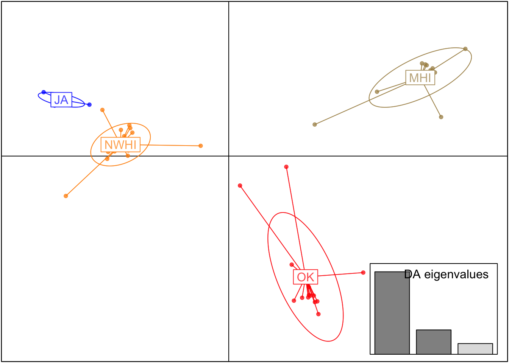</p>
</div>
<div class="sourceCode cell-code" id="cb24"><pre class="sourceCode r code-with-copy"><code class="sourceCode r"><span id="cb24-1"><a href="#cb24-1" aria-hidden="true" tabindex="-1"></a>ecor_hwe <span class="ot">&lt;-</span> <span class="fu">hw.test</span>(ecor_haps, <span class="at">B =</span> <span class="dv">1000</span>)</span>
<span id="cb24-2"><a href="#cb24-2" aria-hidden="true" tabindex="-1"></a></span>
<span id="cb24-3"><a href="#cb24-3" aria-hidden="true" tabindex="-1"></a><span class="co"># playing with cross-validation</span></span>
<span id="cb24-4"><a href="#cb24-4" aria-hidden="true" tabindex="-1"></a><span class="co">#xvalDapc(ecor_haps, grp = ecor_haps$pop, result = "overall", n.pca.max = 10, training.set = 0.75)</span></span></code><button title="Copy to Clipboard" class="code-copy-button"><i class="bi"></i></button></pre></div>
</div>
<p>Let’s take a look with the randomly selected SNPs</p>
<div class="cell">
<div class="sourceCode cell-code" id="cb25"><pre class="sourceCode r code-with-copy"><code class="sourceCode r"><span id="cb25-1"><a href="#cb25-1" aria-hidden="true" tabindex="-1"></a>ecor_snps.genind <span class="ot">&lt;-</span> <span class="fu">read.genepop</span>(<span class="st">"coruscans/populations_r100/populations.randsnp.gen"</span>)</span></code><button title="Copy to Clipboard" class="code-copy-button"><i class="bi"></i></button></pre></div>
<div class="cell-output cell-output-stdout">
<pre><code>
 Converting data from a Genepop .gen file to a genind object... 


File description:  # Stacks v2.61; GenePop v4.1.3; September 30, 2022 

...done.</code></pre>
</div>
<div class="sourceCode cell-code" id="cb27"><pre class="sourceCode r code-with-copy"><code class="sourceCode r"><span id="cb27-1"><a href="#cb27-1" aria-hidden="true" tabindex="-1"></a><span class="fu">levels</span>(ecor_snps.genind<span class="sc">$</span>pop) <span class="ot">&lt;-</span> <span class="fu">c</span>(<span class="st">"JA"</span>,<span class="st">"MHI"</span>,<span class="st">"NWHI"</span>,<span class="st">"JP"</span>)</span>
<span id="cb27-2"><a href="#cb27-2" aria-hidden="true" tabindex="-1"></a></span>
<span id="cb27-3"><a href="#cb27-3" aria-hidden="true" tabindex="-1"></a>ecor_dapc_snps <span class="ot">&lt;-</span> <span class="fu">dapc</span>(ecor_snps.genind,<span class="at">pop =</span>  ecor_snps.genind<span class="sc">$</span>pop, <span class="at">scale =</span> T,</span>
<span id="cb27-4"><a href="#cb27-4" aria-hidden="true" tabindex="-1"></a>                       <span class="at">pca.select=</span><span class="st">"nbEig"</span>, <span class="at">n.pca =</span> <span class="dv">3</span>, <span class="at">n.da=</span><span class="dv">3</span>)</span></code><button title="Copy to Clipboard" class="code-copy-button"><i class="bi"></i></button></pre></div>
<div class="cell-output cell-output-stderr">
<pre><code>Warning in .local(x, ...): Some scaling values are null.
 Corresponding alleles are removed.</code></pre>
</div>
<div class="sourceCode cell-code" id="cb29"><pre class="sourceCode r code-with-copy"><code class="sourceCode r"><span id="cb29-1"><a href="#cb29-1" aria-hidden="true" tabindex="-1"></a><span class="fu">scatter</span>(ecor_dapc_snps)</span></code><button title="Copy to Clipboard" class="code-copy-button"><i class="bi"></i></button></pre></div>
<div class="cell-output-display">
<p>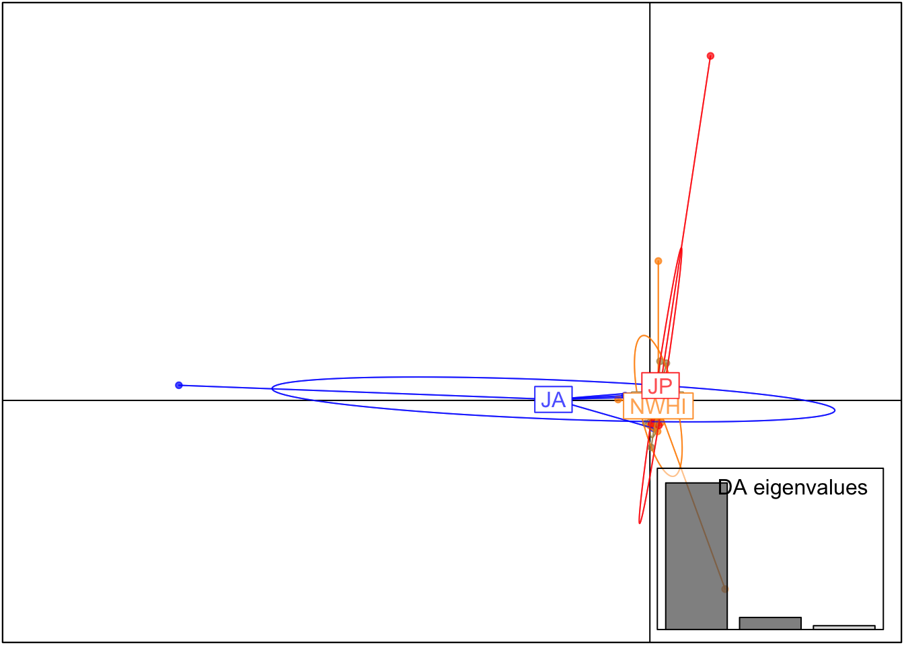</p>
</div>
</div>
</section>
<section id="snpr" class="level3">
<h3 class="anchored" data-anchor-id="snpr">SNPr</h3>
<p>I will use Will Hemstrom’s new package <a href="https://github.com/hemstrow/snpR">SNPr</a> to further evaluate and filter the SNPs that I randomly selected from each locus.</p>
<div class="cell">
<div class="sourceCode cell-code" id="cb30"><pre class="sourceCode r code-with-copy"><code class="sourceCode r"><span id="cb30-1"><a href="#cb30-1" aria-hidden="true" tabindex="-1"></a>popmap_cor <span class="ot">&lt;-</span> <span class="fu">read_tsv</span>(<span class="st">"coruscans/popmapECO.tsv"</span>,<span class="at">col_names =</span> <span class="fu">c</span>(<span class="st">"sampID"</span>,<span class="st">"pop"</span>))</span></code><button title="Copy to Clipboard" class="code-copy-button"><i class="bi"></i></button></pre></div>
<div class="cell-output cell-output-stderr">
<pre><code>Rows: 60 Columns: 2
── Column specification ────────────────────────────────────────────────────────
Delimiter: "\t"
chr (2): sampID, pop

ℹ Use `spec()` to retrieve the full column specification for this data.
ℹ Specify the column types or set `show_col_types = FALSE` to quiet this message.</code></pre>
</div>
<div class="sourceCode cell-code" id="cb32"><pre class="sourceCode r code-with-copy"><code class="sourceCode r"><span id="cb32-1"><a href="#cb32-1" aria-hidden="true" tabindex="-1"></a>ecor_snps <span class="ot">&lt;-</span> <span class="fu">read_vcf</span>(<span class="at">file =</span> <span class="st">"coruscans/populations_r100/populations.randsnp.vcf"</span>,</span>
<span id="cb32-2"><a href="#cb32-2" aria-hidden="true" tabindex="-1"></a>                      <span class="at">sample.meta =</span> popmap_cor)</span></code><button title="Copy to Clipboard" class="code-copy-button"><i class="bi"></i></button></pre></div>
<div class="cell-output cell-output-stdout">
<pre><code>Scanning file to determine attributes.
File attributes:
  meta lines: 14
  header_line: 15
  variant count: 929
  column count: 69

Meta line 14 read in.
All meta lines processed.
gt matrix initialized.
Character matrix gt created.
  Character matrix gt rows: 929
  Character matrix gt cols: 69
  skip: 0
  nrows: 929
  row_num: 0

Processed variant: 929
All variants processed</code></pre>
</div>
</div>
<section id="filtering" class="level4">
<h4 class="anchored" data-anchor-id="filtering">Filtering</h4>
<p>I’ve already implemented stringent filters in Stacks to only include individuals with all loci and loci found in all individuals. Now going to implement a strict HWE filter - if a locus is out of HWE in any population (<code>hwe_facets = "pop"</code>) after a Bonferroni correction, then it will be removed. Also going to remove non-variant loci, and loci with only a single minor allele (“singletons”).</p>
<div class="cell">
<div class="sourceCode cell-code" id="cb34"><pre class="sourceCode r code-with-copy"><code class="sourceCode r"><span id="cb34-1"><a href="#cb34-1" aria-hidden="true" tabindex="-1"></a>ecor_snps <span class="ot">&lt;-</span> <span class="fu">filter_snps</span>(ecor_snps, <span class="at">min_ind =</span> <span class="fl">0.9999</span>, <span class="at">min_loci =</span> <span class="fl">0.9999</span>, <span class="at">re_run =</span> <span class="st">"full"</span>, </span>
<span id="cb34-2"><a href="#cb34-2" aria-hidden="true" tabindex="-1"></a>                         <span class="at">hwe =</span> <span class="fl">0.05</span>, <span class="at">fwe_method =</span> <span class="st">"BY"</span>, <span class="at">hwe_facets =</span> <span class="st">"pop"</span>, <span class="at">singletons =</span> T,</span>
<span id="cb34-3"><a href="#cb34-3" aria-hidden="true" tabindex="-1"></a>                         <span class="at">verbose =</span> T)</span></code><button title="Copy to Clipboard" class="code-copy-button"><i class="bi"></i></button></pre></div>
<div class="cell-output cell-output-stdout">
<pre><code>Initializing...
Filtering loci. Starting loci: 929 
Filtering non-biallelic loci...
    0 bad loci
Filtering non_polymorphic loci...
    0 bad loci
Filtering loci sequenced in few individuals...
    0 bad loci
Filtering singletons.
    521 bad loci
Filtering loci out of hwe...
     7  bad loci
    Ending loci: 401 
Filtering individuals. Starting individuals: 60 
Filtering out individuals sequenced in few kept loci...
No individuals removed.</code></pre>
</div>
</div>
</section>
<section id="individual-stats" class="level4">
<h4 class="anchored" data-anchor-id="individual-stats">Individual Stats</h4>
<p>snpR uses facets to subset data on either sample metadata (such as sample ID, or population) or SNP metadata. Here we will look at per-individual stats. Also, note that the calculations are just attached to the data object, so we don’t lose track of them. Nice.</p>
<div class="cell">
<div class="sourceCode cell-code" id="cb36"><pre class="sourceCode r code-with-copy"><code class="sourceCode r"><span id="cb36-1"><a href="#cb36-1" aria-hidden="true" tabindex="-1"></a>ecor_snps <span class="ot">&lt;-</span> <span class="fu">calc_hs</span>(ecor_snps, <span class="at">facets =</span> <span class="st">"sampID"</span>)</span>
<span id="cb36-2"><a href="#cb36-2" aria-hidden="true" tabindex="-1"></a>ecor_snps <span class="ot">&lt;-</span> <span class="fu">calc_he</span>(ecor_snps, <span class="at">facets =</span> <span class="st">"sampID"</span>)</span>
<span id="cb36-3"><a href="#cb36-3" aria-hidden="true" tabindex="-1"></a>ecor_snps <span class="ot">&lt;-</span> <span class="fu">calc_ho</span>(ecor_snps, <span class="at">facets =</span> <span class="st">"sampID"</span>)</span>
<span id="cb36-4"><a href="#cb36-4" aria-hidden="true" tabindex="-1"></a></span>
<span id="cb36-5"><a href="#cb36-5" aria-hidden="true" tabindex="-1"></a><span class="co"># and dang, just like that we can get a PCA</span></span>
<span id="cb36-6"><a href="#cb36-6" aria-hidden="true" tabindex="-1"></a>p <span class="ot">&lt;-</span> <span class="fu">plot_clusters</span>(ecor_snps, <span class="at">facets =</span> <span class="st">"pop"</span>)</span></code><button title="Copy to Clipboard" class="code-copy-button"><i class="bi"></i></button></pre></div>
<div class="cell-output cell-output-stdout">
<pre><code>Formatting data...</code></pre>
</div>
<div class="sourceCode cell-code" id="cb38"><pre class="sourceCode r code-with-copy"><code class="sourceCode r"><span id="cb38-1"><a href="#cb38-1" aria-hidden="true" tabindex="-1"></a>p<span class="sc">$</span>plots<span class="sc">$</span>pca</span></code><button title="Copy to Clipboard" class="code-copy-button"><i class="bi"></i></button></pre></div>
<div class="cell-output-display">
<p>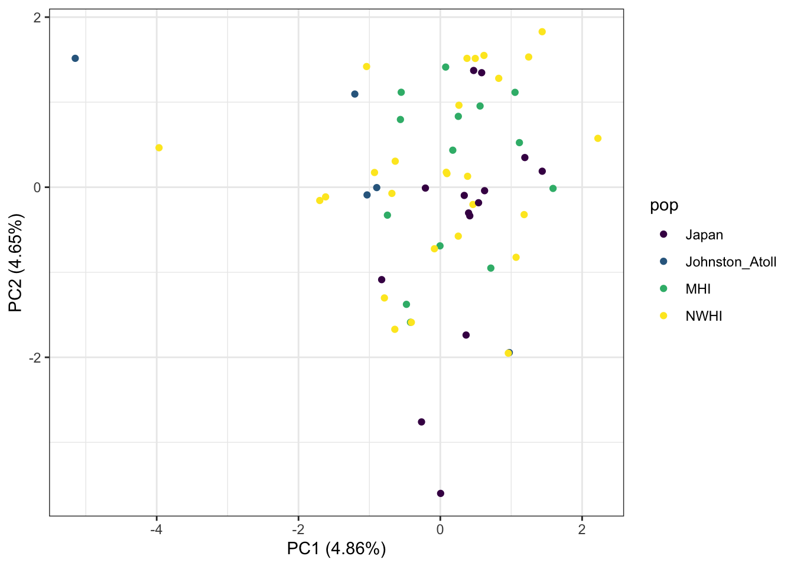</p>
</div>
</div>
<p>so there’s that one weirdo at Johnston, who is A150… we can identify him like this. He has double the mean <span class="math inline">\(H_e\)</span> and <span class="math inline">\(H_o\)</span>.</p>
<div class="cell">
<div class="sourceCode cell-code" id="cb39"><pre class="sourceCode r code-with-copy"><code class="sourceCode r"><span id="cb39-1"><a href="#cb39-1" aria-hidden="true" tabindex="-1"></a>ecor_snps <span class="ot">&lt;-</span> <span class="fu">calc_genetic_distances</span>(ecor_snps, <span class="at">facets =</span> <span class="st">"sampID"</span>,<span class="at">method =</span> <span class="st">"Nei"</span>)</span>
<span id="cb39-2"><a href="#cb39-2" aria-hidden="true" tabindex="-1"></a>stats.ind <span class="ot">&lt;-</span> <span class="fu">get.snpR.stats</span>(ecor_snps, <span class="at">facets=</span><span class="st">"sampID"</span>, <span class="at">stats =</span> <span class="fu">c</span>(<span class="st">"hs"</span>,<span class="st">"ho"</span>,<span class="st">"he"</span>))</span>
<span id="cb39-3"><a href="#cb39-3" aria-hidden="true" tabindex="-1"></a>ind.dists <span class="ot">&lt;-</span> <span class="fu">get.snpR.stats</span>(ecor_snps,<span class="at">facets=</span><span class="st">"sampID"</span>, <span class="at">stats =</span> <span class="st">"genetic_distance"</span>)                  </span>
<span id="cb39-4"><a href="#cb39-4" aria-hidden="true" tabindex="-1"></a><span class="fu">heatmap</span>(<span class="fu">as.matrix</span>(ind.dists<span class="sc">$</span>sampID<span class="sc">$</span>.base<span class="sc">$</span>Nei))</span></code><button title="Copy to Clipboard" class="code-copy-button"><i class="bi"></i></button></pre></div>
<div class="cell-output-display">
<p>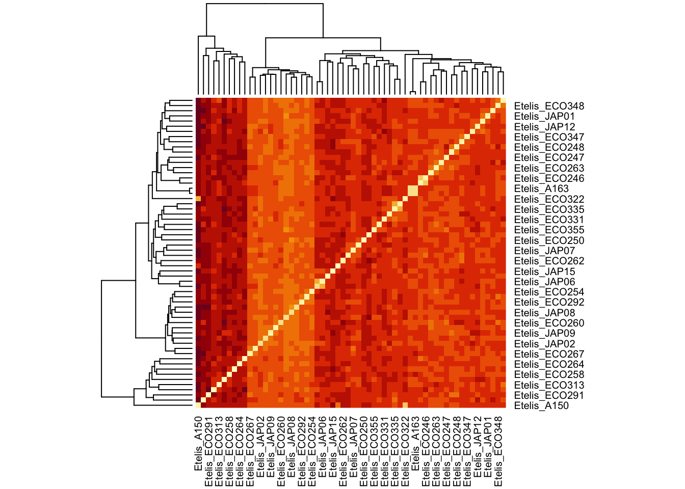</p>
</div>
<div class="sourceCode cell-code" id="cb40"><pre class="sourceCode r code-with-copy"><code class="sourceCode r"><span id="cb40-1"><a href="#cb40-1" aria-hidden="true" tabindex="-1"></a><span class="co"># drop'im</span></span>
<span id="cb40-2"><a href="#cb40-2" aria-hidden="true" tabindex="-1"></a>ecor_snps <span class="ot">&lt;-</span> ecor_snps[,<span class="sc">-</span><span class="fu">which</span>(<span class="st">"Etelis_A150"</span> <span class="sc">%in%</span> <span class="fu">names</span>(ecor_snps))]</span>
<span id="cb40-3"><a href="#cb40-3" aria-hidden="true" tabindex="-1"></a></span>
<span id="cb40-4"><a href="#cb40-4" aria-hidden="true" tabindex="-1"></a>p2 <span class="ot">&lt;-</span> <span class="fu">plot_clusters</span>(ecor_snps, <span class="at">facets =</span> <span class="st">"pop"</span>)</span></code><button title="Copy to Clipboard" class="code-copy-button"><i class="bi"></i></button></pre></div>
<div class="cell-output cell-output-stdout">
<pre><code>Formatting data...</code></pre>
</div>
<div class="sourceCode cell-code" id="cb42"><pre class="sourceCode r code-with-copy"><code class="sourceCode r"><span id="cb42-1"><a href="#cb42-1" aria-hidden="true" tabindex="-1"></a>p2<span class="sc">$</span>plots<span class="sc">$</span>pca</span></code><button title="Copy to Clipboard" class="code-copy-button"><i class="bi"></i></button></pre></div>
<div class="cell-output-display">
<p>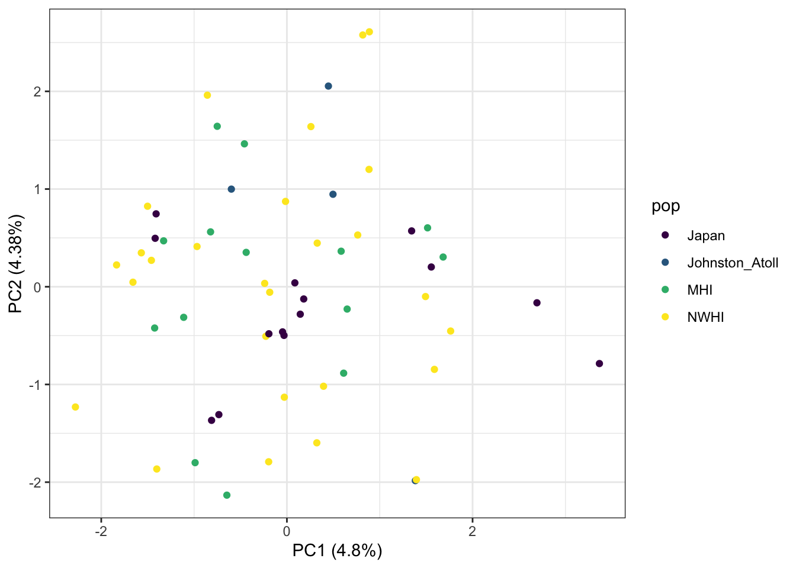</p>
</div>
</div>
</section>
</section>
<section id="re-running-after-dropping-the-bad-apple" class="level3">
<h3 class="anchored" data-anchor-id="re-running-after-dropping-the-bad-apple">Re-running after dropping the Bad Apple</h3>
<p>I went back to re-run <code>populations</code> from the stacks pipeline with the “Bad Apple” (sample A150 from Johnston) removed from the popmap (see above). This removal is as suggested by <span class="citation" data-cites="cercaRemovingBadApples2021">(<a href="#ref-cercaRemovingBadApples2021" role="doc-biblioref">Cerca et al. 2021</a>)</span> Now to re-do everything.</p>
</section>
<section id="adegenet-1" class="level3">
<h3 class="anchored" data-anchor-id="adegenet-1">Adegenet</h3>
<p>I am testing differences among 4 <em>a priori</em> defined populations. Thus, following recommendations in <span class="citation" data-cites="thiaGuidelinesStandardizingApplication">(<a href="#ref-thiaGuidelinesStandardizingApplication" role="doc-biblioref"><strong>thiaGuidelinesStandardizingApplication?</strong></a>)</span>, I will only use k-1 or 3 PCA axes.</p>
<div class="cell">
<div class="sourceCode cell-code" id="cb43"><pre class="sourceCode r code-with-copy"><code class="sourceCode r"><span id="cb43-1"><a href="#cb43-1" aria-hidden="true" tabindex="-1"></a>ecor_haps <span class="ot">&lt;-</span> <span class="fu">read.genepop</span>(<span class="st">"coruscans/populations_r100.dropA150/populations.haps.gen"</span>)</span></code><button title="Copy to Clipboard" class="code-copy-button"><i class="bi"></i></button></pre></div>
<div class="cell-output cell-output-stdout">
<pre><code>
 Converting data from a Genepop .gen file to a genind object... 


File description:  Stacks v2.61; GenePop v4.1.3; November 09, 2022 

...done.</code></pre>
</div>
<div class="sourceCode cell-code" id="cb45"><pre class="sourceCode r code-with-copy"><code class="sourceCode r"><span id="cb45-1"><a href="#cb45-1" aria-hidden="true" tabindex="-1"></a><span class="fu">levels</span>(ecor_haps<span class="sc">$</span>pop) <span class="ot">&lt;-</span> <span class="fu">c</span>(<span class="st">"JA"</span>,<span class="st">"MHI"</span>,<span class="st">"NWHI"</span>,<span class="st">"JP"</span>)</span>
<span id="cb45-2"><a href="#cb45-2" aria-hidden="true" tabindex="-1"></a></span>
<span id="cb45-3"><a href="#cb45-3" aria-hidden="true" tabindex="-1"></a>ecor_dapc_haps <span class="ot">&lt;-</span> <span class="fu">dapc</span>(ecor_haps,<span class="at">pop =</span>  ecor_haps<span class="sc">$</span>pop, <span class="at">scale =</span> T, <span class="at">pca.select=</span><span class="st">"nbEig"</span>, <span class="at">n.pca =</span> <span class="dv">3</span>, <span class="at">n.da=</span><span class="dv">3</span>)</span></code><button title="Copy to Clipboard" class="code-copy-button"><i class="bi"></i></button></pre></div>
<div class="cell-output cell-output-stderr">
<pre><code>Warning in .local(x, ...): Some scaling values are null.
 Corresponding alleles are removed.</code></pre>
</div>
<div class="sourceCode cell-code" id="cb47"><pre class="sourceCode r code-with-copy"><code class="sourceCode r"><span id="cb47-1"><a href="#cb47-1" aria-hidden="true" tabindex="-1"></a><span class="fu">scatter</span>(ecor_dapc_haps)</span></code><button title="Copy to Clipboard" class="code-copy-button"><i class="bi"></i></button></pre></div>
<div class="cell-output-display">
<p>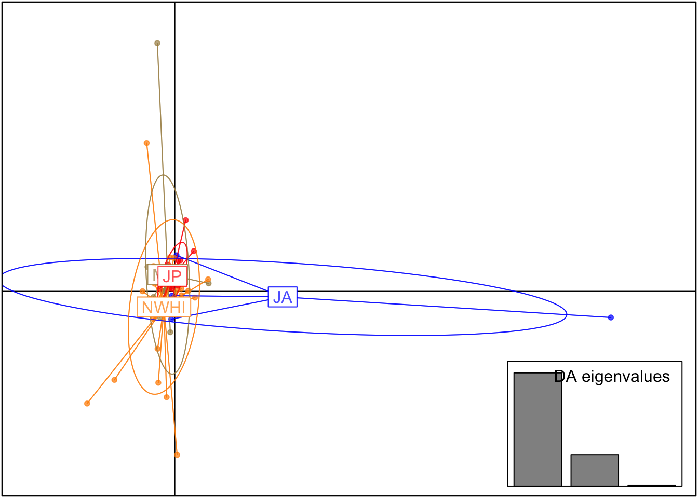</p>
</div>
<div class="sourceCode cell-code" id="cb48"><pre class="sourceCode r code-with-copy"><code class="sourceCode r"><span id="cb48-1"><a href="#cb48-1" aria-hidden="true" tabindex="-1"></a>ecor_hwe <span class="ot">&lt;-</span> <span class="fu">hw.test</span>(ecor_haps, <span class="at">B =</span> <span class="dv">1000</span>)</span>
<span id="cb48-2"><a href="#cb48-2" aria-hidden="true" tabindex="-1"></a></span>
<span id="cb48-3"><a href="#cb48-3" aria-hidden="true" tabindex="-1"></a><span class="co"># playing with cross-validation</span></span>
<span id="cb48-4"><a href="#cb48-4" aria-hidden="true" tabindex="-1"></a><span class="co">#xvalDapc(ecor_haps, grp = ecor_haps$pop, result = "overall", n.pca.max = 10, training.set = 0.75)</span></span></code><button title="Copy to Clipboard" class="code-copy-button"><i class="bi"></i></button></pre></div>
</div>
<p>Let’s take a look with the randomly selected SNPs</p>
<div class="cell">
<div class="sourceCode cell-code" id="cb49"><pre class="sourceCode r code-with-copy"><code class="sourceCode r"><span id="cb49-1"><a href="#cb49-1" aria-hidden="true" tabindex="-1"></a>ecor_snps.genind <span class="ot">&lt;-</span> <span class="fu">read.genepop</span>(<span class="st">"coruscans/populations_r100/populations.randsnp.gen"</span>)</span></code><button title="Copy to Clipboard" class="code-copy-button"><i class="bi"></i></button></pre></div>
<div class="cell-output cell-output-stdout">
<pre><code>
 Converting data from a Genepop .gen file to a genind object... 


File description:  # Stacks v2.61; GenePop v4.1.3; September 30, 2022 

...done.</code></pre>
</div>
<div class="sourceCode cell-code" id="cb51"><pre class="sourceCode r code-with-copy"><code class="sourceCode r"><span id="cb51-1"><a href="#cb51-1" aria-hidden="true" tabindex="-1"></a><span class="fu">levels</span>(ecor_snps.genind<span class="sc">$</span>pop) <span class="ot">&lt;-</span> <span class="fu">c</span>(<span class="st">"JA"</span>,<span class="st">"MHI"</span>,<span class="st">"NWHI"</span>,<span class="st">"JP"</span>)</span>
<span id="cb51-2"><a href="#cb51-2" aria-hidden="true" tabindex="-1"></a></span>
<span id="cb51-3"><a href="#cb51-3" aria-hidden="true" tabindex="-1"></a>ecor_dapc_snps <span class="ot">&lt;-</span> <span class="fu">dapc</span>(ecor_snps.genind,<span class="at">pop =</span>  ecor_snps.genind<span class="sc">$</span>pop, <span class="at">scale =</span> T,</span>
<span id="cb51-4"><a href="#cb51-4" aria-hidden="true" tabindex="-1"></a>                       <span class="at">pca.select=</span><span class="st">"nbEig"</span>, <span class="at">n.pca =</span> <span class="dv">3</span>, <span class="at">n.da=</span><span class="dv">3</span>)</span></code><button title="Copy to Clipboard" class="code-copy-button"><i class="bi"></i></button></pre></div>
<div class="cell-output cell-output-stderr">
<pre><code>Warning in .local(x, ...): Some scaling values are null.
 Corresponding alleles are removed.</code></pre>
</div>
<div class="sourceCode cell-code" id="cb53"><pre class="sourceCode r code-with-copy"><code class="sourceCode r"><span id="cb53-1"><a href="#cb53-1" aria-hidden="true" tabindex="-1"></a><span class="fu">scatter</span>(ecor_dapc_snps)</span></code><button title="Copy to Clipboard" class="code-copy-button"><i class="bi"></i></button></pre></div>
<div class="cell-output-display">
<p></p>
</div>
</div>
</section>
<section id="snpr-1" class="level3">
<h3 class="anchored" data-anchor-id="snpr-1">SNPr</h3>
<div class="cell">
<div class="sourceCode cell-code" id="cb54"><pre class="sourceCode r code-with-copy"><code class="sourceCode r"><span id="cb54-1"><a href="#cb54-1" aria-hidden="true" tabindex="-1"></a>popmap_cor <span class="ot">&lt;-</span> <span class="fu">read_tsv</span>(<span class="st">"coruscans/popmapECO.dropA150.tsv"</span>,<span class="at">col_names =</span> <span class="fu">c</span>(<span class="st">"sampID"</span>,<span class="st">"pop"</span>))</span></code><button title="Copy to Clipboard" class="code-copy-button"><i class="bi"></i></button></pre></div>
<div class="cell-output cell-output-stderr">
<pre><code>Rows: 59 Columns: 2
── Column specification ────────────────────────────────────────────────────────
Delimiter: "\t"
chr (2): sampID, pop

ℹ Use `spec()` to retrieve the full column specification for this data.
ℹ Specify the column types or set `show_col_types = FALSE` to quiet this message.</code></pre>
</div>
<div class="sourceCode cell-code" id="cb56"><pre class="sourceCode r code-with-copy"><code class="sourceCode r"><span id="cb56-1"><a href="#cb56-1" aria-hidden="true" tabindex="-1"></a>ecor_snps <span class="ot">&lt;-</span> <span class="fu">read_vcf</span>(<span class="at">file =</span> <span class="st">"coruscans/populations_r100.dropA150/populations.randsnp.vcf"</span>,</span>
<span id="cb56-2"><a href="#cb56-2" aria-hidden="true" tabindex="-1"></a>                      <span class="at">sample.meta =</span> popmap_cor)</span></code><button title="Copy to Clipboard" class="code-copy-button"><i class="bi"></i></button></pre></div>
<div class="cell-output cell-output-stdout">
<pre><code>Scanning file to determine attributes.
File attributes:
  meta lines: 14
  header_line: 15
  variant count: 984
  column count: 68

Meta line 14 read in.
All meta lines processed.
gt matrix initialized.
Character matrix gt created.
  Character matrix gt rows: 984
  Character matrix gt cols: 68
  skip: 0
  nrows: 984
  row_num: 0

Processed variant: 984
All variants processed</code></pre>
</div>
</div>
<section id="filtering-1" class="level4">
<h4 class="anchored" data-anchor-id="filtering-1">Filtering</h4>
<p>I’ve already implemented stringent filters in Stacks to only include individuals with all loci and loci found in all individuals. Now going to implement a strict HWE filter - if a locus is out of HWE in any population (<code>hwe_facets = "pop"</code>) after a Bonferroni correction, then it will be removed. Also going to remove non-variant loci, and loci with only a single minor allele (“singletons”).</p>
<div class="cell">
<div class="sourceCode cell-code" id="cb58"><pre class="sourceCode r code-with-copy"><code class="sourceCode r"><span id="cb58-1"><a href="#cb58-1" aria-hidden="true" tabindex="-1"></a>ecor_snps <span class="ot">&lt;-</span> <span class="fu">filter_snps</span>(ecor_snps, <span class="at">min_ind =</span> <span class="fl">0.9999</span>, <span class="at">min_loci =</span> <span class="fl">0.9999</span>, <span class="at">re_run =</span> <span class="st">"full"</span>, </span>
<span id="cb58-2"><a href="#cb58-2" aria-hidden="true" tabindex="-1"></a>                         <span class="at">hwe =</span> <span class="fl">0.05</span>, <span class="at">fwe_method =</span> <span class="st">"BY"</span>, <span class="at">hwe_facets =</span> <span class="st">"pop"</span>, <span class="at">singletons =</span> T,</span>
<span id="cb58-3"><a href="#cb58-3" aria-hidden="true" tabindex="-1"></a>                         <span class="at">verbose =</span> T)</span></code><button title="Copy to Clipboard" class="code-copy-button"><i class="bi"></i></button></pre></div>
<div class="cell-output cell-output-stdout">
<pre><code>Initializing...
Filtering loci. Starting loci: 984 
Filtering non-biallelic loci...
    0 bad loci
Filtering non_polymorphic loci...
    0 bad loci
Filtering loci sequenced in few individuals...
    0 bad loci
Filtering singletons.
    538 bad loci
Filtering loci out of hwe...
     6  bad loci
    Ending loci: 440 
Filtering individuals. Starting individuals: 59 
Filtering out individuals sequenced in few kept loci...
No individuals removed.</code></pre>
</div>
</div>
</section>
<section id="individual-stats-1" class="level4">
<h4 class="anchored" data-anchor-id="individual-stats-1">Individual Stats</h4>
<p>snpR uses facets to subset data on either sample metadata (such as sample ID, or population) or SNP metadata. Here we will look at per-individual stats. Also, note that the calculations are just attached to the data object, so we don’t lose track of them. Nice.</p>
<div class="cell">
<div class="sourceCode cell-code" id="cb60"><pre class="sourceCode r code-with-copy"><code class="sourceCode r"><span id="cb60-1"><a href="#cb60-1" aria-hidden="true" tabindex="-1"></a>ecor_snps <span class="ot">&lt;-</span> <span class="fu">calc_hs</span>(ecor_snps, <span class="at">facets =</span> <span class="st">"sampID"</span>)</span>
<span id="cb60-2"><a href="#cb60-2" aria-hidden="true" tabindex="-1"></a>ecor_snps <span class="ot">&lt;-</span> <span class="fu">calc_he</span>(ecor_snps, <span class="at">facets =</span> <span class="st">"sampID"</span>)</span>
<span id="cb60-3"><a href="#cb60-3" aria-hidden="true" tabindex="-1"></a>ecor_snps <span class="ot">&lt;-</span> <span class="fu">calc_ho</span>(ecor_snps, <span class="at">facets =</span> <span class="st">"sampID"</span>)</span>
<span id="cb60-4"><a href="#cb60-4" aria-hidden="true" tabindex="-1"></a></span>
<span id="cb60-5"><a href="#cb60-5" aria-hidden="true" tabindex="-1"></a><span class="co"># and dang, just like that we can get a PCA</span></span>
<span id="cb60-6"><a href="#cb60-6" aria-hidden="true" tabindex="-1"></a>p <span class="ot">&lt;-</span> <span class="fu">plot_clusters</span>(ecor_snps, <span class="at">facets =</span> <span class="st">"pop"</span>)</span></code><button title="Copy to Clipboard" class="code-copy-button"><i class="bi"></i></button></pre></div>
<div class="cell-output cell-output-stdout">
<pre><code>Formatting data...</code></pre>
</div>
<div class="sourceCode cell-code" id="cb62"><pre class="sourceCode r code-with-copy"><code class="sourceCode r"><span id="cb62-1"><a href="#cb62-1" aria-hidden="true" tabindex="-1"></a>p<span class="sc">$</span>plots<span class="sc">$</span>pca</span></code><button title="Copy to Clipboard" class="code-copy-button"><i class="bi"></i></button></pre></div>
<div class="cell-output-display">
<p></p>
</div>
</div>
</section>
<section id="population-stats" class="level4">
<h4 class="anchored" data-anchor-id="population-stats">Population Stats</h4>
<p>And here are some summary stats about each population</p>
<div class="cell">
<div class="sourceCode cell-code" id="cb63"><pre class="sourceCode r code-with-copy"><code class="sourceCode r"><span id="cb63-1"><a href="#cb63-1" aria-hidden="true" tabindex="-1"></a>ecor_snps <span class="ot">&lt;-</span> <span class="fu">calc_ho</span>(ecor_snps, <span class="at">facets =</span> <span class="st">"pop"</span>)</span>
<span id="cb63-2"><a href="#cb63-2" aria-hidden="true" tabindex="-1"></a>ecor_snps <span class="ot">&lt;-</span> <span class="fu">calc_he</span>(ecor_snps, <span class="at">facets =</span> <span class="st">"pop"</span>)</span>
<span id="cb63-3"><a href="#cb63-3" aria-hidden="true" tabindex="-1"></a>ecor_snps <span class="ot">&lt;-</span> <span class="fu">calc_maf</span>(ecor_snps, <span class="at">facets =</span> <span class="st">"pop"</span>)</span>
<span id="cb63-4"><a href="#cb63-4" aria-hidden="true" tabindex="-1"></a>ecor_snps <span class="ot">&lt;-</span> <span class="fu">calc_pi</span>(ecor_snps, <span class="at">facets =</span> <span class="st">"pop"</span>)</span>
<span id="cb63-5"><a href="#cb63-5" aria-hidden="true" tabindex="-1"></a>ecor_snps <span class="ot">&lt;-</span> <span class="fu">calc_private</span>(ecor_snps, <span class="at">facets =</span> <span class="st">"pop"</span>)</span>
<span id="cb63-6"><a href="#cb63-6" aria-hidden="true" tabindex="-1"></a>ecor_snps <span class="ot">&lt;-</span> <span class="fu">calc_hwe</span>(ecor_snps, <span class="at">facets =</span> <span class="st">"pop"</span>)</span>
<span id="cb63-7"><a href="#cb63-7" aria-hidden="true" tabindex="-1"></a>ecor_snps <span class="ot">&lt;-</span> <span class="fu">calc_fis</span>(ecor_snps, <span class="at">facets =</span> <span class="st">"pop"</span>)</span>
<span id="cb63-8"><a href="#cb63-8" aria-hidden="true" tabindex="-1"></a>ecor_snps <span class="ot">&lt;-</span> <span class="fu">calc_pairwise_fst</span>(ecor_snps, <span class="at">facets =</span> <span class="st">"pop"</span>,<span class="at">boot =</span> <span class="dv">1000</span>, <span class="at">boot_par =</span> <span class="dv">5</span>)</span>
<span id="cb63-9"><a href="#cb63-9" aria-hidden="true" tabindex="-1"></a></span>
<span id="cb63-10"><a href="#cb63-10" aria-hidden="true" tabindex="-1"></a>stats <span class="ot">&lt;-</span> <span class="fu">get.snpR.stats</span>(ecor_snps, <span class="at">facets =</span> <span class="st">"pop"</span>, <span class="at">stats =</span> <span class="fu">c</span>(<span class="st">"maf"</span>, <span class="st">"ho"</span>,<span class="st">"he"</span>,<span class="st">"hwe"</span>, <span class="st">"fis"</span>,<span class="st">"pi"</span>, <span class="st">"private"</span>))</span>
<span id="cb63-11"><a href="#cb63-11" aria-hidden="true" tabindex="-1"></a>stats<span class="sc">$</span>weighted.means</span></code><button title="Copy to Clipboard" class="code-copy-button"><i class="bi"></i></button></pre></div>
<div class="cell-output-display">

<div data-pagedtable="false">
  <script data-pagedtable-source="" type="application/json">
{"columns":[{"label":["facet"],"name":[1],"type":["chr"],"align":["left"]},{"label":["subfacet"],"name":[2],"type":["fct"],"align":["left"]},{"label":["snp.facet"],"name":[3],"type":["chr"],"align":["left"]},{"label":["snp.subfacet"],"name":[4],"type":["chr"],"align":["left"]},{"label":["weighted_mean_ho"],"name":[5],"type":["dbl"],"align":["right"]},{"label":["weighted_mean_he"],"name":[6],"type":["dbl"],"align":["right"]},{"label":["weighted_mean_pi"],"name":[7],"type":["dbl"],"align":["right"]},{"label":["weighted_mean_fis"],"name":[8],"type":["dbl"],"align":["right"]}],"data":[{"1":"pop","2":"Japan","3":".base","4":".base","5":"0.07094156","6":"0.06782816","7":"0.07034031","8":"0.001284709"},{"1":"pop","2":"Johnston_Atoll","3":".base","4":".base","5":"0.07215909","6":"0.06200284","7":"0.07086039","8":"-0.018691589"},{"1":"pop","2":"MHI","3":".base","4":".base","5":"0.06996753","6":"0.06953270","7":"0.07210798","8":"0.035672123"},{"1":"pop","2":"NWHI","3":".base","4":".base","5":"0.06776094","6":"0.06988870","7":"0.07120736","8":"0.034369520"}],"options":{"columns":{"min":{},"max":[10]},"rows":{"min":[10],"max":[10]},"pages":{}}}
  </script>
</div>
</div>
<div class="sourceCode cell-code" id="cb64"><pre class="sourceCode r code-with-copy"><code class="sourceCode r"><span id="cb64-1"><a href="#cb64-1" aria-hidden="true" tabindex="-1"></a><span class="co"># and here is Fst</span></span>
<span id="cb64-2"><a href="#cb64-2" aria-hidden="true" tabindex="-1"></a></span>
<span id="cb64-3"><a href="#cb64-3" aria-hidden="true" tabindex="-1"></a>ecor_fst <span class="ot">&lt;-</span> <span class="fu">get.snpR.stats</span>(ecor_snps, <span class="at">facets =</span> <span class="st">"pop"</span>, <span class="at">stats =</span> <span class="fu">c</span>(<span class="st">"fst"</span>))</span>
<span id="cb64-4"><a href="#cb64-4" aria-hidden="true" tabindex="-1"></a>ecor_fst<span class="sc">$</span>fst.matrix</span></code><button title="Copy to Clipboard" class="code-copy-button"><i class="bi"></i></button></pre></div>
<div class="cell-output cell-output-stdout">
<pre><code>$pop
$pop$fst
               p1 Johnston_Atoll          MHI          NWHI
1:          Japan   -0.003445356  0.004937154  0.0032788133
2: Johnston_Atoll             NA -0.011144848 -0.0212128337
3:            MHI             NA           NA -0.0009330938

$pop$p
               p1 Johnston_Atoll       MHI      NWHI
1:          Japan      0.3696304 0.1378621 0.1738262
2: Johnston_Atoll             NA 0.6323676 0.8081918
3:            MHI             NA        NA 0.4925075</code></pre>
</div>
</div>
</section>
<section id="linkage-disequilibrium" class="level4">
<h4 class="anchored" data-anchor-id="linkage-disequilibrium">Linkage Disequilibrium</h4>
<p>A little stuck on LD. But there are so few markers (intentionally) that it really shouldn’t be an issue.</p>
<div class="cell">
<div class="sourceCode cell-code" id="cb66"><pre class="sourceCode r code-with-copy"><code class="sourceCode r"><span id="cb66-1"><a href="#cb66-1" aria-hidden="true" tabindex="-1"></a>ecor_snps <span class="ot">&lt;-</span> <span class="fu">calc_pairwise_ld</span>(ecor_snps, <span class="at">facets =</span><span class="st">"CHROM"</span>, <span class="at">verbose =</span> T)</span>
<span id="cb66-2"><a href="#cb66-2" aria-hidden="true" tabindex="-1"></a>ldstats <span class="ot">&lt;-</span> <span class="fu">get.snpR.stats</span>(ecor_snps, <span class="at">stats =</span> <span class="st">"ld"</span>, <span class="at">facets =</span> <span class="st">"CHROM"</span>)</span>
<span id="cb66-3"><a href="#cb66-3" aria-hidden="true" tabindex="-1"></a>ld <span class="ot">&lt;-</span> <span class="fu">plot_pairwise_ld_heatmap</span>(ecor_snps, <span class="at">facets=</span><span class="fu">c</span>(<span class="st">"CHROM"</span>))</span></code><button title="Copy to Clipboard" class="code-copy-button"><i class="bi"></i></button></pre></div>
</div>
</section>
</section>
<section id="remove-loci-under-selection-using-pcadapt" class="level3">
<h3 class="anchored" data-anchor-id="remove-loci-under-selection-using-pcadapt">Remove loci under selection using pcadapt</h3>
<p>Following along [here](https://bcm-uga.github.io/pcadapt/articles/pcadapt.html.</p>
<p>First, write out the data into plink format</p>
<div class="cell">
<div class="sourceCode cell-code" id="cb67"><pre class="sourceCode r code-with-copy"><code class="sourceCode r"><span id="cb67-1"><a href="#cb67-1" aria-hidden="true" tabindex="-1"></a><span class="fu">format_snps</span>(ecor_snps, <span class="at">output =</span> <span class="st">"plink"</span>, <span class="at">facets =</span> <span class="st">"pop"</span>, </span>
<span id="cb67-2"><a href="#cb67-2" aria-hidden="true" tabindex="-1"></a>            <span class="at">outfile =</span> <span class="st">"coruscans/plink/coruscans.plink"</span>,<span class="at">chr =</span> <span class="st">"CHROM"</span>, </span>
<span id="cb67-3"><a href="#cb67-3" aria-hidden="true" tabindex="-1"></a>            <span class="at">position =</span> <span class="st">"position"</span> )</span></code><button title="Copy to Clipboard" class="code-copy-button"><i class="bi"></i></button></pre></div>
</div>
<section id="scree-plot" class="level4">
<h4 class="anchored" data-anchor-id="scree-plot">Scree Plot</h4>
<div class="cell">
<div class="sourceCode cell-code" id="cb68"><pre class="sourceCode r code-with-copy"><code class="sourceCode r"><span id="cb68-1"><a href="#cb68-1" aria-hidden="true" tabindex="-1"></a>ecor_plink <span class="ot">&lt;-</span> <span class="fu">read.pcadapt</span>(<span class="st">"coruscans/plink/coruscans.plink.bed"</span>,<span class="at">type=</span><span class="st">"bed"</span>)</span>
<span id="cb68-2"><a href="#cb68-2" aria-hidden="true" tabindex="-1"></a></span>
<span id="cb68-3"><a href="#cb68-3" aria-hidden="true" tabindex="-1"></a>pca20 <span class="ot">&lt;-</span> <span class="fu">pcadapt</span>(ecor_plink, <span class="at">K =</span> <span class="dv">20</span>)</span>
<span id="cb68-4"><a href="#cb68-4" aria-hidden="true" tabindex="-1"></a></span>
<span id="cb68-5"><a href="#cb68-5" aria-hidden="true" tabindex="-1"></a><span class="fu">plot</span>(pca20, <span class="at">option =</span> <span class="st">"screeplot"</span>)</span></code><button title="Copy to Clipboard" class="code-copy-button"><i class="bi"></i></button></pre></div>
<div class="cell-output cell-output-stderr">
<pre><code>Warning: The `&lt;scale&gt;` argument of `guides()` cannot be `FALSE`. Use "none" instead as
of ggplot2 3.3.4.
ℹ The deprecated feature was likely used in the pcadapt package.
  Please report the issue at &lt;]8;;https://github.com/bcm-uga/pcadapt/issueshttps://github.com/bcm-uga/pcadapt/issues]8;;&gt;.</code></pre>
</div>
<div class="cell-output-display">
<p>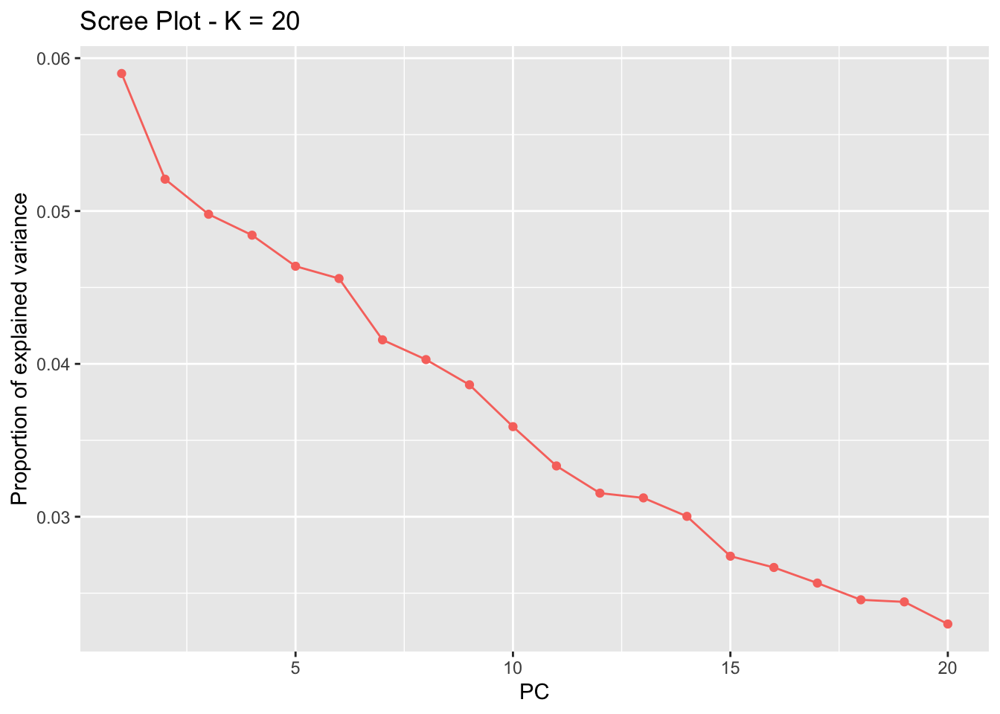</p>
</div>
</div>
<p>Based on the scree plot I think we’ll use 6 PCs.</p>
</section>
<section id="pca" class="level4">
<h4 class="anchored" data-anchor-id="pca">PCA</h4>
<div class="cell">
<div class="sourceCode cell-code" id="cb70"><pre class="sourceCode r code-with-copy"><code class="sourceCode r"><span id="cb70-1"><a href="#cb70-1" aria-hidden="true" tabindex="-1"></a>pca6 <span class="ot">&lt;-</span> <span class="fu">pcadapt</span>(ecor_plink, <span class="at">K =</span> <span class="dv">6</span>)</span>
<span id="cb70-2"><a href="#cb70-2" aria-hidden="true" tabindex="-1"></a><span class="fu">plot</span>(pca6, <span class="at">option =</span> <span class="st">"scores"</span>, <span class="at">pop =</span> popmap_cor<span class="sc">$</span>pop)</span></code><button title="Copy to Clipboard" class="code-copy-button"><i class="bi"></i></button></pre></div>
<div class="cell-output cell-output-stderr">
<pre><code>Warning: Use of `df$Pop` is discouraged.
ℹ Use `Pop` instead.</code></pre>
</div>
<div class="cell-output-display">
<p>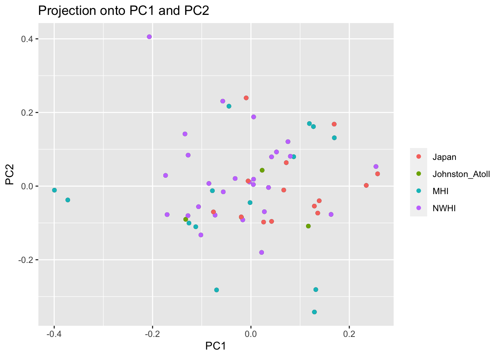</p>
</div>
</div>
<div class="cell">
<div class="sourceCode cell-code" id="cb72"><pre class="sourceCode r code-with-copy"><code class="sourceCode r"><span id="cb72-1"><a href="#cb72-1" aria-hidden="true" tabindex="-1"></a><span class="fu">plot</span>(pca6, <span class="at">option =</span> <span class="st">"manhattan"</span>)</span></code><button title="Copy to Clipboard" class="code-copy-button"><i class="bi"></i></button></pre></div>
<div class="cell-output-display">
<p>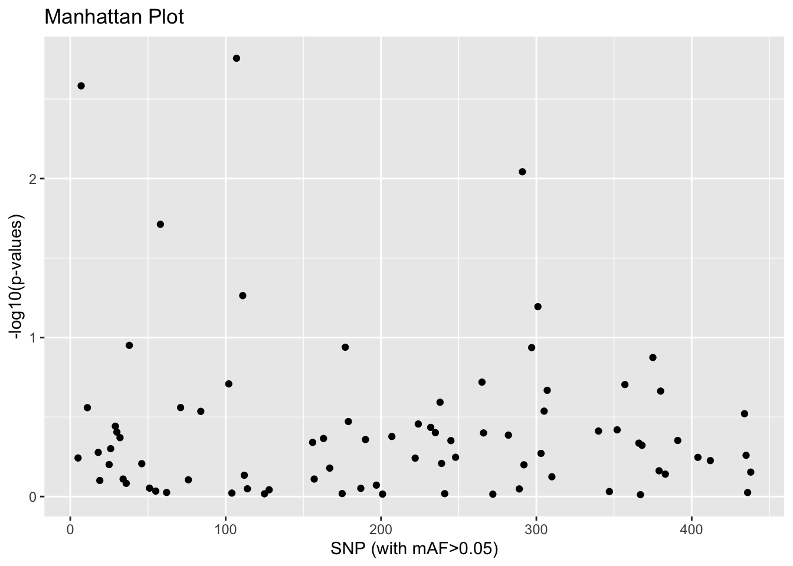</p>
</div>
<div class="sourceCode cell-code" id="cb73"><pre class="sourceCode r code-with-copy"><code class="sourceCode r"><span id="cb73-1"><a href="#cb73-1" aria-hidden="true" tabindex="-1"></a><span class="co">#qqplot</span></span>
<span id="cb73-2"><a href="#cb73-2" aria-hidden="true" tabindex="-1"></a><span class="fu">plot</span>(pca6, <span class="at">option =</span> <span class="st">"qqplot"</span>)</span></code><button title="Copy to Clipboard" class="code-copy-button"><i class="bi"></i></button></pre></div>
<div class="cell-output-display">
<p>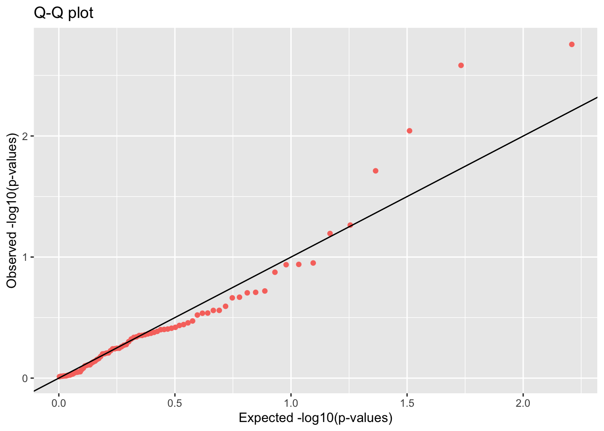</p>
</div>
<div class="sourceCode cell-code" id="cb74"><pre class="sourceCode r code-with-copy"><code class="sourceCode r"><span id="cb74-1"><a href="#cb74-1" aria-hidden="true" tabindex="-1"></a><span class="co">#histogram</span></span>
<span id="cb74-2"><a href="#cb74-2" aria-hidden="true" tabindex="-1"></a><span class="fu">hist</span>(pca6<span class="sc">$</span>pvalues, <span class="at">xlab =</span> <span class="st">"p-values"</span>, <span class="at">main =</span> <span class="cn">NULL</span>, <span class="at">breaks =</span> <span class="dv">50</span>, <span class="at">col =</span> <span class="st">"orange"</span>)</span></code><button title="Copy to Clipboard" class="code-copy-button"><i class="bi"></i></button></pre></div>
<div class="cell-output-display">
<p>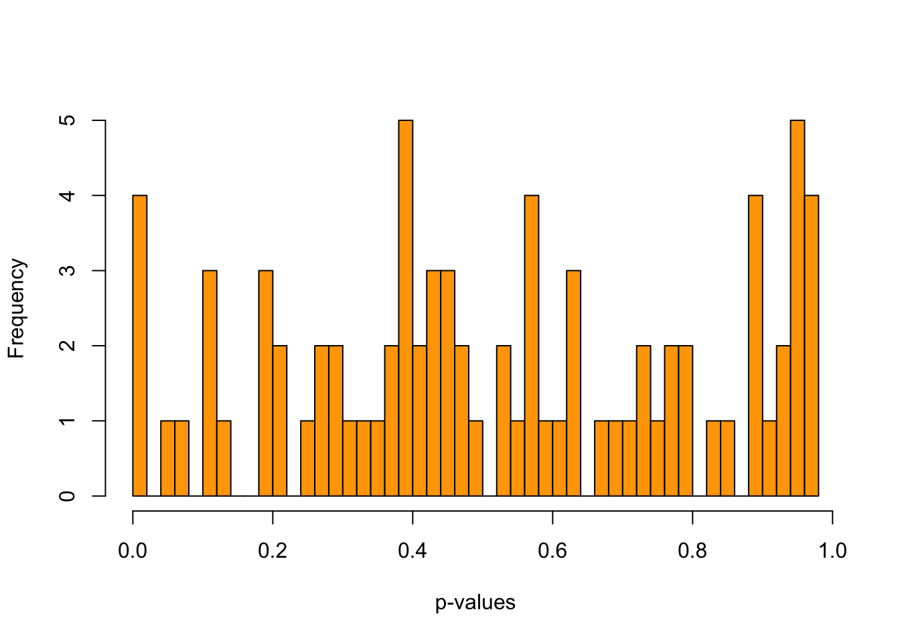</p>
</div>
</div>
</section>
<section id="outliers" class="level4">
<h4 class="anchored" data-anchor-id="outliers">Outliers</h4>
<p>So the p-values (even uncorrected) are all fairly large here. There aren’t really any outliers.</p>
<div class="cell">
<div class="sourceCode cell-code" id="cb75"><pre class="sourceCode r code-with-copy"><code class="sourceCode r"><span id="cb75-1"><a href="#cb75-1" aria-hidden="true" tabindex="-1"></a>padj <span class="ot">&lt;-</span> <span class="fu">p.adjust</span>(pca6<span class="sc">$</span>pvalues, <span class="at">method =</span> <span class="st">"BY"</span>)</span>
<span id="cb75-2"><a href="#cb75-2" aria-hidden="true" tabindex="-1"></a>alpha <span class="ot">&lt;-</span> <span class="fl">0.001</span></span>
<span id="cb75-3"><a href="#cb75-3" aria-hidden="true" tabindex="-1"></a>pca6_outliers <span class="ot">&lt;-</span> <span class="fu">which</span>(padj <span class="sc">&lt;</span> alpha)</span>
<span id="cb75-4"><a href="#cb75-4" aria-hidden="true" tabindex="-1"></a></span>
<span id="cb75-5"><a href="#cb75-5" aria-hidden="true" tabindex="-1"></a><span class="co">#remove outliers</span></span>
<span id="cb75-6"><a href="#cb75-6" aria-hidden="true" tabindex="-1"></a><span class="co">#ecor_snps2 &lt;- ecor_snps[-pca5_outliers,]</span></span></code><button title="Copy to Clipboard" class="code-copy-button"><i class="bi"></i></button></pre></div>
</div>
</section>
<section id="write-out-filtered-snps-and-haplotypes" class="level4">
<h4 class="anchored" data-anchor-id="write-out-filtered-snps-and-haplotypes">Write out filtered SNPs and haplotypes</h4>
<div class="cell">
<div class="sourceCode cell-code" id="cb76"><pre class="sourceCode r code-with-copy"><code class="sourceCode r"><span id="cb76-1"><a href="#cb76-1" aria-hidden="true" tabindex="-1"></a><span class="co">#write to vcf</span></span>
<span id="cb76-2"><a href="#cb76-2" aria-hidden="true" tabindex="-1"></a><span class="fu">format_snps</span>(ecor_snps, <span class="at">output =</span> <span class="st">"vcf"</span>, <span class="at">facets =</span> <span class="st">"pop"</span>, </span>
<span id="cb76-3"><a href="#cb76-3" aria-hidden="true" tabindex="-1"></a>            <span class="at">outfile =</span> <span class="st">"coruscans/hwe.pcadapt.filtered.snps.vcf"</span>,<span class="at">chr =</span> <span class="st">"CHROM"</span>, </span>
<span id="cb76-4"><a href="#cb76-4" aria-hidden="true" tabindex="-1"></a>            <span class="at">position =</span> <span class="st">"position"</span> )</span>
<span id="cb76-5"><a href="#cb76-5" aria-hidden="true" tabindex="-1"></a><span class="fu">format_snps</span>(ecor_snps, <span class="at">output =</span> <span class="st">"genepop"</span>, <span class="at">facets =</span> <span class="st">"pop"</span>, </span>
<span id="cb76-6"><a href="#cb76-6" aria-hidden="true" tabindex="-1"></a>            <span class="at">outfile =</span> <span class="st">"coruscans/hwe.pcadapt.filtered.snps.gen"</span>,<span class="at">chr =</span> <span class="st">"CHROM"</span>, </span>
<span id="cb76-7"><a href="#cb76-7" aria-hidden="true" tabindex="-1"></a>            <span class="at">position =</span> <span class="st">"position"</span> )</span>
<span id="cb76-8"><a href="#cb76-8" aria-hidden="true" tabindex="-1"></a></span>
<span id="cb76-9"><a href="#cb76-9" aria-hidden="true" tabindex="-1"></a><span class="co">#grab the locus names and write them to a whitelist to be included in the migrate data file.</span></span>
<span id="cb76-10"><a href="#cb76-10" aria-hidden="true" tabindex="-1"></a>whitelist <span class="ot">&lt;-</span> ecor_snps<span class="sc">@</span>snp.meta<span class="sc">$</span>CHROM</span>
<span id="cb76-11"><a href="#cb76-11" aria-hidden="true" tabindex="-1"></a><span class="fu">write.table</span>(<span class="fu">sort</span>(<span class="fu">as.numeric</span>(ecor_snps<span class="sc">@</span>snp.meta<span class="sc">$</span>CHROM)), <span class="st">"coruscans/ecor_whitelist.txt"</span>, <span class="at">quote=</span>F, <span class="at">row.names =</span> F,<span class="at">col.names =</span>F )</span>
<span id="cb76-12"><a href="#cb76-12" aria-hidden="true" tabindex="-1"></a></span>
<span id="cb76-13"><a href="#cb76-13" aria-hidden="true" tabindex="-1"></a>ecor_haps2 <span class="ot">&lt;-</span> ecor_haps[,loc <span class="ot">=</span> <span class="fu">locNames</span>(ecor_haps) <span class="sc">%in%</span> whitelist]</span>
<span id="cb76-14"><a href="#cb76-14" aria-hidden="true" tabindex="-1"></a><span class="co"># write them out</span></span>
<span id="cb76-15"><a href="#cb76-15" aria-hidden="true" tabindex="-1"></a><span class="fu">genind_to_genepop</span>(ecor_haps2,<span class="at">output =</span> <span class="st">"coruscans/hwe.pcadapt.filtered.haps.txt"</span>)</span></code><button title="Copy to Clipboard" class="code-copy-button"><i class="bi"></i></button></pre></div>
</div>
</section>
<section id="re-check-the-dapc" class="level4">
<h4 class="anchored" data-anchor-id="re-check-the-dapc">Re-check the DAPC</h4>
<p>We didn’t remove any outlier loci, so no need to re-calculate Fst.</p>
<section id="haplotypes" class="level5">
<h5 class="anchored" data-anchor-id="haplotypes">Haplotypes</h5>
<div class="cell">
<div class="sourceCode cell-code" id="cb77"><pre class="sourceCode r code-with-copy"><code class="sourceCode r"><span id="cb77-1"><a href="#cb77-1" aria-hidden="true" tabindex="-1"></a>ecor_haps2 <span class="ot">&lt;-</span> <span class="fu">read.genepop</span>(<span class="st">"coruscans/hwe.pcadapt.filtered.haps.gen"</span>)</span></code><button title="Copy to Clipboard" class="code-copy-button"><i class="bi"></i></button></pre></div>
<div class="cell-output cell-output-stdout">
<pre><code>
 Converting data from a Genepop .gen file to a genind object... 


File description:  Conversion of an object of class 'genind' into a GENEPOP file with the package 'graph4lg'                                                                                                                                                                                                                                                                                                                                                                                                                                                         

...done.</code></pre>
</div>
<div class="sourceCode cell-code" id="cb79"><pre class="sourceCode r code-with-copy"><code class="sourceCode r"><span id="cb79-1"><a href="#cb79-1" aria-hidden="true" tabindex="-1"></a><span class="fu">levels</span>(ecor_haps2<span class="sc">$</span>pop) <span class="ot">&lt;-</span> <span class="fu">c</span>(<span class="st">"JA"</span>,<span class="st">"JP"</span>, <span class="st">"MHI"</span>,<span class="st">"NWHI"</span>)</span>
<span id="cb79-2"><a href="#cb79-2" aria-hidden="true" tabindex="-1"></a></span>
<span id="cb79-3"><a href="#cb79-3" aria-hidden="true" tabindex="-1"></a>ecor_dapc2 <span class="ot">&lt;-</span> <span class="fu">dapc</span>(ecor_haps2,<span class="at">pop =</span>  ecor_haps2<span class="sc">$</span>pop, <span class="at">scale =</span> T, <span class="at">pca.select=</span><span class="st">"nbEig"</span>, <span class="at">n.pca =</span> <span class="dv">3</span>, <span class="at">n.da=</span><span class="dv">3</span>)</span>
<span id="cb79-4"><a href="#cb79-4" aria-hidden="true" tabindex="-1"></a></span>
<span id="cb79-5"><a href="#cb79-5" aria-hidden="true" tabindex="-1"></a><span class="fu">scatter</span>(ecor_dapc2)</span></code><button title="Copy to Clipboard" class="code-copy-button"><i class="bi"></i></button></pre></div>
<div class="cell-output-display">
<p>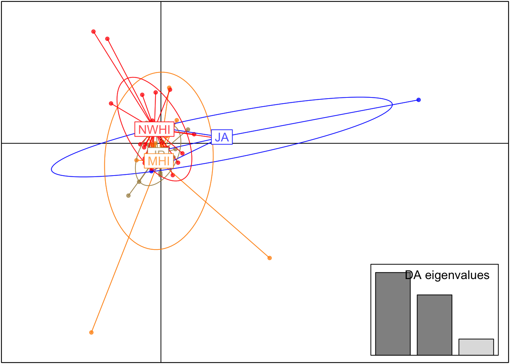</p>
</div>
</div>
</section>
<section id="snps" class="level5">
<h5 class="anchored" data-anchor-id="snps">SNPs</h5>
<div class="cell">
<div class="sourceCode cell-code" id="cb80"><pre class="sourceCode r code-with-copy"><code class="sourceCode r"><span id="cb80-1"><a href="#cb80-1" aria-hidden="true" tabindex="-1"></a>ecor_snps2.genind <span class="ot">&lt;-</span> <span class="fu">read.genepop</span>(<span class="st">"coruscans/hwe.pcadapt.filtered.snps.gen"</span>)</span></code><button title="Copy to Clipboard" class="code-copy-button"><i class="bi"></i></button></pre></div>
<div class="cell-output cell-output-stdout">
<pre><code>
 Converting data from a Genepop .gen file to a genind object... 


File description:  coruscans/hwe_genepop 

...done.</code></pre>
</div>
<div class="sourceCode cell-code" id="cb82"><pre class="sourceCode r code-with-copy"><code class="sourceCode r"><span id="cb82-1"><a href="#cb82-1" aria-hidden="true" tabindex="-1"></a><span class="fu">levels</span>(ecor_snps2.genind<span class="sc">$</span>pop) <span class="ot">&lt;-</span> <span class="fu">c</span>(<span class="st">"JP"</span>,<span class="st">"JA"</span>,<span class="st">"MHI"</span>,<span class="st">"NWHI"</span>)</span>
<span id="cb82-2"><a href="#cb82-2" aria-hidden="true" tabindex="-1"></a></span>
<span id="cb82-3"><a href="#cb82-3" aria-hidden="true" tabindex="-1"></a>ecor_dapc2_snps <span class="ot">&lt;-</span> <span class="fu">dapc</span>(ecor_snps2.genind,<span class="at">pop =</span>  ecor_snps2.genind<span class="sc">$</span>pop, <span class="at">scale =</span> T,</span>
<span id="cb82-4"><a href="#cb82-4" aria-hidden="true" tabindex="-1"></a>                       <span class="at">pca.select=</span><span class="st">"nbEig"</span>, <span class="at">n.pca =</span> <span class="dv">3</span>, <span class="at">n.da=</span><span class="dv">3</span>)</span>
<span id="cb82-5"><a href="#cb82-5" aria-hidden="true" tabindex="-1"></a></span>
<span id="cb82-6"><a href="#cb82-6" aria-hidden="true" tabindex="-1"></a><span class="fu">scatter</span>(ecor_dapc2_snps)</span></code><button title="Copy to Clipboard" class="code-copy-button"><i class="bi"></i></button></pre></div>
<div class="cell-output-display">
<p></p>
</div>
</div>
</section>
</section>
</section>
</section>
<section id="e.-carbunculus-2" class="level2">
<h2 class="anchored" data-anchor-id="e.-carbunculus-2">E. carbunculus</h2>
<section id="adegenet-2" class="level3">
<h3 class="anchored" data-anchor-id="adegenet-2">Adegenet</h3>
<div class="cell">
<div class="sourceCode cell-code" id="cb83"><pre class="sourceCode r code-with-copy"><code class="sourceCode r"><span id="cb83-1"><a href="#cb83-1" aria-hidden="true" tabindex="-1"></a>ecar_haps <span class="ot">&lt;-</span> <span class="fu">read.genepop</span>(<span class="st">"carbunculus/populations_r100/populations.haps.gen"</span>)</span></code><button title="Copy to Clipboard" class="code-copy-button"><i class="bi"></i></button></pre></div>
<div class="cell-output cell-output-stdout">
<pre><code>
 Converting data from a Genepop .gen file to a genind object... 


File description:  Stacks v2.61; GenePop v4.1.3; September 30, 2022 

...done.</code></pre>
</div>
<div class="sourceCode cell-code" id="cb85"><pre class="sourceCode r code-with-copy"><code class="sourceCode r"><span id="cb85-1"><a href="#cb85-1" aria-hidden="true" tabindex="-1"></a><span class="fu">levels</span>(ecar_haps<span class="sc">$</span>pop) <span class="ot">&lt;-</span> <span class="fu">c</span>(<span class="st">"JP"</span>,<span class="st">"MHI"</span>,<span class="st">"NWHI"</span>)</span>
<span id="cb85-2"><a href="#cb85-2" aria-hidden="true" tabindex="-1"></a></span>
<span id="cb85-3"><a href="#cb85-3" aria-hidden="true" tabindex="-1"></a>ecar_dapc <span class="ot">&lt;-</span> <span class="fu">dapc</span>(ecar_haps,<span class="at">pop =</span>  ecar_haps<span class="sc">$</span>pop, <span class="at">scale =</span> T, <span class="at">pca.select=</span><span class="st">"nbEig"</span>, <span class="at">n.pca =</span> <span class="dv">2</span>, <span class="at">n.da=</span><span class="dv">2</span>)</span></code><button title="Copy to Clipboard" class="code-copy-button"><i class="bi"></i></button></pre></div>
<div class="cell-output cell-output-stderr">
<pre><code>Warning in .local(x, ...): Some scaling values are null.
 Corresponding alleles are removed.</code></pre>
</div>
<div class="sourceCode cell-code" id="cb87"><pre class="sourceCode r code-with-copy"><code class="sourceCode r"><span id="cb87-1"><a href="#cb87-1" aria-hidden="true" tabindex="-1"></a><span class="fu">scatter</span>(ecar_dapc)</span></code><button title="Copy to Clipboard" class="code-copy-button"><i class="bi"></i></button></pre></div>
<div class="cell-output-display">
<p>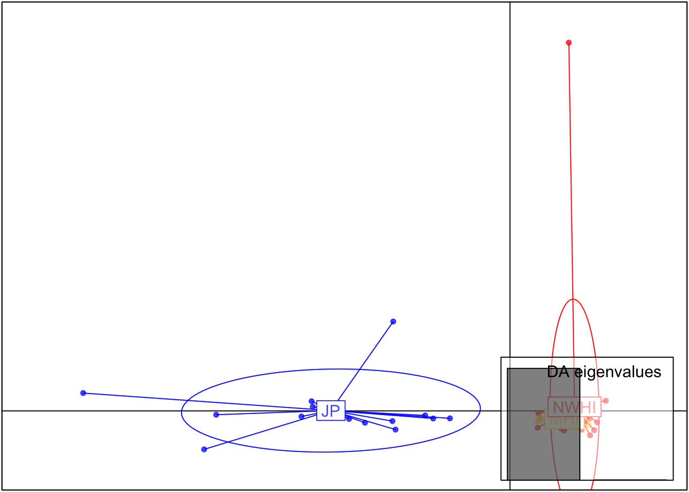</p>
</div>
</div>
<p>Let’s take a look with the randomly selected SNPs</p>
<div class="cell">
<div class="sourceCode cell-code" id="cb88"><pre class="sourceCode r code-with-copy"><code class="sourceCode r"><span id="cb88-1"><a href="#cb88-1" aria-hidden="true" tabindex="-1"></a>ecar_snps.genind <span class="ot">&lt;-</span> <span class="fu">read.genepop</span>(<span class="st">"carbunculus/populations_r100/populations.randsnp.gen"</span>)</span></code><button title="Copy to Clipboard" class="code-copy-button"><i class="bi"></i></button></pre></div>
<div class="cell-output cell-output-stdout">
<pre><code>
 Converting data from a Genepop .gen file to a genind object... 


File description:  # Stacks v2.61; GenePop v4.1.3; September 30, 2022 

...done.</code></pre>
</div>
<div class="sourceCode cell-code" id="cb90"><pre class="sourceCode r code-with-copy"><code class="sourceCode r"><span id="cb90-1"><a href="#cb90-1" aria-hidden="true" tabindex="-1"></a><span class="fu">levels</span>(ecar_snps.genind<span class="sc">$</span>pop) <span class="ot">&lt;-</span> <span class="fu">c</span>(<span class="st">"JP"</span>,<span class="st">"MHI"</span>,<span class="st">"NWHI"</span>)</span>
<span id="cb90-2"><a href="#cb90-2" aria-hidden="true" tabindex="-1"></a></span>
<span id="cb90-3"><a href="#cb90-3" aria-hidden="true" tabindex="-1"></a>ecar_dapc_snps <span class="ot">&lt;-</span> <span class="fu">dapc</span>(ecar_snps.genind,<span class="at">pop =</span>  ecar_snps.genind<span class="sc">$</span>pop, <span class="at">scale =</span> T,</span>
<span id="cb90-4"><a href="#cb90-4" aria-hidden="true" tabindex="-1"></a>                       <span class="at">pca.select=</span><span class="st">"nbEig"</span>, <span class="at">n.pca =</span> <span class="dv">2</span>, <span class="at">n.da=</span><span class="dv">2</span>)</span></code><button title="Copy to Clipboard" class="code-copy-button"><i class="bi"></i></button></pre></div>
<div class="cell-output cell-output-stderr">
<pre><code>Warning in .local(x, ...): Some scaling values are null.
 Corresponding alleles are removed.</code></pre>
</div>
<div class="sourceCode cell-code" id="cb92"><pre class="sourceCode r code-with-copy"><code class="sourceCode r"><span id="cb92-1"><a href="#cb92-1" aria-hidden="true" tabindex="-1"></a><span class="fu">scatter</span>(ecar_dapc_snps)</span></code><button title="Copy to Clipboard" class="code-copy-button"><i class="bi"></i></button></pre></div>
<div class="cell-output-display">
<p>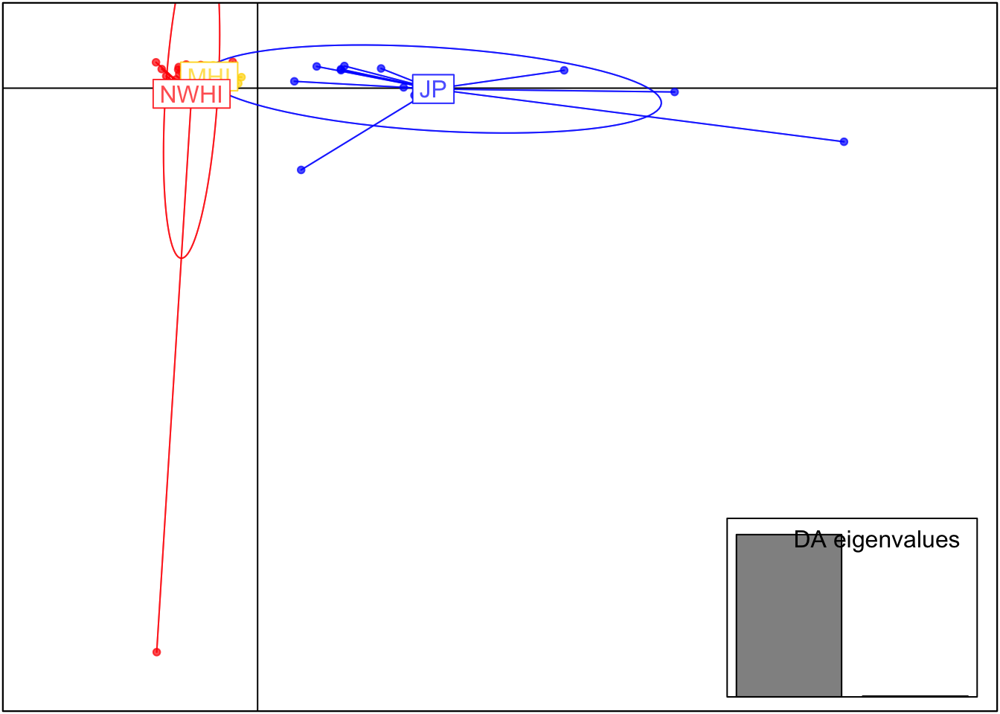</p>
</div>
</div>
</section>
<section id="snpr-2" class="level3">
<h3 class="anchored" data-anchor-id="snpr-2">SNPr</h3>
<p>I will use Will Hemstrom’s new package <a href="https://github.com/hemstrow/snpR">SNPr</a> to further evaluate and filter the SNPs that I randomly selected from each locus.</p>
<div class="cell">
<div class="sourceCode cell-code" id="cb93"><pre class="sourceCode r code-with-copy"><code class="sourceCode r"><span id="cb93-1"><a href="#cb93-1" aria-hidden="true" tabindex="-1"></a>ecar_popmap <span class="ot">&lt;-</span> <span class="fu">read_tsv</span>(<span class="st">"carbunculus/popmapECA.tsv"</span>,<span class="at">col_names =</span> <span class="fu">c</span>(<span class="st">"sampID"</span>,<span class="st">"pop"</span>))</span></code><button title="Copy to Clipboard" class="code-copy-button"><i class="bi"></i></button></pre></div>
<div class="cell-output cell-output-stderr">
<pre><code>Rows: 55 Columns: 2
── Column specification ────────────────────────────────────────────────────────
Delimiter: "\t"
chr (2): sampID, pop

ℹ Use `spec()` to retrieve the full column specification for this data.
ℹ Specify the column types or set `show_col_types = FALSE` to quiet this message.</code></pre>
</div>
<div class="sourceCode cell-code" id="cb95"><pre class="sourceCode r code-with-copy"><code class="sourceCode r"><span id="cb95-1"><a href="#cb95-1" aria-hidden="true" tabindex="-1"></a>ecar_snps <span class="ot">&lt;-</span> <span class="fu">read_vcf</span>(<span class="at">file =</span> <span class="st">"carbunculus/populations_r100/populations.randsnp.vcf"</span>,</span>
<span id="cb95-2"><a href="#cb95-2" aria-hidden="true" tabindex="-1"></a>                      <span class="at">sample.meta =</span> ecar_popmap)</span></code><button title="Copy to Clipboard" class="code-copy-button"><i class="bi"></i></button></pre></div>
<div class="cell-output cell-output-stdout">
<pre><code>Scanning file to determine attributes.
File attributes:
  meta lines: 14
  header_line: 15
  variant count: 2750
  column count: 64

Meta line 14 read in.
All meta lines processed.
gt matrix initialized.
Character matrix gt created.
  Character matrix gt rows: 2750
  Character matrix gt cols: 64
  skip: 0
  nrows: 2750
  row_num: 0

Processed variant 1000
Processed variant 2000
Processed variant: 2750
All variants processed</code></pre>
</div>
</div>
<section id="filtering-2" class="level4">
<h4 class="anchored" data-anchor-id="filtering-2">Filtering</h4>
<p>I’ve already implemented stringent filters in Stacks to only include individuals with all loci and loci found in all individuals. Now going to implement a strict HWE filter - if a locus is out of HWE in any population (<code>hwe_facets = "pop"</code>) after a Bonferroni correction, then it will be removed. Also going to remove non-variant loci, and loci with only a single minor allele (“singletons”).</p>
<div class="cell">
<div class="sourceCode cell-code" id="cb97"><pre class="sourceCode r code-with-copy"><code class="sourceCode r"><span id="cb97-1"><a href="#cb97-1" aria-hidden="true" tabindex="-1"></a>ecar_snps <span class="ot">&lt;-</span> <span class="fu">filter_snps</span>(ecar_snps, <span class="at">min_ind =</span> <span class="fl">0.9999</span>, <span class="at">min_loci =</span> <span class="fl">0.9999</span>, <span class="at">re_run =</span> <span class="st">"full"</span>, </span>
<span id="cb97-2"><a href="#cb97-2" aria-hidden="true" tabindex="-1"></a>                         <span class="at">hwe =</span> <span class="fl">0.05</span>, <span class="at">fwe_method =</span> <span class="st">"BY"</span>, <span class="at">hwe_facets =</span> <span class="st">"pop"</span>, <span class="at">singletons =</span> T,</span>
<span id="cb97-3"><a href="#cb97-3" aria-hidden="true" tabindex="-1"></a>                         <span class="at">verbose =</span> T)</span></code><button title="Copy to Clipboard" class="code-copy-button"><i class="bi"></i></button></pre></div>
<div class="cell-output cell-output-stdout">
<pre><code>Initializing...
Filtering loci. Starting loci: 2750 
Filtering non-biallelic loci...
    0 bad loci
Filtering non_polymorphic loci...
    0 bad loci
Filtering loci sequenced in few individuals...
    0 bad loci
Filtering singletons.
    1064 bad loci
Filtering loci out of hwe...
     20  bad loci
    Ending loci: 1666 
Filtering individuals. Starting individuals: 55 
Filtering out individuals sequenced in few kept loci...
No individuals removed.</code></pre>
</div>
</div>
</section>
<section id="individual-stats-2" class="level4">
<h4 class="anchored" data-anchor-id="individual-stats-2">Individual Stats</h4>
<p>snpR uses facets to subset data on either sample metadata (such as sample ID, or population) or SNP metadata. Here we will look at per-individual stats. Also, note that the calculations are just attached to the data object, so we don’t lose track of them. Nice.</p>
<div class="cell">
<div class="sourceCode cell-code" id="cb99"><pre class="sourceCode r code-with-copy"><code class="sourceCode r"><span id="cb99-1"><a href="#cb99-1" aria-hidden="true" tabindex="-1"></a>ecar_snps <span class="ot">&lt;-</span> <span class="fu">calc_hs</span>(ecar_snps, <span class="at">facets =</span> <span class="st">"sampID"</span>)</span>
<span id="cb99-2"><a href="#cb99-2" aria-hidden="true" tabindex="-1"></a>ecar_snps <span class="ot">&lt;-</span> <span class="fu">calc_he</span>(ecar_snps, <span class="at">facets =</span> <span class="st">"sampID"</span>)</span>
<span id="cb99-3"><a href="#cb99-3" aria-hidden="true" tabindex="-1"></a>ecar_snps <span class="ot">&lt;-</span> <span class="fu">calc_ho</span>(ecar_snps, <span class="at">facets =</span> <span class="st">"sampID"</span>)</span>
<span id="cb99-4"><a href="#cb99-4" aria-hidden="true" tabindex="-1"></a></span>
<span id="cb99-5"><a href="#cb99-5" aria-hidden="true" tabindex="-1"></a><span class="co"># and dang, just like that we can get a PCA</span></span>
<span id="cb99-6"><a href="#cb99-6" aria-hidden="true" tabindex="-1"></a>p <span class="ot">&lt;-</span> <span class="fu">plot_clusters</span>(ecar_snps, <span class="at">facets =</span> <span class="st">"pop"</span>)</span></code><button title="Copy to Clipboard" class="code-copy-button"><i class="bi"></i></button></pre></div>
<div class="cell-output cell-output-stdout">
<pre><code>Formatting data...</code></pre>
</div>
<div class="sourceCode cell-code" id="cb101"><pre class="sourceCode r code-with-copy"><code class="sourceCode r"><span id="cb101-1"><a href="#cb101-1" aria-hidden="true" tabindex="-1"></a>p<span class="sc">$</span>plots<span class="sc">$</span>pca</span></code><button title="Copy to Clipboard" class="code-copy-button"><i class="bi"></i></button></pre></div>
<div class="cell-output-display">
<p>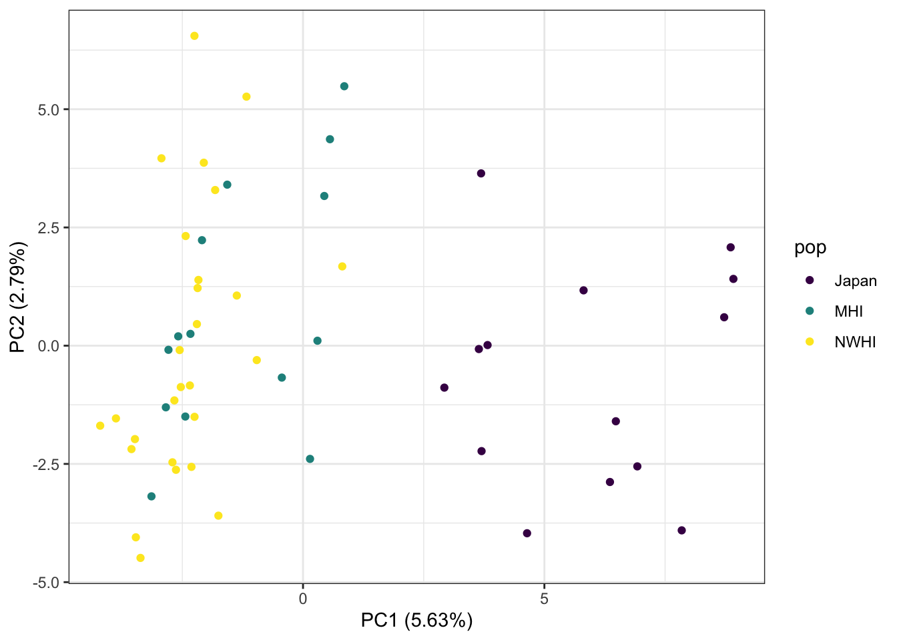</p>
</div>
</div>
<p>The separation between both Hawaiian populations and Japan is pretty evident even in the PCA.</p>
<div class="cell">
<div class="sourceCode cell-code" id="cb102"><pre class="sourceCode r code-with-copy"><code class="sourceCode r"><span id="cb102-1"><a href="#cb102-1" aria-hidden="true" tabindex="-1"></a>ecar_snps <span class="ot">&lt;-</span> <span class="fu">calc_genetic_distances</span>(ecar_snps, <span class="at">facets =</span> <span class="st">"sampID"</span>,<span class="at">method =</span> <span class="st">"Nei"</span>)</span>
<span id="cb102-2"><a href="#cb102-2" aria-hidden="true" tabindex="-1"></a>stats.ind <span class="ot">&lt;-</span> <span class="fu">get.snpR.stats</span>(ecar_snps, <span class="at">facets=</span><span class="st">"sampID"</span>, <span class="at">stats =</span> <span class="fu">c</span>(<span class="st">"hs"</span>,<span class="st">"ho"</span>,<span class="st">"he"</span>))</span>
<span id="cb102-3"><a href="#cb102-3" aria-hidden="true" tabindex="-1"></a>ind.dists <span class="ot">&lt;-</span> <span class="fu">get.snpR.stats</span>(ecar_snps,<span class="at">facets=</span><span class="st">"sampID"</span>, <span class="at">stats =</span> <span class="st">"genetic_distance"</span>)                  </span>
<span id="cb102-4"><a href="#cb102-4" aria-hidden="true" tabindex="-1"></a><span class="fu">heatmap</span>(<span class="fu">as.matrix</span>(ind.dists<span class="sc">$</span>sampID<span class="sc">$</span>.base<span class="sc">$</span>Nei))</span></code><button title="Copy to Clipboard" class="code-copy-button"><i class="bi"></i></button></pre></div>
<div class="cell-output-display">
<p>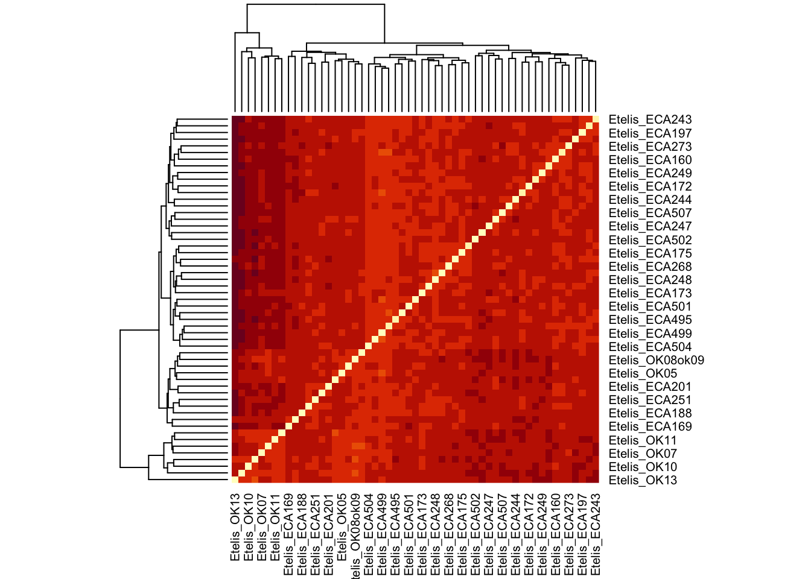</p>
</div>
</div>
<p>And there doesn’t seem to be any reason to drop any individuals.</p>
</section>
<section id="population-stats-1" class="level4">
<h4 class="anchored" data-anchor-id="population-stats-1">Population Stats</h4>
<p>And here are some summary stats about each population</p>
<div class="cell">
<div class="sourceCode cell-code" id="cb103"><pre class="sourceCode r code-with-copy"><code class="sourceCode r"><span id="cb103-1"><a href="#cb103-1" aria-hidden="true" tabindex="-1"></a>ecar_snps <span class="ot">&lt;-</span> <span class="fu">calc_ho</span>(ecar_snps, <span class="at">facets =</span> <span class="st">"pop"</span>)</span>
<span id="cb103-2"><a href="#cb103-2" aria-hidden="true" tabindex="-1"></a>ecar_snps <span class="ot">&lt;-</span> <span class="fu">calc_he</span>(ecar_snps, <span class="at">facets =</span> <span class="st">"pop"</span>)</span>
<span id="cb103-3"><a href="#cb103-3" aria-hidden="true" tabindex="-1"></a>ecar_snps <span class="ot">&lt;-</span> <span class="fu">calc_maf</span>(ecar_snps, <span class="at">facets =</span> <span class="st">"pop"</span>)</span>
<span id="cb103-4"><a href="#cb103-4" aria-hidden="true" tabindex="-1"></a>ecar_snps <span class="ot">&lt;-</span> <span class="fu">calc_pi</span>(ecar_snps, <span class="at">facets =</span> <span class="st">"pop"</span>)</span>
<span id="cb103-5"><a href="#cb103-5" aria-hidden="true" tabindex="-1"></a>ecar_snps <span class="ot">&lt;-</span> <span class="fu">calc_private</span>(ecar_snps, <span class="at">facets =</span> <span class="st">"pop"</span>)</span>
<span id="cb103-6"><a href="#cb103-6" aria-hidden="true" tabindex="-1"></a>ecar_snps <span class="ot">&lt;-</span> <span class="fu">calc_hwe</span>(ecar_snps, <span class="at">facets =</span> <span class="st">"pop"</span>)</span>
<span id="cb103-7"><a href="#cb103-7" aria-hidden="true" tabindex="-1"></a>ecar_snps <span class="ot">&lt;-</span> <span class="fu">calc_fis</span>(ecar_snps, <span class="at">facets =</span> <span class="st">"pop"</span>)</span>
<span id="cb103-8"><a href="#cb103-8" aria-hidden="true" tabindex="-1"></a>ecar_snps <span class="ot">&lt;-</span> <span class="fu">calc_pairwise_fst</span>(ecar_snps, <span class="at">facets =</span> <span class="st">"pop"</span>, <span class="at">boot =</span> <span class="dv">1000</span>, <span class="at">boot_par =</span> <span class="dv">5</span>)</span>
<span id="cb103-9"><a href="#cb103-9" aria-hidden="true" tabindex="-1"></a></span>
<span id="cb103-10"><a href="#cb103-10" aria-hidden="true" tabindex="-1"></a>stats <span class="ot">&lt;-</span> <span class="fu">get.snpR.stats</span>(ecar_snps, <span class="at">facets =</span> <span class="st">"pop"</span>, <span class="at">stats =</span> <span class="fu">c</span>(<span class="st">"maf"</span>, <span class="st">"ho"</span>,<span class="st">"he"</span>,<span class="st">"hwe"</span>, <span class="st">"fis"</span>,<span class="st">"pi"</span>, <span class="st">"private"</span>))</span>
<span id="cb103-11"><a href="#cb103-11" aria-hidden="true" tabindex="-1"></a>stats<span class="sc">$</span>weighted.means</span></code><button title="Copy to Clipboard" class="code-copy-button"><i class="bi"></i></button></pre></div>
<div class="cell-output-display">

<div data-pagedtable="false">
  <script data-pagedtable-source="" type="application/json">
{"columns":[{"label":["facet"],"name":[1],"type":["chr"],"align":["left"]},{"label":["subfacet"],"name":[2],"type":["fct"],"align":["left"]},{"label":["snp.facet"],"name":[3],"type":["chr"],"align":["left"]},{"label":["snp.subfacet"],"name":[4],"type":["chr"],"align":["left"]},{"label":["weighted_mean_ho"],"name":[5],"type":["dbl"],"align":["right"]},{"label":["weighted_mean_he"],"name":[6],"type":["dbl"],"align":["right"]},{"label":["weighted_mean_pi"],"name":[7],"type":["dbl"],"align":["right"]},{"label":["weighted_mean_fis"],"name":[8],"type":["dbl"],"align":["right"]}],"data":[{"1":"pop","2":"Japan","3":".base","4":".base","5":"0.1490739","6":"0.1452290","7":"0.1506079","8":"0.01015567"},{"1":"pop","2":"MHI","3":".base","4":".base","5":"0.1365117","6":"0.1372529","7":"0.1423363","8":"0.02600438"},{"1":"pop","2":"NWHI","3":".base","4":".base","5":"0.1386555","6":"0.1395953","7":"0.1422292","8":"0.01759916"}],"options":{"columns":{"min":{},"max":[10]},"rows":{"min":[10],"max":[10]},"pages":{}}}
  </script>
</div>
</div>
<div class="sourceCode cell-code" id="cb104"><pre class="sourceCode r code-with-copy"><code class="sourceCode r"><span id="cb104-1"><a href="#cb104-1" aria-hidden="true" tabindex="-1"></a><span class="co"># and here is Fst</span></span>
<span id="cb104-2"><a href="#cb104-2" aria-hidden="true" tabindex="-1"></a></span>
<span id="cb104-3"><a href="#cb104-3" aria-hidden="true" tabindex="-1"></a>ecar_fst <span class="ot">&lt;-</span> <span class="fu">get.snpR.stats</span>(ecar_snps, <span class="at">facets =</span> <span class="st">"pop"</span>, <span class="at">stats =</span> <span class="fu">c</span>(<span class="st">"fst"</span>))</span>
<span id="cb104-4"><a href="#cb104-4" aria-hidden="true" tabindex="-1"></a>ecar_fst<span class="sc">$</span>fst.matrix</span></code><button title="Copy to Clipboard" class="code-copy-button"><i class="bi"></i></button></pre></div>
<div class="cell-output cell-output-stdout">
<pre><code>$pop
$pop$fst
      p1        MHI        NWHI
1: Japan 0.01746465 0.021466084
2:   MHI         NA 0.001113613

$pop$p
      p1         MHI        NWHI
1: Japan 0.005994006 0.000999001
2:   MHI          NA 0.334665335</code></pre>
</div>
</div>
</section>
<section id="linkage-disequilibrium-1" class="level4">
<h4 class="anchored" data-anchor-id="linkage-disequilibrium-1">Linkage Disequilibrium</h4>
<p>A little stuck on LD. But there are so few markers (intentionally) that it really shouldn’t be an issue.</p>
<div class="cell">
<div class="sourceCode cell-code" id="cb106"><pre class="sourceCode r code-with-copy"><code class="sourceCode r"><span id="cb106-1"><a href="#cb106-1" aria-hidden="true" tabindex="-1"></a>ecar_snps <span class="ot">&lt;-</span> <span class="fu">calc_pairwise_ld</span>(ecar_snps, <span class="at">facets =</span><span class="st">"CHROM"</span>, <span class="at">verbose =</span> T)</span>
<span id="cb106-2"><a href="#cb106-2" aria-hidden="true" tabindex="-1"></a>ldstats <span class="ot">&lt;-</span> <span class="fu">get.snpR.stats</span>(ecar_snps, <span class="at">stats =</span> <span class="st">"ld"</span>, <span class="at">facets =</span> <span class="st">"CHROM"</span>)</span>
<span id="cb106-3"><a href="#cb106-3" aria-hidden="true" tabindex="-1"></a>ld <span class="ot">&lt;-</span> <span class="fu">plot_pairwise_ld_heatmap</span>(ecar_snps, <span class="at">facets=</span><span class="fu">c</span>(<span class="st">"CHROM"</span>))</span></code><button title="Copy to Clipboard" class="code-copy-button"><i class="bi"></i></button></pre></div>
</div>
</section>
</section>
<section id="remove-loci-under-selection-using-pcadapt-1" class="level3">
<h3 class="anchored" data-anchor-id="remove-loci-under-selection-using-pcadapt-1">Remove loci under selection using pcadapt</h3>
<p>Following along [here](https://bcm-uga.github.io/pcadapt/articles/pcadapt.html.</p>
<p>First, write out the data into plink format</p>
<div class="cell">
<div class="sourceCode cell-code" id="cb107"><pre class="sourceCode r code-with-copy"><code class="sourceCode r"><span id="cb107-1"><a href="#cb107-1" aria-hidden="true" tabindex="-1"></a><span class="fu">format_snps</span>(ecar_snps, <span class="at">output =</span> <span class="st">"plink"</span>, <span class="at">facets =</span> <span class="st">"pop"</span>, </span>
<span id="cb107-2"><a href="#cb107-2" aria-hidden="true" tabindex="-1"></a>            <span class="at">outfile =</span> <span class="st">"carbunculus/plink/carbunculus.plink"</span>,<span class="at">chr =</span> <span class="st">"CHROM"</span>, </span>
<span id="cb107-3"><a href="#cb107-3" aria-hidden="true" tabindex="-1"></a>            <span class="at">position =</span> <span class="st">"position"</span> )</span></code><button title="Copy to Clipboard" class="code-copy-button"><i class="bi"></i></button></pre></div>
</div>
<section id="scree-plot-1" class="level4">
<h4 class="anchored" data-anchor-id="scree-plot-1">Scree Plot</h4>
<div class="cell">
<div class="sourceCode cell-code" id="cb108"><pre class="sourceCode r code-with-copy"><code class="sourceCode r"><span id="cb108-1"><a href="#cb108-1" aria-hidden="true" tabindex="-1"></a>ecar_plink <span class="ot">&lt;-</span> <span class="fu">read.pcadapt</span>(<span class="st">"carbunculus/plink/carbunculus.plink.bed"</span>,<span class="at">type=</span><span class="st">"bed"</span>)</span>
<span id="cb108-2"><a href="#cb108-2" aria-hidden="true" tabindex="-1"></a></span>
<span id="cb108-3"><a href="#cb108-3" aria-hidden="true" tabindex="-1"></a>pca20 <span class="ot">&lt;-</span> <span class="fu">pcadapt</span>(ecar_plink, <span class="at">K =</span> <span class="dv">20</span>)</span>
<span id="cb108-4"><a href="#cb108-4" aria-hidden="true" tabindex="-1"></a></span>
<span id="cb108-5"><a href="#cb108-5" aria-hidden="true" tabindex="-1"></a><span class="fu">plot</span>(pca20, <span class="at">option =</span> <span class="st">"screeplot"</span>)</span></code><button title="Copy to Clipboard" class="code-copy-button"><i class="bi"></i></button></pre></div>
<div class="cell-output-display">
<p></p>
</div>
</div>
<p>Based on the scree plot I think we’ll use 2 PCs.</p>
</section>
<section id="pca-1" class="level4">
<h4 class="anchored" data-anchor-id="pca-1">PCA</h4>
<div class="cell">
<div class="sourceCode cell-code" id="cb109"><pre class="sourceCode r code-with-copy"><code class="sourceCode r"><span id="cb109-1"><a href="#cb109-1" aria-hidden="true" tabindex="-1"></a>pca2 <span class="ot">&lt;-</span> <span class="fu">pcadapt</span>(ecar_plink, <span class="at">K =</span> <span class="dv">2</span>)</span>
<span id="cb109-2"><a href="#cb109-2" aria-hidden="true" tabindex="-1"></a><span class="fu">plot</span>(pca2, <span class="at">option =</span> <span class="st">"scores"</span>, <span class="at">pop =</span> ecar_popmap<span class="sc">$</span>pop)</span></code><button title="Copy to Clipboard" class="code-copy-button"><i class="bi"></i></button></pre></div>
<div class="cell-output cell-output-stderr">
<pre><code>Warning: Use of `df$Pop` is discouraged.
ℹ Use `Pop` instead.</code></pre>
</div>
<div class="cell-output-display">
<p>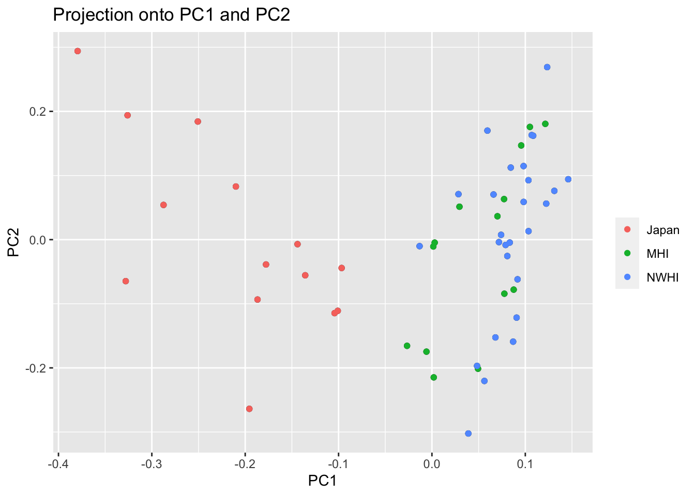</p>
</div>
</div>
<div class="cell">
<div class="sourceCode cell-code" id="cb111"><pre class="sourceCode r code-with-copy"><code class="sourceCode r"><span id="cb111-1"><a href="#cb111-1" aria-hidden="true" tabindex="-1"></a><span class="fu">plot</span>(pca2, <span class="at">option =</span> <span class="st">"manhattan"</span>)</span></code><button title="Copy to Clipboard" class="code-copy-button"><i class="bi"></i></button></pre></div>
<div class="cell-output-display">
<p></p>
</div>
<div class="sourceCode cell-code" id="cb112"><pre class="sourceCode r code-with-copy"><code class="sourceCode r"><span id="cb112-1"><a href="#cb112-1" aria-hidden="true" tabindex="-1"></a><span class="co">#qqplot</span></span>
<span id="cb112-2"><a href="#cb112-2" aria-hidden="true" tabindex="-1"></a><span class="fu">plot</span>(pca2, <span class="at">option =</span> <span class="st">"qqplot"</span>)</span></code><button title="Copy to Clipboard" class="code-copy-button"><i class="bi"></i></button></pre></div>
<div class="cell-output-display">
<p></p>
</div>
<div class="sourceCode cell-code" id="cb113"><pre class="sourceCode r code-with-copy"><code class="sourceCode r"><span id="cb113-1"><a href="#cb113-1" aria-hidden="true" tabindex="-1"></a><span class="co">#histogram</span></span>
<span id="cb113-2"><a href="#cb113-2" aria-hidden="true" tabindex="-1"></a><span class="fu">hist</span>(pca2<span class="sc">$</span>pvalues, <span class="at">xlab =</span> <span class="st">"p-values"</span>, <span class="at">main =</span> <span class="cn">NULL</span>, <span class="at">breaks =</span> <span class="dv">50</span>, <span class="at">col =</span> <span class="st">"orange"</span>)</span></code><button title="Copy to Clipboard" class="code-copy-button"><i class="bi"></i></button></pre></div>
<div class="cell-output-display">
<p></p>
</div>
</div>
</section>
<section id="outliers-1" class="level4">
<h4 class="anchored" data-anchor-id="outliers-1">Outliers</h4>
<p>In this species, there are some clear outliers. I am going to correct to Benjamini-Yekuteli False Discovery Rate, with a 1 in 1000 FDR.</p>
<div class="cell">
<div class="sourceCode cell-code" id="cb114"><pre class="sourceCode r code-with-copy"><code class="sourceCode r"><span id="cb114-1"><a href="#cb114-1" aria-hidden="true" tabindex="-1"></a>padj <span class="ot">&lt;-</span> <span class="fu">p.adjust</span>(pca2<span class="sc">$</span>pvalues, <span class="at">method =</span> <span class="st">"BY"</span>)</span>
<span id="cb114-2"><a href="#cb114-2" aria-hidden="true" tabindex="-1"></a>alpha <span class="ot">&lt;-</span> <span class="fl">0.001</span></span>
<span id="cb114-3"><a href="#cb114-3" aria-hidden="true" tabindex="-1"></a>pca2_outliers <span class="ot">&lt;-</span> <span class="fu">which</span>(padj <span class="sc">&lt;</span> alpha)</span>
<span id="cb114-4"><a href="#cb114-4" aria-hidden="true" tabindex="-1"></a></span>
<span id="cb114-5"><a href="#cb114-5" aria-hidden="true" tabindex="-1"></a><span class="co">#remove outliers</span></span>
<span id="cb114-6"><a href="#cb114-6" aria-hidden="true" tabindex="-1"></a>ecar_snps2 <span class="ot">&lt;-</span> ecar_snps[<span class="sc">-</span>pca2_outliers,]</span></code><button title="Copy to Clipboard" class="code-copy-button"><i class="bi"></i></button></pre></div>
</div>
</section>
<section id="write-out-filtered-snps-and-haplotypes-1" class="level4">
<h4 class="anchored" data-anchor-id="write-out-filtered-snps-and-haplotypes-1">Write out filtered SNPs and haplotypes</h4>
<p>I’m going to write a whitelist with 401 randomly selected SNPs - to be in parity with coruscans. Adding more would take longer.</p>
<div class="cell">
<div class="sourceCode cell-code" id="cb115"><pre class="sourceCode r code-with-copy"><code class="sourceCode r"><span id="cb115-1"><a href="#cb115-1" aria-hidden="true" tabindex="-1"></a><span class="co">#write to vcf</span></span>
<span id="cb115-2"><a href="#cb115-2" aria-hidden="true" tabindex="-1"></a><span class="fu">format_snps</span>(ecar_snps2, <span class="at">output =</span> <span class="st">"vcf"</span>, <span class="at">facets =</span> <span class="st">"pop"</span>, </span>
<span id="cb115-3"><a href="#cb115-3" aria-hidden="true" tabindex="-1"></a>            <span class="at">outfile =</span> <span class="st">"carbunculus/hwe.pcadapt.filtered.snps.vcf"</span>,<span class="at">chr =</span> <span class="st">"CHROM"</span>, </span>
<span id="cb115-4"><a href="#cb115-4" aria-hidden="true" tabindex="-1"></a>            <span class="at">position =</span> <span class="st">"position"</span> )</span>
<span id="cb115-5"><a href="#cb115-5" aria-hidden="true" tabindex="-1"></a></span>
<span id="cb115-6"><a href="#cb115-6" aria-hidden="true" tabindex="-1"></a><span class="fu">format_snps</span>(ecar_snps2, <span class="at">output =</span> <span class="st">"genepop"</span>, <span class="at">facets =</span> <span class="st">"pop"</span>, </span>
<span id="cb115-7"><a href="#cb115-7" aria-hidden="true" tabindex="-1"></a>            <span class="at">outfile =</span> <span class="st">"carbunculus/hwe.pcadapt.filtered.snps.genepop"</span>,<span class="at">chr =</span> <span class="st">"CHROM"</span>, </span>
<span id="cb115-8"><a href="#cb115-8" aria-hidden="true" tabindex="-1"></a>            <span class="at">position =</span> <span class="st">"position"</span> )</span>
<span id="cb115-9"><a href="#cb115-9" aria-hidden="true" tabindex="-1"></a></span>
<span id="cb115-10"><a href="#cb115-10" aria-hidden="true" tabindex="-1"></a><span class="fu">write.csv</span>(pca2_outliers, <span class="st">"carbunculus/pcadapt.outliers.csv"</span>)</span>
<span id="cb115-11"><a href="#cb115-11" aria-hidden="true" tabindex="-1"></a><span class="co">#grab the locus names, pick a random subset of 1000, and write them to a whitelist to be included in the migrate data file.</span></span>
<span id="cb115-12"><a href="#cb115-12" aria-hidden="true" tabindex="-1"></a>whitelist <span class="ot">&lt;-</span> ecar_snps2<span class="sc">@</span>snp.meta<span class="sc">$</span>CHROM[<span class="fu">sample</span>(<span class="dv">1</span><span class="sc">:</span><span class="fu">nsnps</span>(ecar_snps2),<span class="dv">1000</span>)]</span>
<span id="cb115-13"><a href="#cb115-13" aria-hidden="true" tabindex="-1"></a><span class="fu">write.table</span>(<span class="fu">sort</span>(<span class="fu">as.numeric</span>(whitelist)), </span>
<span id="cb115-14"><a href="#cb115-14" aria-hidden="true" tabindex="-1"></a>            <span class="st">"carbunculus/ecar_whitelist.txt"</span>, <span class="at">quote=</span>F, <span class="at">row.names =</span> F,<span class="at">col.names =</span>F )</span>
<span id="cb115-15"><a href="#cb115-15" aria-hidden="true" tabindex="-1"></a></span>
<span id="cb115-16"><a href="#cb115-16" aria-hidden="true" tabindex="-1"></a>ecar_haps2 <span class="ot">&lt;-</span> ecar_haps[,loc <span class="ot">=</span> <span class="fu">locNames</span>(ecar_haps) <span class="sc">%in%</span> whitelist]</span>
<span id="cb115-17"><a href="#cb115-17" aria-hidden="true" tabindex="-1"></a><span class="co"># write them out</span></span>
<span id="cb115-18"><a href="#cb115-18" aria-hidden="true" tabindex="-1"></a><span class="fu">genind_to_genepop</span>(ecar_haps2,<span class="at">output =</span> <span class="st">"carbunculus/hwe.pcadapt.filtered.haps.txt"</span>)</span>
<span id="cb115-19"><a href="#cb115-19" aria-hidden="true" tabindex="-1"></a></span>
<span id="cb115-20"><a href="#cb115-20" aria-hidden="true" tabindex="-1"></a>ecar_snps3 <span class="ot">&lt;-</span> ecar_snps2[ecar_snps2<span class="sc">@</span>snp.meta<span class="sc">$</span>CHROM <span class="sc">%in%</span> whitelist,]</span>
<span id="cb115-21"><a href="#cb115-21" aria-hidden="true" tabindex="-1"></a><span class="fu">format_snps</span>(ecar_snps3, <span class="at">output =</span> <span class="st">"genepop"</span>, <span class="at">facets =</span> <span class="st">"pop"</span>, </span>
<span id="cb115-22"><a href="#cb115-22" aria-hidden="true" tabindex="-1"></a>            <span class="at">outfile =</span> <span class="st">"carbunculus/hwe.pcadapt.filtered.snps1000.genepop"</span>,<span class="at">chr =</span> <span class="st">"CHROM"</span>, </span>
<span id="cb115-23"><a href="#cb115-23" aria-hidden="true" tabindex="-1"></a>            <span class="at">position =</span> <span class="st">"position"</span> )</span></code><button title="Copy to Clipboard" class="code-copy-button"><i class="bi"></i></button></pre></div>
</div>
</section>
<section id="re-check-the-dapc-1" class="level4">
<h4 class="anchored" data-anchor-id="re-check-the-dapc-1">Re-check the DAPC</h4>
<section id="haplotypes-1" class="level5">
<h5 class="anchored" data-anchor-id="haplotypes-1">Haplotypes</h5>
<div class="cell">
<div class="sourceCode cell-code" id="cb116"><pre class="sourceCode r code-with-copy"><code class="sourceCode r"><span id="cb116-1"><a href="#cb116-1" aria-hidden="true" tabindex="-1"></a>ecar_haps2 <span class="ot">&lt;-</span> <span class="fu">read.genepop</span>(<span class="st">"carbunculus/hwe.pcadapt.filtered.haps.gen"</span>)</span></code><button title="Copy to Clipboard" class="code-copy-button"><i class="bi"></i></button></pre></div>
<div class="cell-output cell-output-stdout">
<pre><code>
 Converting data from a Genepop .gen file to a genind object... 


File description:  Conversion of an object of class 'genind' into a GENEPOP file with the package 'graph4lg'                                                                                                                                                                                                                                                                                                                                                                                                                                                                                                                                                                                                                                                                                                                                                                                                                                                                                                                                                                                                                                         

...done.</code></pre>
</div>
<div class="sourceCode cell-code" id="cb118"><pre class="sourceCode r code-with-copy"><code class="sourceCode r"><span id="cb118-1"><a href="#cb118-1" aria-hidden="true" tabindex="-1"></a><span class="fu">levels</span>(ecar_haps2<span class="sc">$</span>pop) <span class="ot">&lt;-</span> <span class="fu">c</span>(<span class="st">"JP"</span>,<span class="st">"MHI"</span>,<span class="st">"NWHI"</span>)</span>
<span id="cb118-2"><a href="#cb118-2" aria-hidden="true" tabindex="-1"></a></span>
<span id="cb118-3"><a href="#cb118-3" aria-hidden="true" tabindex="-1"></a>ecar_dapc2 <span class="ot">&lt;-</span> <span class="fu">dapc</span>(ecar_haps2,<span class="at">pop =</span>  ecar_haps2<span class="sc">$</span>pop, <span class="at">scale =</span> T, <span class="at">pca.select=</span><span class="st">"nbEig"</span>, <span class="at">n.pca =</span> <span class="dv">2</span>, <span class="at">n.da=</span><span class="dv">2</span>)</span>
<span id="cb118-4"><a href="#cb118-4" aria-hidden="true" tabindex="-1"></a></span>
<span id="cb118-5"><a href="#cb118-5" aria-hidden="true" tabindex="-1"></a><span class="fu">scatter</span>(ecar_dapc2)</span></code><button title="Copy to Clipboard" class="code-copy-button"><i class="bi"></i></button></pre></div>
<div class="cell-output-display">
<p>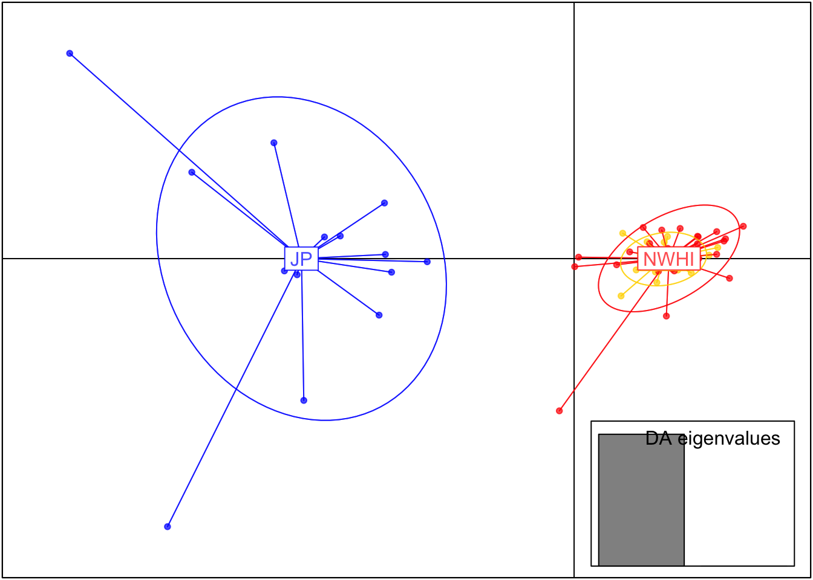</p>
</div>
</div>
</section>
<section id="snps-1" class="level5">
<h5 class="anchored" data-anchor-id="snps-1">SNPs</h5>
<div class="cell">
<div class="sourceCode cell-code" id="cb119"><pre class="sourceCode r code-with-copy"><code class="sourceCode r"><span id="cb119-1"><a href="#cb119-1" aria-hidden="true" tabindex="-1"></a>ecar_snps2.genind <span class="ot">&lt;-</span> <span class="fu">read.genepop</span>(<span class="st">"carbunculus/hwe.pcadapt.filtered.snps1000.gen"</span>)</span></code><button title="Copy to Clipboard" class="code-copy-button"><i class="bi"></i></button></pre></div>
<div class="cell-output cell-output-stdout">
<pre><code>
 Converting data from a Genepop .gen file to a genind object... 


File description:  carbunculus/hwe_genepop 

...done.</code></pre>
</div>
<div class="sourceCode cell-code" id="cb121"><pre class="sourceCode r code-with-copy"><code class="sourceCode r"><span id="cb121-1"><a href="#cb121-1" aria-hidden="true" tabindex="-1"></a><span class="fu">levels</span>(ecar_snps2.genind<span class="sc">$</span>pop) <span class="ot">&lt;-</span> <span class="fu">c</span>(<span class="st">"JP"</span>,<span class="st">"MHI"</span>,<span class="st">"NWHI"</span>)</span>
<span id="cb121-2"><a href="#cb121-2" aria-hidden="true" tabindex="-1"></a></span>
<span id="cb121-3"><a href="#cb121-3" aria-hidden="true" tabindex="-1"></a>ecar_dapc2_snps <span class="ot">&lt;-</span> <span class="fu">dapc</span>(ecar_snps2.genind,<span class="at">pop =</span>  ecar_snps2.genind<span class="sc">$</span>pop, <span class="at">scale =</span> T,</span>
<span id="cb121-4"><a href="#cb121-4" aria-hidden="true" tabindex="-1"></a>                       <span class="at">pca.select=</span><span class="st">"nbEig"</span>, <span class="at">n.pca =</span> <span class="dv">2</span>, <span class="at">n.da=</span><span class="dv">2</span>)</span>
<span id="cb121-5"><a href="#cb121-5" aria-hidden="true" tabindex="-1"></a></span>
<span id="cb121-6"><a href="#cb121-6" aria-hidden="true" tabindex="-1"></a><span class="fu">scatter</span>(ecar_dapc2_snps)</span></code><button title="Copy to Clipboard" class="code-copy-button"><i class="bi"></i></button></pre></div>
<div class="cell-output-display">
<p>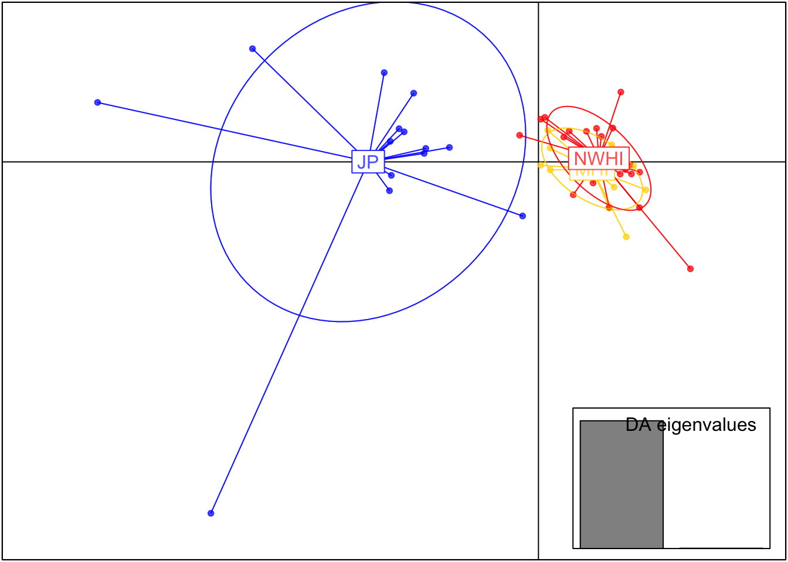</p>
</div>
</div>
<p>So the structure as depicted by DAPC still seems intact in this species.</p>
<div class="cell">
<div class="sourceCode cell-code" id="cb122"><pre class="sourceCode r code-with-copy"><code class="sourceCode r"><span id="cb122-1"><a href="#cb122-1" aria-hidden="true" tabindex="-1"></a>popmap2 <span class="ot">&lt;-</span> <span class="fu">tibble</span>(<span class="at">pop=</span><span class="fu">c</span>(<span class="fu">rep</span>(<span class="st">"Japan"</span>,<span class="dv">14</span>),<span class="fu">rep</span>(<span class="st">"MHI"</span>,<span class="dv">14</span>),<span class="fu">rep</span>(<span class="st">"NWHI"</span>,<span class="dv">27</span>)))</span>
<span id="cb122-2"><a href="#cb122-2" aria-hidden="true" tabindex="-1"></a>ecar_snps3 <span class="ot">&lt;-</span> <span class="fu">read_genepop</span>(<span class="at">file =</span> <span class="st">"carbunculus/hwe.pcadapt.filtered.snps.genepop"</span>,<span class="at">sample.meta =</span> popmap2)</span></code><button title="Copy to Clipboard" class="code-copy-button"><i class="bi"></i></button></pre></div>
<div class="cell-output cell-output-stderr">
<pre><code>Warning in .sub_and_t_1_2_to_A_C(ac, ncol(gt)): Since allelic identities are not clear, alleles at each locus will be saved as A and C. If this data is later reformatted for use elsewhere, please be aware that this may cause issues for some downstream analyses (since, for example, all SNPs will be nonsensically noted as transversions rather than transitions!).
 To prevent this, use a different format that specifies allelic identities.
This is not an issue for any snpR functions save those that rely on ancestral/derived allelic identities.</code></pre>
</div>
<div class="cell-output cell-output-stderr">
<pre><code>Warning in validityMethod(object): Some snp metadata columns contain unacceptable special characters. Unaccepted characters: '.', '~', or any whitespace.
These can cause unexpected behaviour if the subect columns are used as facets.</code></pre>
</div>
<div class="sourceCode cell-code" id="cb125"><pre class="sourceCode r code-with-copy"><code class="sourceCode r"><span id="cb125-1"><a href="#cb125-1" aria-hidden="true" tabindex="-1"></a>ecar_snps3 <span class="ot">&lt;-</span> <span class="fu">calc_ho</span>(ecar_snps3, <span class="at">facets =</span> <span class="st">"pop"</span>)</span>
<span id="cb125-2"><a href="#cb125-2" aria-hidden="true" tabindex="-1"></a>ecar_snps3 <span class="ot">&lt;-</span> <span class="fu">calc_he</span>(ecar_snps3, <span class="at">facets =</span> <span class="st">"pop"</span>)</span>
<span id="cb125-3"><a href="#cb125-3" aria-hidden="true" tabindex="-1"></a>ecar_snps3 <span class="ot">&lt;-</span> <span class="fu">calc_maf</span>(ecar_snps3, <span class="at">facets =</span> <span class="st">"pop"</span>)</span>
<span id="cb125-4"><a href="#cb125-4" aria-hidden="true" tabindex="-1"></a>ecar_snps3 <span class="ot">&lt;-</span> <span class="fu">calc_pi</span>(ecar_snps3, <span class="at">facets =</span> <span class="st">"pop"</span>)</span>
<span id="cb125-5"><a href="#cb125-5" aria-hidden="true" tabindex="-1"></a>ecar_snps3 <span class="ot">&lt;-</span> <span class="fu">calc_private</span>(ecar_snps3, <span class="at">facets =</span> <span class="st">"pop"</span>)</span>
<span id="cb125-6"><a href="#cb125-6" aria-hidden="true" tabindex="-1"></a>ecar_snps3 <span class="ot">&lt;-</span> <span class="fu">calc_hwe</span>(ecar_snps3, <span class="at">facets =</span> <span class="st">"pop"</span>)</span>
<span id="cb125-7"><a href="#cb125-7" aria-hidden="true" tabindex="-1"></a>ecar_snps3 <span class="ot">&lt;-</span> <span class="fu">calc_fis</span>(ecar_snps3, <span class="at">facets =</span> <span class="st">"pop"</span>)</span>
<span id="cb125-8"><a href="#cb125-8" aria-hidden="true" tabindex="-1"></a>ecar_snps3 <span class="ot">&lt;-</span> <span class="fu">calc_pairwise_fst</span>(ecar_snps3, <span class="at">facets =</span> <span class="st">"pop"</span>, <span class="at">boot=</span> <span class="dv">1000</span>, <span class="at">boot_par =</span> <span class="dv">5</span>)</span>
<span id="cb125-9"><a href="#cb125-9" aria-hidden="true" tabindex="-1"></a></span>
<span id="cb125-10"><a href="#cb125-10" aria-hidden="true" tabindex="-1"></a>stats <span class="ot">&lt;-</span> <span class="fu">get.snpR.stats</span>(ecar_snps3, <span class="at">facets =</span> <span class="st">"pop"</span>, <span class="at">stats =</span> <span class="fu">c</span>(<span class="st">"maf"</span>, <span class="st">"ho"</span>,<span class="st">"he"</span>,<span class="st">"hwe"</span>, <span class="st">"fis"</span>,<span class="st">"pi"</span>, <span class="st">"private"</span>))</span>
<span id="cb125-11"><a href="#cb125-11" aria-hidden="true" tabindex="-1"></a>stats<span class="sc">$</span>weighted.means</span></code><button title="Copy to Clipboard" class="code-copy-button"><i class="bi"></i></button></pre></div>
<div class="cell-output-display">

<div data-pagedtable="false">
  <script data-pagedtable-source="" type="application/json">
{"columns":[{"label":["facet"],"name":[1],"type":["chr"],"align":["left"]},{"label":["subfacet"],"name":[2],"type":["fct"],"align":["left"]},{"label":["snp.facet"],"name":[3],"type":["chr"],"align":["left"]},{"label":["snp.subfacet"],"name":[4],"type":["chr"],"align":["left"]},{"label":["weighted_mean_ho"],"name":[5],"type":["dbl"],"align":["right"]},{"label":["weighted_mean_he"],"name":[6],"type":["dbl"],"align":["right"]},{"label":["weighted_mean_pi"],"name":[7],"type":["dbl"],"align":["right"]},{"label":["weighted_mean_fis"],"name":[8],"type":["dbl"],"align":["right"]}],"data":[{"1":"pop","2":"Japan","3":".base","4":".base","5":"0.1466234","6":"0.1429793","7":"0.1482748","8":"0.01071225"},{"1":"pop","2":"MHI","3":".base","4":".base","5":"0.1360173","6":"0.1370532","7":"0.1421292","8":"0.02720653"},{"1":"pop","2":"NWHI","3":".base","4":".base","5":"0.1395960","6":"0.1405782","7":"0.1432306","8":"0.01784376"}],"options":{"columns":{"min":{},"max":[10]},"rows":{"min":[10],"max":[10]},"pages":{}}}
  </script>
</div>
</div>
<div class="sourceCode cell-code" id="cb126"><pre class="sourceCode r code-with-copy"><code class="sourceCode r"><span id="cb126-1"><a href="#cb126-1" aria-hidden="true" tabindex="-1"></a><span class="co"># and here is Fst</span></span>
<span id="cb126-2"><a href="#cb126-2" aria-hidden="true" tabindex="-1"></a></span>
<span id="cb126-3"><a href="#cb126-3" aria-hidden="true" tabindex="-1"></a>ecar_fst3 <span class="ot">&lt;-</span> <span class="fu">get.snpR.stats</span>(ecar_snps3, <span class="at">facets =</span> <span class="st">"pop"</span>, <span class="at">stats =</span> <span class="fu">c</span>(<span class="st">"fst"</span>))</span>
<span id="cb126-4"><a href="#cb126-4" aria-hidden="true" tabindex="-1"></a>ecar_fst3<span class="sc">$</span>fst.matrix</span></code><button title="Copy to Clipboard" class="code-copy-button"><i class="bi"></i></button></pre></div>
<div class="cell-output cell-output-stdout">
<pre><code>$pop
$pop$fst
      p1        MHI         NWHI
1: Japan 0.01413796 0.0165854943
2:   MHI         NA 0.0003387499

$pop$p
      p1         MHI        NWHI
1: Japan 0.008991009 0.001998002
2:   MHI          NA 0.416583417</code></pre>
</div>
</div>
<p>And compare that to pre-filtering. Some differences, but not as much as when I was overly stringent with selected loci.</p>
<div class="cell">
<div class="sourceCode cell-code" id="cb128"><pre class="sourceCode r code-with-copy"><code class="sourceCode r"><span id="cb128-1"><a href="#cb128-1" aria-hidden="true" tabindex="-1"></a>ecar_fst<span class="sc">$</span>fst.matrix</span></code><button title="Copy to Clipboard" class="code-copy-button"><i class="bi"></i></button></pre></div>
<div class="cell-output cell-output-stdout">
<pre><code>$pop
$pop$fst
      p1        MHI        NWHI
1: Japan 0.01746465 0.021466084
2:   MHI         NA 0.001113613

$pop$p
      p1         MHI        NWHI
1: Japan 0.005994006 0.000999001
2:   MHI          NA 0.334665335</code></pre>
</div>
</div>
</section>
</section>
</section>
</section>
</section>
<section id="fasta2genotype" class="level1">
<h1>Fasta2Genotype</h1>
<p>Paul Maier created <a href="https://github.com/paulmaier/fasta2genotype">this script</a> to convert Stacks haplotypes to migrate format.</p>
<section id="install-python2" class="level2">
<h2 class="anchored" data-anchor-id="install-python2">Install Python2</h2>
<p>I had a doozy of a time trying to get this to work this time around: the script was written in python2. which is nearly deprecated. I first tried to use <code>2to3</code> to upgrade the script to python3, but there were a few stray tabs I couldn’t figure out. I eventually landed <a href="https://stackoverflow.com/questions/60298514/how-to-reinstall-python2-from-homebrew">here</a>, and used the following commands to install <a href="https://github.com/pyenv/pyenv"><code>pyenv</code></a>, which can handle multiple python installs.</p>
<div class="cell">
<div class="sourceCode cell-code" id="cb130"><pre class="sourceCode bash code-with-copy"><code class="sourceCode bash"><span id="cb130-1"><a href="#cb130-1" aria-hidden="true" tabindex="-1"></a><span class="ex">brew</span> install pyenv</span>
<span id="cb130-2"><a href="#cb130-2" aria-hidden="true" tabindex="-1"></a><span class="ex">pyenv</span> install 2.7.18</span>
<span id="cb130-3"><a href="#cb130-3" aria-hidden="true" tabindex="-1"></a><span class="ex">pyenv</span> versions</span>
<span id="cb130-4"><a href="#cb130-4" aria-hidden="true" tabindex="-1"></a><span class="bu">echo</span> <span class="st">'export PYENV_ROOT="$HOME/.pyenv"'</span> <span class="op">&gt;&gt;</span> ~/.zshrc\necho <span class="st">'command -v pyenv &gt;/dev/null || export PATH="$PYENV_ROOT/bin:$PATH"'</span> <span class="op">&gt;&gt;</span> ~/.zshrc\necho <span class="st">'eval "$(pyenv init -)"'</span> <span class="op">&gt;&gt;</span> ~/.zshrc</span>
<span id="cb130-5"><a href="#cb130-5" aria-hidden="true" tabindex="-1"></a><span class="bu">exec</span> <span class="st">"</span><span class="va">$SHELL</span><span class="st">"</span></span>
<span id="cb130-6"><a href="#cb130-6" aria-hidden="true" tabindex="-1"></a><span class="ex">pyenv</span> shell 2.7.18 <span class="co"># use python 2 for this shell session</span></span>
<span id="cb130-7"><a href="#cb130-7" aria-hidden="true" tabindex="-1"></a></span>
<span id="cb130-8"><a href="#cb130-8" aria-hidden="true" tabindex="-1"></a> <span class="ex">pip</span> install numpy</span>
<span id="cb130-9"><a href="#cb130-9" aria-hidden="true" tabindex="-1"></a> <span class="ex">pip</span> install <span class="at">--upgrade</span> pip <span class="co"># need to update pip to be able to install scipy</span></span>
<span id="cb130-10"><a href="#cb130-10" aria-hidden="true" tabindex="-1"></a> <span class="ex">pip</span> install scipy</span></code><button title="Copy to Clipboard" class="code-copy-button"><i class="bi"></i></button></pre></div>
</div>
</section>
<section id="e.-coruscans-3" class="level2">
<h2 class="anchored" data-anchor-id="e.-coruscans-3">E. coruscans</h2>
<section id="run-it" class="level3">
<h3 class="anchored" data-anchor-id="run-it">Run it</h3>
<p>I had to remove all the [individualName] tokens from the populations.samples.fa to get it to work. Also, I added a SampleID column and header row to the popmap for use by <code>fasta2genotype.py</code>. I wrote out a whitelist above of all the 440 loci that passed through the filters.</p>
<div class="cell">
<div class="sourceCode cell-code" id="cb131"><pre class="sourceCode bash code-with-copy"><code class="sourceCode bash"><span id="cb131-1"><a href="#cb131-1" aria-hidden="true" tabindex="-1"></a><span class="ex">python</span> ../../fasta2genotype/fasta2genotype.py populations_r100.dropA150/populations.samples2.fa ecor_whitelist.txt <span class="dt">\</span></span>
<span id="cb131-2"><a href="#cb131-2" aria-hidden="true" tabindex="-1"></a>popmapECO_f2g.tsv NA Ecoruscans440.mig</span>
<span id="cb131-3"><a href="#cb131-3" aria-hidden="true" tabindex="-1"></a></span>
<span id="cb131-4"><a href="#cb131-4" aria-hidden="true" tabindex="-1"></a></span>
<span id="cb131-5"><a href="#cb131-5" aria-hidden="true" tabindex="-1"></a><span class="co">###################################################################</span></span>
<span id="cb131-6"><a href="#cb131-6" aria-hidden="true" tabindex="-1"></a><span class="co">###                                                             </span><span class="al">###</span></span>
<span id="cb131-7"><a href="#cb131-7" aria-hidden="true" tabindex="-1"></a><span class="co">###       Fasta2Genotype | Data Conversion | Version 1.10       </span><span class="al">###</span></span>
<span id="cb131-8"><a href="#cb131-8" aria-hidden="true" tabindex="-1"></a><span class="co">###                                                             </span><span class="al">###</span></span>
<span id="cb131-9"><a href="#cb131-9" aria-hidden="true" tabindex="-1"></a><span class="co">###                        Cite as follows:                     </span><span class="al">###</span></span>
<span id="cb131-10"><a href="#cb131-10" aria-hidden="true" tabindex="-1"></a><span class="co">###                                                             </span><span class="al">###</span></span>
<span id="cb131-11"><a href="#cb131-11" aria-hidden="true" tabindex="-1"></a><span class="co">###   Maier P.A., Vandergast A.G., Ostoja S.M., Aguilar A.,     </span><span class="al">###</span></span>
<span id="cb131-12"><a href="#cb131-12" aria-hidden="true" tabindex="-1"></a><span class="co">###   Bohonak A.J. (2019). Pleistocene glacial cycles drove     </span><span class="al">###</span></span>
<span id="cb131-13"><a href="#cb131-13" aria-hidden="true" tabindex="-1"></a><span class="co">###   lineage diversification and fusion in the Yosemite toad   </span><span class="al">###</span></span>
<span id="cb131-14"><a href="#cb131-14" aria-hidden="true" tabindex="-1"></a><span class="co">###   (Anaxyrus canorus). Evolution, in press.                  </span><span class="al">###</span></span>
<span id="cb131-15"><a href="#cb131-15" aria-hidden="true" tabindex="-1"></a><span class="co">###   https://www.doi.org/10.1111/evo.13868                     </span><span class="al">###</span></span>
<span id="cb131-16"><a href="#cb131-16" aria-hidden="true" tabindex="-1"></a><span class="co">###                                                             </span><span class="al">###</span></span>
<span id="cb131-17"><a href="#cb131-17" aria-hidden="true" tabindex="-1"></a><span class="co">###################################################################</span></span>
<span id="cb131-18"><a href="#cb131-18" aria-hidden="true" tabindex="-1"></a></span>
<span id="cb131-19"><a href="#cb131-19" aria-hidden="true" tabindex="-1"></a><span class="ex">Output</span> type<span class="pp">?</span> [1] Migrate [2] Arlequin [3] DIYABC [4] LFMM [5] Phylip [6] G-Phocs [7] Treemix [8] Haplotype: 1</span>
<span id="cb131-20"><a href="#cb131-20" aria-hidden="true" tabindex="-1"></a><span class="ex">Loci</span> to use<span class="pp">?</span> [1] Whitelist [2] All: 1</span>
<span id="cb131-21"><a href="#cb131-21" aria-hidden="true" tabindex="-1"></a><span class="ex">Remove</span> restriction enzyme or adapter sequences<span class="pp">?</span> These may bias data. [1] Yes [2] No: 2</span>
<span id="cb131-22"><a href="#cb131-22" aria-hidden="true" tabindex="-1"></a><span class="ex">Remove</span> monomorphic loci<span class="pp">?</span> [1] Yes [2] No: 1</span>
<span id="cb131-23"><a href="#cb131-23" aria-hidden="true" tabindex="-1"></a><span class="ex">Remove</span> loci with excess heterozygosity<span class="pp">?</span> This can remove paralogs. [1] Yes [2] No: 1</span>
<span id="cb131-24"><a href="#cb131-24" aria-hidden="true" tabindex="-1"></a><span class="ex">Maximum</span> heterozygosity cutoff for removing loci out of Hardy-Weinberg<span class="pp">?</span> 0.5</span>
<span id="cb131-25"><a href="#cb131-25" aria-hidden="true" tabindex="-1"></a><span class="ex">Filter</span> for allele frequency<span class="pp">?</span> False alleles might bias data. [1] Yes [2] No: 2</span>
<span id="cb131-26"><a href="#cb131-26" aria-hidden="true" tabindex="-1"></a><span class="ex">Filter</span> for missing genotypes<span class="pp">?</span> These might bias data. [1] Yes [2] No: 2</span>
<span id="cb131-27"><a href="#cb131-27" aria-hidden="true" tabindex="-1"></a> </span>
<span id="cb131-28"><a href="#cb131-28" aria-hidden="true" tabindex="-1"></a><span class="ex">**************************************************************************************************************</span></span>
<span id="cb131-29"><a href="#cb131-29" aria-hidden="true" tabindex="-1"></a><span class="ex">***</span>                                       ... BEGINNING CONVERSION ...                                     <span class="pp">***</span></span>
<span id="cb131-30"><a href="#cb131-30" aria-hidden="true" tabindex="-1"></a><span class="ex">**************************************************************************************************************</span></span>
<span id="cb131-31"><a href="#cb131-31" aria-hidden="true" tabindex="-1"></a> </span>
<span id="cb131-32"><a href="#cb131-32" aria-hidden="true" tabindex="-1"></a><span class="ex">Cataloging</span> loci...</span>
<span id="cb131-33"><a href="#cb131-33" aria-hidden="true" tabindex="-1"></a><span class="ex">Counting</span> locus lengths...</span>
<span id="cb131-34"><a href="#cb131-34" aria-hidden="true" tabindex="-1"></a><span class="ex">Cataloging</span> populations...</span>
<span id="cb131-35"><a href="#cb131-35" aria-hidden="true" tabindex="-1"></a><span class="ex">Counting</span> gene copies...</span>
<span id="cb131-36"><a href="#cb131-36" aria-hidden="true" tabindex="-1"></a><span class="ex">Counting</span> alleles for each locus...</span>
<span id="cb131-37"><a href="#cb131-37" aria-hidden="true" tabindex="-1"></a><span class="ex">Identifying</span> loci with excess heterozygosity...</span>
<span id="cb131-38"><a href="#cb131-38" aria-hidden="true" tabindex="-1"></a>     <span class="ex">Calculating</span> observed heterozygosity and homozygosity...</span>
<span id="cb131-39"><a href="#cb131-39" aria-hidden="true" tabindex="-1"></a>     <span class="ex">Calculating</span> expected heterozygosity and homozygosity...</span>
<span id="cb131-40"><a href="#cb131-40" aria-hidden="true" tabindex="-1"></a>     <span class="ex">Flagging</span> loci with excess heterozygosity for removal...</span>
<span id="cb131-41"><a href="#cb131-41" aria-hidden="true" tabindex="-1"></a>     <span class="ex">Removing</span> loci...</span>
<span id="cb131-42"><a href="#cb131-42" aria-hidden="true" tabindex="-1"></a>     <span class="ex">Removed</span> 1 overly heterozygous loci.</span>
<span id="cb131-43"><a href="#cb131-43" aria-hidden="true" tabindex="-1"></a><span class="ex">Outputting</span> migrate-n file...</span>
<span id="cb131-44"><a href="#cb131-44" aria-hidden="true" tabindex="-1"></a></span>
<span id="cb131-45"><a href="#cb131-45" aria-hidden="true" tabindex="-1"></a></span>
<span id="cb131-46"><a href="#cb131-46" aria-hidden="true" tabindex="-1"></a><span class="co"># it removed locus 60082 for excess heterozygosity, so I dropped it from the whitelist.</span></span></code><button title="Copy to Clipboard" class="code-copy-button"><i class="bi"></i></button></pre></div>
</div>
<p>I then re-ran the script, selecting phylip output, with locus name headers, and all other options the same. I need the locus names in the order output by the script in order to run modeltest.</p>
</section>
</section>
<section id="e.-carbunculus-3" class="level2">
<h2 class="anchored" data-anchor-id="e.-carbunculus-3">E. carbunculus</h2>
<section id="run-it-1" class="level3">
<h3 class="anchored" data-anchor-id="run-it-1">Run it</h3>
<p>I had to remove all the [individualName] tokens from the populations.samples.fa to get it to work. Also, I added a SampleID column and header row to the popmap for use by <code>fasta2genotype.py</code>. I wrote out a whitelist above of 1000/1666 randomly selected loci that passed through the filters. Used the same options as E. coruscans.</p>
<div class="cell">
<div class="sourceCode cell-code" id="cb132"><pre class="sourceCode bash code-with-copy"><code class="sourceCode bash"><span id="cb132-1"><a href="#cb132-1" aria-hidden="true" tabindex="-1"></a><span class="ex">python</span> ../../fasta2genotype/fasta2genotype.py populations_r100/populations.samples2.fa ecar_whitelist_1000.txt <span class="dt">\</span></span>
<span id="cb132-2"><a href="#cb132-2" aria-hidden="true" tabindex="-1"></a>popmapECA_f2g.tsv NA Ecarbunculus999.mig</span>
<span id="cb132-3"><a href="#cb132-3" aria-hidden="true" tabindex="-1"></a></span>
<span id="cb132-4"><a href="#cb132-4" aria-hidden="true" tabindex="-1"></a><span class="ex">Output</span> type<span class="pp">?</span> [1] Migrate [2] Arlequin [3] DIYABC [4] LFMM [5] Phylip [6] G-Phocs [7] Treemix [8] Haplotype: 1</span>
<span id="cb132-5"><a href="#cb132-5" aria-hidden="true" tabindex="-1"></a><span class="ex">Loci</span> to use<span class="pp">?</span> [1] Whitelist [2] All: 1</span>
<span id="cb132-6"><a href="#cb132-6" aria-hidden="true" tabindex="-1"></a><span class="ex">Remove</span> restriction enzyme or adapter sequences<span class="pp">?</span> These may bias data. [1] Yes [2] No: 2</span>
<span id="cb132-7"><a href="#cb132-7" aria-hidden="true" tabindex="-1"></a><span class="ex">Remove</span> monomorphic loci<span class="pp">?</span> [1] Yes [2] No: 1</span>
<span id="cb132-8"><a href="#cb132-8" aria-hidden="true" tabindex="-1"></a><span class="ex">Remove</span> loci with excess heterozygosity<span class="pp">?</span> This can remove paralogs. [1] Yes [2] No: 1</span>
<span id="cb132-9"><a href="#cb132-9" aria-hidden="true" tabindex="-1"></a><span class="ex">Maximum</span> heterozygosity cutoff for removing loci out of Hardy-Weinberg<span class="pp">?</span> 0.5</span>
<span id="cb132-10"><a href="#cb132-10" aria-hidden="true" tabindex="-1"></a><span class="ex">Filter</span> for allele frequency<span class="pp">?</span> False alleles might bias data. [1] Yes [2] No: 2</span>
<span id="cb132-11"><a href="#cb132-11" aria-hidden="true" tabindex="-1"></a><span class="ex">Filter</span> for missing genotypes<span class="pp">?</span> These might bias data. [1] Yes [2] No: 2</span>
<span id="cb132-12"><a href="#cb132-12" aria-hidden="true" tabindex="-1"></a> </span>
<span id="cb132-13"><a href="#cb132-13" aria-hidden="true" tabindex="-1"></a><span class="ex">**************************************************************************************************************</span></span>
<span id="cb132-14"><a href="#cb132-14" aria-hidden="true" tabindex="-1"></a><span class="ex">***</span>                                       ... BEGINNING CONVERSION ...                                     <span class="pp">***</span></span>
<span id="cb132-15"><a href="#cb132-15" aria-hidden="true" tabindex="-1"></a><span class="ex">**************************************************************************************************************</span></span>
<span id="cb132-16"><a href="#cb132-16" aria-hidden="true" tabindex="-1"></a> </span>
<span id="cb132-17"><a href="#cb132-17" aria-hidden="true" tabindex="-1"></a><span class="ex">Cataloging</span> loci...</span>
<span id="cb132-18"><a href="#cb132-18" aria-hidden="true" tabindex="-1"></a><span class="ex">Counting</span> locus lengths...</span>
<span id="cb132-19"><a href="#cb132-19" aria-hidden="true" tabindex="-1"></a><span class="ex">Cataloging</span> populations...</span>
<span id="cb132-20"><a href="#cb132-20" aria-hidden="true" tabindex="-1"></a><span class="ex">Counting</span> gene copies...</span>
<span id="cb132-21"><a href="#cb132-21" aria-hidden="true" tabindex="-1"></a><span class="ex">Counting</span> alleles for each locus...</span>
<span id="cb132-22"><a href="#cb132-22" aria-hidden="true" tabindex="-1"></a><span class="ex">Identifying</span> loci with excess heterozygosity...</span>
<span id="cb132-23"><a href="#cb132-23" aria-hidden="true" tabindex="-1"></a>     <span class="ex">Calculating</span> observed heterozygosity and homozygosity...</span>
<span id="cb132-24"><a href="#cb132-24" aria-hidden="true" tabindex="-1"></a>     <span class="ex">Calculating</span> expected heterozygosity and homozygosity...</span>
<span id="cb132-25"><a href="#cb132-25" aria-hidden="true" tabindex="-1"></a>     <span class="ex">Flagging</span> loci with excess heterozygosity for removal...</span>
<span id="cb132-26"><a href="#cb132-26" aria-hidden="true" tabindex="-1"></a>     <span class="ex">Removing</span> loci...</span>
<span id="cb132-27"><a href="#cb132-27" aria-hidden="true" tabindex="-1"></a>     <span class="ex">Removed</span> 1 overly heterozygous loci.</span>
<span id="cb132-28"><a href="#cb132-28" aria-hidden="true" tabindex="-1"></a><span class="ex">Outputting</span> migrate-n file...</span>
<span id="cb132-29"><a href="#cb132-29" aria-hidden="true" tabindex="-1"></a><span class="ex">***</span> DONE! <span class="pp">***</span></span>
<span id="cb132-30"><a href="#cb132-30" aria-hidden="true" tabindex="-1"></a></span>
<span id="cb132-31"><a href="#cb132-31" aria-hidden="true" tabindex="-1"></a></span>
<span id="cb132-32"><a href="#cb132-32" aria-hidden="true" tabindex="-1"></a><span class="ex">It</span> removed locus 31718 for being overly heterozygous, so I zapped it from the whitelist.</span></code><button title="Copy to Clipboard" class="code-copy-button"><i class="bi"></i></button></pre></div>
</div>
<p>I then re-ran the script, selecting phylip output, with full sequences, haploid, all loci, not separated by ! locus name headers, and all other options the same. I need the locus names in the order output by the script in order to run modeltest. This is only needed to get the locus names in the next step.</p>
</section>
</section>
</section>
<section id="migrate" class="level1">
<h1>Migrate</h1>
<p>I installed Migrate 5.0.4 as described <a href="https://ericcrandall.github.io/Palythoa_tuberculosa/Ptuberculosa_migrate.html">here</a>.</p>
<section id="mutation-models-code-used-for-both-species" class="level2">
<h2 class="anchored" data-anchor-id="mutation-models-code-used-for-both-species">Mutation Models (code used for both species)</h2>
<p>I need to figure out an overall mutation model to use with RAD loci. <a href="https://groups.google.com/g/migrate-support/c/XjV_4jZW4RI/m/HbRWoGY6AwAJ">I received this advice one</a> from Peter about how to construct these. I’ll use <code>modelTest</code> in the phangorn package to see where that gets me.</p>
<p>I renamed the FASTA headers in <code>populations.samples.fa</code> with BBEdit to create <code>population.samples3.fa</code></p>
<div class="cell">
<div class="sourceCode cell-code" id="cb133"><pre class="sourceCode bash code-with-copy"><code class="sourceCode bash"><span id="cb133-1"><a href="#cb133-1" aria-hidden="true" tabindex="-1"></a><span class="ex">Find:</span> <span class="op">&gt;</span>CLocus_\d+_Sample_\d+_Locus_<span class="er">(</span><span class="ex">\d+</span><span class="kw">)</span><span class="ex">_Allele_</span><span class="er">(</span><span class="ex">[01]</span><span class="kw">)</span> <span class="ex">\[Etelis_</span><span class="er">(</span><span class="bu">.</span>+<span class="kw">)</span><span class="ex">\]</span></span>
<span id="cb133-2"><a href="#cb133-2" aria-hidden="true" tabindex="-1"></a><span class="ex">Replace:</span> <span class="op">&gt;</span><span class="dt">\3</span>_L\1_A\2</span>
<span id="cb133-3"><a href="#cb133-3" aria-hidden="true" tabindex="-1"></a></span>
<span id="cb133-4"><a href="#cb133-4" aria-hidden="true" tabindex="-1"></a><span class="co">#first token is sample name, second is locus number(name) third is allele</span></span>
<span id="cb133-5"><a href="#cb133-5" aria-hidden="true" tabindex="-1"></a></span>
<span id="cb133-6"><a href="#cb133-6" aria-hidden="true" tabindex="-1"></a><span class="co">#Also remove bad indiv A150 in coruscans</span></span>
<span id="cb133-7"><a href="#cb133-7" aria-hidden="true" tabindex="-1"></a><span class="ex">Find:</span> <span class="op">&gt;</span>A150_.+\n.+\n</span>
<span id="cb133-8"><a href="#cb133-8" aria-hidden="true" tabindex="-1"></a><span class="ex">Replace:</span></span></code><button title="Copy to Clipboard" class="code-copy-button"><i class="bi"></i></button></pre></div>
</div>
<p>Lets load in the data and calculate some statistics for each locus. Previously Migrate-n only implemented the F84 (=HKY) model, with two rates (Transitions and Transversions) and gamma distributed rate variability.</p>
<p>Now it will take these possible models: 1 Jukes-Cantor model 2 Kimura 2-parameter model 3 Felsenstein 1981 (F81) model 4 Felsenstein 1984 (F84) model 5 Hasegawa-Kishino-Yano model 6 Tamura-Nei model</p>
<div class="cell">
<div class="sourceCode cell-code" id="cb134"><pre class="sourceCode r code-with-copy"><code class="sourceCode r"><span id="cb134-1"><a href="#cb134-1" aria-hidden="true" tabindex="-1"></a>fastadata <span class="ot">&lt;-</span> <span class="fu">read.FASTA</span>(<span class="st">"coruscans/populations_r100.dropA150//populations.samples3.fa"</span>)</span>
<span id="cb134-2"><a href="#cb134-2" aria-hidden="true" tabindex="-1"></a></span>
<span id="cb134-3"><a href="#cb134-3" aria-hidden="true" tabindex="-1"></a><span class="co">#  read in the locus lengths, as optional additional way to make sure the stats</span></span>
<span id="cb134-4"><a href="#cb134-4" aria-hidden="true" tabindex="-1"></a><span class="co"># and the migrate infile are ordered the same</span></span>
<span id="cb134-5"><a href="#cb134-5" aria-hidden="true" tabindex="-1"></a><span class="co">#migrate_lengths &lt;- read_lines("coruscans/Ecoruscans.mig", skip = 1, n_max=1) %&gt;% </span></span>
<span id="cb134-6"><a href="#cb134-6" aria-hidden="true" tabindex="-1"></a><span class="co">#  str_split("\\t", simplify = T) %&gt;%  t(.) %&gt;% tibble(length=.) %&gt;% na.omit()</span></span>
<span id="cb134-7"><a href="#cb134-7" aria-hidden="true" tabindex="-1"></a></span>
<span id="cb134-8"><a href="#cb134-8" aria-hidden="true" tabindex="-1"></a>migrate_loci <span class="ot">&lt;-</span> <span class="fu">read_lines</span>(<span class="st">"coruscans/Ecoruscans439.phy"</span>, <span class="at">skip =</span> <span class="dv">1</span>, <span class="at">n_max=</span><span class="dv">1</span>) <span class="sc">%&gt;%</span> </span>
<span id="cb134-9"><a href="#cb134-9" aria-hidden="true" tabindex="-1"></a>  <span class="fu">str_split</span>(<span class="st">"</span><span class="sc">\\</span><span class="st">t"</span>, <span class="at">simplify =</span> T) <span class="sc">%&gt;%</span>  <span class="fu">t</span>(.) <span class="sc">%&gt;%</span> <span class="fu">tibble</span>(<span class="at">locus_name=</span>.) <span class="sc">%&gt;%</span> <span class="fu">filter</span>(locus_name<span class="sc">!=</span><span class="st">""</span>)</span>
<span id="cb134-10"><a href="#cb134-10" aria-hidden="true" tabindex="-1"></a></span>
<span id="cb134-11"><a href="#cb134-11" aria-hidden="true" tabindex="-1"></a>stats <span class="ot">&lt;-</span> <span class="fu">tibble</span>(<span class="at">locus =</span> <span class="fu">character</span>(), </span>
<span id="cb134-12"><a href="#cb134-12" aria-hidden="true" tabindex="-1"></a>                <span class="at">length =</span> <span class="fu">numeric</span>(),</span>
<span id="cb134-13"><a href="#cb134-13" aria-hidden="true" tabindex="-1"></a>                <span class="at">segSites =</span> <span class="fu">numeric</span>(),</span>
<span id="cb134-14"><a href="#cb134-14" aria-hidden="true" tabindex="-1"></a>                <span class="at">nHaps =</span> <span class="fu">numeric</span>(),</span>
<span id="cb134-15"><a href="#cb134-15" aria-hidden="true" tabindex="-1"></a>                <span class="at">nucDiv =</span> <span class="fu">numeric</span>(),</span>
<span id="cb134-16"><a href="#cb134-16" aria-hidden="true" tabindex="-1"></a>                <span class="at">ttRatio =</span> <span class="fu">numeric</span>(),</span>
<span id="cb134-17"><a href="#cb134-17" aria-hidden="true" tabindex="-1"></a>                <span class="at">model =</span> <span class="fu">character</span>(),</span>
<span id="cb134-18"><a href="#cb134-18" aria-hidden="true" tabindex="-1"></a>                <span class="at">gammaShape =</span> <span class="fu">numeric</span>(),</span>
<span id="cb134-19"><a href="#cb134-19" aria-hidden="true" tabindex="-1"></a>                <span class="at">rate1 =</span> <span class="fu">numeric</span>(), </span>
<span id="cb134-20"><a href="#cb134-20" aria-hidden="true" tabindex="-1"></a>                <span class="at">rate2 =</span> <span class="fu">numeric</span>(), </span>
<span id="cb134-21"><a href="#cb134-21" aria-hidden="true" tabindex="-1"></a>                <span class="at">rate3 =</span> <span class="fu">numeric</span>(),</span>
<span id="cb134-22"><a href="#cb134-22" aria-hidden="true" tabindex="-1"></a>                <span class="at">rate4 =</span> <span class="fu">numeric</span>(),</span>
<span id="cb134-23"><a href="#cb134-23" aria-hidden="true" tabindex="-1"></a>                <span class="at">Q1=</span> <span class="fu">numeric</span>(),</span>
<span id="cb134-24"><a href="#cb134-24" aria-hidden="true" tabindex="-1"></a>                <span class="at">Q2 =</span> <span class="fu">numeric</span>(),</span>
<span id="cb134-25"><a href="#cb134-25" aria-hidden="true" tabindex="-1"></a>                <span class="at">Q3 =</span> <span class="fu">numeric</span>(),</span>
<span id="cb134-26"><a href="#cb134-26" aria-hidden="true" tabindex="-1"></a>                )</span>
<span id="cb134-27"><a href="#cb134-27" aria-hidden="true" tabindex="-1"></a>                </span>
<span id="cb134-28"><a href="#cb134-28" aria-hidden="true" tabindex="-1"></a><span class="cf">for</span>(l <span class="cf">in</span> migrate_loci<span class="sc">$</span>locus_name){</span>
<span id="cb134-29"><a href="#cb134-29" aria-hidden="true" tabindex="-1"></a>  L <span class="ot">&lt;-</span> <span class="fu">paste0</span>(<span class="st">"L"</span>,l,<span class="st">"_"</span>)</span>
<span id="cb134-30"><a href="#cb134-30" aria-hidden="true" tabindex="-1"></a>  <span class="fu">print</span>(<span class="fu">paste</span>(<span class="st">"Now Doing Locus"</span>, l, <span class="fu">match</span>(l,  migrate_loci<span class="sc">$</span>locus_name), <span class="st">"out of"</span>, <span class="fu">length</span>(migrate_loci<span class="sc">$</span>locus_name)))</span>
<span id="cb134-31"><a href="#cb134-31" aria-hidden="true" tabindex="-1"></a>  locus_dnabin <span class="ot">&lt;-</span> fastadata[<span class="fu">str_which</span>(<span class="fu">names</span>(fastadata),<span class="at">pattern =</span> L)]</span>
<span id="cb134-32"><a href="#cb134-32" aria-hidden="true" tabindex="-1"></a>  <span class="co"># convert to package formats</span></span>
<span id="cb134-33"><a href="#cb134-33" aria-hidden="true" tabindex="-1"></a>  locus_dnabin <span class="ot">&lt;-</span> <span class="fu">as.matrix</span>(locus_dnabin)</span>
<span id="cb134-34"><a href="#cb134-34" aria-hidden="true" tabindex="-1"></a>  locus_gtypes <span class="ot">&lt;-</span> <span class="fu">sequence2gtypes</span>(locus_dnabin)</span>
<span id="cb134-35"><a href="#cb134-35" aria-hidden="true" tabindex="-1"></a>  locus_phy <span class="ot">&lt;-</span> <span class="fu">phyDat</span>(locus_dnabin)</span>
<span id="cb134-36"><a href="#cb134-36" aria-hidden="true" tabindex="-1"></a>  <span class="co">#create a haplotype network .. to be continued</span></span>
<span id="cb134-37"><a href="#cb134-37" aria-hidden="true" tabindex="-1"></a>  haps <span class="ot">&lt;-</span> <span class="fu">haplotype</span>(locus_dnabin)</span>
<span id="cb134-38"><a href="#cb134-38" aria-hidden="true" tabindex="-1"></a>  nhaps <span class="ot">&lt;-</span> <span class="fu">length</span>(<span class="fu">dimnames</span>(haps)[[<span class="dv">1</span>]])</span>
<span id="cb134-39"><a href="#cb134-39" aria-hidden="true" tabindex="-1"></a>  <span class="co">#tcs &lt;- haploNet(haps)</span></span>
<span id="cb134-40"><a href="#cb134-40" aria-hidden="true" tabindex="-1"></a>  <span class="co">#find parameters of HKY (F84) model</span></span>
<span id="cb134-41"><a href="#cb134-41" aria-hidden="true" tabindex="-1"></a>  modeltest <span class="ot">&lt;-</span> <span class="fu">modelTest</span>(locus_phy, <span class="at">model =</span> <span class="fu">c</span>(<span class="st">"JC"</span>,<span class="st">"K80"</span>, <span class="st">"F81"</span>, <span class="st">"HKY"</span>,<span class="st">"TrN"</span>), </span>
<span id="cb134-42"><a href="#cb134-42" aria-hidden="true" tabindex="-1"></a>                         <span class="at">G =</span> T, <span class="at">I =</span> F, <span class="at">k =</span> <span class="dv">4</span>, <span class="at">mc.cores =</span> <span class="dv">5</span>)</span>
<span id="cb134-43"><a href="#cb134-43" aria-hidden="true" tabindex="-1"></a>  <span class="co"># pick out the best model. If multiple models are tied for best, pick the simplest one</span></span>
<span id="cb134-44"><a href="#cb134-44" aria-hidden="true" tabindex="-1"></a>  bestmodel <span class="ot">&lt;-</span> modeltest<span class="sc">$</span>Model[<span class="fu">which</span>(modeltest<span class="sc">$</span>BIC <span class="sc">==</span> <span class="fu">min</span>(modeltest<span class="sc">$</span>BIC))][<span class="dv">1</span>]</span>
<span id="cb134-45"><a href="#cb134-45" aria-hidden="true" tabindex="-1"></a>  <span class="co">#open the object environment</span></span>
<span id="cb134-46"><a href="#cb134-46" aria-hidden="true" tabindex="-1"></a>  env <span class="ot">&lt;-</span> <span class="fu">attr</span>(modeltest,<span class="st">"env"</span>)</span>
<span id="cb134-47"><a href="#cb134-47" aria-hidden="true" tabindex="-1"></a>  bestparams <span class="ot">&lt;-</span> <span class="fu">get</span>(bestmodel, env)</span>
<span id="cb134-48"><a href="#cb134-48" aria-hidden="true" tabindex="-1"></a>  bestparams <span class="ot">&lt;-</span> <span class="fu">eval</span>(bestparams, <span class="at">env=</span>env)</span>
<span id="cb134-49"><a href="#cb134-49" aria-hidden="true" tabindex="-1"></a>  <span class="co"># use this code for v3, which only has F84 (HKY)</span></span>
<span id="cb134-50"><a href="#cb134-50" aria-hidden="true" tabindex="-1"></a>  <span class="co">#HKY &lt;- modelTest(locus_phy, model = c("HKY"), </span></span>
<span id="cb134-51"><a href="#cb134-51" aria-hidden="true" tabindex="-1"></a>  <span class="co">#                       G = T, I = F, k = 4)</span></span>
<span id="cb134-52"><a href="#cb134-52" aria-hidden="true" tabindex="-1"></a>  <span class="co">#env &lt;- attr(HKY, "env")</span></span>
<span id="cb134-53"><a href="#cb134-53" aria-hidden="true" tabindex="-1"></a>  <span class="co">#HKYG &lt;- get("HKY+G", env)</span></span>
<span id="cb134-54"><a href="#cb134-54" aria-hidden="true" tabindex="-1"></a>  <span class="co">#model &lt;- eval(HKYG, env=env)</span></span>
<span id="cb134-55"><a href="#cb134-55" aria-hidden="true" tabindex="-1"></a>  <span class="co"># calculate TiTv Ratio</span></span>
<span id="cb134-56"><a href="#cb134-56" aria-hidden="true" tabindex="-1"></a>  ttratio <span class="ot">&lt;-</span> <span class="fu">TiTvRatio</span>(locus_gtypes)</span>
<span id="cb134-57"><a href="#cb134-57" aria-hidden="true" tabindex="-1"></a>  </span>
<span id="cb134-58"><a href="#cb134-58" aria-hidden="true" tabindex="-1"></a>  stats <span class="ot">&lt;-</span> <span class="fu">bind_rows</span>(stats, <span class="fu">tibble</span>(<span class="at">locus=</span>L, </span>
<span id="cb134-59"><a href="#cb134-59" aria-hidden="true" tabindex="-1"></a>                          <span class="at">length =</span> <span class="fu">length</span>(locus_dnabin[<span class="dv">1</span>,]),</span>
<span id="cb134-60"><a href="#cb134-60" aria-hidden="true" tabindex="-1"></a>                          <span class="at">segSites =</span> <span class="fu">length</span>(<span class="fu">seg.sites</span>(locus_dnabin)),</span>
<span id="cb134-61"><a href="#cb134-61" aria-hidden="true" tabindex="-1"></a>                          <span class="at">nHaps =</span> <span class="fu">length</span>(<span class="fu">dimnames</span>(haps)[[<span class="dv">1</span>]]),</span>
<span id="cb134-62"><a href="#cb134-62" aria-hidden="true" tabindex="-1"></a>                          <span class="at">nucDiv =</span> <span class="fu">nuc.div</span>(locus_dnabin),</span>
<span id="cb134-63"><a href="#cb134-63" aria-hidden="true" tabindex="-1"></a>                          <span class="at">ttRatio =</span>  ttratio[<span class="dv">3</span>],</span>
<span id="cb134-64"><a href="#cb134-64" aria-hidden="true" tabindex="-1"></a>                          <span class="at">model =</span> bestmodel,</span>
<span id="cb134-65"><a href="#cb134-65" aria-hidden="true" tabindex="-1"></a>                          <span class="at">gammaShape =</span> bestparams<span class="sc">$</span>shape,</span>
<span id="cb134-66"><a href="#cb134-66" aria-hidden="true" tabindex="-1"></a>                          <span class="at">rate1 =</span> bestparams<span class="sc">$</span>g[<span class="dv">1</span>],</span>
<span id="cb134-67"><a href="#cb134-67" aria-hidden="true" tabindex="-1"></a>                          <span class="at">rate2 =</span> bestparams<span class="sc">$</span>g[<span class="dv">2</span>],</span>
<span id="cb134-68"><a href="#cb134-68" aria-hidden="true" tabindex="-1"></a>                          <span class="at">rate3 =</span> bestparams<span class="sc">$</span>g[<span class="dv">3</span>],</span>
<span id="cb134-69"><a href="#cb134-69" aria-hidden="true" tabindex="-1"></a>                          <span class="at">rate4 =</span> bestparams<span class="sc">$</span>g[<span class="dv">4</span>],</span>
<span id="cb134-70"><a href="#cb134-70" aria-hidden="true" tabindex="-1"></a>                          <span class="at">Q1 =</span> <span class="fu">sort</span>(<span class="fu">unique</span>(bestparams<span class="sc">$</span>Q))[<span class="dv">1</span>],</span>
<span id="cb134-71"><a href="#cb134-71" aria-hidden="true" tabindex="-1"></a>                          <span class="at">Q2 =</span> <span class="fu">sort</span>(<span class="fu">unique</span>(bestparams<span class="sc">$</span>Q))[<span class="dv">2</span>],</span>
<span id="cb134-72"><a href="#cb134-72" aria-hidden="true" tabindex="-1"></a>                          <span class="at">Q3 =</span> <span class="fu">sort</span>(<span class="fu">unique</span>(bestparams<span class="sc">$</span>Q))[<span class="dv">3</span>]</span>
<span id="cb134-73"><a href="#cb134-73" aria-hidden="true" tabindex="-1"></a>                          ))</span>
<span id="cb134-74"><a href="#cb134-74" aria-hidden="true" tabindex="-1"></a>                         </span>
<span id="cb134-75"><a href="#cb134-75" aria-hidden="true" tabindex="-1"></a>                        </span>
<span id="cb134-76"><a href="#cb134-76" aria-hidden="true" tabindex="-1"></a>}</span>
<span id="cb134-77"><a href="#cb134-77" aria-hidden="true" tabindex="-1"></a></span>
<span id="cb134-78"><a href="#cb134-78" aria-hidden="true" tabindex="-1"></a><span class="co">#stats &lt;- stats[which(stats$length %in% migrate_lengths$length),]</span></span>
<span id="cb134-79"><a href="#cb134-79" aria-hidden="true" tabindex="-1"></a><span class="co">#setdiff(stats$length, as.numeric(migrate_lengths$length))</span></span>
<span id="cb134-80"><a href="#cb134-80" aria-hidden="true" tabindex="-1"></a><span class="co"># write_csv(stats, "coruscans/migrate_locus_statistics439.csv")</span></span></code><button title="Copy to Clipboard" class="code-copy-button"><i class="bi"></i></button></pre></div>
</div>
<section id="write-a-model-block" class="level4">
<h4 class="anchored" data-anchor-id="write-a-model-block">Write a model block</h4>
<p>Write a space delimited textfile that can be added to the migrate data file in the format that Peter suggested.</p>
<div class="cell">
<div class="sourceCode cell-code" id="cb135"><pre class="sourceCode r code-with-copy"><code class="sourceCode r"><span id="cb135-1"><a href="#cb135-1" aria-hidden="true" tabindex="-1"></a><span class="co">#stats &lt;- read_csv("./carbunculus/migrate_locus_statistics.csv")</span></span>
<span id="cb135-2"><a href="#cb135-2" aria-hidden="true" tabindex="-1"></a><span class="co">#kable(stats)</span></span>
<span id="cb135-3"><a href="#cb135-3" aria-hidden="true" tabindex="-1"></a></span>
<span id="cb135-4"><a href="#cb135-4" aria-hidden="true" tabindex="-1"></a></span>
<span id="cb135-5"><a href="#cb135-5" aria-hidden="true" tabindex="-1"></a><span class="co"># write a space delimited textfile that can be added to the migrate data file</span></span>
<span id="cb135-6"><a href="#cb135-6" aria-hidden="true" tabindex="-1"></a><span class="co"># following Peter's suggestion here:</span></span>
<span id="cb135-7"><a href="#cb135-7" aria-hidden="true" tabindex="-1"></a><span class="co">#https://groups.google.com/g/migrate-support/c/XjV_4jZW4RI/m/HbRWoGY6AwAJ</span></span>
<span id="cb135-8"><a href="#cb135-8" aria-hidden="true" tabindex="-1"></a>migrate_mutation_models <span class="ot">&lt;-</span> <span class="fu">tibble</span>(<span class="at">prefix =</span> <span class="st">"#$"</span>,</span>
<span id="cb135-9"><a href="#cb135-9" aria-hidden="true" tabindex="-1"></a>                                 <span class="at">locus=</span><span class="dv">1</span><span class="sc">:</span><span class="fu">length</span>(stats<span class="sc">$</span>locus),</span>
<span id="cb135-10"><a href="#cb135-10" aria-hidden="true" tabindex="-1"></a>                                 <span class="at">type =</span> <span class="st">"s"</span>,</span>
<span id="cb135-11"><a href="#cb135-11" aria-hidden="true" tabindex="-1"></a>                                 <span class="at">model =</span> stats<span class="sc">$</span>model,</span>
<span id="cb135-12"><a href="#cb135-12" aria-hidden="true" tabindex="-1"></a>                                 <span class="at">q1 =</span> stats<span class="sc">$</span>Q2,</span>
<span id="cb135-13"><a href="#cb135-13" aria-hidden="true" tabindex="-1"></a>                                 <span class="at">q2 =</span> stats<span class="sc">$</span>Q3)</span>
<span id="cb135-14"><a href="#cb135-14" aria-hidden="true" tabindex="-1"></a></span>
<span id="cb135-15"><a href="#cb135-15" aria-hidden="true" tabindex="-1"></a><span class="co">#write_delim(migrate_mutation_models,"./coruscans/migrate_modelblock439.txt", na="", delim = " ")</span></span></code><button title="Copy to Clipboard" class="code-copy-button"><i class="bi"></i></button></pre></div>
</div>
<p>Read them back in so we don’t have to recalculate them every time I knit.</p>
<p>So we have a 0 invariant loci, and the mean overall transition:transversion ratio is NaN. Mean gamma shape parameter is NA, which argues for only one rate.</p>
</section>
</section>
<section id="metapopulation-models" class="level2">
<h2 class="anchored" data-anchor-id="metapopulation-models">Metapopulation Models</h2>
<p>Columns = departure pop, Rows = arrival pop<br>
* = equilibrium gene flow/drift OR theta (<span class="math inline">\(N_e\mu\)</span>) parameter (on diagonal)<br>
d = divergence without gene flow<br>
D = divergence with gene flow<br>
0 = parameter not included in model</p>
<section id="e.-coruscans-4" class="level3">
<h3 class="anchored" data-anchor-id="e.-coruscans-4">E. coruscans</h3>
<section id="divergence_geneflow_1" class="level4">
<h4 class="anchored" data-anchor-id="divergence_geneflow_1">divergence_geneflow_1</h4>
<pre><code>JA    * 0   0   0
JO    D *   0   0
MHI   0 D   *   0
NWHI  0 0   D   *
</code></pre>
</section>
<section id="divergence_geneflow_2" class="level4">
<h4 class="anchored" data-anchor-id="divergence_geneflow_2">divergence_geneflow_2</h4>
<pre><code>*   0   0   0
D   *   0   0
0   0   *   D
0   D   0   *</code></pre>
</section>
<section id="divergence_geneflow_3" class="level4">
<h4 class="anchored" data-anchor-id="divergence_geneflow_3">divergence_geneflow_3</h4>
<pre><code>*   0   0   0
0   *   0   D
0   0   *   D
D   0   0   *</code></pre>
</section>
<section id="divergence_only_1" class="level4">
<h4 class="anchored" data-anchor-id="divergence_only_1">divergence_only_1</h4>
<pre><code>*   0   0   0
d   *   0   0
0   d   *   0
0   0   d   *</code></pre>
</section>
<section id="divergence_only_2" class="level4">
<h4 class="anchored" data-anchor-id="divergence_only_2">divergence_only_2</h4>
<pre><code>*   0   0   0
d   *   0   0
0   0   *   d
0   d   0   *</code></pre>
</section>
<section id="divergence_only_3" class="level4">
<h4 class="anchored" data-anchor-id="divergence_only_3">divergence_only_3</h4>
<pre><code>*   0   0   0
0   *   0   d
0   0   *   d
d   0   0   *</code></pre>
</section>
<section id="geneflow_only_full" class="level4">
<h4 class="anchored" data-anchor-id="geneflow_only_full">geneflow_only_full</h4>
<pre><code>*   *   *   *
*   *   *   *
*   *   *   *
*   *   *   *</code></pre>
</section>
<section id="geneflow_only_1" class="level4">
<h4 class="anchored" data-anchor-id="geneflow_only_1">geneflow_only_1</h4>
<pre><code>*   0   0   0
*   *   0   0
0   *   *   0
0   0   *   *</code></pre>
</section>
<section id="geneflow_only_2" class="level4">
<h4 class="anchored" data-anchor-id="geneflow_only_2">geneflow_only_2</h4>
<pre><code>*   0   0   0
*   *   0   0
0   0   *   *
0   *   0   *</code></pre>
</section>
<section id="geneflow_only_3" class="level4">
<h4 class="anchored" data-anchor-id="geneflow_only_3">geneflow_only_3</h4>
<pre><code>*   0   0   0
0   *   0   *
0   0   *   *
*   0   0   *</code></pre>
</section>
<section id="n-island" class="level4">
<h4 class="anchored" data-anchor-id="n-island">n-island</h4>
<pre><code>m   m   m   m
m   m   m   m
m   m   m   m
m   m   m   m</code></pre>
</section>
<section id="panmixia" class="level4">
<h4 class="anchored" data-anchor-id="panmixia">panmixia</h4>
<pre><code>*


population-relabel={1 1 1 1}</code></pre>
</section>
</section>
<section id="e.-carbunculus-4" class="level3">
<h3 class="anchored" data-anchor-id="e.-carbunculus-4">E. carbunculus</h3>
<section id="divergence_geneflow_1-1" class="level4">
<h4 class="anchored" data-anchor-id="divergence_geneflow_1-1">divergence_geneflow_1</h4>
<pre><code>JA    * 0   0
MHI   D *   0
NWHI  0 D   *
</code></pre>
</section>
<section id="divergence_geneflow_2-1" class="level4">
<h4 class="anchored" data-anchor-id="divergence_geneflow_2-1">divergence_geneflow_2</h4>
<pre><code>*   0   0
0   *   D
D   0   *</code></pre>
</section>
<section id="divergence_only_1-1" class="level4">
<h4 class="anchored" data-anchor-id="divergence_only_1-1">divergence_only_1</h4>
<pre><code>*   0   0
d   *   0
0   d   *</code></pre>
</section>
<section id="divergence_only_2-1" class="level4">
<h4 class="anchored" data-anchor-id="divergence_only_2-1">divergence_only_2</h4>
<pre><code>*   0   0
0   *   d
d   0   *</code></pre>
</section>
<section id="geneflow_only_full-1" class="level4">
<h4 class="anchored" data-anchor-id="geneflow_only_full-1">geneflow_only_full</h4>
<pre><code>*   0   0
*   *   0
0   *   *</code></pre>
</section>
<section id="geneflow_only_1-1" class="level4">
<h4 class="anchored" data-anchor-id="geneflow_only_1-1">geneflow_only_1</h4>
<pre><code>*   0   0
0   *   *
*   0   *</code></pre>
</section>
<section id="geneflow_only_2-1" class="level4">
<h4 class="anchored" data-anchor-id="geneflow_only_2-1">geneflow_only_2</h4>
<pre><code>*   *   *
*   *   *
*   *   *</code></pre>
</section>
<section id="n-island-1" class="level4">
<h4 class="anchored" data-anchor-id="n-island-1">n-island</h4>
<pre><code>m   m   m
m   m   m
m   m   m</code></pre>
</section>
<section id="panmixia-1" class="level4">
<h4 class="anchored" data-anchor-id="panmixia-1">panmixia</h4>
<pre><code>*


population-relabel={1 1 1 1}</code></pre>
</section>
</section>
</section>
<section id="parmfile" class="level2">
<h2 class="anchored" data-anchor-id="parmfile">Parmfile</h2>
<p>Here’s the parmfile I am using, based on my parmfile for <em>Palythoa tuberculosa</em>. This one depicts a model of divergence without gene flow. Migration prior is increased to have a maximum of 1e8 (100,000,000), and mean of 1e4 (10,000). This reflects a prior expectation that <span class="math inline">\(m/\mu\)</span> will not be larger than this value, if m is not larger than 0.1 (10% of population migrates), assuming a nuclear mutation rate of 1e-9. Also on average one out of every 100K individuals will send a migrant (m = 1e-5).</p>
<div class="cell">
<div class="sourceCode cell-code" id="cb157"><pre class="sourceCode bash code-with-copy"><code class="sourceCode bash"><span id="cb157-1"><a href="#cb157-1" aria-hidden="true" tabindex="-1"></a><span class="co">################################################################################</span></span>
<span id="cb157-2"><a href="#cb157-2" aria-hidden="true" tabindex="-1"></a><span class="co"># Parmfile for Migrate 4.4.4(git:v4-series-26-ge85c6ff)-June-1-2019 [do not remove these first TWO lines]</span></span>
<span id="cb157-3"><a href="#cb157-3" aria-hidden="true" tabindex="-1"></a><span class="co"># generated automatically on</span></span>
<span id="cb157-4"><a href="#cb157-4" aria-hidden="true" tabindex="-1"></a><span class="co"># Fri Feb 4 2022</span></span>
<span id="cb157-5"><a href="#cb157-5" aria-hidden="true" tabindex="-1"></a><span class="va">menu</span><span class="op">=</span>NO</span>
<span id="cb157-6"><a href="#cb157-6" aria-hidden="true" tabindex="-1"></a><span class="va">nmlength</span><span class="op">=</span>10</span>
<span id="cb157-7"><a href="#cb157-7" aria-hidden="true" tabindex="-1"></a><span class="va">datatype</span><span class="op">=</span>SequenceData</span>
<span id="cb157-8"><a href="#cb157-8" aria-hidden="true" tabindex="-1"></a><span class="va">datamodel</span><span class="op">=</span>HKY</span>
<span id="cb157-9"><a href="#cb157-9" aria-hidden="true" tabindex="-1"></a><span class="va">ttratio</span><span class="op">=</span>1.000000</span>
<span id="cb157-10"><a href="#cb157-10" aria-hidden="true" tabindex="-1"></a></span>
<span id="cb157-11"><a href="#cb157-11" aria-hidden="true" tabindex="-1"></a><span class="ex">freqs-from-data=YES</span> </span>
<span id="cb157-12"><a href="#cb157-12" aria-hidden="true" tabindex="-1"></a></span>
<span id="cb157-13"><a href="#cb157-13" aria-hidden="true" tabindex="-1"></a><span class="ex">seqerror-rate=</span><span class="dt">{0.0001</span><span class="op">,</span><span class="dt">0.0001</span><span class="op">,</span><span class="dt">0.0001</span><span class="op">,</span><span class="dt">0.0001}</span></span>
<span id="cb157-14"><a href="#cb157-14" aria-hidden="true" tabindex="-1"></a><span class="va">categories</span><span class="op">=</span>1 <span class="co">#no categories file specified</span></span>
<span id="cb157-15"><a href="#cb157-15" aria-hidden="true" tabindex="-1"></a><span class="va">rates</span><span class="op">=</span>1: <span class="ex">1.000000</span> </span>
<span id="cb157-16"><a href="#cb157-16" aria-hidden="true" tabindex="-1"></a><span class="ex">prob-rates=1:</span> 1.000000 </span>
<span id="cb157-17"><a href="#cb157-17" aria-hidden="true" tabindex="-1"></a><span class="va">autocorrelation</span><span class="op">=</span>NO</span>
<span id="cb157-18"><a href="#cb157-18" aria-hidden="true" tabindex="-1"></a><span class="va">weights</span><span class="op">=</span>NO</span>
<span id="cb157-19"><a href="#cb157-19" aria-hidden="true" tabindex="-1"></a><span class="va">recover</span><span class="op">=</span>NO</span>
<span id="cb157-20"><a href="#cb157-20" aria-hidden="true" tabindex="-1"></a><span class="ex">fast-likelihood=NO</span></span>
<span id="cb157-21"><a href="#cb157-21" aria-hidden="true" tabindex="-1"></a><span class="ex">inheritance-scalars={1.00000000000000000000}</span></span>
<span id="cb157-22"><a href="#cb157-22" aria-hidden="true" tabindex="-1"></a><span class="va">haplotyping</span><span class="op">=</span>YES:no-report</span>
<span id="cb157-23"><a href="#cb157-23" aria-hidden="true" tabindex="-1"></a><span class="ex">population-relabel={1</span> 2 3 4}</span>
<span id="cb157-24"><a href="#cb157-24" aria-hidden="true" tabindex="-1"></a><span class="va">infile</span><span class="op">=</span>../../Ecarbunculus.mig</span>
<span id="cb157-25"><a href="#cb157-25" aria-hidden="true" tabindex="-1"></a><span class="ex">random-seed=AUTO</span> <span class="co">#OWN:410568459</span></span>
<span id="cb157-26"><a href="#cb157-26" aria-hidden="true" tabindex="-1"></a><span class="va">title</span><span class="op">=</span> <span class="ex">Etelis</span> coruscans</span>
<span id="cb157-27"><a href="#cb157-27" aria-hidden="true" tabindex="-1"></a><span class="va">progress</span><span class="op">=</span>YES</span>
<span id="cb157-28"><a href="#cb157-28" aria-hidden="true" tabindex="-1"></a><span class="va">logfile</span><span class="op">=</span>YES:logfile.txt</span>
<span id="cb157-29"><a href="#cb157-29" aria-hidden="true" tabindex="-1"></a><span class="ex">print-data=NO</span></span>
<span id="cb157-30"><a href="#cb157-30" aria-hidden="true" tabindex="-1"></a><span class="va">outfile</span><span class="op">=</span>outfile.txt</span>
<span id="cb157-31"><a href="#cb157-31" aria-hidden="true" tabindex="-1"></a><span class="ex">pdf-outfile=outfile.pdf</span></span>
<span id="cb157-32"><a href="#cb157-32" aria-hidden="true" tabindex="-1"></a><span class="ex">pdf-terse=YES</span></span>
<span id="cb157-33"><a href="#cb157-33" aria-hidden="true" tabindex="-1"></a><span class="ex">use-M=YES</span></span>
<span id="cb157-34"><a href="#cb157-34" aria-hidden="true" tabindex="-1"></a><span class="ex">print-tree=NONE</span></span>
<span id="cb157-35"><a href="#cb157-35" aria-hidden="true" tabindex="-1"></a><span class="ex">mig-histogram=MIGRATIONEVENTSONLY</span></span>
<span id="cb157-36"><a href="#cb157-36" aria-hidden="true" tabindex="-1"></a><span class="va">skyline</span><span class="op">=</span>NO <span class="co">#needs mig-histogram=ALL:...</span></span>
<span id="cb157-37"><a href="#cb157-37" aria-hidden="true" tabindex="-1"></a><span class="va">theta</span><span class="op">=</span>PRIOR:50</span>
<span id="cb157-38"><a href="#cb157-38" aria-hidden="true" tabindex="-1"></a><span class="va">migration</span><span class="op">=</span>PRIOR:10</span>
<span id="cb157-39"><a href="#cb157-39" aria-hidden="true" tabindex="-1"></a><span class="va">rate</span><span class="op">=</span>PRIOR:50</span>
<span id="cb157-40"><a href="#cb157-40" aria-hidden="true" tabindex="-1"></a><span class="va">split</span><span class="op">=</span>PRIOR:10</span>
<span id="cb157-41"><a href="#cb157-41" aria-hidden="true" tabindex="-1"></a><span class="va">splitstd</span><span class="op">=</span>PRIOR:10</span>
<span id="cb157-42"><a href="#cb157-42" aria-hidden="true" tabindex="-1"></a><span class="va">mutation</span><span class="op">=</span>CONSTANT</span>
<span id="cb157-43"><a href="#cb157-43" aria-hidden="true" tabindex="-1"></a><span class="ex">analyze-loci=A</span></span>
<span id="cb157-44"><a href="#cb157-44" aria-hidden="true" tabindex="-1"></a><span class="ex">divergence-distrib=E</span></span>
<span id="cb157-45"><a href="#cb157-45" aria-hidden="true" tabindex="-1"></a><span class="ex">custom-migration={</span></span>
<span id="cb157-46"><a href="#cb157-46" aria-hidden="true" tabindex="-1"></a><span class="ex">*</span>   0   0   0</span>
<span id="cb157-47"><a href="#cb157-47" aria-hidden="true" tabindex="-1"></a><span class="ex">d</span>   <span class="pp">*</span>   0   0</span>
<span id="cb157-48"><a href="#cb157-48" aria-hidden="true" tabindex="-1"></a><span class="ex">0</span>   d   <span class="pp">*</span>   0</span>
<span id="cb157-49"><a href="#cb157-49" aria-hidden="true" tabindex="-1"></a><span class="ex">0</span> 0 d <span class="pp">*</span></span>
<span id="cb157-50"><a href="#cb157-50" aria-hidden="true" tabindex="-1"></a><span class="er">}</span></span>
<span id="cb157-51"><a href="#cb157-51" aria-hidden="true" tabindex="-1"></a><span class="va">geo</span><span class="op">=</span>NO</span>
<span id="cb157-52"><a href="#cb157-52" aria-hidden="true" tabindex="-1"></a></span>
<span id="cb157-53"><a href="#cb157-53" aria-hidden="true" tabindex="-1"></a><span class="va">updatefreq</span><span class="op">=</span>0.200000 <span class="ex">0.200000</span> 0.200000 0.200000 <span class="co">#tree, parameter haplotype, timeparam updates</span></span>
<span id="cb157-54"><a href="#cb157-54" aria-hidden="true" tabindex="-1"></a><span class="ex">bayes-posteriorbins=</span> 2000 2000</span>
<span id="cb157-55"><a href="#cb157-55" aria-hidden="true" tabindex="-1"></a><span class="ex">bayes-posteriormaxtype=TOTAL</span></span>
<span id="cb157-56"><a href="#cb157-56" aria-hidden="true" tabindex="-1"></a><span class="ex">bayes-file=YES:bayesfile</span></span>
<span id="cb157-57"><a href="#cb157-57" aria-hidden="true" tabindex="-1"></a><span class="ex">bayes-allfile=YES:bayesallfile</span></span>
<span id="cb157-58"><a href="#cb157-58" aria-hidden="true" tabindex="-1"></a><span class="ex">bayes-all-posteriors=YES:bayesallposterior</span></span>
<span id="cb157-59"><a href="#cb157-59" aria-hidden="true" tabindex="-1"></a><span class="ex">bayes-proposals=</span> THETA METROPOLIS-HASTINGS Sampler</span>
<span id="cb157-60"><a href="#cb157-60" aria-hidden="true" tabindex="-1"></a><span class="ex">bayes-proposals=</span> MIG SLICE Sampler</span>
<span id="cb157-61"><a href="#cb157-61" aria-hidden="true" tabindex="-1"></a><span class="ex">bayes-proposals=</span> DIVERGENCE METROPOLIS-HASTINGS Sampler</span>
<span id="cb157-62"><a href="#cb157-62" aria-hidden="true" tabindex="-1"></a><span class="ex">bayes-proposals=</span> DIVERGENCESTD METROPOLIS-HASTINGS Sampler</span>
<span id="cb157-63"><a href="#cb157-63" aria-hidden="true" tabindex="-1"></a><span class="ex">bayes-priors=</span> THETA WEXPPRIOR: 0.0 0.001 0.1000000 0.01000 </span>
<span id="cb157-64"><a href="#cb157-64" aria-hidden="true" tabindex="-1"></a><span class="ex">bayes-priors=</span> MIG WEXPPRIOR: 0.0100 10000.000000 100000000 10000</span>
<span id="cb157-65"><a href="#cb157-65" aria-hidden="true" tabindex="-1"></a><span class="ex">bayes-priors=</span> SPLIT <span class="pp">*</span> <span class="pp">*</span>  WEXPPRIOR: 0.0 0.001 0.1000000 0.01000</span>
<span id="cb157-66"><a href="#cb157-66" aria-hidden="true" tabindex="-1"></a><span class="ex">bayes-priors=</span> SPLITSTD <span class="pp">*</span> <span class="pp">*</span>  WEXPPRIOR: 0.0 0.001 0.1000000 0.01000</span>
<span id="cb157-67"><a href="#cb157-67" aria-hidden="true" tabindex="-1"></a><span class="ex">bayes-hyperpriors=NO</span></span>
<span id="cb157-68"><a href="#cb157-68" aria-hidden="true" tabindex="-1"></a><span class="ex">long-chains=1</span></span>
<span id="cb157-69"><a href="#cb157-69" aria-hidden="true" tabindex="-1"></a><span class="ex">long-inc=100</span></span>
<span id="cb157-70"><a href="#cb157-70" aria-hidden="true" tabindex="-1"></a><span class="ex">long-sample=10000</span></span>
<span id="cb157-71"><a href="#cb157-71" aria-hidden="true" tabindex="-1"></a><span class="ex">burn-in=2000</span>  </span>
<span id="cb157-72"><a href="#cb157-72" aria-hidden="true" tabindex="-1"></a><span class="ex">auto-tune=YES:0.440000</span></span>
<span id="cb157-73"><a href="#cb157-73" aria-hidden="true" tabindex="-1"></a><span class="va">assign</span><span class="op">=</span>NO</span>
<span id="cb157-74"><a href="#cb157-74" aria-hidden="true" tabindex="-1"></a><span class="va">heating</span><span class="op">=</span>YES:1:<span class="dt">{1.000000</span><span class="op">,</span><span class="dt">1.500000</span><span class="op">,</span><span class="dt">3.000000</span><span class="op">,</span><span class="dt">1000000.000000}</span></span>
<span id="cb157-75"><a href="#cb157-75" aria-hidden="true" tabindex="-1"></a><span class="ex">heated-swap=YES</span></span>
<span id="cb157-76"><a href="#cb157-76" aria-hidden="true" tabindex="-1"></a><span class="ex">moving-steps=NO</span></span>
<span id="cb157-77"><a href="#cb157-77" aria-hidden="true" tabindex="-1"></a><span class="ex">gelman-convergence=No</span></span>
<span id="cb157-78"><a href="#cb157-78" aria-hidden="true" tabindex="-1"></a><span class="va">replicate</span><span class="op">=</span>YES:3</span>
<span id="cb157-79"><a href="#cb157-79" aria-hidden="true" tabindex="-1"></a><span class="ex">end</span></span></code><button title="Copy to Clipboard" class="code-copy-button"><i class="bi"></i></button></pre></div>
</div>
<section id="copy-it-up" class="level3">
<h3 class="anchored" data-anchor-id="copy-it-up">Copy It Up</h3>
<p>Copy it up, and then make a total of 10 replicate copies of the folder.</p>
<div class="cell">
<div class="sourceCode cell-code" id="cb158"><pre class="sourceCode bash code-with-copy"><code class="sourceCode bash"><span id="cb158-1"><a href="#cb158-1" aria-hidden="true" tabindex="-1"></a><span class="fu">scp</span> <span class="at">-r</span> coruscans/migrate/rep_template eric@threadripper.tobolab.org:./Etelis/coruscans/rep1</span>
<span id="cb158-2"><a href="#cb158-2" aria-hidden="true" tabindex="-1"></a><span class="fu">scp</span> <span class="at">-r</span> coruscans/Ecoruscans439.mig eric@threadripper.tobolab.org:./Etelis/coruscans/Ecoruscans2.mig</span>
<span id="cb158-3"><a href="#cb158-3" aria-hidden="true" tabindex="-1"></a></span>
<span id="cb158-4"><a href="#cb158-4" aria-hidden="true" tabindex="-1"></a><span class="fu">scp</span> <span class="at">-r</span> carbunculus/migrate/rep_template eric@threadripper.tobolab.org:./Etelis/carbunculus/rep1</span>
<span id="cb158-5"><a href="#cb158-5" aria-hidden="true" tabindex="-1"></a><span class="fu">scp</span> <span class="at">-r</span> carbunculus/Ecarbunculus999.mig eric@threadripper.tobolab.org:./Etelis/carbunculus/Ecarbunculus.mig</span>
<span id="cb158-6"><a href="#cb158-6" aria-hidden="true" tabindex="-1"></a></span>
<span id="cb158-7"><a href="#cb158-7" aria-hidden="true" tabindex="-1"></a><span class="co">#once on server, copy it 9 times</span></span>
<span id="cb158-8"><a href="#cb158-8" aria-hidden="true" tabindex="-1"></a><span class="cf">for</span> a <span class="kw">in</span> <span class="va">$(</span><span class="fu">seq</span> 2 10<span class="va">)</span><span class="kw">;</span> <span class="cf">do</span> <span class="fu">cp</span> <span class="at">-r</span> rep1 rep<span class="va">$a</span><span class="kw">;</span> <span class="cf">done</span></span></code><button title="Copy to Clipboard" class="code-copy-button"><i class="bi"></i></button></pre></div>
</div>
</section>
</section>
<section id="bash-script" class="level2">
<h2 class="anchored" data-anchor-id="bash-script">Bash Script</h2>
<p>So we will do 10 replicates of 3 replicates. This will start at r1, and run all models for that before moving on. Pretty sure this will finish one whole model before moving on to the next one (since all threads are being used for different loci). This uses two threads per core as well with the –use-hwthread-cpus flag.</p>
<div class="cell">
<div class="sourceCode cell-code" id="cb159"><pre class="sourceCode bash code-with-copy"><code class="sourceCode bash"><span id="cb159-1"><a href="#cb159-1" aria-hidden="true" tabindex="-1"></a><span class="co">### Bash Script</span></span>
<span id="cb159-2"><a href="#cb159-2" aria-hidden="true" tabindex="-1"></a><span class="co">#!</span></span>
<span id="cb159-3"><a href="#cb159-3" aria-hidden="true" tabindex="-1"></a><span class="cf">for</span> r <span class="kw">in</span> <span class="pp">*</span>/</span>
<span id="cb159-4"><a href="#cb159-4" aria-hidden="true" tabindex="-1"></a>        <span class="cf">do</span></span>
<span id="cb159-5"><a href="#cb159-5" aria-hidden="true" tabindex="-1"></a>                <span class="bu">cd</span> <span class="va">$r</span></span>
<span id="cb159-6"><a href="#cb159-6" aria-hidden="true" tabindex="-1"></a>                <span class="bu">echo</span> <span class="va">$r</span></span>
<span id="cb159-7"><a href="#cb159-7" aria-hidden="true" tabindex="-1"></a>                <span class="fu">date</span></span>
<span id="cb159-8"><a href="#cb159-8" aria-hidden="true" tabindex="-1"></a>                <span class="fu">date</span> <span class="op">&gt;</span> date.txt</span>
<span id="cb159-9"><a href="#cb159-9" aria-hidden="true" tabindex="-1"></a>                        <span class="cf">for</span> m <span class="kw">in</span> <span class="pp">*</span>/</span>
<span id="cb159-10"><a href="#cb159-10" aria-hidden="true" tabindex="-1"></a>                          <span class="cf">do</span></span>
<span id="cb159-11"><a href="#cb159-11" aria-hidden="true" tabindex="-1"></a>                                <span class="bu">cd</span> <span class="va">$m</span></span>
<span id="cb159-12"><a href="#cb159-12" aria-hidden="true" tabindex="-1"></a>                                  <span class="fu">date</span> <span class="op">&gt;</span> date.txt</span>
<span id="cb159-13"><a href="#cb159-13" aria-hidden="true" tabindex="-1"></a>                                  <span class="bu">echo</span> <span class="va">$m</span></span>
<span id="cb159-14"><a href="#cb159-14" aria-hidden="true" tabindex="-1"></a>                                  <span class="fu">date</span></span>
<span id="cb159-15"><a href="#cb159-15" aria-hidden="true" tabindex="-1"></a>                                  <span class="ex">mpirun</span> <span class="at">--use-hwthread-cpus</span> <span class="at">-np</span> 120 ~/migrate-5.0.4/src/migrate-n-mpi parmfile</span>
<span id="cb159-16"><a href="#cb159-16" aria-hidden="true" tabindex="-1"></a>                                  <span class="fu">sleep</span> 1</span>
<span id="cb159-17"><a href="#cb159-17" aria-hidden="true" tabindex="-1"></a>                                <span class="bu">cd</span> ..</span>
<span id="cb159-18"><a href="#cb159-18" aria-hidden="true" tabindex="-1"></a>                          <span class="cf">done</span></span>
<span id="cb159-19"><a href="#cb159-19" aria-hidden="true" tabindex="-1"></a>                <span class="bu">cd</span> ..</span>
<span id="cb159-20"><a href="#cb159-20" aria-hidden="true" tabindex="-1"></a>        <span class="cf">done</span></span></code><button title="Copy to Clipboard" class="code-copy-button"><i class="bi"></i></button></pre></div>
</div>
<p>The way that model marginal likelihood is calculated depends on the scaling constant k, which is an indicator of agreement on parameter values between loci. To get this, migrate uses the same histograms that it uses in its output. Thus, setting number of bins becomes important, as does using a version of migrate that doesn’t have the visualization issues that Peter reported. I revised my bash submission script to:</p>
<ol type="1">
<li>make a new copy of <code>parmfile</code> called <code>parmfile_rerun</code></li>
<li>change recover=NO to recover=YES - this will make migrate summarize the current <code>bayesallfile</code>, rather than create a brand new run</li>
<li>Change the number of bins from 3,000 to 2^14 = 16,384</li>
<li>Write the outfile to outfile_rerun.txt</li>
<li>Use version 5.0.4 instead of 4.4.4 (which has viz problems)</li>
</ol>
<section id="re-running-with-more-bins" class="level3">
<h3 class="anchored" data-anchor-id="re-running-with-more-bins">Re-running with more bins</h3>
<pre><code>#| eval: false

&lt;!-- ### Bash Script --&gt;
&lt;!-- #! --&gt;
&lt;!-- for r in */ --&gt;
&lt;!--    do --&gt;
&lt;!--     echo starting $r at $(date ) &gt;&gt; progress_rerun.txt --&gt;
&lt;!--          cd $r --&gt;
&lt;!--        echo $r --&gt;
&lt;!--        date --&gt;
&lt;!--        echo starting $r at $(date ) &gt;&gt; progress_rerun.txt --&gt;
&lt;!--            for m in */ --&gt;
&lt;!--              do --&gt;
&lt;!--              echo starting $m at $(date )&gt;&gt; progress_rerun.txt --&gt;
&lt;!--                cd $m --&gt;
&lt;!--                  date &gt; date_rerun.txt --&gt;
&lt;!--                  echo $m --&gt;
&lt;!--                  date --&gt;
&lt;!--                  # copy the parmfile to parmfile_rerun, and replace the following 3 lines --&gt;
&lt;!--                  cp parmfile parmfile_rerun --&gt;
&lt;!--                  sed -i 's/recover=NO/recover=YES/g' parmfile_rerun --&gt;
&lt;!--                  sed -i 's/outfile=outfile.txt/outfile=outfile_rerun.txt/g' parmfile_rerun --&gt;
&lt;!--                  sed -i 's/bayes-posteriorbins= 3000 3000/bayes-posteriorbins= 16384 16384/g' parmfile_rerun --&gt;

&lt;!--                  mpirun --use-hwthread-cpus -np 60 ~/migrate-5.0.4/src/migrate-n-mpi parmfile_rerun --&gt;
&lt;!--                  sleep 1 --&gt;
&lt;!--                cd .. --&gt;
&lt;!--              done --&gt;
&lt;!--        cd .. --&gt;
&lt;!--    done --&gt;</code></pre>
</section>
<section id="and-back-down" class="level3">
<h3 class="anchored" data-anchor-id="and-back-down">And back down</h3>
<p>And ten replicates finished in about 10 days! Found <a href="https://www.cyberciti.biz/faq/scp-exclude-files-when-using-command-recursively-on-unix-linux/">this guide</a> to download everything except the massive bayesallfiles and pdfs</p>
<div class="cell">
<div class="sourceCode cell-code" id="cb161"><pre class="sourceCode bash code-with-copy"><code class="sourceCode bash"><span id="cb161-1"><a href="#cb161-1" aria-hidden="true" tabindex="-1"></a><span class="fu">rsync</span> <span class="at">-av</span> <span class="at">-e</span> ssh <span class="at">--exclude</span><span class="op">=</span><span class="st">'bayes*'</span> <span class="at">--exclude</span><span class="op">=</span><span class="st">"*.pdf"</span> <span class="at">--exclude</span><span class="op">=</span><span class="st">"*.mig"</span> eric@threadripper.tobolab.org:~/Etelis/coruscans ./coruscans/migrate/output2</span>
<span id="cb161-2"><a href="#cb161-2" aria-hidden="true" tabindex="-1"></a></span>
<span id="cb161-3"><a href="#cb161-3" aria-hidden="true" tabindex="-1"></a><span class="fu">rsync</span> <span class="at">-av</span> <span class="at">-e</span> ssh <span class="at">--exclude</span><span class="op">=</span><span class="st">'bayes*'</span> <span class="at">--exclude</span><span class="op">=</span><span class="st">"*.pdf"</span> <span class="at">--exclude</span><span class="op">=</span><span class="st">"*.mig"</span> eric@moneta.tobolab.org:~/Etelis/coruscans ./coruscans/migrate/output</span>
<span id="cb161-4"><a href="#cb161-4" aria-hidden="true" tabindex="-1"></a></span>
<span id="cb161-5"><a href="#cb161-5" aria-hidden="true" tabindex="-1"></a><span class="fu">rsync</span> <span class="at">-av</span> <span class="at">-e</span> ssh <span class="at">--exclude</span><span class="op">=</span><span class="st">'bayes*'</span> <span class="at">--exclude</span><span class="op">=</span><span class="st">"*.pdf"</span> <span class="at">--exclude</span><span class="op">=</span><span class="st">"*.mig"</span> eric@threadripper.tobolab.org:~/Etelis/carbunculus ./carbunculus/migrate/output</span></code><button title="Copy to Clipboard" class="code-copy-button"><i class="bi"></i></button></pre></div>
</div>
</section>
<section id="checking-the-effects-of-a-bad-titv-ratio" class="level3">
<h3 class="anchored" data-anchor-id="checking-the-effects-of-a-bad-titv-ratio">Checking the effects of a bad Ti/Tv ratio</h3>
<p>So, I was using a Ti/Tv ratio in my K80/HKY mutation models that was way out of bounds. I’ve exported the locus-by-locus marginal likelihoods out of the panmixia, full and divergence-with-gene-flow3 models to see what happens when I remove the bad loci.</p>
<div class="cell">
<div class="sourceCode cell-code" id="cb162"><pre class="sourceCode r code-with-copy"><code class="sourceCode r"><span id="cb162-1"><a href="#cb162-1" aria-hidden="true" tabindex="-1"></a>mlikes <span class="ot">&lt;-</span> <span class="fu">read_csv</span>(<span class="st">"coruscans/model_marglike_comp.csv"</span>) <span class="sc">%&gt;%</span> </span>
<span id="cb162-2"><a href="#cb162-2" aria-hidden="true" tabindex="-1"></a>            <span class="fu">filter</span>(<span class="sc">!</span>Locus_Index <span class="sc">%in%</span> badloci<span class="sc">$</span>Locus) <span class="sc">%&gt;%</span></span>
<span id="cb162-3"><a href="#cb162-3" aria-hidden="true" tabindex="-1"></a>              <span class="fu">filter</span>(<span class="sc">!</span>Locus_Index<span class="sc">==</span><span class="dv">440</span>) <span class="sc">%&gt;%</span>  <span class="co">#locus 440 is the migrate sum</span></span>
<span id="cb162-4"><a href="#cb162-4" aria-hidden="true" tabindex="-1"></a>              <span class="fu">summarize</span>(<span class="fu">across</span>(<span class="at">.fns =</span> sum))</span>
<span id="cb162-5"><a href="#cb162-5" aria-hidden="true" tabindex="-1"></a></span>
<span id="cb162-6"><a href="#cb162-6" aria-hidden="true" tabindex="-1"></a>mlikes</span></code><button title="Copy to Clipboard" class="code-copy-button"><i class="bi"></i></button></pre></div>
</div>
<p>With this new back-of-the-envelope analysis, the full model comes 3rd, after divergence-with-gene-flow3. The scaling factor might have a big effect here.</p>
</section>
</section>
<section id="results" class="level2">
<h2 class="anchored" data-anchor-id="results">Results</h2>
<section id="e.-coruscans-5" class="level3">
<h3 class="anchored" data-anchor-id="e.-coruscans-5">E. coruscans</h3>
<section id="model-marginal-likelihoods" class="level5">
<h5 class="anchored" data-anchor-id="model-marginal-likelihoods">Model Marginal Likelihoods</h5>
<div class="cell">
<div class="sourceCode cell-code" id="cb163"><pre class="sourceCode r code-with-copy"><code class="sourceCode r"><span id="cb163-1"><a href="#cb163-1" aria-hidden="true" tabindex="-1"></a>runDir_cor <span class="ot">&lt;-</span> <span class="st">"coruscans/migrate/output5"</span></span>
<span id="cb163-2"><a href="#cb163-2" aria-hidden="true" tabindex="-1"></a></span>
<span id="cb163-3"><a href="#cb163-3" aria-hidden="true" tabindex="-1"></a>likelist_cor <span class="ot">&lt;-</span> <span class="fu">list</span>()</span>
<span id="cb163-4"><a href="#cb163-4" aria-hidden="true" tabindex="-1"></a><span class="cf">for</span>(r <span class="cf">in</span> <span class="dv">1</span><span class="sc">:</span><span class="dv">5</span>){</span>
<span id="cb163-5"><a href="#cb163-5" aria-hidden="true" tabindex="-1"></a>  rep <span class="ot">=</span> <span class="fu">paste0</span>(<span class="st">"rep"</span>,r)</span>
<span id="cb163-6"><a href="#cb163-6" aria-hidden="true" tabindex="-1"></a>  <span class="fu">print</span>(rep)</span>
<span id="cb163-7"><a href="#cb163-7" aria-hidden="true" tabindex="-1"></a>  likelist_cor[[rep]] <span class="ot">&lt;-</span> <span class="fu">harvest.model.likelihoods</span>(<span class="at">workingDir=</span><span class="fu">file.path</span>(runDir_cor,rep),</span>
<span id="cb163-8"><a href="#cb163-8" aria-hidden="true" tabindex="-1"></a>                                                   <span class="at">outfileName =</span> <span class="st">"outfile_rerun3.txt"</span>)</span>
<span id="cb163-9"><a href="#cb163-9" aria-hidden="true" tabindex="-1"></a>}</span>
<span id="cb163-10"><a href="#cb163-10" aria-hidden="true" tabindex="-1"></a></span>
<span id="cb163-11"><a href="#cb163-11" aria-hidden="true" tabindex="-1"></a><span class="co"># Model selection for each replicate...</span></span>
<span id="cb163-12"><a href="#cb163-12" aria-hidden="true" tabindex="-1"></a>likelist_cor <span class="sc">%&gt;%</span> <span class="fu">map</span>(bfcalcs)</span></code><button title="Copy to Clipboard" class="code-copy-button"><i class="bi"></i></button></pre></div>
</div>
<p>The final model marginal likelihood estimates based on the mean of 10 replicates:</p>
<div class="cell">
<div class="sourceCode cell-code" id="cb164"><pre class="sourceCode r code-with-copy"><code class="sourceCode r"><span id="cb164-1"><a href="#cb164-1" aria-hidden="true" tabindex="-1"></a>like.df_cor <span class="ot">&lt;-</span>  likelist_cor <span class="sc">%&gt;%</span> <span class="fu">bind_rows</span>() <span class="sc">%&gt;%</span> <span class="fu">group_by</span>(model)</span>
<span id="cb164-2"><a href="#cb164-2" aria-hidden="true" tabindex="-1"></a></span>
<span id="cb164-3"><a href="#cb164-3" aria-hidden="true" tabindex="-1"></a>means_cor <span class="ot">&lt;-</span> like.df_cor <span class="sc">%&gt;%</span> <span class="fu">summarize</span>(<span class="at">bezier.corrected =</span> <span class="fu">mean</span>(bezier.corrected))</span>
<span id="cb164-4"><a href="#cb164-4" aria-hidden="true" tabindex="-1"></a>  </span>
<span id="cb164-5"><a href="#cb164-5" aria-hidden="true" tabindex="-1"></a></span>
<span id="cb164-6"><a href="#cb164-6" aria-hidden="true" tabindex="-1"></a>final_model_cor <span class="ot">&lt;-</span> <span class="fu">bfcalcs</span>(means_cor)</span>
<span id="cb164-7"><a href="#cb164-7" aria-hidden="true" tabindex="-1"></a></span>
<span id="cb164-8"><a href="#cb164-8" aria-hidden="true" tabindex="-1"></a>final_model_cor</span></code><button title="Copy to Clipboard" class="code-copy-button"><i class="bi"></i></button></pre></div>
<div class="cell-output-display">

<div data-pagedtable="false">
  <script data-pagedtable-source="" type="application/json">
{"columns":[{"label":["model"],"name":[1],"type":["chr"],"align":["left"]},{"label":["bezier.corrected"],"name":[2],"type":["dbl"],"align":["right"]},{"label":["lbf"],"name":[3],"type":["dbl"],"align":["right"]},{"label":["choice"],"name":[4],"type":["dbl"],"align":["right"]},{"label":["modelprob"],"name":[5],"type":["dbl"],"align":["right"]}],"data":[{"1":"divergence_geneflow_1","2":"-211603.7","3":"-13395.36","4":"7","5":"0"},{"1":"divergence_geneflow_2","2":"-211493.3","3":"-13174.59","4":"6","5":"0"},{"1":"divergence_geneflow_3","2":"-211186.8","3":"-12561.64","4":"5","5":"0"},{"1":"divergence_only_1","2":"-215408.0","3":"-21003.94","4":"12","5":"0"},{"1":"divergence_only_2","2":"-215247.8","3":"-20683.57","4":"11","5":"0"},{"1":"divergence_only_3","2":"-214626.2","3":"-19440.43","4":"10","5":"0"},{"1":"full","2":"-204906.0","3":"0.00","4":"1","5":"1"},{"1":"geneflow_only_1","2":"-211087.6","3":"-12363.13","4":"4","5":"0"},{"1":"geneflow_only_2","2":"-210969.8","3":"-12127.70","4":"3","5":"0"},{"1":"geneflow_only_3","2":"-210333.8","3":"-10855.70","4":"2","5":"0"},{"1":"n-island","2":"-213216.9","3":"-16621.84","4":"9","5":"0"},{"1":"panmixia","2":"-212385.2","3":"-14958.41","4":"8","5":"0"}],"options":{"columns":{"min":{},"max":[10]},"rows":{"min":[10],"max":[10]},"pages":{}}}
  </script>
</div>
</div>
</div>
</section>
<section id="t-test" class="level5">
<h5 class="anchored" data-anchor-id="t-test">T-Test</h5>
<p>Difference between panmixia and the second-place full model is very significant.</p>
<div class="cell">
<div class="sourceCode cell-code" id="cb165"><pre class="sourceCode r code-with-copy"><code class="sourceCode r"><span id="cb165-1"><a href="#cb165-1" aria-hidden="true" tabindex="-1"></a>top.choice <span class="ot">&lt;-</span> final_model_cor<span class="sc">$</span>model[<span class="fu">which</span>(final_model_cor<span class="sc">$</span>choice <span class="sc">==</span><span class="dv">1</span>)]</span>
<span id="cb165-2"><a href="#cb165-2" aria-hidden="true" tabindex="-1"></a>second.choice <span class="ot">&lt;-</span> final_model_cor<span class="sc">$</span>model[<span class="fu">which</span>(final_model_cor<span class="sc">$</span>choice <span class="sc">==</span><span class="dv">2</span>)]</span>
<span id="cb165-3"><a href="#cb165-3" aria-hidden="true" tabindex="-1"></a></span>
<span id="cb165-4"><a href="#cb165-4" aria-hidden="true" tabindex="-1"></a><span class="fu">permTS</span>(like.df_cor<span class="sc">$</span>bezier.corrected[<span class="fu">which</span>(like.df_cor<span class="sc">$</span>model <span class="sc">==</span> top.choice)],</span>
<span id="cb165-5"><a href="#cb165-5" aria-hidden="true" tabindex="-1"></a>       like.df_cor<span class="sc">$</span>bezier.corrected[<span class="fu">which</span>(like.df_cor<span class="sc">$</span>model <span class="sc">==</span> second.choice)],</span>
<span id="cb165-6"><a href="#cb165-6" aria-hidden="true" tabindex="-1"></a>       <span class="at">alternative =</span> <span class="st">"greater"</span>, <span class="at">method =</span> <span class="st">"exact.ce"</span>)</span></code><button title="Copy to Clipboard" class="code-copy-button"><i class="bi"></i></button></pre></div>
<div class="cell-output cell-output-stdout">
<pre><code>
    Exact Permutation Test (complete enumeration)

data:  GROUP 1 and GROUP 2
p-value = 0.003968
alternative hypothesis: true mean GROUP 1 - mean GROUP 2 is greater than 0
sample estimates:
mean GROUP 1 - mean GROUP 2 
                    5427.85 </code></pre>
</div>
</div>
</section>
<section id="model-selection-figures" class="level5">
<h5 class="anchored" data-anchor-id="model-selection-figures">Model Selection Figures</h5>
<p>And a figure summarizing all this</p>
<div class="cell">
<div class="sourceCode cell-code" id="cb167"><pre class="sourceCode r code-with-copy"><code class="sourceCode r"><span id="cb167-1"><a href="#cb167-1" aria-hidden="true" tabindex="-1"></a>models_cor <span class="ot">&lt;-</span> <span class="fu">c</span>(<span class="st">"Divergence With Gene Flow 1"</span>,<span class="st">"Divergence With Gene Flow 2"</span>,<span class="st">"Divergence With Gene Flow 3"</span>,</span>
<span id="cb167-2"><a href="#cb167-2" aria-hidden="true" tabindex="-1"></a>            <span class="st">"Divergence Only 1"</span>, <span class="st">"Divergence Only 2"</span>,<span class="st">"Divergence Only 3"</span>,</span>
<span id="cb167-3"><a href="#cb167-3" aria-hidden="true" tabindex="-1"></a>            <span class="st">"Gene Flow Only Full"</span>, <span class="st">"Gene Flow Only 1"</span>, <span class="st">"Gene Flow Only 2"</span>, <span class="st">"Gene Flow Only 3"</span>,</span>
<span id="cb167-4"><a href="#cb167-4" aria-hidden="true" tabindex="-1"></a>            <span class="st">"n-island"</span>, <span class="st">"panmixia"</span>)</span>
<span id="cb167-5"><a href="#cb167-5" aria-hidden="true" tabindex="-1"></a></span>
<span id="cb167-6"><a href="#cb167-6" aria-hidden="true" tabindex="-1"></a>likesPlot_cor <span class="ot">&lt;-</span> likelist_cor <span class="sc">%&gt;%</span> <span class="fu">bind_rows</span>() <span class="sc">%&gt;%</span> <span class="fu">group_by</span>(model) <span class="sc">%&gt;%</span> </span>
<span id="cb167-7"><a href="#cb167-7" aria-hidden="true" tabindex="-1"></a>              <span class="fu">ggplot</span>(<span class="at">mapping =</span> <span class="fu">aes</span>(<span class="at">x=</span>model, <span class="at">y =</span> bezier.corrected)) <span class="sc">+</span></span>
<span id="cb167-8"><a href="#cb167-8" aria-hidden="true" tabindex="-1"></a>              <span class="fu">geom_violin</span>(<span class="at">draw_quantiles =</span> <span class="fl">0.5</span>) <span class="sc">+</span></span>
<span id="cb167-9"><a href="#cb167-9" aria-hidden="true" tabindex="-1"></a>              <span class="fu">theme</span>(<span class="at">axis.text.x =</span> <span class="fu">element_text</span>(<span class="at">angle =</span> <span class="dv">90</span>, <span class="at">vjust =</span> <span class="fl">0.5</span>, <span class="at">hjust=</span><span class="dv">1</span>)) <span class="sc">+</span></span>
<span id="cb167-10"><a href="#cb167-10" aria-hidden="true" tabindex="-1"></a>              <span class="fu">scale_x_discrete</span>(<span class="at">labels =</span> models_cor) <span class="sc">+</span></span>
<span id="cb167-11"><a href="#cb167-11" aria-hidden="true" tabindex="-1"></a>              <span class="fu">labs</span>(<span class="at">x =</span> <span class="st">"Metapopulation Model"</span>, <span class="at">y =</span> <span class="st">"Bezier Corrected Marginal Likelihood"</span>)</span>
<span id="cb167-12"><a href="#cb167-12" aria-hidden="true" tabindex="-1"></a>likesPlot_cor</span></code><button title="Copy to Clipboard" class="code-copy-button"><i class="bi"></i></button></pre></div>
<div class="cell-output-display">
<p></p>
</div>
</div>
</section>
<section id="final-parameter-estimates" class="level4">
<h4 class="anchored" data-anchor-id="final-parameter-estimates">Final Parameter Estimates</h4>
<p>These are the final estimates, summed over loci.</p>
<p>Here are the priors I’m using for the equilibrium models, as a reminder.</p>
<pre><code>bayes-priors= THETA WEXPPRIOR: 0.0 0.001 0.1000000 0.01000 
bayes-priors= MIG WEXPPRIOR: 0.0100 10000.000000 100000000 10000
</code></pre>
<section id="read-in-the-posterior-and-make-a-labeling-key" class="level5">
<h5 class="anchored" data-anchor-id="read-in-the-posterior-and-make-a-labeling-key">Read in the posterior and make a labeling key</h5>
<div class="cell">
<div class="sourceCode cell-code" id="cb169"><pre class="sourceCode r code-with-copy"><code class="sourceCode r"><span id="cb169-1"><a href="#cb169-1" aria-hidden="true" tabindex="-1"></a>repsDir <span class="ot">&lt;-</span> <span class="st">"~/Library/CloudStorage/OneDrive-ThePennsylvaniaStateUniversity/Research/Etelis/migrate_output/coruscans"</span></span>
<span id="cb169-2"><a href="#cb169-2" aria-hidden="true" tabindex="-1"></a></span>
<span id="cb169-3"><a href="#cb169-3" aria-hidden="true" tabindex="-1"></a><span class="co"># for some reason the bayesallfile has 39 columns, but only 31 are labelled.</span></span>
<span id="cb169-4"><a href="#cb169-4" aria-hidden="true" tabindex="-1"></a></span>
<span id="cb169-5"><a href="#cb169-5" aria-hidden="true" tabindex="-1"></a><span class="co"># read in a population key to translate numbers into names in figures</span></span>
<span id="cb169-6"><a href="#cb169-6" aria-hidden="true" tabindex="-1"></a>popkey <span class="ot">&lt;-</span> <span class="fu">read_csv</span>(<span class="st">"coruscans/popkey.csv"</span>)</span>
<span id="cb169-7"><a href="#cb169-7" aria-hidden="true" tabindex="-1"></a><span class="fu">names</span>(popkey<span class="sc">$</span>Pop) <span class="ot">&lt;-</span> popkey<span class="sc">$</span>Index</span>
<span id="cb169-8"><a href="#cb169-8" aria-hidden="true" tabindex="-1"></a></span>
<span id="cb169-9"><a href="#cb169-9" aria-hidden="true" tabindex="-1"></a></span>
<span id="cb169-10"><a href="#cb169-10" aria-hidden="true" tabindex="-1"></a>winningModel <span class="ot">&lt;-</span> <span class="st">"full"</span></span>
<span id="cb169-11"><a href="#cb169-11" aria-hidden="true" tabindex="-1"></a></span>
<span id="cb169-12"><a href="#cb169-12" aria-hidden="true" tabindex="-1"></a>posteriors <span class="ot">&lt;-</span> <span class="fu">list</span>()</span>
<span id="cb169-13"><a href="#cb169-13" aria-hidden="true" tabindex="-1"></a></span>
<span id="cb169-14"><a href="#cb169-14" aria-hidden="true" tabindex="-1"></a><span class="co">#read in the posterior for one replicate this may take 5 minutes</span></span>
<span id="cb169-15"><a href="#cb169-15" aria-hidden="true" tabindex="-1"></a><span class="cf">for</span>(r <span class="cf">in</span> <span class="dv">1</span><span class="sc">:</span><span class="dv">3</span>){</span>
<span id="cb169-16"><a href="#cb169-16" aria-hidden="true" tabindex="-1"></a>  <span class="fu">print</span>(<span class="fu">paste</span>(<span class="st">"Loading Rep"</span>,r))</span>
<span id="cb169-17"><a href="#cb169-17" aria-hidden="true" tabindex="-1"></a>  posteriors[[r]] <span class="ot">&lt;-</span> <span class="fu">read.table</span>(<span class="fu">file.path</span>(repsDir,<span class="fu">paste0</span>(<span class="st">"rep"</span>,r),winningModel,</span>
<span id="cb169-18"><a href="#cb169-18" aria-hidden="true" tabindex="-1"></a>                                      <span class="st">"bayesallfile"</span>), <span class="at">header=</span>T) </span>
<span id="cb169-19"><a href="#cb169-19" aria-hidden="true" tabindex="-1"></a>}</span>
<span id="cb169-20"><a href="#cb169-20" aria-hidden="true" tabindex="-1"></a></span>
<span id="cb169-21"><a href="#cb169-21" aria-hidden="true" tabindex="-1"></a><span class="co">#combine into one, and then keep only the first 2 reps (based on diagnostics below)</span></span>
<span id="cb169-22"><a href="#cb169-22" aria-hidden="true" tabindex="-1"></a>posterior <span class="ot">&lt;-</span> posteriors <span class="sc">%&gt;%</span> <span class="fu">bind_rows</span>(<span class="at">.id =</span> <span class="st">"rep"</span>) <span class="sc">%&gt;%</span> </span>
<span id="cb169-23"><a href="#cb169-23" aria-hidden="true" tabindex="-1"></a>                                <span class="fu">filter</span>(rep <span class="sc">&lt;=</span> <span class="dv">1</span>) <span class="sc">%&gt;%</span> <span class="fu">migrants.per.gen</span>()</span>
<span id="cb169-24"><a href="#cb169-24" aria-hidden="true" tabindex="-1"></a></span>
<span id="cb169-25"><a href="#cb169-25" aria-hidden="true" tabindex="-1"></a></span>
<span id="cb169-26"><a href="#cb169-26" aria-hidden="true" tabindex="-1"></a><span class="co"># posterior_long &lt;- posterior %&gt;% </span></span>
<span id="cb169-27"><a href="#cb169-27" aria-hidden="true" tabindex="-1"></a><span class="co">#                   pivot_longer(starts_with(c("Theta_", "M_", "Nm_","D_", "d_")),</span></span>
<span id="cb169-28"><a href="#cb169-28" aria-hidden="true" tabindex="-1"></a><span class="co">#                                names_to = "parameter", </span></span>
<span id="cb169-29"><a href="#cb169-29" aria-hidden="true" tabindex="-1"></a><span class="co">#                                values_to = "value")</span></span>
<span id="cb169-30"><a href="#cb169-30" aria-hidden="true" tabindex="-1"></a><span class="co">#make a new labeling key</span></span>
<span id="cb169-31"><a href="#cb169-31" aria-hidden="true" tabindex="-1"></a>posterior_parameters <span class="ot">&lt;-</span> <span class="fu">names</span>(posterior)[<span class="fu">str_which</span>(<span class="fu">names</span>(posterior),</span>
<span id="cb169-32"><a href="#cb169-32" aria-hidden="true" tabindex="-1"></a>                                                   <span class="fu">paste</span>(<span class="fu">c</span>(<span class="st">"Theta_"</span>, <span class="st">"M_"</span>, </span>
<span id="cb169-33"><a href="#cb169-33" aria-hidden="true" tabindex="-1"></a>                                                           <span class="st">"Nm_"</span>,<span class="st">"D_"</span>, <span class="st">"d_"</span>), </span>
<span id="cb169-34"><a href="#cb169-34" aria-hidden="true" tabindex="-1"></a>                                                         <span class="at">collapse =</span> <span class="st">"|"</span>))]</span>
<span id="cb169-35"><a href="#cb169-35" aria-hidden="true" tabindex="-1"></a></span>
<span id="cb169-36"><a href="#cb169-36" aria-hidden="true" tabindex="-1"></a>parameter_key <span class="ot">&lt;-</span> posterior_parameters <span class="sc">%&gt;%</span> </span>
<span id="cb169-37"><a href="#cb169-37" aria-hidden="true" tabindex="-1"></a>                                  <span class="fu">str_replace</span>(<span class="st">"(</span><span class="sc">\\</span><span class="st">d)_(</span><span class="sc">\\</span><span class="st">d)"</span>, <span class="st">"</span><span class="sc">\\</span><span class="st">1 to </span><span class="sc">\\</span><span class="st">2"</span>) <span class="sc">%&gt;%</span></span>
<span id="cb169-38"><a href="#cb169-38" aria-hidden="true" tabindex="-1"></a>                                  <span class="fu">str_replace</span>(<span class="st">"M_"</span>, <span class="st">"m/mu "</span> ) <span class="sc">%&gt;%</span> </span>
<span id="cb169-39"><a href="#cb169-39" aria-hidden="true" tabindex="-1"></a>                                  <span class="fu">str_replace</span>(<span class="st">"Theta_"</span>, <span class="st">"theta "</span>) <span class="sc">%&gt;%</span> </span>
<span id="cb169-40"><a href="#cb169-40" aria-hidden="true" tabindex="-1"></a>                                  <span class="fu">str_replace_all</span>(popkey<span class="sc">$</span>Pop) <span class="sc">%&gt;%</span> </span>
<span id="cb169-41"><a href="#cb169-41" aria-hidden="true" tabindex="-1"></a>                                  <span class="fu">str_replace</span>(<span class="st">"Nm_"</span>, <span class="st">"4Nem "</span>) </span>
<span id="cb169-42"><a href="#cb169-42" aria-hidden="true" tabindex="-1"></a>                                  </span>
<span id="cb169-43"><a href="#cb169-43" aria-hidden="true" tabindex="-1"></a></span>
<span id="cb169-44"><a href="#cb169-44" aria-hidden="true" tabindex="-1"></a><span class="fu">names</span>(parameter_key) <span class="ot">&lt;-</span> posterior_parameters</span></code><button title="Copy to Clipboard" class="code-copy-button"><i class="bi"></i></button></pre></div>
</div>
</section>
<section id="check-convergence" class="level5">
<h5 class="anchored" data-anchor-id="check-convergence">Check Convergence</h5>
<div class="cell">
<div class="sourceCode cell-code" id="cb170"><pre class="sourceCode r code-with-copy"><code class="sourceCode r"><span id="cb170-1"><a href="#cb170-1" aria-hidden="true" tabindex="-1"></a><span class="co">#thin by taking every other step</span></span>
<span id="cb170-2"><a href="#cb170-2" aria-hidden="true" tabindex="-1"></a>posteriors2 <span class="ot">&lt;-</span> <span class="fu">lapply</span>(posteriors,filter,Steps<span class="sc">%%</span><span class="dv">500</span><span class="sc">==</span><span class="dv">0</span>)</span>
<span id="cb170-3"><a href="#cb170-3" aria-hidden="true" tabindex="-1"></a><span class="co"># select parameters only</span></span>
<span id="cb170-4"><a href="#cb170-4" aria-hidden="true" tabindex="-1"></a>posteriors2 <span class="ot">&lt;-</span> <span class="fu">lapply</span>(posteriors2, select, <span class="fu">starts_with</span>(<span class="fu">c</span>(<span class="st">"Theta_"</span>, <span class="st">"M_"</span>, </span>
<span id="cb170-5"><a href="#cb170-5" aria-hidden="true" tabindex="-1"></a>                                                          <span class="st">"Nm_"</span>,<span class="st">"D_"</span>,<span class="st">"d_"</span>)))</span>
<span id="cb170-6"><a href="#cb170-6" aria-hidden="true" tabindex="-1"></a></span>
<span id="cb170-7"><a href="#cb170-7" aria-hidden="true" tabindex="-1"></a>                        </span>
<span id="cb170-8"><a href="#cb170-8" aria-hidden="true" tabindex="-1"></a>posteriors.mcmc <span class="ot">&lt;-</span> <span class="fu">mcmc.list</span>(<span class="fu">lapply</span>(posteriors2,mcmc,<span class="at">thin=</span><span class="dv">500</span>))</span>
<span id="cb170-9"><a href="#cb170-9" aria-hidden="true" tabindex="-1"></a>posterior.ggs <span class="ot">&lt;-</span> <span class="fu">ggs</span>(posteriors.mcmc, <span class="at">burnin =</span> F)</span>
<span id="cb170-10"><a href="#cb170-10" aria-hidden="true" tabindex="-1"></a><span class="fu">effectiveSize</span>(posteriors2[[<span class="dv">1</span>]])</span>
<span id="cb170-11"><a href="#cb170-11" aria-hidden="true" tabindex="-1"></a><span class="co">#ggmcmc(posterior.ggs, param_page = 4)</span></span></code><button title="Copy to Clipboard" class="code-copy-button"><i class="bi"></i></button></pre></div>
</div>
<p>Took 51 minutes to generate the ggmcmc output, but everything looks really really good, other than the Geweke diagnostics… need to look that up.</p>
</section>
<section id="effective-sizes" class="level5">
<h5 class="anchored" data-anchor-id="effective-sizes">Effective Sizes</h5>
<p>Effective sizes are good for one replicate</p>
<pre><code>effectiveSize(posteriors2[[1]]) (first replicate)

Theta_1    Theta_2    Theta_3    Theta_4      M_2_1      M_3_1      M_4_1      M_1_2      M_3_2 
  56487.86 1122681.80   75221.67   22195.94  395848.98 2059638.34  996418.98  356999.16  493093.13 
     M_4_2      M_1_3      M_2_3      M_4_3      M_1_4      M_2_4      M_3_4 
 428010.34  865528.01  330380.72 1714705.09 1181245.08  537577.93 1897040.34
</code></pre>
</section>
<section id="gelman-rubin-diagnostic" class="level5">
<h5 class="anchored" data-anchor-id="gelman-rubin-diagnostic">Gelman-Rubin Diagnostic</h5>
<p>Gelman-Rubin diagnostic great, both transformed and untransformed!</p>
<pre><code>
gelman.diag(posteriors.mcmc)

# Potential scale reduction factors:
# 
#         Point est. Upper C.I.
# Theta_1       1.00       1.00
# Theta_2       1.00       1.00
# Theta_3       1.00       1.00
# Theta_4       1.00       1.00
# M_2_1         1.00       1.01
# M_3_1         1.00       1.01
# M_4_1         1.00       1.00
# M_1_2         1.00       1.00
# M_3_2         1.00       1.00
# M_4_2         1.00       1.00
# M_1_3         1.00       1.01
# M_2_3         1.00       1.01
# M_4_3         1.00       1.00
# M_1_4         1.01       1.01
# M_2_4         1.00       1.00
# M_3_4         1.01       1.01
# 
# Multivariate psrf
# 
# 1

gelman.diag(posteriors.mcmc, transform = T)</code></pre>
</section>
<section id="theta-estimates" class="level5">
<h5 class="anchored" data-anchor-id="theta-estimates">Theta Estimates</h5>
<p>And here I run the code for the <span class="math inline">\(\theta\)</span> estimates</p>
<div class="cell">
<div class="sourceCode cell-code" id="cb173"><pre class="sourceCode r code-with-copy"><code class="sourceCode r"><span id="cb173-1"><a href="#cb173-1" aria-hidden="true" tabindex="-1"></a>parameter_type <span class="ot">&lt;-</span> <span class="st">"Theta"</span></span>
<span id="cb173-2"><a href="#cb173-2" aria-hidden="true" tabindex="-1"></a></span>
<span id="cb173-3"><a href="#cb173-3" aria-hidden="true" tabindex="-1"></a>parameters <span class="ot">&lt;-</span> <span class="fu">names</span>(posterior) <span class="sc">%&gt;%</span></span>
<span id="cb173-4"><a href="#cb173-4" aria-hidden="true" tabindex="-1"></a>                        <span class="fu">str_subset</span>(parameter_type)</span>
<span id="cb173-5"><a href="#cb173-5" aria-hidden="true" tabindex="-1"></a></span>
<span id="cb173-6"><a href="#cb173-6" aria-hidden="true" tabindex="-1"></a>parameter_key2 <span class="ot">&lt;-</span> parameters</span>
<span id="cb173-7"><a href="#cb173-7" aria-hidden="true" tabindex="-1"></a><span class="fu">names</span>(parameter_key2) <span class="ot">&lt;-</span> parameter_key[<span class="fu">names</span>(parameter_key) <span class="sc">%in%</span> parameter_key2]</span>
<span id="cb173-8"><a href="#cb173-8" aria-hidden="true" tabindex="-1"></a></span>
<span id="cb173-9"><a href="#cb173-9" aria-hidden="true" tabindex="-1"></a><span class="co">#summarize the posterior for theta</span></span>
<span id="cb173-10"><a href="#cb173-10" aria-hidden="true" tabindex="-1"></a>thetas <span class="ot">&lt;-</span> <span class="fu">summarize_posterior</span>(posterior, <span class="at">parameter_type =</span> parameter_type, </span>
<span id="cb173-11"><a href="#cb173-11" aria-hidden="true" tabindex="-1"></a>                              <span class="at">prior_params =</span> <span class="fu">c</span>(<span class="dv">0</span>,<span class="fl">0.001</span>,<span class="fl">0.1</span>))</span>
<span id="cb173-12"><a href="#cb173-12" aria-hidden="true" tabindex="-1"></a></span>
<span id="cb173-13"><a href="#cb173-13" aria-hidden="true" tabindex="-1"></a><span class="co">#convert to long format</span></span>
<span id="cb173-14"><a href="#cb173-14" aria-hidden="true" tabindex="-1"></a>thetas_long <span class="ot">&lt;-</span> thetas <span class="sc">%&gt;%</span> <span class="fu">select</span>(<span class="fu">all_of</span>(<span class="fu">c</span>(<span class="st">"x"</span>,<span class="st">"prior"</span>,parameters))) <span class="sc">%&gt;%</span> </span>
<span id="cb173-15"><a href="#cb173-15" aria-hidden="true" tabindex="-1"></a>                <span class="fu">pivot_longer</span>(<span class="fu">starts_with</span>(<span class="fu">c</span>(<span class="fu">paste0</span>(parameter_type,<span class="st">"_"</span>))), </span>
<span id="cb173-16"><a href="#cb173-16" aria-hidden="true" tabindex="-1"></a>                            <span class="at">names_to =</span> <span class="st">"Parameter"</span>,</span>
<span id="cb173-17"><a href="#cb173-17" aria-hidden="true" tabindex="-1"></a>                            <span class="at">values_to =</span> <span class="st">"Density"</span>)</span>
<span id="cb173-18"><a href="#cb173-18" aria-hidden="true" tabindex="-1"></a></span>
<span id="cb173-19"><a href="#cb173-19" aria-hidden="true" tabindex="-1"></a>theta.colors <span class="ot">&lt;-</span> <span class="fu">brewer.pal</span>(<span class="dv">4</span>,<span class="st">"Spectral"</span>)</span>
<span id="cb173-20"><a href="#cb173-20" aria-hidden="true" tabindex="-1"></a>theta.colors.light <span class="ot">&lt;-</span> <span class="fu">lighten</span>(theta.colors)</span>
<span id="cb173-21"><a href="#cb173-21" aria-hidden="true" tabindex="-1"></a>theta.colors.dark <span class="ot">&lt;-</span> <span class="fu">darken</span>(theta.colors)</span>
<span id="cb173-22"><a href="#cb173-22" aria-hidden="true" tabindex="-1"></a></span>
<span id="cb173-23"><a href="#cb173-23" aria-hidden="true" tabindex="-1"></a><span class="co">#plot</span></span>
<span id="cb173-24"><a href="#cb173-24" aria-hidden="true" tabindex="-1"></a>thetas_density <span class="ot">&lt;-</span>  <span class="fu">ggplot</span>(thetas_long, <span class="fu">aes</span>(<span class="at">x =</span> x, <span class="at">y =</span> Density, </span>
<span id="cb173-25"><a href="#cb173-25" aria-hidden="true" tabindex="-1"></a>                    <span class="at">color =</span> Parameter)) <span class="sc">+</span></span>
<span id="cb173-26"><a href="#cb173-26" aria-hidden="true" tabindex="-1"></a>        <span class="fu">geom_line</span>(<span class="at">linewidth =</span> <span class="dv">1</span>) <span class="sc">+</span> </span>
<span id="cb173-27"><a href="#cb173-27" aria-hidden="true" tabindex="-1"></a>        <span class="co">#scale_x_log10(limits = c(5e-4,1e-2)) + </span></span>
<span id="cb173-28"><a href="#cb173-28" aria-hidden="true" tabindex="-1"></a>        <span class="fu">scale_color_discrete</span>(<span class="at">type =</span> theta.colors, </span>
<span id="cb173-29"><a href="#cb173-29" aria-hidden="true" tabindex="-1"></a>                             <span class="at">labels =</span> parameter_key) <span class="sc">+</span></span>
<span id="cb173-30"><a href="#cb173-30" aria-hidden="true" tabindex="-1"></a>        <span class="fu">geom_line</span>(<span class="fu">aes</span>(<span class="at">x =</span> x, <span class="at">y=</span>prior), <span class="at">color =</span> <span class="st">"grey"</span>,</span>
<span id="cb173-31"><a href="#cb173-31" aria-hidden="true" tabindex="-1"></a>                  <span class="at">linetype=</span><span class="st">"dotted"</span>) <span class="sc">+</span></span>
<span id="cb173-32"><a href="#cb173-32" aria-hidden="true" tabindex="-1"></a>        <span class="fu">ylim</span>(<span class="dv">0</span>,<span class="fl">0.125</span>) <span class="sc">+</span> <span class="fu">xlim</span>(<span class="dv">0</span>,<span class="fl">0.0025</span>)</span>
<span id="cb173-33"><a href="#cb173-33" aria-hidden="true" tabindex="-1"></a></span>
<span id="cb173-34"><a href="#cb173-34" aria-hidden="true" tabindex="-1"></a>thetas_ridges <span class="ot">&lt;-</span> <span class="fu">ggplot</span>(thetas_long, <span class="fu">aes</span>(<span class="at">x =</span> x, <span class="at">y =</span> Parameter, <span class="at">height =</span> Density, </span>
<span id="cb173-35"><a href="#cb173-35" aria-hidden="true" tabindex="-1"></a>                    <span class="at">fill =</span> Parameter)) <span class="sc">+</span></span>
<span id="cb173-36"><a href="#cb173-36" aria-hidden="true" tabindex="-1"></a>        <span class="fu">geom_density_ridges</span>(<span class="at">stat =</span> <span class="st">"identity"</span>) <span class="sc">+</span> </span>
<span id="cb173-37"><a href="#cb173-37" aria-hidden="true" tabindex="-1"></a>        <span class="fu">scale_fill_discrete</span>(<span class="at">type =</span> theta.colors, <span class="at">labels =</span> parameter_key) <span class="sc">+</span></span>
<span id="cb173-38"><a href="#cb173-38" aria-hidden="true" tabindex="-1"></a>        <span class="fu">scale_y_discrete</span>(<span class="at">limits =</span> rev, <span class="at">labels =</span> <span class="cn">NULL</span>, <span class="at">breaks =</span> <span class="cn">NULL</span>) <span class="sc">+</span></span>
<span id="cb173-39"><a href="#cb173-39" aria-hidden="true" tabindex="-1"></a>        <span class="fu">labs</span>(<span class="at">x =</span> <span class="fu">TeX</span>(<span class="st">"$</span><span class="sc">\\</span><span class="st">Theta$"</span>)) <span class="sc">+</span> <span class="fu">xlim</span>(<span class="dv">0</span>,<span class="fl">0.0025</span>)</span>
<span id="cb173-40"><a href="#cb173-40" aria-hidden="true" tabindex="-1"></a></span>
<span id="cb173-41"><a href="#cb173-41" aria-hidden="true" tabindex="-1"></a>thetas_violins <span class="ot">&lt;-</span> <span class="fu">ggplot</span>(thetas_long, <span class="fu">aes</span>(<span class="at">x =</span> Parameter, <span class="at">y =</span> x, </span>
<span id="cb173-42"><a href="#cb173-42" aria-hidden="true" tabindex="-1"></a>                                          <span class="at">violinwidth =</span> Density<span class="sc">*</span><span class="dv">10</span>, </span>
<span id="cb173-43"><a href="#cb173-43" aria-hidden="true" tabindex="-1"></a>                                          <span class="at">fill =</span> Parameter)) <span class="sc">+</span></span>
<span id="cb173-44"><a href="#cb173-44" aria-hidden="true" tabindex="-1"></a>        <span class="fu">geom_violin</span>(<span class="at">stat =</span> <span class="st">"identity"</span>) <span class="sc">+</span> </span>
<span id="cb173-45"><a href="#cb173-45" aria-hidden="true" tabindex="-1"></a>        <span class="fu">scale_fill_discrete</span>(<span class="at">type =</span> theta.colors, <span class="at">labels =</span> parameter_key) <span class="sc">+</span></span>
<span id="cb173-46"><a href="#cb173-46" aria-hidden="true" tabindex="-1"></a>        <span class="fu">scale_x_discrete</span>(<span class="at">limits =</span> rev, <span class="at">labels =</span> <span class="cn">NULL</span>, <span class="at">breaks =</span> <span class="cn">NULL</span>) <span class="sc">+</span></span>
<span id="cb173-47"><a href="#cb173-47" aria-hidden="true" tabindex="-1"></a>        <span class="fu">labs</span>(<span class="at">y =</span> <span class="fu">TeX</span>(<span class="st">"$</span><span class="sc">\\</span><span class="st">Theta$"</span>)) <span class="sc">+</span> <span class="fu">ylim</span>(<span class="dv">0</span>,<span class="fl">0.0025</span>)</span>
<span id="cb173-48"><a href="#cb173-48" aria-hidden="true" tabindex="-1"></a></span>
<span id="cb173-49"><a href="#cb173-49" aria-hidden="true" tabindex="-1"></a><span class="fu">ggsave</span>(<span class="st">"./coruscans/migrate/theta_density_full.jpg"</span>, <span class="at">plot =</span> thetas_density)</span>
<span id="cb173-50"><a href="#cb173-50" aria-hidden="true" tabindex="-1"></a><span class="fu">ggsave</span>(<span class="st">"./coruscans/migrate/theta_ridges_full.jpg"</span>, <span class="at">plot =</span> thetas_ridges)</span>
<span id="cb173-51"><a href="#cb173-51" aria-hidden="true" tabindex="-1"></a><span class="fu">ggsave</span>(<span class="st">"./coruscans/migrate/theta_violins_full.jpg"</span>, <span class="at">plot =</span> thetas_violins)</span>
<span id="cb173-52"><a href="#cb173-52" aria-hidden="true" tabindex="-1"></a></span>
<span id="cb173-53"><a href="#cb173-53" aria-hidden="true" tabindex="-1"></a><span class="co"># get stats for each summed-over-loci posterior</span></span>
<span id="cb173-54"><a href="#cb173-54" aria-hidden="true" tabindex="-1"></a></span>
<span id="cb173-55"><a href="#cb173-55" aria-hidden="true" tabindex="-1"></a>theta_stats <span class="ot">&lt;-</span> parameter_key2 <span class="sc">%&gt;%</span> <span class="fu">map_dfr</span>(<span class="at">.f =</span> <span class="sc">~</span> <span class="fu">posterior_stats</span>(<span class="at">df =</span> thetas, </span>
<span id="cb173-56"><a href="#cb173-56" aria-hidden="true" tabindex="-1"></a>                                                             <span class="at">parameter =</span> .x),</span>
<span id="cb173-57"><a href="#cb173-57" aria-hidden="true" tabindex="-1"></a>                                      <span class="at">.id =</span> <span class="st">"parameter"</span>)</span>
<span id="cb173-58"><a href="#cb173-58" aria-hidden="true" tabindex="-1"></a><span class="co">#write.csv(theta_stats,"./coruscans/migrate/theta_stats_full.csv")</span></span></code><button title="Copy to Clipboard" class="code-copy-button"><i class="bi"></i></button></pre></div>
</div>
<p>Theta estimates:</p>
<div class="cell">
<div class="sourceCode cell-code" id="cb174"><pre class="sourceCode r code-with-copy"><code class="sourceCode r"><span id="cb174-1"><a href="#cb174-1" aria-hidden="true" tabindex="-1"></a>thetastats <span class="ot">&lt;-</span> <span class="fu">read_csv</span>(<span class="st">"./coruscans/migrate/theta_stats_full.csv"</span>)</span></code><button title="Copy to Clipboard" class="code-copy-button"><i class="bi"></i></button></pre></div>
<div class="cell-output cell-output-stderr">
<pre><code>New names:
Rows: 4 Columns: 10
── Column specification
──────────────────────────────────────────────────────── Delimiter: "," chr
(1): parameter dbl (9): ...1, 2.5%, 25%, 50%, 75%, 97.5%, mode, mean, sd
ℹ Use `spec()` to retrieve the full column specification for this data. ℹ
Specify the column types or set `show_col_types = FALSE` to quiet this message.
• `` -&gt; `...1`</code></pre>
</div>
<div class="sourceCode cell-code" id="cb176"><pre class="sourceCode r code-with-copy"><code class="sourceCode r"><span id="cb176-1"><a href="#cb176-1" aria-hidden="true" tabindex="-1"></a>thetastats</span></code><button title="Copy to Clipboard" class="code-copy-button"><i class="bi"></i></button></pre></div>
<div class="cell-output-display">

<div data-pagedtable="false">
  <script data-pagedtable-source="" type="application/json">
{"columns":[{"label":["...1"],"name":[1],"type":["dbl"],"align":["right"]},{"label":["parameter"],"name":[2],"type":["chr"],"align":["left"]},{"label":["2.5%"],"name":[3],"type":["dbl"],"align":["right"]},{"label":["25%"],"name":[4],"type":["dbl"],"align":["right"]},{"label":["50%"],"name":[5],"type":["dbl"],"align":["right"]},{"label":["75%"],"name":[6],"type":["dbl"],"align":["right"]},{"label":["97.5%"],"name":[7],"type":["dbl"],"align":["right"]},{"label":["mode"],"name":[8],"type":["dbl"],"align":["right"]},{"label":["mean"],"name":[9],"type":["dbl"],"align":["right"]},{"label":["sd"],"name":[10],"type":["dbl"],"align":["right"]}],"data":[{"1":"1","2":"theta Japan","3":"0.0008423366","4":"0.0008850638","5":"0.0009216871","6":"0.0009644143","7":"0.001019349","8":"0.0009216871","9":"0.0009252927","10":"5.113567e-05"},{"1":"2","2":"theta Johnston Atoll","3":"0.0009338949","4":"0.0009583104","5":"0.0009705182","6":"0.0009888299","7":"0.001019349","8":"0.0009705182","9":"0.0009729359","10":"2.269156e-05"},{"1":"3","2":"theta MHI","3":"0.0009644143","4":"0.0011292193","5":"0.0012085699","6":"0.0012390893","7":"0.001269609","8":"0.0012329854","9":"0.0011763419","10":"8.637848e-05"},{"1":"4","2":"theta NWHI","3":"0.0014527254","4":"0.0015137643","5":"0.0015503876","6":"0.0015931148","7":"0.001648050","8":"0.0015381798","9":"0.0015498122","10":"5.479847e-05"}],"options":{"columns":{"min":{},"max":[10]},"rows":{"min":[10],"max":[10]},"pages":{}}}
  </script>
</div>
</div>
</div>
<p><embed src="./coruscans/migrate/theta_density_full.pdf" class="img-fluid"> <embed src="./coruscans/migrate/theta_ridges_full.pdf" class="img-fluid"></p>
<div class="quarto-figure quarto-figure-center">
<figure class="figure">
<p><embed src="./coruscans/migrate/theta_violins_full.pdf" class="img-fluid"></p>
<p></p><figcaption class="figure-caption">Theta Violins</figcaption><p></p>
</figure>
</div>
</section>
<section id="mmu-estimates" class="level5">
<h5 class="anchored" data-anchor-id="mmu-estimates">m/mu estimates</h5>
<div class="cell">
<div class="sourceCode cell-code" id="cb177"><pre class="sourceCode r code-with-copy"><code class="sourceCode r"><span id="cb177-1"><a href="#cb177-1" aria-hidden="true" tabindex="-1"></a>parameter_type <span class="ot">&lt;-</span> <span class="st">"M"</span></span>
<span id="cb177-2"><a href="#cb177-2" aria-hidden="true" tabindex="-1"></a></span>
<span id="cb177-3"><a href="#cb177-3" aria-hidden="true" tabindex="-1"></a><span class="co"># use this to figure out the granularity of the prior needed for summarize_prior</span></span>
<span id="cb177-4"><a href="#cb177-4" aria-hidden="true" tabindex="-1"></a><span class="co">#seq(0,100000, length.out = 2^17)</span></span>
<span id="cb177-5"><a href="#cb177-5" aria-hidden="true" tabindex="-1"></a></span>
<span id="cb177-6"><a href="#cb177-6" aria-hidden="true" tabindex="-1"></a>parameters <span class="ot">&lt;-</span> <span class="fu">names</span>(posterior) <span class="sc">%&gt;%</span></span>
<span id="cb177-7"><a href="#cb177-7" aria-hidden="true" tabindex="-1"></a>                        <span class="fu">str_subset</span>(parameter_type)</span>
<span id="cb177-8"><a href="#cb177-8" aria-hidden="true" tabindex="-1"></a></span>
<span id="cb177-9"><a href="#cb177-9" aria-hidden="true" tabindex="-1"></a>parameter_key2 <span class="ot">&lt;-</span> parameters</span>
<span id="cb177-10"><a href="#cb177-10" aria-hidden="true" tabindex="-1"></a><span class="fu">names</span>(parameter_key2) <span class="ot">&lt;-</span> parameter_key[<span class="fu">names</span>(parameter_key) <span class="sc">%in%</span> parameter_key2]</span>
<span id="cb177-11"><a href="#cb177-11" aria-hidden="true" tabindex="-1"></a></span>
<span id="cb177-12"><a href="#cb177-12" aria-hidden="true" tabindex="-1"></a><span class="co">#summarize the posterior for theta</span></span>
<span id="cb177-13"><a href="#cb177-13" aria-hidden="true" tabindex="-1"></a>Ms <span class="ot">&lt;-</span> <span class="fu">summarize_posterior</span>(posterior, <span class="at">parameter_type =</span> parameter_type, </span>
<span id="cb177-14"><a href="#cb177-14" aria-hidden="true" tabindex="-1"></a>                              <span class="at">prior_params =</span> <span class="fu">c</span>(<span class="dv">0</span>,<span class="dv">10000</span>,<span class="dv">100000</span>), <span class="at">n =</span> <span class="dv">2</span><span class="sc">^</span><span class="dv">17</span>)</span>
<span id="cb177-15"><a href="#cb177-15" aria-hidden="true" tabindex="-1"></a></span>
<span id="cb177-16"><a href="#cb177-16" aria-hidden="true" tabindex="-1"></a><span class="co">#convert to long format</span></span>
<span id="cb177-17"><a href="#cb177-17" aria-hidden="true" tabindex="-1"></a>Ms_long <span class="ot">&lt;-</span> Ms <span class="sc">%&gt;%</span> <span class="fu">select</span>(<span class="fu">all_of</span>(<span class="fu">c</span>(<span class="st">"x"</span>,<span class="st">"prior"</span>,parameters))) <span class="sc">%&gt;%</span> </span>
<span id="cb177-18"><a href="#cb177-18" aria-hidden="true" tabindex="-1"></a>                <span class="fu">pivot_longer</span>(<span class="fu">starts_with</span>(<span class="fu">c</span>(<span class="fu">paste0</span>(parameter_type,<span class="st">"_"</span>))), </span>
<span id="cb177-19"><a href="#cb177-19" aria-hidden="true" tabindex="-1"></a>                            <span class="at">names_to =</span> <span class="st">"Parameter"</span>,</span>
<span id="cb177-20"><a href="#cb177-20" aria-hidden="true" tabindex="-1"></a>                            <span class="at">values_to =</span> <span class="st">"Density"</span>)</span>
<span id="cb177-21"><a href="#cb177-21" aria-hidden="true" tabindex="-1"></a></span>
<span id="cb177-22"><a href="#cb177-22" aria-hidden="true" tabindex="-1"></a></span>
<span id="cb177-23"><a href="#cb177-23" aria-hidden="true" tabindex="-1"></a>migration.colors <span class="ot">&lt;-</span> <span class="fu">c</span>(theta.colors[<span class="dv">1</span>],theta.colors.dark[<span class="dv">1</span>],theta.colors.light[<span class="dv">1</span>],</span>
<span id="cb177-24"><a href="#cb177-24" aria-hidden="true" tabindex="-1"></a>                      theta.colors[<span class="dv">2</span>],theta.colors.dark[<span class="dv">2</span>],theta.colors.light[<span class="dv">2</span>],</span>
<span id="cb177-25"><a href="#cb177-25" aria-hidden="true" tabindex="-1"></a>                      theta.colors[<span class="dv">3</span>],theta.colors.dark[<span class="dv">3</span>],theta.colors.light[<span class="dv">3</span>],</span>
<span id="cb177-26"><a href="#cb177-26" aria-hidden="true" tabindex="-1"></a>                      theta.colors[<span class="dv">4</span>],theta.colors.dark[<span class="dv">4</span>],theta.colors.light[<span class="dv">4</span>])           </span>
<span id="cb177-27"><a href="#cb177-27" aria-hidden="true" tabindex="-1"></a><span class="co">#plot</span></span>
<span id="cb177-28"><a href="#cb177-28" aria-hidden="true" tabindex="-1"></a>Ms_density <span class="ot">&lt;-</span>  <span class="fu">ggplot</span>(Ms_long, <span class="fu">aes</span>(<span class="at">x =</span> x, <span class="at">y =</span> Density, </span>
<span id="cb177-29"><a href="#cb177-29" aria-hidden="true" tabindex="-1"></a>                    <span class="at">color =</span> Parameter)) <span class="sc">+</span></span>
<span id="cb177-30"><a href="#cb177-30" aria-hidden="true" tabindex="-1"></a>        <span class="fu">geom_line</span>(<span class="at">size =</span> <span class="dv">1</span>) <span class="sc">+</span> </span>
<span id="cb177-31"><a href="#cb177-31" aria-hidden="true" tabindex="-1"></a>        <span class="fu">scale_x_log10</span>(<span class="at">limits =</span> <span class="fu">c</span>(<span class="dv">1</span>,<span class="dv">3000</span>)) <span class="sc">+</span> </span>
<span id="cb177-32"><a href="#cb177-32" aria-hidden="true" tabindex="-1"></a>        <span class="fu">scale_color_discrete</span>(<span class="at">type =</span> migration.colors, <span class="at">labels =</span> parameter_key) <span class="sc">+</span></span>
<span id="cb177-33"><a href="#cb177-33" aria-hidden="true" tabindex="-1"></a>        <span class="fu">geom_line</span>(<span class="fu">aes</span>(<span class="at">x =</span> x, <span class="at">y=</span>prior), <span class="at">color =</span> <span class="st">"grey"</span>,</span>
<span id="cb177-34"><a href="#cb177-34" aria-hidden="true" tabindex="-1"></a>                  <span class="at">linetype=</span><span class="st">"dotted"</span>)</span>
<span id="cb177-35"><a href="#cb177-35" aria-hidden="true" tabindex="-1"></a>  </span>
<span id="cb177-36"><a href="#cb177-36" aria-hidden="true" tabindex="-1"></a>           </span>
<span id="cb177-37"><a href="#cb177-37" aria-hidden="true" tabindex="-1"></a><span class="co">#plot</span></span>
<span id="cb177-38"><a href="#cb177-38" aria-hidden="true" tabindex="-1"></a>M_ridges <span class="ot">&lt;-</span> <span class="fu">ggplot</span>(Ms_long, <span class="fu">aes</span>(<span class="at">x =</span> x, <span class="at">y =</span> Parameter, <span class="at">height =</span> Density, </span>
<span id="cb177-39"><a href="#cb177-39" aria-hidden="true" tabindex="-1"></a>                    <span class="at">fill =</span> Parameter)) <span class="sc">+</span></span>
<span id="cb177-40"><a href="#cb177-40" aria-hidden="true" tabindex="-1"></a>        <span class="fu">geom_density_ridges</span>(<span class="at">stat =</span> <span class="st">"identity"</span>) <span class="sc">+</span> </span>
<span id="cb177-41"><a href="#cb177-41" aria-hidden="true" tabindex="-1"></a>        <span class="co">#scale_x_log10(limits = c(1,2000)) +</span></span>
<span id="cb177-42"><a href="#cb177-42" aria-hidden="true" tabindex="-1"></a>        <span class="fu">scale_fill_discrete</span>(<span class="at">type =</span> migration.colors, <span class="at">labels =</span> parameter_key) <span class="sc">+</span></span>
<span id="cb177-43"><a href="#cb177-43" aria-hidden="true" tabindex="-1"></a>        <span class="fu">scale_y_discrete</span>(<span class="at">limits =</span> rev, <span class="at">labels =</span> <span class="cn">NULL</span>, <span class="at">breaks =</span> <span class="cn">NULL</span>) <span class="sc">+</span></span>
<span id="cb177-44"><a href="#cb177-44" aria-hidden="true" tabindex="-1"></a>        <span class="fu">labs</span>(<span class="at">x =</span> <span class="fu">TeX</span>(<span class="st">"$</span><span class="sc">\\</span><span class="st">frac{m}{</span><span class="sc">\\</span><span class="st">mu}$"</span>)) <span class="sc">+</span> <span class="fu">xlim</span>(<span class="dv">0</span>,<span class="dv">1200</span>)</span>
<span id="cb177-45"><a href="#cb177-45" aria-hidden="true" tabindex="-1"></a></span>
<span id="cb177-46"><a href="#cb177-46" aria-hidden="true" tabindex="-1"></a>  </span>
<span id="cb177-47"><a href="#cb177-47" aria-hidden="true" tabindex="-1"></a>M_violins <span class="ot">&lt;-</span> <span class="fu">ggplot</span>(Ms_long, <span class="fu">aes</span>(<span class="at">x =</span> Parameter, <span class="at">y =</span> x, <span class="at">violinwidth =</span> Density<span class="sc">*</span><span class="dv">20</span>, </span>
<span id="cb177-48"><a href="#cb177-48" aria-hidden="true" tabindex="-1"></a>                    <span class="at">fill =</span> Parameter)) <span class="sc">+</span></span>
<span id="cb177-49"><a href="#cb177-49" aria-hidden="true" tabindex="-1"></a>        <span class="fu">geom_violin</span>(<span class="at">stat =</span> <span class="st">"identity"</span>) <span class="sc">+</span></span>
<span id="cb177-50"><a href="#cb177-50" aria-hidden="true" tabindex="-1"></a>        <span class="fu">scale_y_log10</span>(<span class="at">limits =</span> <span class="fu">c</span>(<span class="dv">1</span>,<span class="dv">1200</span>)) <span class="sc">+</span></span>
<span id="cb177-51"><a href="#cb177-51" aria-hidden="true" tabindex="-1"></a>        <span class="fu">scale_fill_discrete</span>(<span class="at">type =</span> migration.colors, <span class="at">labels =</span> parameter_key) </span>
<span id="cb177-52"><a href="#cb177-52" aria-hidden="true" tabindex="-1"></a></span>
<span id="cb177-53"><a href="#cb177-53" aria-hidden="true" tabindex="-1"></a><span class="co"># ggsave("./coruscans/migrate/Mmu_density_full.pdf", plot = Ms_density)</span></span>
<span id="cb177-54"><a href="#cb177-54" aria-hidden="true" tabindex="-1"></a><span class="co"># ggsave("./coruscans/migrate/Mmu_ridges_full.pdf", plot = M_ridges)</span></span>
<span id="cb177-55"><a href="#cb177-55" aria-hidden="true" tabindex="-1"></a><span class="co"># ggsave("./coruscans/migrate/Mmu_violins_full.pdf", plot = M_violins)</span></span>
<span id="cb177-56"><a href="#cb177-56" aria-hidden="true" tabindex="-1"></a></span>
<span id="cb177-57"><a href="#cb177-57" aria-hidden="true" tabindex="-1"></a><span class="co"># get stats for each summed-over-loci posterior</span></span>
<span id="cb177-58"><a href="#cb177-58" aria-hidden="true" tabindex="-1"></a></span>
<span id="cb177-59"><a href="#cb177-59" aria-hidden="true" tabindex="-1"></a>Ms_stats <span class="ot">&lt;-</span> parameter_key2 <span class="sc">%&gt;%</span> <span class="fu">map_dfr</span>(<span class="at">.f =</span> <span class="sc">~</span> <span class="fu">posterior_stats</span>(<span class="at">df =</span> Ms, </span>
<span id="cb177-60"><a href="#cb177-60" aria-hidden="true" tabindex="-1"></a>                                                             <span class="at">parameter =</span> .x),</span>
<span id="cb177-61"><a href="#cb177-61" aria-hidden="true" tabindex="-1"></a>                                      <span class="at">.id =</span> <span class="st">"parameter"</span>)</span>
<span id="cb177-62"><a href="#cb177-62" aria-hidden="true" tabindex="-1"></a></span>
<span id="cb177-63"><a href="#cb177-63" aria-hidden="true" tabindex="-1"></a><span class="co">#write.csv(Ms_stats,"./coruscans/migrate/Mmu_stats_full.csv")</span></span></code><button title="Copy to Clipboard" class="code-copy-button"><i class="bi"></i></button></pre></div>
</div>
<p>M/mu estimates:</p>
<div class="cell">
<div class="sourceCode cell-code" id="cb178"><pre class="sourceCode r code-with-copy"><code class="sourceCode r"><span id="cb178-1"><a href="#cb178-1" aria-hidden="true" tabindex="-1"></a>ms_stats <span class="ot">&lt;-</span> <span class="fu">read_csv</span>(<span class="st">"./coruscans/migrate/Mmu_stats_full.csv"</span>)</span></code><button title="Copy to Clipboard" class="code-copy-button"><i class="bi"></i></button></pre></div>
<div class="cell-output cell-output-stderr">
<pre><code>New names:
Rows: 12 Columns: 10
── Column specification
──────────────────────────────────────────────────────── Delimiter: "," chr
(1): parameter dbl (9): ...1, 2.5%, 25%, 50%, 75%, 97.5%, mode, mean, sd
ℹ Use `spec()` to retrieve the full column specification for this data. ℹ
Specify the column types or set `show_col_types = FALSE` to quiet this message.
• `` -&gt; `...1`</code></pre>
</div>
<div class="sourceCode cell-code" id="cb180"><pre class="sourceCode r code-with-copy"><code class="sourceCode r"><span id="cb180-1"><a href="#cb180-1" aria-hidden="true" tabindex="-1"></a>ms_stats</span></code><button title="Copy to Clipboard" class="code-copy-button"><i class="bi"></i></button></pre></div>
<div class="cell-output-display">

<div data-pagedtable="false">
  <script data-pagedtable-source="" type="application/json">
{"columns":[{"label":["...1"],"name":[1],"type":["dbl"],"align":["right"]},{"label":["parameter"],"name":[2],"type":["chr"],"align":["left"]},{"label":["2.5%"],"name":[3],"type":["dbl"],"align":["right"]},{"label":["25%"],"name":[4],"type":["dbl"],"align":["right"]},{"label":["50%"],"name":[5],"type":["dbl"],"align":["right"]},{"label":["75%"],"name":[6],"type":["dbl"],"align":["right"]},{"label":["97.5%"],"name":[7],"type":["dbl"],"align":["right"]},{"label":["mode"],"name":[8],"type":["dbl"],"align":["right"]},{"label":["mean"],"name":[9],"type":["dbl"],"align":["right"]},{"label":["sd"],"name":[10],"type":["dbl"],"align":["right"]}],"data":[{"1":"1","2":"m/mu Johnston Atoll to Japan","3":"669.86595","4":"800.32959","5":"872.0464","6":"960.5481","7":"1097.1153","8":"844.5804","9":"877.7616","10":"111.10583"},{"1":"2","2":"m/mu MHI to Japan","3":"360.11017","4":"396.73154","5":"417.3311","6":"439.4565","7":"483.7073","8":"415.0422","9":"418.6482","10":"31.58958"},{"1":"3","2":"m/mu NWHI to Japan","3":"660.71061","4":"754.55288","5":"805.6702","6":"861.3652","7":"972.7552","8":"798.8037","9":"809.5938","10":"79.99062"},{"1":"4","2":"m/mu Japan to Johnston Atoll","3":"85.44987","4":"99.94583","5":"108.3382","6":"118.2565","7":"138.0931","8":"106.8123","9":"109.5226","10":"13.58515"},{"1":"5","2":"m/mu MHI to Johnston Atoll","3":"85.44987","4":"99.94583","5":"108.3382","6":"117.4936","7":"137.3301","8":"106.8123","9":"109.2014","10":"13.33205"},{"1":"6","2":"m/mu NWHI to Johnston Atoll","3":"83.92398","4":"98.41994","5":"106.8123","6":"115.9677","7":"135.8043","8":"104.5235","9":"107.4056","10":"13.47056"},{"1":"7","2":"m/mu Japan to MHI","3":"348.66599","4":"384.52442","5":"404.3610","6":"424.9605","7":"466.9225","8":"402.0722","9":"405.0465","10":"30.06611"},{"1":"8","2":"m/mu Johnston Atoll to MHI","3":"643.92581","4":"765.99706","5":"840.0027","6":"907.1419","7":"1061.2569","8":"857.5505","9":"840.3199","10":"105.96380"},{"1":"9","2":"m/mu NWHI to MHI","3":"691.99136","4":"787.35952","5":"842.2916","6":"903.3272","7":"1029.9761","8":"833.1362","9":"848.0978","10":"86.79596"},{"1":"10","2":"m/mu Japan to NWHI","3":"139.61899","4":"152.58905","5":"160.2185","6":"167.8480","7":"183.8698","8":"159.4556","9":"160.4982","10":"11.40410"},{"1":"11","2":"m/mu Johnston Atoll to NWHI","3":"166.32207","4":"192.26221","5":"207.5211","6":"224.3059","7":"261.6902","8":"204.4693","9":"209.3010","10":"24.42517"},{"1":"12","2":"m/mu MHI to NWHI","3":"140.38193","4":"154.11495","5":"161.7444","6":"170.1368","7":"186.1586","8":"160.9815","9":"162.2453","10":"11.70204"}],"options":{"columns":{"min":{},"max":[10]},"rows":{"min":[10],"max":[10]},"pages":{}}}
  </script>
</div>
</div>
</div>
<div class="quarto-figure quarto-figure-center">
<figure class="figure">
<p><embed src="./coruscans/migrate/Mmu_density_full.pdf" class="img-fluid"></p>
<p></p><figcaption class="figure-caption">M/mu Density</figcaption><p></p>
</figure>
</div>
<div class="quarto-figure quarto-figure-center">
<figure class="figure">
<p><embed src="./coruscans/migrate/Mmu_ridges_full.pdf" class="img-fluid"></p>
<p></p><figcaption class="figure-caption">M/mu Ridges</figcaption><p></p>
</figure>
</div>
<div class="quarto-figure quarto-figure-center">
<figure class="figure">
<p><embed src="./coruscans/migrate/Mmu_violins_full.pdf" class="img-fluid"></p>
<p></p><figcaption class="figure-caption">M/mu Violins</figcaption><p></p>
</figure>
</div>
</section>
<section id="nem-estimates" class="level5">
<h5 class="anchored" data-anchor-id="nem-estimates">4Nem estimates</h5>
<div class="cell">
<div class="sourceCode cell-code" id="cb181"><pre class="sourceCode r code-with-copy"><code class="sourceCode r"><span id="cb181-1"><a href="#cb181-1" aria-hidden="true" tabindex="-1"></a>parameter_type <span class="ot">&lt;-</span> <span class="st">"Nm"</span></span>
<span id="cb181-2"><a href="#cb181-2" aria-hidden="true" tabindex="-1"></a></span>
<span id="cb181-3"><a href="#cb181-3" aria-hidden="true" tabindex="-1"></a>parameters <span class="ot">&lt;-</span> <span class="fu">names</span>(posterior) <span class="sc">%&gt;%</span></span>
<span id="cb181-4"><a href="#cb181-4" aria-hidden="true" tabindex="-1"></a>                        <span class="fu">str_subset</span>(parameter_type)</span>
<span id="cb181-5"><a href="#cb181-5" aria-hidden="true" tabindex="-1"></a></span>
<span id="cb181-6"><a href="#cb181-6" aria-hidden="true" tabindex="-1"></a>parameter_key2 <span class="ot">&lt;-</span> parameters</span>
<span id="cb181-7"><a href="#cb181-7" aria-hidden="true" tabindex="-1"></a><span class="fu">names</span>(parameter_key2) <span class="ot">&lt;-</span> parameter_key[<span class="fu">names</span>(parameter_key) <span class="sc">%in%</span> parameter_key2]</span>
<span id="cb181-8"><a href="#cb181-8" aria-hidden="true" tabindex="-1"></a></span>
<span id="cb181-9"><a href="#cb181-9" aria-hidden="true" tabindex="-1"></a><span class="co">#summarize the posterior for theta</span></span>
<span id="cb181-10"><a href="#cb181-10" aria-hidden="true" tabindex="-1"></a>nms <span class="ot">&lt;-</span> <span class="fu">summarize_posterior</span>(posterior, <span class="at">parameter_type =</span> parameter_type, </span>
<span id="cb181-11"><a href="#cb181-11" aria-hidden="true" tabindex="-1"></a>                              <span class="at">prior_params =</span> <span class="fu">c</span>(<span class="dv">0</span>,<span class="dv">10</span>,<span class="dv">100</span>), <span class="at">n =</span> <span class="dv">2</span><span class="sc">^</span><span class="dv">14</span>)</span>
<span id="cb181-12"><a href="#cb181-12" aria-hidden="true" tabindex="-1"></a></span>
<span id="cb181-13"><a href="#cb181-13" aria-hidden="true" tabindex="-1"></a><span class="co">#convert to long format</span></span>
<span id="cb181-14"><a href="#cb181-14" aria-hidden="true" tabindex="-1"></a>nms_long <span class="ot">&lt;-</span> nms <span class="sc">%&gt;%</span> <span class="fu">select</span>(<span class="fu">all_of</span>(<span class="fu">c</span>(<span class="st">"x"</span>,<span class="st">"prior"</span>,parameters))) <span class="sc">%&gt;%</span> </span>
<span id="cb181-15"><a href="#cb181-15" aria-hidden="true" tabindex="-1"></a>                <span class="fu">pivot_longer</span>(<span class="fu">starts_with</span>(<span class="fu">c</span>(<span class="fu">paste0</span>(parameter_type,<span class="st">"_"</span>))), </span>
<span id="cb181-16"><a href="#cb181-16" aria-hidden="true" tabindex="-1"></a>                            <span class="at">names_to =</span> <span class="st">"Parameter"</span>,</span>
<span id="cb181-17"><a href="#cb181-17" aria-hidden="true" tabindex="-1"></a>                            <span class="at">values_to =</span> <span class="st">"Density"</span>)</span>
<span id="cb181-18"><a href="#cb181-18" aria-hidden="true" tabindex="-1"></a></span>
<span id="cb181-19"><a href="#cb181-19" aria-hidden="true" tabindex="-1"></a>          </span>
<span id="cb181-20"><a href="#cb181-20" aria-hidden="true" tabindex="-1"></a><span class="co">#plot</span></span>
<span id="cb181-21"><a href="#cb181-21" aria-hidden="true" tabindex="-1"></a>Nms_density <span class="ot">&lt;-</span>  <span class="fu">ggplot</span>(nms_long, <span class="fu">aes</span>(<span class="at">x =</span> x, <span class="at">y =</span> Density, </span>
<span id="cb181-22"><a href="#cb181-22" aria-hidden="true" tabindex="-1"></a>                    <span class="at">color =</span> Parameter)) <span class="sc">+</span></span>
<span id="cb181-23"><a href="#cb181-23" aria-hidden="true" tabindex="-1"></a>        <span class="fu">geom_line</span>(<span class="at">size =</span> <span class="dv">1</span>) <span class="sc">+</span> </span>
<span id="cb181-24"><a href="#cb181-24" aria-hidden="true" tabindex="-1"></a>        <span class="co">#scale_x_log10(limits = c(5e-4,1e-2)) + </span></span>
<span id="cb181-25"><a href="#cb181-25" aria-hidden="true" tabindex="-1"></a>        <span class="fu">scale_color_discrete</span>(<span class="at">type =</span> migration.colors, <span class="at">labels =</span> parameter_key) <span class="sc">+</span></span>
<span id="cb181-26"><a href="#cb181-26" aria-hidden="true" tabindex="-1"></a>        <span class="fu">geom_line</span>(<span class="fu">aes</span>(<span class="at">x =</span> x, <span class="at">y=</span>prior), <span class="at">color =</span> <span class="st">"grey"</span>,</span>
<span id="cb181-27"><a href="#cb181-27" aria-hidden="true" tabindex="-1"></a>                  <span class="at">linetype=</span><span class="st">"dotted"</span>) <span class="sc">+</span></span>
<span id="cb181-28"><a href="#cb181-28" aria-hidden="true" tabindex="-1"></a>         <span class="fu">xlim</span>(<span class="dv">0</span>,<span class="fl">1.5</span>)</span>
<span id="cb181-29"><a href="#cb181-29" aria-hidden="true" tabindex="-1"></a>  </span>
<span id="cb181-30"><a href="#cb181-30" aria-hidden="true" tabindex="-1"></a>           </span>
<span id="cb181-31"><a href="#cb181-31" aria-hidden="true" tabindex="-1"></a><span class="co">#plot</span></span>
<span id="cb181-32"><a href="#cb181-32" aria-hidden="true" tabindex="-1"></a>nm_ridges <span class="ot">&lt;-</span> <span class="fu">ggplot</span>(nms_long, <span class="fu">aes</span>(<span class="at">x =</span> x, <span class="at">y =</span> Parameter, <span class="at">height =</span> Density, </span>
<span id="cb181-33"><a href="#cb181-33" aria-hidden="true" tabindex="-1"></a>                    <span class="at">fill =</span> Parameter)) <span class="sc">+</span></span>
<span id="cb181-34"><a href="#cb181-34" aria-hidden="true" tabindex="-1"></a>        <span class="fu">geom_density_ridges</span>(<span class="at">stat =</span> <span class="st">"identity"</span>) <span class="sc">+</span> </span>
<span id="cb181-35"><a href="#cb181-35" aria-hidden="true" tabindex="-1"></a>        <span class="fu">scale_fill_discrete</span>(<span class="at">type =</span> migration.colors, <span class="at">labels =</span> parameter_key) <span class="sc">+</span></span>
<span id="cb181-36"><a href="#cb181-36" aria-hidden="true" tabindex="-1"></a>        <span class="fu">scale_y_discrete</span>(<span class="at">limits =</span> rev, <span class="at">labels =</span> <span class="cn">NULL</span>, <span class="at">breaks =</span> <span class="cn">NULL</span>) <span class="sc">+</span></span>
<span id="cb181-37"><a href="#cb181-37" aria-hidden="true" tabindex="-1"></a>        <span class="fu">labs</span>(<span class="at">x =</span> <span class="fu">TeX</span>(<span class="st">"$4N_em$"</span>)) <span class="sc">+</span></span>
<span id="cb181-38"><a href="#cb181-38" aria-hidden="true" tabindex="-1"></a>        <span class="fu">xlim</span>(<span class="dv">0</span>,<span class="fl">1.5</span>)</span>
<span id="cb181-39"><a href="#cb181-39" aria-hidden="true" tabindex="-1"></a>  </span>
<span id="cb181-40"><a href="#cb181-40" aria-hidden="true" tabindex="-1"></a>nm_violins <span class="ot">&lt;-</span> <span class="fu">ggplot</span>(nms_long, <span class="fu">aes</span>(<span class="at">x =</span> Parameter, <span class="at">y =</span> x, <span class="at">violinwidth =</span> Density<span class="sc">*</span><span class="dv">20</span>, </span>
<span id="cb181-41"><a href="#cb181-41" aria-hidden="true" tabindex="-1"></a>                    <span class="at">fill =</span> Parameter)) <span class="sc">+</span></span>
<span id="cb181-42"><a href="#cb181-42" aria-hidden="true" tabindex="-1"></a>        <span class="fu">geom_violin</span>(<span class="at">stat =</span> <span class="st">"identity"</span>) <span class="sc">+</span> </span>
<span id="cb181-43"><a href="#cb181-43" aria-hidden="true" tabindex="-1"></a>        <span class="fu">scale_fill_discrete</span>(<span class="at">type =</span> migration.colors, <span class="at">labels =</span> parameter_key) <span class="sc">+</span></span>
<span id="cb181-44"><a href="#cb181-44" aria-hidden="true" tabindex="-1"></a>        <span class="fu">ylim</span>(<span class="dv">0</span>,<span class="fl">1.5</span>)</span>
<span id="cb181-45"><a href="#cb181-45" aria-hidden="true" tabindex="-1"></a><span class="co"># get stats for each summed-over-loci posterior</span></span>
<span id="cb181-46"><a href="#cb181-46" aria-hidden="true" tabindex="-1"></a></span>
<span id="cb181-47"><a href="#cb181-47" aria-hidden="true" tabindex="-1"></a>nms_stats <span class="ot">&lt;-</span> parameter_key2 <span class="sc">%&gt;%</span> <span class="fu">map_dfr</span>(<span class="at">.f =</span> <span class="sc">~</span> <span class="fu">posterior_stats</span>(<span class="at">df =</span> nms, </span>
<span id="cb181-48"><a href="#cb181-48" aria-hidden="true" tabindex="-1"></a>                                                             <span class="at">parameter =</span> .x),</span>
<span id="cb181-49"><a href="#cb181-49" aria-hidden="true" tabindex="-1"></a>                                      <span class="at">.id =</span> <span class="st">"parameter"</span>)</span>
<span id="cb181-50"><a href="#cb181-50" aria-hidden="true" tabindex="-1"></a></span>
<span id="cb181-51"><a href="#cb181-51" aria-hidden="true" tabindex="-1"></a><span class="fu">ggsave</span>(<span class="st">"./coruscans/migrate/Nm_density_full.pdf"</span>, <span class="at">plot =</span> Nms_density)</span>
<span id="cb181-52"><a href="#cb181-52" aria-hidden="true" tabindex="-1"></a><span class="fu">ggsave</span>(<span class="st">"./coruscans/migrate/Nm_ridges_full.pdf"</span>, <span class="at">plot =</span> nm_ridges)</span>
<span id="cb181-53"><a href="#cb181-53" aria-hidden="true" tabindex="-1"></a><span class="fu">ggsave</span>(<span class="st">"./coruscans/migrate/Nm_violins_full.pdf"</span>, <span class="at">plot =</span> nm_violins)</span>
<span id="cb181-54"><a href="#cb181-54" aria-hidden="true" tabindex="-1"></a><span class="fu">write.csv</span>(nms_stats,<span class="st">"./coruscans/migrate/Nm_stats_full.csv"</span>)</span></code><button title="Copy to Clipboard" class="code-copy-button"><i class="bi"></i></button></pre></div>
</div>
<p><span class="math inline">\(4N_em\)</span> estimates:</p>
<div class="cell">
<div class="sourceCode cell-code" id="cb182"><pre class="sourceCode r code-with-copy"><code class="sourceCode r"><span id="cb182-1"><a href="#cb182-1" aria-hidden="true" tabindex="-1"></a>nms_stats <span class="ot">&lt;-</span> <span class="fu">read_csv</span>(<span class="st">"./coruscans/migrate/Nm_stats_full.csv"</span>)</span></code><button title="Copy to Clipboard" class="code-copy-button"><i class="bi"></i></button></pre></div>
<div class="cell-output cell-output-stderr">
<pre><code>New names:
Rows: 12 Columns: 10
── Column specification
──────────────────────────────────────────────────────── Delimiter: "," chr
(1): parameter dbl (9): ...1, 2.5%, 25%, 50%, 75%, 97.5%, mode, mean, sd
ℹ Use `spec()` to retrieve the full column specification for this data. ℹ
Specify the column types or set `show_col_types = FALSE` to quiet this message.
• `` -&gt; `...1`</code></pre>
</div>
<div class="sourceCode cell-code" id="cb184"><pre class="sourceCode r code-with-copy"><code class="sourceCode r"><span id="cb184-1"><a href="#cb184-1" aria-hidden="true" tabindex="-1"></a>nms_stats</span></code><button title="Copy to Clipboard" class="code-copy-button"><i class="bi"></i></button></pre></div>
<div class="cell-output-display">

<div data-pagedtable="false">
  <script data-pagedtable-source="" type="application/json">
{"columns":[{"label":["...1"],"name":[1],"type":["dbl"],"align":["right"]},{"label":["parameter"],"name":[2],"type":["chr"],"align":["left"]},{"label":["2.5%"],"name":[3],"type":["dbl"],"align":["right"]},{"label":["25%"],"name":[4],"type":["dbl"],"align":["right"]},{"label":["50%"],"name":[5],"type":["dbl"],"align":["right"]},{"label":["75%"],"name":[6],"type":["dbl"],"align":["right"]},{"label":["97.5%"],"name":[7],"type":["dbl"],"align":["right"]},{"label":["mode"],"name":[8],"type":["dbl"],"align":["right"]},{"label":["mean"],"name":[9],"type":["dbl"],"align":["right"]},{"label":["sd"],"name":[10],"type":["dbl"],"align":["right"]}],"data":[{"1":"1","2":"4Nem Johnston Atoll to Japan","3":"0.23805164","4":"0.26857108","5":"0.29298663","6":"0.3112983","7":"0.3601294","8":"0.28688274","9":"0.29349184","10":"0.03305107"},{"1":"2","2":"4Nem MHI to Japan","3":"0.32350607","4":"0.36012940","5":"0.37844107","6":"0.3967527","7":"0.4394799","8":"0.37844107","9":"0.37953559","10":"0.02984240"},{"1":"3","2":"4Nem NWHI to Japan","3":"0.76908991","4":"0.84233657","5":"0.89116767","6":"0.9338949","7":"1.0315571","8":"0.88506379","9":"0.89092962","10":"0.06750965"},{"1":"4","2":"4Nem Japan to Johnston Atoll","3":"0.07935055","4":"0.09155832","5":"0.09766221","6":"0.1037661","7":"0.1159739","8":"0.09155832","9":"0.09619970","10":"0.01169402"},{"1":"5","2":"4Nem MHI to Johnston Atoll","3":"0.07935055","4":"0.09155832","5":"0.09766221","6":"0.1037661","7":"0.1220778","8":"0.09766221","9":"0.09658056","10":"0.01174609"},{"1":"6","2":"4Nem NWHI to Johnston Atoll","3":"0.07935055","4":"0.09155832","5":"0.09766221","6":"0.1037661","7":"0.1220778","8":"0.09766221","9":"0.09856420","10":"0.01225019"},{"1":"7","2":"4Nem Japan to MHI","3":"0.32350607","4":"0.36012940","5":"0.37844107","6":"0.3967527","7":"0.4394799","8":"0.37844107","9":"0.38041951","10":"0.03006189"},{"1":"8","2":"4Nem Johnston Atoll to MHI","3":"0.22584386","4":"0.26246719","5":"0.28077886","6":"0.2990905","7":"0.3479216","8":"0.27467497","9":"0.28098135","10":"0.03163879"},{"1":"9","2":"4Nem NWHI to MHI","3":"0.79960935","4":"0.87895990","5":"0.92168711","6":"0.9644143","7":"1.0620765","8":"0.92168711","9":"0.92408535","10":"0.06673469"},{"1":"10","2":"4Nem Japan to NWHI","3":"0.20142831","4":"0.21973997","5":"0.23194775","6":"0.2502594","7":"0.2746750","8":"0.23194775","9":"0.23534708","10":"0.02058447"},{"1":"11","2":"4Nem Johnston Atoll to NWHI","3":"0.15870109","4":"0.17701276","5":"0.19532442","6":"0.2075322","7":"0.2380516","8":"0.18922053","9":"0.19431925","10":"0.02230604"},{"1":"12","2":"4Nem MHI to NWHI","3":"0.19532442","4":"0.21973997","5":"0.23194775","6":"0.2441555","7":"0.2746750","8":"0.23194775","9":"0.23351486","10":"0.02088266"}],"options":{"columns":{"min":{},"max":[10]},"rows":{"min":[10],"max":[10]},"pages":{}}}
  </script>
</div>
</div>
</div>
<div class="quarto-figure quarto-figure-center">
<figure class="figure">
<p><embed src="./coruscans/migrate/Nm_density_full.pdf" class="img-fluid"></p>
<p></p><figcaption class="figure-caption">4Nm Density</figcaption><p></p>
</figure>
</div>
<div class="quarto-figure quarto-figure-center">
<figure class="figure">
<p><embed src="./coruscans/migrate/Nm_ridges_full.pdf" class="img-fluid"></p>
<p></p><figcaption class="figure-caption">4Nm Ridges</figcaption><p></p>
</figure>
</div>
<div class="quarto-figure quarto-figure-center">
<figure class="figure">
<p><embed src="./coruscans/migrate/Nm_violins_full.pdf" class="img-fluid"></p>
<p></p><figcaption class="figure-caption">4Nm Violins</figcaption><p></p>
</figure>
</div>
</section>
</section>
</section>
<section id="e.-carbunculus-5" class="level3">
<h3 class="anchored" data-anchor-id="e.-carbunculus-5">E. carbunculus</h3>
<section id="model-marginal-likelihoods-1" class="level4">
<h4 class="anchored" data-anchor-id="model-marginal-likelihoods-1">Model Marginal Likelihoods</h4>
<div class="cell">
<div class="sourceCode cell-code" id="cb185"><pre class="sourceCode r code-with-copy"><code class="sourceCode r"><span id="cb185-1"><a href="#cb185-1" aria-hidden="true" tabindex="-1"></a>runDir_car <span class="ot">&lt;-</span> <span class="st">"carbunculus/migrate/output5"</span></span>
<span id="cb185-2"><a href="#cb185-2" aria-hidden="true" tabindex="-1"></a></span>
<span id="cb185-3"><a href="#cb185-3" aria-hidden="true" tabindex="-1"></a>likelist_car <span class="ot">&lt;-</span> <span class="fu">list</span>()</span>
<span id="cb185-4"><a href="#cb185-4" aria-hidden="true" tabindex="-1"></a><span class="cf">for</span>(r <span class="cf">in</span> <span class="dv">1</span><span class="sc">:</span><span class="dv">5</span>){</span>
<span id="cb185-5"><a href="#cb185-5" aria-hidden="true" tabindex="-1"></a>  rep <span class="ot">=</span> <span class="fu">paste0</span>(<span class="st">"rep"</span>,r)</span>
<span id="cb185-6"><a href="#cb185-6" aria-hidden="true" tabindex="-1"></a>  <span class="fu">print</span>(rep)</span>
<span id="cb185-7"><a href="#cb185-7" aria-hidden="true" tabindex="-1"></a>  likelist_car[[rep]] <span class="ot">&lt;-</span> <span class="fu">harvest.model.likelihoods</span>(<span class="at">workingDir=</span><span class="fu">file.path</span>(runDir_car,rep),</span>
<span id="cb185-8"><a href="#cb185-8" aria-hidden="true" tabindex="-1"></a>                                                   <span class="at">outfileName =</span> <span class="st">"outfile_rerun3.txt"</span>)</span>
<span id="cb185-9"><a href="#cb185-9" aria-hidden="true" tabindex="-1"></a>}</span>
<span id="cb185-10"><a href="#cb185-10" aria-hidden="true" tabindex="-1"></a></span>
<span id="cb185-11"><a href="#cb185-11" aria-hidden="true" tabindex="-1"></a><span class="co"># Model selection for each replicate...</span></span>
<span id="cb185-12"><a href="#cb185-12" aria-hidden="true" tabindex="-1"></a>likelist_car <span class="sc">%&gt;%</span> <span class="fu">map</span>(bfcalcs)</span></code><button title="Copy to Clipboard" class="code-copy-button"><i class="bi"></i></button></pre></div>
</div>
<p>The final model marginal likelihood estimates based on the mean of 5 replicates:</p>
<div class="cell">
<div class="sourceCode cell-code" id="cb186"><pre class="sourceCode r code-with-copy"><code class="sourceCode r"><span id="cb186-1"><a href="#cb186-1" aria-hidden="true" tabindex="-1"></a>like.df_car <span class="ot">&lt;-</span>  likelist_car <span class="sc">%&gt;%</span> <span class="fu">bind_rows</span>() <span class="sc">%&gt;%</span> <span class="fu">group_by</span>(model)</span>
<span id="cb186-2"><a href="#cb186-2" aria-hidden="true" tabindex="-1"></a></span>
<span id="cb186-3"><a href="#cb186-3" aria-hidden="true" tabindex="-1"></a>means_car <span class="ot">&lt;-</span> like.df_car <span class="sc">%&gt;%</span> <span class="fu">summarize</span>(<span class="at">bezier.corrected =</span> <span class="fu">mean</span>(bezier.corrected))</span>
<span id="cb186-4"><a href="#cb186-4" aria-hidden="true" tabindex="-1"></a>  </span>
<span id="cb186-5"><a href="#cb186-5" aria-hidden="true" tabindex="-1"></a></span>
<span id="cb186-6"><a href="#cb186-6" aria-hidden="true" tabindex="-1"></a>final_model_car <span class="ot">&lt;-</span> <span class="fu">bfcalcs</span>(means_car)</span>
<span id="cb186-7"><a href="#cb186-7" aria-hidden="true" tabindex="-1"></a></span>
<span id="cb186-8"><a href="#cb186-8" aria-hidden="true" tabindex="-1"></a>final_model_car</span></code><button title="Copy to Clipboard" class="code-copy-button"><i class="bi"></i></button></pre></div>
<div class="cell-output-display">

<div data-pagedtable="false">
  <script data-pagedtable-source="" type="application/json">
{"columns":[{"label":["model"],"name":[1],"type":["chr"],"align":["left"]},{"label":["bezier.corrected"],"name":[2],"type":["dbl"],"align":["right"]},{"label":["lbf"],"name":[3],"type":["dbl"],"align":["right"]},{"label":["choice"],"name":[4],"type":["dbl"],"align":["right"]},{"label":["modelprob"],"name":[5],"type":["dbl"],"align":["right"]}],"data":[{"1":"divergence_geneflow_1","2":"-476684.7","3":"-11319.09","4":"3","5":"0"},{"1":"divergence_geneflow_2","2":"-476517.5","3":"-10984.68","4":"2","5":"0"},{"1":"divergence_only_1","2":"-482139.3","3":"-22228.22","4":"7","5":"0"},{"1":"divergence_only_2","2":"-481629.0","3":"-21207.72","4":"6","5":"0"},{"1":"geneflow_only_1","2":"-479308.8","3":"-16567.38","4":"5","5":"0"},{"1":"geneflow_only_2","2":"-479049.9","3":"-16049.40","4":"4","5":"0"},{"1":"geneflow_only_full","2":"-471025.2","3":"0.00","4":"1","5":"1"},{"1":"n-island","2":"-490199.5","3":"-38348.72","4":"9","5":"0"},{"1":"panmixia","2":"-485006.9","3":"-27963.50","4":"8","5":"0"}],"options":{"columns":{"min":{},"max":[10]},"rows":{"min":[10],"max":[10]},"pages":{}}}
  </script>
</div>
</div>
</div>
</section>
<section id="t-test-1" class="level4">
<h4 class="anchored" data-anchor-id="t-test-1">T-Test</h4>
<p>Difference between panmixia and the second-place full model is very significant.</p>
<div class="cell">
<div class="sourceCode cell-code" id="cb187"><pre class="sourceCode r code-with-copy"><code class="sourceCode r"><span id="cb187-1"><a href="#cb187-1" aria-hidden="true" tabindex="-1"></a>top.choice <span class="ot">&lt;-</span> final_model_car<span class="sc">$</span>model[<span class="fu">which</span>(final_model_car<span class="sc">$</span>choice <span class="sc">==</span><span class="dv">1</span>)]</span>
<span id="cb187-2"><a href="#cb187-2" aria-hidden="true" tabindex="-1"></a>second.choice <span class="ot">&lt;-</span> final_model_car<span class="sc">$</span>model[<span class="fu">which</span>(final_model_car<span class="sc">$</span>choice <span class="sc">==</span><span class="dv">2</span>)]</span>
<span id="cb187-3"><a href="#cb187-3" aria-hidden="true" tabindex="-1"></a></span>
<span id="cb187-4"><a href="#cb187-4" aria-hidden="true" tabindex="-1"></a><span class="fu">permTS</span>(like.df_car<span class="sc">$</span>bezier.corrected[<span class="fu">which</span>(like.df_car<span class="sc">$</span>model <span class="sc">==</span> top.choice)],</span>
<span id="cb187-5"><a href="#cb187-5" aria-hidden="true" tabindex="-1"></a>       like.df_car<span class="sc">$</span>bezier.corrected[<span class="fu">which</span>(like.df_car<span class="sc">$</span>model <span class="sc">==</span> second.choice)],</span>
<span id="cb187-6"><a href="#cb187-6" aria-hidden="true" tabindex="-1"></a>       <span class="at">alternative =</span> <span class="st">"greater"</span>, <span class="at">method =</span> <span class="st">"exact.ce"</span>)</span></code><button title="Copy to Clipboard" class="code-copy-button"><i class="bi"></i></button></pre></div>
<div class="cell-output cell-output-stdout">
<pre><code>
    Exact Permutation Test (complete enumeration)

data:  GROUP 1 and GROUP 2
p-value = 0.003968
alternative hypothesis: true mean GROUP 1 - mean GROUP 2 is greater than 0
sample estimates:
mean GROUP 1 - mean GROUP 2 
                   5492.338 </code></pre>
</div>
</div>
</section>
<section id="model-selection-figures-1" class="level4">
<h4 class="anchored" data-anchor-id="model-selection-figures-1">Model-Selection Figures</h4>
<p>And a figure summarizing all this</p>
<div class="cell">
<div class="sourceCode cell-code" id="cb189"><pre class="sourceCode r code-with-copy"><code class="sourceCode r"><span id="cb189-1"><a href="#cb189-1" aria-hidden="true" tabindex="-1"></a>models <span class="ot">&lt;-</span> <span class="fu">c</span>(<span class="st">"Divergence With Gene Flow 1"</span>,<span class="st">"Divergence With Gene Flow 2"</span>,</span>
<span id="cb189-2"><a href="#cb189-2" aria-hidden="true" tabindex="-1"></a>            <span class="st">"Divergence Only 1"</span>, <span class="st">"Divergence Only 2"</span>,</span>
<span id="cb189-3"><a href="#cb189-3" aria-hidden="true" tabindex="-1"></a>            <span class="st">"Gene Flow Only 1"</span>, <span class="st">"Gene Flow Only 2"</span>, <span class="st">"Gene Flow Only Full"</span>,</span>
<span id="cb189-4"><a href="#cb189-4" aria-hidden="true" tabindex="-1"></a>            <span class="st">"n-island"</span>, <span class="st">"panmixia"</span>)</span>
<span id="cb189-5"><a href="#cb189-5" aria-hidden="true" tabindex="-1"></a></span>
<span id="cb189-6"><a href="#cb189-6" aria-hidden="true" tabindex="-1"></a>likesPlot_car <span class="ot">&lt;-</span> likelist_car <span class="sc">%&gt;%</span> <span class="fu">bind_rows</span>() <span class="sc">%&gt;%</span> <span class="fu">group_by</span>(model) <span class="sc">%&gt;%</span> </span>
<span id="cb189-7"><a href="#cb189-7" aria-hidden="true" tabindex="-1"></a>              <span class="fu">ggplot</span>(<span class="at">mapping =</span> <span class="fu">aes</span>(<span class="at">x=</span>model, <span class="at">y =</span> bezier.corrected)) <span class="sc">+</span></span>
<span id="cb189-8"><a href="#cb189-8" aria-hidden="true" tabindex="-1"></a>              <span class="fu">geom_violin</span>(<span class="at">draw_quantiles =</span> <span class="fl">0.5</span>) <span class="sc">+</span></span>
<span id="cb189-9"><a href="#cb189-9" aria-hidden="true" tabindex="-1"></a>              <span class="fu">theme</span>(<span class="at">axis.text.x =</span> <span class="fu">element_text</span>(<span class="at">angle =</span> <span class="dv">90</span>, <span class="at">vjust =</span> <span class="fl">0.5</span>, <span class="at">hjust=</span><span class="dv">1</span>)) <span class="sc">+</span></span>
<span id="cb189-10"><a href="#cb189-10" aria-hidden="true" tabindex="-1"></a>              <span class="fu">scale_x_discrete</span>(<span class="at">labels =</span> models) <span class="sc">+</span></span>
<span id="cb189-11"><a href="#cb189-11" aria-hidden="true" tabindex="-1"></a>              <span class="fu">labs</span>(<span class="at">x =</span> <span class="st">"Metapopulation Model"</span>, <span class="at">y =</span> <span class="st">"Bezier Corrected Marginal Likelihood"</span>)</span>
<span id="cb189-12"><a href="#cb189-12" aria-hidden="true" tabindex="-1"></a>likesPlot_car</span></code><button title="Copy to Clipboard" class="code-copy-button"><i class="bi"></i></button></pre></div>
<div class="cell-output-display">
<p></p>
</div>
</div>
</section>
<section id="final-parameter-estimates-1" class="level4">
<h4 class="anchored" data-anchor-id="final-parameter-estimates-1">Final Parameter Estimates</h4>
<p>These are the final estimates, summed over loci.</p>
<p>Here are the priors I’m using for the equilibrium models, as a reminder.</p>
<pre><code>bayes-priors= THETA WEXPPRIOR: 0.0 0.001 0.1000000 0.01000 
bayes-priors= MIG WEXPPRIOR: 0.0100 10000.000000 100000000 10000
</code></pre>
<section id="read-in-the-posterior-and-make-a-labeling-key-1" class="level5">
<h5 class="anchored" data-anchor-id="read-in-the-posterior-and-make-a-labeling-key-1">Read in the posterior and make a labeling key</h5>
<div class="cell">
<div class="sourceCode cell-code" id="cb191"><pre class="sourceCode r code-with-copy"><code class="sourceCode r"><span id="cb191-1"><a href="#cb191-1" aria-hidden="true" tabindex="-1"></a>repsDir <span class="ot">&lt;-</span> <span class="st">"~/Library/CloudStorage/OneDrive-ThePennsylvaniaStateUniversity/Research/Etelis/migrate_output/carbunculus/output5"</span></span>
<span id="cb191-2"><a href="#cb191-2" aria-hidden="true" tabindex="-1"></a></span>
<span id="cb191-3"><a href="#cb191-3" aria-hidden="true" tabindex="-1"></a><span class="co"># for some reason the bayesallfile has 39 columns, but only 31 are labelled.</span></span>
<span id="cb191-4"><a href="#cb191-4" aria-hidden="true" tabindex="-1"></a></span>
<span id="cb191-5"><a href="#cb191-5" aria-hidden="true" tabindex="-1"></a><span class="co"># read in a population key to translate numbers into names in figures</span></span>
<span id="cb191-6"><a href="#cb191-6" aria-hidden="true" tabindex="-1"></a>popkey <span class="ot">&lt;-</span> <span class="fu">read_csv</span>(<span class="st">"carbunculus/popkey.csv"</span>)</span>
<span id="cb191-7"><a href="#cb191-7" aria-hidden="true" tabindex="-1"></a><span class="fu">names</span>(popkey<span class="sc">$</span>Pop) <span class="ot">&lt;-</span> popkey<span class="sc">$</span>Index</span>
<span id="cb191-8"><a href="#cb191-8" aria-hidden="true" tabindex="-1"></a></span>
<span id="cb191-9"><a href="#cb191-9" aria-hidden="true" tabindex="-1"></a></span>
<span id="cb191-10"><a href="#cb191-10" aria-hidden="true" tabindex="-1"></a>winningModel <span class="ot">&lt;-</span> <span class="st">"geneflow_only_full"</span></span>
<span id="cb191-11"><a href="#cb191-11" aria-hidden="true" tabindex="-1"></a></span>
<span id="cb191-12"><a href="#cb191-12" aria-hidden="true" tabindex="-1"></a>posteriors <span class="ot">&lt;-</span> <span class="fu">list</span>()</span>
<span id="cb191-13"><a href="#cb191-13" aria-hidden="true" tabindex="-1"></a></span>
<span id="cb191-14"><a href="#cb191-14" aria-hidden="true" tabindex="-1"></a><span class="co">#read in the posterior for one replicate this may take 5 minutes</span></span>
<span id="cb191-15"><a href="#cb191-15" aria-hidden="true" tabindex="-1"></a><span class="cf">for</span>(r <span class="cf">in</span> <span class="dv">2</span><span class="sc">:</span><span class="dv">4</span>){</span>
<span id="cb191-16"><a href="#cb191-16" aria-hidden="true" tabindex="-1"></a>  <span class="fu">print</span>(<span class="fu">paste</span>(<span class="st">"Loading Rep"</span>,r))</span>
<span id="cb191-17"><a href="#cb191-17" aria-hidden="true" tabindex="-1"></a>  posteriors[[r]] <span class="ot">&lt;-</span> <span class="fu">read_tsv</span>(<span class="fu">file.path</span>(repsDir,<span class="fu">paste0</span>(<span class="st">"rep"</span>,r),winningModel,</span>
<span id="cb191-18"><a href="#cb191-18" aria-hidden="true" tabindex="-1"></a>                                      <span class="st">"bayesallfile"</span>), <span class="at">comment =</span> <span class="st">"#"</span>) </span>
<span id="cb191-19"><a href="#cb191-19" aria-hidden="true" tabindex="-1"></a>}</span>
<span id="cb191-20"><a href="#cb191-20" aria-hidden="true" tabindex="-1"></a></span>
<span id="cb191-21"><a href="#cb191-21" aria-hidden="true" tabindex="-1"></a><span class="co"># This creates an empty element number one, set that to null</span></span>
<span id="cb191-22"><a href="#cb191-22" aria-hidden="true" tabindex="-1"></a>posteriors[[<span class="dv">1</span>]] <span class="ot">&lt;-</span> <span class="cn">NULL</span></span>
<span id="cb191-23"><a href="#cb191-23" aria-hidden="true" tabindex="-1"></a></span>
<span id="cb191-24"><a href="#cb191-24" aria-hidden="true" tabindex="-1"></a></span>
<span id="cb191-25"><a href="#cb191-25" aria-hidden="true" tabindex="-1"></a><span class="co">#combine into one, and then keep only the first 1 rep (based on diagnostics below)</span></span>
<span id="cb191-26"><a href="#cb191-26" aria-hidden="true" tabindex="-1"></a><span class="co">#also need to do this to keep "rep" as a column for summarizing over loci function.</span></span>
<span id="cb191-27"><a href="#cb191-27" aria-hidden="true" tabindex="-1"></a>posterior <span class="ot">&lt;-</span> posteriors <span class="sc">%&gt;%</span> <span class="fu">bind_rows</span>(<span class="at">.id =</span> <span class="st">"rep"</span>) <span class="sc">%&gt;%</span>  </span>
<span id="cb191-28"><a href="#cb191-28" aria-hidden="true" tabindex="-1"></a>                                <span class="fu">filter</span>(rep <span class="sc">&lt;=</span> <span class="dv">1</span>) <span class="sc">%&gt;%</span> <span class="fu">migrants.per.gen</span>()</span>
<span id="cb191-29"><a href="#cb191-29" aria-hidden="true" tabindex="-1"></a></span>
<span id="cb191-30"><a href="#cb191-30" aria-hidden="true" tabindex="-1"></a><span class="co"># posterior_long &lt;- posterior %&gt;% </span></span>
<span id="cb191-31"><a href="#cb191-31" aria-hidden="true" tabindex="-1"></a><span class="co">#                   pivot_longer(starts_with(c("Theta_", "M_", "Nm_","D_", "d_")),</span></span>
<span id="cb191-32"><a href="#cb191-32" aria-hidden="true" tabindex="-1"></a><span class="co">#                                names_to = "parameter", </span></span>
<span id="cb191-33"><a href="#cb191-33" aria-hidden="true" tabindex="-1"></a><span class="co">#                                values_to = "value")</span></span>
<span id="cb191-34"><a href="#cb191-34" aria-hidden="true" tabindex="-1"></a><span class="co">#make a new labeling key</span></span>
<span id="cb191-35"><a href="#cb191-35" aria-hidden="true" tabindex="-1"></a>posterior_parameters <span class="ot">&lt;-</span> <span class="fu">names</span>(posterior)[<span class="fu">str_which</span>(<span class="fu">names</span>(posterior),</span>
<span id="cb191-36"><a href="#cb191-36" aria-hidden="true" tabindex="-1"></a>                                                   <span class="fu">paste</span>(<span class="fu">c</span>(<span class="st">"Theta_"</span>, <span class="st">"M_"</span>, </span>
<span id="cb191-37"><a href="#cb191-37" aria-hidden="true" tabindex="-1"></a>                                                           <span class="st">"Nm_"</span>,<span class="st">"D_"</span>, <span class="st">"d_"</span>), </span>
<span id="cb191-38"><a href="#cb191-38" aria-hidden="true" tabindex="-1"></a>                                                         <span class="at">collapse =</span> <span class="st">"|"</span>))]</span>
<span id="cb191-39"><a href="#cb191-39" aria-hidden="true" tabindex="-1"></a></span>
<span id="cb191-40"><a href="#cb191-40" aria-hidden="true" tabindex="-1"></a>parameter_key <span class="ot">&lt;-</span> posterior_parameters <span class="sc">%&gt;%</span> </span>
<span id="cb191-41"><a href="#cb191-41" aria-hidden="true" tabindex="-1"></a>                                  <span class="fu">str_replace</span>(<span class="st">"(</span><span class="sc">\\</span><span class="st">d)_(</span><span class="sc">\\</span><span class="st">d)"</span>, <span class="st">"</span><span class="sc">\\</span><span class="st">1 to </span><span class="sc">\\</span><span class="st">2"</span>) <span class="sc">%&gt;%</span></span>
<span id="cb191-42"><a href="#cb191-42" aria-hidden="true" tabindex="-1"></a>                                  <span class="fu">str_replace</span>(<span class="st">"M_"</span>, <span class="st">"m/mu "</span> ) <span class="sc">%&gt;%</span> </span>
<span id="cb191-43"><a href="#cb191-43" aria-hidden="true" tabindex="-1"></a>                                  <span class="fu">str_replace</span>(<span class="st">"Theta_"</span>, <span class="st">"theta "</span>) <span class="sc">%&gt;%</span> </span>
<span id="cb191-44"><a href="#cb191-44" aria-hidden="true" tabindex="-1"></a>                                  <span class="fu">str_replace_all</span>(popkey<span class="sc">$</span>Pop) <span class="sc">%&gt;%</span> </span>
<span id="cb191-45"><a href="#cb191-45" aria-hidden="true" tabindex="-1"></a>                                  <span class="fu">str_replace</span>(<span class="st">"Nm_"</span>, <span class="st">"4Nem "</span>) </span>
<span id="cb191-46"><a href="#cb191-46" aria-hidden="true" tabindex="-1"></a>                                  </span>
<span id="cb191-47"><a href="#cb191-47" aria-hidden="true" tabindex="-1"></a></span>
<span id="cb191-48"><a href="#cb191-48" aria-hidden="true" tabindex="-1"></a><span class="fu">names</span>(parameter_key) <span class="ot">&lt;-</span> posterior_parameters</span></code><button title="Copy to Clipboard" class="code-copy-button"><i class="bi"></i></button></pre></div>
</div>
</section>
<section id="check-convergence-1" class="level5">
<h5 class="anchored" data-anchor-id="check-convergence-1">Check Convergence</h5>
<div class="cell">
<div class="sourceCode cell-code" id="cb192"><pre class="sourceCode r code-with-copy"><code class="sourceCode r"><span id="cb192-1"><a href="#cb192-1" aria-hidden="true" tabindex="-1"></a><span class="co">#thin by taking every 5 steps</span></span>
<span id="cb192-2"><a href="#cb192-2" aria-hidden="true" tabindex="-1"></a>posteriors2 <span class="ot">&lt;-</span> <span class="fu">map</span>(posteriors,filter,Steps<span class="sc">%%</span><span class="dv">500</span><span class="sc">==</span><span class="dv">0</span>)</span>
<span id="cb192-3"><a href="#cb192-3" aria-hidden="true" tabindex="-1"></a><span class="co">#posteriors2 &lt;- map(posteriors2, select, -mL_harmonic) #remove mL_harmonic, which took in extra unlabeled columns</span></span>
<span id="cb192-4"><a href="#cb192-4" aria-hidden="true" tabindex="-1"></a><span class="co"># select parameters only</span></span>
<span id="cb192-5"><a href="#cb192-5" aria-hidden="true" tabindex="-1"></a>posteriors2 <span class="ot">&lt;-</span> <span class="fu">lapply</span>(posteriors2, select, <span class="fu">starts_with</span>(<span class="fu">c</span>(<span class="st">"Theta_"</span>, <span class="st">"M_"</span>, </span>
<span id="cb192-6"><a href="#cb192-6" aria-hidden="true" tabindex="-1"></a>                                                          <span class="st">"Nm_"</span>,<span class="st">"D_"</span>,<span class="st">"d_"</span>)))</span>
<span id="cb192-7"><a href="#cb192-7" aria-hidden="true" tabindex="-1"></a></span>
<span id="cb192-8"><a href="#cb192-8" aria-hidden="true" tabindex="-1"></a>                        </span>
<span id="cb192-9"><a href="#cb192-9" aria-hidden="true" tabindex="-1"></a>posteriors.mcmc <span class="ot">&lt;-</span> <span class="fu">mcmc.list</span>(<span class="fu">lapply</span>(posteriors2,mcmc,<span class="at">thin=</span><span class="dv">500</span>))</span>
<span id="cb192-10"><a href="#cb192-10" aria-hidden="true" tabindex="-1"></a>posterior.ggs <span class="ot">&lt;-</span> <span class="fu">ggs</span>(posteriors.mcmc, <span class="at">burnin =</span> F)</span>
<span id="cb192-11"><a href="#cb192-11" aria-hidden="true" tabindex="-1"></a><span class="fu">effectiveSize</span>(posteriors.mcmc[[<span class="dv">1</span>]])</span>
<span id="cb192-12"><a href="#cb192-12" aria-hidden="true" tabindex="-1"></a><span class="co">#ggmcmc(posterior.ggs, param_page = 4)</span></span></code><button title="Copy to Clipboard" class="code-copy-button"><i class="bi"></i></button></pre></div>
</div>
<p>Took 51 minutes to generate the ggmcmc output, but everything looks really really good, other than the Geweke diagnostics… need to look that up.</p>
</section>
<section id="effective-sizes-1" class="level5">
<h5 class="anchored" data-anchor-id="effective-sizes-1">Effective Sizes</h5>
<p>Effective sizes are good for one replicate - although this isn’t broken up by locus.</p>
<pre><code>effectiveSize(posteriors2[[2]]) #same results achieved for effectiveSize(posteriors.mcmc[[2]])
Theta_1 Theta_2 Theta_3   M_2_1   M_3_1   M_1_2   M_3_2   M_1_3   M_2_3 
4725164 4925675 4731644 4285552 4023338 4464066 4439156 4072776 5068390 
</code></pre>
</section>
<section id="gelman-rubin-diagnostic-1" class="level5">
<h5 class="anchored" data-anchor-id="gelman-rubin-diagnostic-1">Gelman-Rubin Diagnostic</h5>
<p>Gelman-Rubin diagnostic perfect, both transformed and untransformed!</p>
<pre><code>
gelman.diag(posteriors.mcmc)

Potential scale reduction factors:

        Point est. Upper C.I.
Theta_1          1          1
Theta_2          1          1
Theta_3          1          1
M_3_2            1          1
M_1_3            1          1
D_3_2            1          1
D_1_3            1          1

Multivariate psrf

1

gelman.diag(posteriors.mcmc, transform = T)</code></pre>
</section>
<section id="theta-estimates-1" class="level5">
<h5 class="anchored" data-anchor-id="theta-estimates-1">Theta Estimates</h5>
<p>And here I run the code for the <span class="math inline">\(\theta\)</span> estimates</p>
<div class="cell">
<div class="sourceCode cell-code" id="cb195"><pre class="sourceCode r code-with-copy"><code class="sourceCode r"><span id="cb195-1"><a href="#cb195-1" aria-hidden="true" tabindex="-1"></a>parameter_type <span class="ot">&lt;-</span> <span class="st">"Theta"</span></span>
<span id="cb195-2"><a href="#cb195-2" aria-hidden="true" tabindex="-1"></a></span>
<span id="cb195-3"><a href="#cb195-3" aria-hidden="true" tabindex="-1"></a>parameters <span class="ot">&lt;-</span> <span class="fu">names</span>(posterior) <span class="sc">%&gt;%</span></span>
<span id="cb195-4"><a href="#cb195-4" aria-hidden="true" tabindex="-1"></a>                        <span class="fu">str_subset</span>(parameter_type)</span>
<span id="cb195-5"><a href="#cb195-5" aria-hidden="true" tabindex="-1"></a></span>
<span id="cb195-6"><a href="#cb195-6" aria-hidden="true" tabindex="-1"></a>parameter_key2 <span class="ot">&lt;-</span> parameters</span>
<span id="cb195-7"><a href="#cb195-7" aria-hidden="true" tabindex="-1"></a><span class="fu">names</span>(parameter_key2) <span class="ot">&lt;-</span> parameter_key[<span class="fu">names</span>(parameter_key) <span class="sc">%in%</span> parameter_key2]</span>
<span id="cb195-8"><a href="#cb195-8" aria-hidden="true" tabindex="-1"></a></span>
<span id="cb195-9"><a href="#cb195-9" aria-hidden="true" tabindex="-1"></a><span class="co">#summarize the posterior for theta</span></span>
<span id="cb195-10"><a href="#cb195-10" aria-hidden="true" tabindex="-1"></a>thetas <span class="ot">&lt;-</span> <span class="fu">summarize_posterior</span>(posterior, <span class="at">parameter_type =</span> parameter_type, </span>
<span id="cb195-11"><a href="#cb195-11" aria-hidden="true" tabindex="-1"></a>                              <span class="at">prior_params =</span> <span class="fu">c</span>(<span class="dv">0</span>,<span class="fl">0.001</span>,<span class="fl">0.1</span>))</span>
<span id="cb195-12"><a href="#cb195-12" aria-hidden="true" tabindex="-1"></a></span>
<span id="cb195-13"><a href="#cb195-13" aria-hidden="true" tabindex="-1"></a><span class="co">#convert to long format</span></span>
<span id="cb195-14"><a href="#cb195-14" aria-hidden="true" tabindex="-1"></a>thetas_long <span class="ot">&lt;-</span> thetas <span class="sc">%&gt;%</span> <span class="fu">select</span>(<span class="fu">all_of</span>(<span class="fu">c</span>(<span class="st">"x"</span>,<span class="st">"prior"</span>,parameters))) <span class="sc">%&gt;%</span> </span>
<span id="cb195-15"><a href="#cb195-15" aria-hidden="true" tabindex="-1"></a>                <span class="fu">pivot_longer</span>(<span class="fu">starts_with</span>(<span class="fu">c</span>(<span class="fu">paste0</span>(parameter_type,<span class="st">"_"</span>))), </span>
<span id="cb195-16"><a href="#cb195-16" aria-hidden="true" tabindex="-1"></a>                            <span class="at">names_to =</span> <span class="st">"Parameter"</span>,</span>
<span id="cb195-17"><a href="#cb195-17" aria-hidden="true" tabindex="-1"></a>                            <span class="at">values_to =</span> <span class="st">"Density"</span>)</span>
<span id="cb195-18"><a href="#cb195-18" aria-hidden="true" tabindex="-1"></a></span>
<span id="cb195-19"><a href="#cb195-19" aria-hidden="true" tabindex="-1"></a>theta.colors <span class="ot">&lt;-</span> <span class="fu">brewer.pal</span>(<span class="dv">3</span>,<span class="st">"Spectral"</span>)</span>
<span id="cb195-20"><a href="#cb195-20" aria-hidden="true" tabindex="-1"></a>theta.colors.light <span class="ot">&lt;-</span> <span class="fu">lighten</span>(theta.colors)</span>
<span id="cb195-21"><a href="#cb195-21" aria-hidden="true" tabindex="-1"></a>theta.colors.dark <span class="ot">&lt;-</span> <span class="fu">darken</span>(theta.colors)</span>
<span id="cb195-22"><a href="#cb195-22" aria-hidden="true" tabindex="-1"></a></span>
<span id="cb195-23"><a href="#cb195-23" aria-hidden="true" tabindex="-1"></a><span class="co">#plot</span></span>
<span id="cb195-24"><a href="#cb195-24" aria-hidden="true" tabindex="-1"></a>thetas_density <span class="ot">&lt;-</span>  <span class="fu">ggplot</span>(thetas_long, <span class="fu">aes</span>(<span class="at">x =</span> x, <span class="at">y =</span> Density, </span>
<span id="cb195-25"><a href="#cb195-25" aria-hidden="true" tabindex="-1"></a>                    <span class="at">color =</span> Parameter)) <span class="sc">+</span></span>
<span id="cb195-26"><a href="#cb195-26" aria-hidden="true" tabindex="-1"></a>        <span class="fu">geom_line</span>(<span class="at">linewidth =</span> <span class="dv">1</span>) <span class="sc">+</span> </span>
<span id="cb195-27"><a href="#cb195-27" aria-hidden="true" tabindex="-1"></a>        <span class="co">#scale_x_log10(limits = c(5e-4,1e-2)) + </span></span>
<span id="cb195-28"><a href="#cb195-28" aria-hidden="true" tabindex="-1"></a>        <span class="fu">scale_color_discrete</span>(<span class="at">type =</span> theta.colors, </span>
<span id="cb195-29"><a href="#cb195-29" aria-hidden="true" tabindex="-1"></a>                             <span class="at">labels =</span> parameter_key) <span class="sc">+</span></span>
<span id="cb195-30"><a href="#cb195-30" aria-hidden="true" tabindex="-1"></a>        <span class="fu">geom_line</span>(<span class="fu">aes</span>(<span class="at">x =</span> x, <span class="at">y=</span>prior), <span class="at">color =</span> <span class="st">"grey"</span>,</span>
<span id="cb195-31"><a href="#cb195-31" aria-hidden="true" tabindex="-1"></a>                  <span class="at">linetype=</span><span class="st">"dotted"</span>) <span class="sc">+</span></span>
<span id="cb195-32"><a href="#cb195-32" aria-hidden="true" tabindex="-1"></a>        <span class="fu">ylim</span>(<span class="dv">0</span>,<span class="fl">0.06</span>) <span class="sc">+</span> <span class="fu">xlim</span>(<span class="dv">0</span>,<span class="fl">0.0125</span>)</span>
<span id="cb195-33"><a href="#cb195-33" aria-hidden="true" tabindex="-1"></a></span>
<span id="cb195-34"><a href="#cb195-34" aria-hidden="true" tabindex="-1"></a>thetas_ridges <span class="ot">&lt;-</span> <span class="fu">ggplot</span>(thetas_long, <span class="fu">aes</span>(<span class="at">x =</span> x, <span class="at">y =</span> Parameter, <span class="at">height =</span> Density, </span>
<span id="cb195-35"><a href="#cb195-35" aria-hidden="true" tabindex="-1"></a>                    <span class="at">fill =</span> Parameter)) <span class="sc">+</span></span>
<span id="cb195-36"><a href="#cb195-36" aria-hidden="true" tabindex="-1"></a>        <span class="fu">geom_density_ridges</span>(<span class="at">stat =</span> <span class="st">"identity"</span>) <span class="sc">+</span> </span>
<span id="cb195-37"><a href="#cb195-37" aria-hidden="true" tabindex="-1"></a>        <span class="fu">scale_fill_discrete</span>(<span class="at">type =</span> theta.colors, <span class="at">labels =</span> parameter_key) <span class="sc">+</span></span>
<span id="cb195-38"><a href="#cb195-38" aria-hidden="true" tabindex="-1"></a>        <span class="fu">scale_y_discrete</span>(<span class="at">limits =</span> rev, <span class="at">labels =</span> <span class="cn">NULL</span>, <span class="at">breaks =</span> <span class="cn">NULL</span>) <span class="sc">+</span></span>
<span id="cb195-39"><a href="#cb195-39" aria-hidden="true" tabindex="-1"></a>        <span class="fu">labs</span>(<span class="at">x =</span> <span class="fu">TeX</span>(<span class="st">"$</span><span class="sc">\\</span><span class="st">Theta$"</span>)) <span class="sc">+</span> <span class="fu">xlim</span>(<span class="dv">0</span>,<span class="fl">0.0125</span>)</span>
<span id="cb195-40"><a href="#cb195-40" aria-hidden="true" tabindex="-1"></a></span>
<span id="cb195-41"><a href="#cb195-41" aria-hidden="true" tabindex="-1"></a>thetas_violins <span class="ot">&lt;-</span> <span class="fu">ggplot</span>(thetas_long, <span class="fu">aes</span>(<span class="at">x =</span> Parameter, <span class="at">y =</span> x, </span>
<span id="cb195-42"><a href="#cb195-42" aria-hidden="true" tabindex="-1"></a>                                          <span class="at">violinwidth =</span> Density<span class="sc">*</span><span class="dv">10</span>, </span>
<span id="cb195-43"><a href="#cb195-43" aria-hidden="true" tabindex="-1"></a>                                          <span class="at">fill =</span> Parameter)) <span class="sc">+</span></span>
<span id="cb195-44"><a href="#cb195-44" aria-hidden="true" tabindex="-1"></a>        <span class="fu">geom_violin</span>(<span class="at">stat =</span> <span class="st">"identity"</span>) <span class="sc">+</span> </span>
<span id="cb195-45"><a href="#cb195-45" aria-hidden="true" tabindex="-1"></a>        <span class="fu">scale_fill_discrete</span>(<span class="at">type =</span> theta.colors, <span class="at">labels =</span> parameter_key) <span class="sc">+</span></span>
<span id="cb195-46"><a href="#cb195-46" aria-hidden="true" tabindex="-1"></a>        <span class="fu">scale_x_discrete</span>(<span class="at">limits =</span> rev, <span class="at">labels =</span> <span class="cn">NULL</span>, <span class="at">breaks =</span> <span class="cn">NULL</span>) <span class="sc">+</span></span>
<span id="cb195-47"><a href="#cb195-47" aria-hidden="true" tabindex="-1"></a>        <span class="fu">labs</span>(<span class="at">y =</span> <span class="fu">TeX</span>(<span class="st">"$</span><span class="sc">\\</span><span class="st">Theta$"</span>)) <span class="sc">+</span> <span class="fu">ylim</span>(<span class="dv">0</span>,<span class="fl">0.0125</span>)</span>
<span id="cb195-48"><a href="#cb195-48" aria-hidden="true" tabindex="-1"></a></span>
<span id="cb195-49"><a href="#cb195-49" aria-hidden="true" tabindex="-1"></a><span class="co">#ggsave("./carbunculus/migrate/theta_density_full.jpg", plot = thetas_density)</span></span>
<span id="cb195-50"><a href="#cb195-50" aria-hidden="true" tabindex="-1"></a><span class="co">#ggsave("./carbunculus/migrate/theta_ridges_full.jpg", plot = thetas_ridges)</span></span>
<span id="cb195-51"><a href="#cb195-51" aria-hidden="true" tabindex="-1"></a><span class="co">#ggsave("./carbunculus/migrate/theta_violins_full.jpg", plot = thetas_violins)</span></span>
<span id="cb195-52"><a href="#cb195-52" aria-hidden="true" tabindex="-1"></a></span>
<span id="cb195-53"><a href="#cb195-53" aria-hidden="true" tabindex="-1"></a><span class="co"># get stats for each summed-over-loci posterior</span></span>
<span id="cb195-54"><a href="#cb195-54" aria-hidden="true" tabindex="-1"></a></span>
<span id="cb195-55"><a href="#cb195-55" aria-hidden="true" tabindex="-1"></a>theta_stats <span class="ot">&lt;-</span> parameter_key2 <span class="sc">%&gt;%</span> <span class="fu">map_dfr</span>(<span class="at">.f =</span> <span class="sc">~</span> <span class="fu">posterior_stats</span>(<span class="at">df =</span> thetas, </span>
<span id="cb195-56"><a href="#cb195-56" aria-hidden="true" tabindex="-1"></a>                                                             <span class="at">parameter =</span> .x),</span>
<span id="cb195-57"><a href="#cb195-57" aria-hidden="true" tabindex="-1"></a>                                      <span class="at">.id =</span> <span class="st">"parameter"</span>)</span>
<span id="cb195-58"><a href="#cb195-58" aria-hidden="true" tabindex="-1"></a><span class="co">#write.csv(theta_stats,"./carbunculus/migrate/theta_stats_full.csv")</span></span></code><button title="Copy to Clipboard" class="code-copy-button"><i class="bi"></i></button></pre></div>
</div>
<p>Theta estimates:</p>
<div class="cell">
<div class="sourceCode cell-code" id="cb196"><pre class="sourceCode r code-with-copy"><code class="sourceCode r"><span id="cb196-1"><a href="#cb196-1" aria-hidden="true" tabindex="-1"></a>thetastats <span class="ot">&lt;-</span> <span class="fu">read_csv</span>(<span class="st">"./carbunculus/migrate/theta_stats_full.csv"</span>)</span></code><button title="Copy to Clipboard" class="code-copy-button"><i class="bi"></i></button></pre></div>
<div class="cell-output cell-output-stderr">
<pre><code>New names:
Rows: 3 Columns: 10
── Column specification
──────────────────────────────────────────────────────── Delimiter: "," chr
(1): parameter dbl (9): ...1, 2.5%, 25%, 50%, 75%, 97.5%, mode, mean, sd
ℹ Use `spec()` to retrieve the full column specification for this data. ℹ
Specify the column types or set `show_col_types = FALSE` to quiet this message.
• `` -&gt; `...1`</code></pre>
</div>
<div class="sourceCode cell-code" id="cb198"><pre class="sourceCode r code-with-copy"><code class="sourceCode r"><span id="cb198-1"><a href="#cb198-1" aria-hidden="true" tabindex="-1"></a>thetastats</span></code><button title="Copy to Clipboard" class="code-copy-button"><i class="bi"></i></button></pre></div>
<div class="cell-output-display">

<div data-pagedtable="false">
  <script data-pagedtable-source="" type="application/json">
{"columns":[{"label":["...1"],"name":[1],"type":["dbl"],"align":["right"]},{"label":["parameter"],"name":[2],"type":["chr"],"align":["left"]},{"label":["2.5%"],"name":[3],"type":["dbl"],"align":["right"]},{"label":["25%"],"name":[4],"type":["dbl"],"align":["right"]},{"label":["50%"],"name":[5],"type":["dbl"],"align":["right"]},{"label":["75%"],"name":[6],"type":["dbl"],"align":["right"]},{"label":["97.5%"],"name":[7],"type":["dbl"],"align":["right"]},{"label":["mode"],"name":[8],"type":["dbl"],"align":["right"]},{"label":["mean"],"name":[9],"type":["dbl"],"align":["right"]},{"label":["sd"],"name":[10],"type":["dbl"],"align":["right"]}],"data":[{"1":"1","2":"theta Japan","3":"0.004333761","4":"0.004407007","5":"0.004443631","6":"0.004474150","7":"0.004522981","8":"0.004455838","9":"0.004440162","10":"4.951581e-05"},{"1":"2","2":"theta MHI","3":"0.004944149","4":"0.005145578","5":"0.005206617","6":"0.005249344","7":"0.005316487","8":"0.005224928","9":"0.005185366","10":"9.312567e-05"},{"1":"3","2":"theta NWHI","3":"0.007861808","4":"0.007953366","5":"0.007983886","6":"0.008014405","7":"0.008069340","8":"0.007996094","9":"0.007980405","10":"5.263222e-05"}],"options":{"columns":{"min":{},"max":[10]},"rows":{"min":[10],"max":[10]},"pages":{}}}
  </script>
</div>
</div>
</div>
<p><embed src="./carbunculus/migrate/theta_density_full.pdf" class="img-fluid"> <embed src="./carbunculus/migrate/theta_ridges_full.pdf" class="img-fluid"></p>
<div class="quarto-figure quarto-figure-center">
<figure class="figure">
<p><embed src="./carbunculus/migrate/theta_violins_full.pdf" class="img-fluid"></p>
<p></p><figcaption class="figure-caption">Theta Violins</figcaption><p></p>
</figure>
</div>
</section>
<section id="mmu-estimates-1" class="level5">
<h5 class="anchored" data-anchor-id="mmu-estimates-1">m/mu estimates</h5>
<div class="cell">
<div class="sourceCode cell-code" id="cb199"><pre class="sourceCode r code-with-copy"><code class="sourceCode r"><span id="cb199-1"><a href="#cb199-1" aria-hidden="true" tabindex="-1"></a>parameter_type <span class="ot">&lt;-</span> <span class="st">"M"</span></span>
<span id="cb199-2"><a href="#cb199-2" aria-hidden="true" tabindex="-1"></a></span>
<span id="cb199-3"><a href="#cb199-3" aria-hidden="true" tabindex="-1"></a><span class="co"># use this to figure out the granularity of the prior needed for summarize_prior</span></span>
<span id="cb199-4"><a href="#cb199-4" aria-hidden="true" tabindex="-1"></a><span class="co">#seq(0,100000000, length.out = 2^17)</span></span>
<span id="cb199-5"><a href="#cb199-5" aria-hidden="true" tabindex="-1"></a></span>
<span id="cb199-6"><a href="#cb199-6" aria-hidden="true" tabindex="-1"></a>parameters <span class="ot">&lt;-</span> <span class="fu">names</span>(posterior) <span class="sc">%&gt;%</span></span>
<span id="cb199-7"><a href="#cb199-7" aria-hidden="true" tabindex="-1"></a>                        <span class="fu">str_subset</span>(parameter_type)</span>
<span id="cb199-8"><a href="#cb199-8" aria-hidden="true" tabindex="-1"></a></span>
<span id="cb199-9"><a href="#cb199-9" aria-hidden="true" tabindex="-1"></a>parameter_key2 <span class="ot">&lt;-</span> parameters</span>
<span id="cb199-10"><a href="#cb199-10" aria-hidden="true" tabindex="-1"></a><span class="fu">names</span>(parameter_key2) <span class="ot">&lt;-</span> parameter_key[<span class="fu">names</span>(parameter_key) <span class="sc">%in%</span> parameter_key2]</span>
<span id="cb199-11"><a href="#cb199-11" aria-hidden="true" tabindex="-1"></a></span>
<span id="cb199-12"><a href="#cb199-12" aria-hidden="true" tabindex="-1"></a><span class="co">#summarize the posterior for theta</span></span>
<span id="cb199-13"><a href="#cb199-13" aria-hidden="true" tabindex="-1"></a>Ms <span class="ot">&lt;-</span> <span class="fu">summarize_posterior</span>(posterior, <span class="at">parameter_type =</span> parameter_type, </span>
<span id="cb199-14"><a href="#cb199-14" aria-hidden="true" tabindex="-1"></a>                              <span class="at">prior_params =</span> <span class="fu">c</span>(<span class="dv">0</span>,<span class="dv">10000</span>,<span class="dv">100000</span>), <span class="at">n =</span> <span class="dv">2</span><span class="sc">^</span><span class="dv">17</span>)</span>
<span id="cb199-15"><a href="#cb199-15" aria-hidden="true" tabindex="-1"></a></span>
<span id="cb199-16"><a href="#cb199-16" aria-hidden="true" tabindex="-1"></a><span class="co">#convert to long format</span></span>
<span id="cb199-17"><a href="#cb199-17" aria-hidden="true" tabindex="-1"></a>Ms_long <span class="ot">&lt;-</span> Ms <span class="sc">%&gt;%</span> <span class="fu">select</span>(<span class="fu">all_of</span>(<span class="fu">c</span>(<span class="st">"x"</span>,<span class="st">"prior"</span>,parameters))) <span class="sc">%&gt;%</span> </span>
<span id="cb199-18"><a href="#cb199-18" aria-hidden="true" tabindex="-1"></a>                <span class="fu">pivot_longer</span>(<span class="fu">starts_with</span>(<span class="fu">c</span>(<span class="fu">paste0</span>(parameter_type,<span class="st">"_"</span>))), </span>
<span id="cb199-19"><a href="#cb199-19" aria-hidden="true" tabindex="-1"></a>                            <span class="at">names_to =</span> <span class="st">"Parameter"</span>,</span>
<span id="cb199-20"><a href="#cb199-20" aria-hidden="true" tabindex="-1"></a>                            <span class="at">values_to =</span> <span class="st">"Density"</span>)</span>
<span id="cb199-21"><a href="#cb199-21" aria-hidden="true" tabindex="-1"></a></span>
<span id="cb199-22"><a href="#cb199-22" aria-hidden="true" tabindex="-1"></a></span>
<span id="cb199-23"><a href="#cb199-23" aria-hidden="true" tabindex="-1"></a>migration.colors <span class="ot">&lt;-</span> <span class="fu">c</span>(theta.colors[<span class="dv">1</span>],theta.colors.dark[<span class="dv">1</span>],theta.colors.light[<span class="dv">1</span>],</span>
<span id="cb199-24"><a href="#cb199-24" aria-hidden="true" tabindex="-1"></a>                      theta.colors[<span class="dv">2</span>],theta.colors.dark[<span class="dv">2</span>],theta.colors.light[<span class="dv">2</span>],</span>
<span id="cb199-25"><a href="#cb199-25" aria-hidden="true" tabindex="-1"></a>                      theta.colors[<span class="dv">3</span>],theta.colors.dark[<span class="dv">3</span>],theta.colors.light[<span class="dv">3</span>])</span>
<span id="cb199-26"><a href="#cb199-26" aria-hidden="true" tabindex="-1"></a>                                 </span>
<span id="cb199-27"><a href="#cb199-27" aria-hidden="true" tabindex="-1"></a><span class="co">#plot</span></span>
<span id="cb199-28"><a href="#cb199-28" aria-hidden="true" tabindex="-1"></a>Ms_density <span class="ot">&lt;-</span>  <span class="fu">ggplot</span>(Ms_long, <span class="fu">aes</span>(<span class="at">x =</span> x, <span class="at">y =</span> Density, </span>
<span id="cb199-29"><a href="#cb199-29" aria-hidden="true" tabindex="-1"></a>                    <span class="at">color =</span> Parameter)) <span class="sc">+</span></span>
<span id="cb199-30"><a href="#cb199-30" aria-hidden="true" tabindex="-1"></a>        <span class="fu">geom_line</span>(<span class="at">linewidth =</span> <span class="dv">1</span>) <span class="sc">+</span> </span>
<span id="cb199-31"><a href="#cb199-31" aria-hidden="true" tabindex="-1"></a>        <span class="fu">scale_x_log10</span>(<span class="at">limits =</span> <span class="fu">c</span>(<span class="dv">100</span>,<span class="dv">3000</span>)) <span class="sc">+</span> </span>
<span id="cb199-32"><a href="#cb199-32" aria-hidden="true" tabindex="-1"></a>        <span class="fu">scale_color_discrete</span>(<span class="at">type =</span> theta.colors, <span class="at">labels =</span> parameter_key) <span class="sc">+</span></span>
<span id="cb199-33"><a href="#cb199-33" aria-hidden="true" tabindex="-1"></a>        <span class="fu">geom_line</span>(<span class="fu">aes</span>(<span class="at">x =</span> x, <span class="at">y=</span>prior), <span class="at">color =</span> <span class="st">"grey"</span>,</span>
<span id="cb199-34"><a href="#cb199-34" aria-hidden="true" tabindex="-1"></a>                  <span class="at">linetype=</span><span class="st">"dotted"</span>)</span>
<span id="cb199-35"><a href="#cb199-35" aria-hidden="true" tabindex="-1"></a>  </span>
<span id="cb199-36"><a href="#cb199-36" aria-hidden="true" tabindex="-1"></a>           </span>
<span id="cb199-37"><a href="#cb199-37" aria-hidden="true" tabindex="-1"></a><span class="co">#plot</span></span>
<span id="cb199-38"><a href="#cb199-38" aria-hidden="true" tabindex="-1"></a>M_ridges <span class="ot">&lt;-</span> <span class="fu">ggplot</span>(Ms_long, <span class="fu">aes</span>(<span class="at">x =</span> x, <span class="at">y =</span> Parameter, <span class="at">height =</span> Density, </span>
<span id="cb199-39"><a href="#cb199-39" aria-hidden="true" tabindex="-1"></a>                    <span class="at">fill =</span> Parameter)) <span class="sc">+</span></span>
<span id="cb199-40"><a href="#cb199-40" aria-hidden="true" tabindex="-1"></a>        <span class="fu">geom_density_ridges</span>(<span class="at">stat =</span> <span class="st">"identity"</span>) <span class="sc">+</span> </span>
<span id="cb199-41"><a href="#cb199-41" aria-hidden="true" tabindex="-1"></a>        <span class="co">#scale_x_log10(limits = c(1,2000)) +</span></span>
<span id="cb199-42"><a href="#cb199-42" aria-hidden="true" tabindex="-1"></a>        <span class="fu">scale_fill_discrete</span>(<span class="at">type =</span> theta.colors, <span class="at">labels =</span> parameter_key) <span class="sc">+</span></span>
<span id="cb199-43"><a href="#cb199-43" aria-hidden="true" tabindex="-1"></a>        <span class="fu">scale_y_discrete</span>(<span class="at">limits =</span> rev, <span class="at">labels =</span> <span class="cn">NULL</span>, <span class="at">breaks =</span> <span class="cn">NULL</span>) <span class="sc">+</span></span>
<span id="cb199-44"><a href="#cb199-44" aria-hidden="true" tabindex="-1"></a>        <span class="fu">labs</span>(<span class="at">x =</span> <span class="fu">TeX</span>(<span class="st">"$</span><span class="sc">\\</span><span class="st">frac{m}{</span><span class="sc">\\</span><span class="st">mu}$"</span>)) <span class="sc">+</span> <span class="fu">xlim</span>(<span class="dv">0</span>,<span class="dv">3000</span>)</span>
<span id="cb199-45"><a href="#cb199-45" aria-hidden="true" tabindex="-1"></a></span>
<span id="cb199-46"><a href="#cb199-46" aria-hidden="true" tabindex="-1"></a>  </span>
<span id="cb199-47"><a href="#cb199-47" aria-hidden="true" tabindex="-1"></a>M_violins <span class="ot">&lt;-</span> <span class="fu">ggplot</span>(Ms_long, <span class="fu">aes</span>(<span class="at">x =</span> Parameter, <span class="at">y =</span> x, <span class="at">violinwidth =</span> Density<span class="sc">*</span><span class="dv">20</span>, </span>
<span id="cb199-48"><a href="#cb199-48" aria-hidden="true" tabindex="-1"></a>                    <span class="at">fill =</span> Parameter)) <span class="sc">+</span></span>
<span id="cb199-49"><a href="#cb199-49" aria-hidden="true" tabindex="-1"></a>        <span class="fu">geom_violin</span>(<span class="at">stat =</span> <span class="st">"identity"</span>) <span class="sc">+</span></span>
<span id="cb199-50"><a href="#cb199-50" aria-hidden="true" tabindex="-1"></a>        <span class="fu">scale_y_log10</span>(<span class="at">limits =</span> <span class="fu">c</span>(<span class="dv">1</span>,<span class="dv">3000</span>)) <span class="sc">+</span></span>
<span id="cb199-51"><a href="#cb199-51" aria-hidden="true" tabindex="-1"></a>        <span class="fu">scale_fill_discrete</span>(<span class="at">type =</span> theta.colors, <span class="at">labels =</span> parameter_key) </span>
<span id="cb199-52"><a href="#cb199-52" aria-hidden="true" tabindex="-1"></a></span>
<span id="cb199-53"><a href="#cb199-53" aria-hidden="true" tabindex="-1"></a><span class="co"># ggsave("./carbunculus/migrate/Mmu_density_full.pdf", plot = Ms_density)</span></span>
<span id="cb199-54"><a href="#cb199-54" aria-hidden="true" tabindex="-1"></a><span class="co"># ggsave("./carbunculus/migrate/Mmu_ridges_full.pdf", plot = M_ridges)</span></span>
<span id="cb199-55"><a href="#cb199-55" aria-hidden="true" tabindex="-1"></a><span class="co"># ggsave("./carbunculus/migrate/Mmu_violins_full.pdf", plot = M_violins)</span></span>
<span id="cb199-56"><a href="#cb199-56" aria-hidden="true" tabindex="-1"></a></span>
<span id="cb199-57"><a href="#cb199-57" aria-hidden="true" tabindex="-1"></a><span class="co"># get stats for each summed-over-loci posterior</span></span>
<span id="cb199-58"><a href="#cb199-58" aria-hidden="true" tabindex="-1"></a></span>
<span id="cb199-59"><a href="#cb199-59" aria-hidden="true" tabindex="-1"></a>Ms_stats <span class="ot">&lt;-</span> parameter_key2 <span class="sc">%&gt;%</span> <span class="fu">map_dfr</span>(<span class="at">.f =</span> <span class="sc">~</span> <span class="fu">posterior_stats</span>(<span class="at">df =</span> Ms, </span>
<span id="cb199-60"><a href="#cb199-60" aria-hidden="true" tabindex="-1"></a>                                                             <span class="at">parameter =</span> .x),</span>
<span id="cb199-61"><a href="#cb199-61" aria-hidden="true" tabindex="-1"></a>                                      <span class="at">.id =</span> <span class="st">"parameter"</span>)</span>
<span id="cb199-62"><a href="#cb199-62" aria-hidden="true" tabindex="-1"></a></span>
<span id="cb199-63"><a href="#cb199-63" aria-hidden="true" tabindex="-1"></a><span class="co">#write.csv(Ms_stats,"./carbunculus/migrate/Mmu_stats_full.csv")</span></span></code><button title="Copy to Clipboard" class="code-copy-button"><i class="bi"></i></button></pre></div>
</div>
<p>M/mu estimates:</p>
<div class="cell">
<div class="sourceCode cell-code" id="cb200"><pre class="sourceCode r code-with-copy"><code class="sourceCode r"><span id="cb200-1"><a href="#cb200-1" aria-hidden="true" tabindex="-1"></a>ms_stats <span class="ot">&lt;-</span> <span class="fu">read_csv</span>(<span class="st">"./carbunculus/migrate/Mmu_stats_full.csv"</span>)</span></code><button title="Copy to Clipboard" class="code-copy-button"><i class="bi"></i></button></pre></div>
<div class="cell-output cell-output-stderr">
<pre><code>New names:
Rows: 2 Columns: 10
── Column specification
──────────────────────────────────────────────────────── Delimiter: "," chr
(1): parameter dbl (9): ...1, 2.5%, 25%, 50%, 75%, 97.5%, mode, mean, sd
ℹ Use `spec()` to retrieve the full column specification for this data. ℹ
Specify the column types or set `show_col_types = FALSE` to quiet this message.
• `` -&gt; `...1`</code></pre>
</div>
<div class="sourceCode cell-code" id="cb202"><pre class="sourceCode r code-with-copy"><code class="sourceCode r"><span id="cb202-1"><a href="#cb202-1" aria-hidden="true" tabindex="-1"></a>ms_stats</span></code><button title="Copy to Clipboard" class="code-copy-button"><i class="bi"></i></button></pre></div>
<div class="cell-output-display">

<div data-pagedtable="false">
  <script data-pagedtable-source="" type="application/json">
{"columns":[{"label":["...1"],"name":[1],"type":["dbl"],"align":["right"]},{"label":["parameter"],"name":[2],"type":["chr"],"align":["left"]},{"label":["2.5%"],"name":[3],"type":["dbl"],"align":["right"]},{"label":["25%"],"name":[4],"type":["dbl"],"align":["right"]},{"label":["50%"],"name":[5],"type":["dbl"],"align":["right"]},{"label":["75%"],"name":[6],"type":["dbl"],"align":["right"]},{"label":["97.5%"],"name":[7],"type":["dbl"],"align":["right"]},{"label":["mode"],"name":[8],"type":["dbl"],"align":["right"]},{"label":["mean"],"name":[9],"type":["dbl"],"align":["right"]},{"label":["sd"],"name":[10],"type":["dbl"],"align":["right"]}],"data":[{"1":"1","2":"m/mu NWHI to MHI","3":"1781.4772","4":"1846.328","5":"1881.423","6":"1916.519","7":"1985.184","8":"1879.897","9":"1881.737","10":"51.96596"},{"1":"2","2":"m/mu Japan to NWHI","3":"978.0958","4":"1010.140","5":"1026.924","6":"1044.472","7":"1078.042","8":"1026.924","9":"1027.479","10":"25.49287"}],"options":{"columns":{"min":{},"max":[10]},"rows":{"min":[10],"max":[10]},"pages":{}}}
  </script>
</div>
</div>
</div>
<div class="quarto-figure quarto-figure-center">
<figure class="figure">
<p><embed src="./carbunculus/migrate/Mmu_density_full.pdf" class="img-fluid"></p>
<p></p><figcaption class="figure-caption">M/mu Density</figcaption><p></p>
</figure>
</div>
<div class="quarto-figure quarto-figure-center">
<figure class="figure">
<p><embed src="./carbunculus/migrate/Mmu_ridges_full.pdf" class="img-fluid"></p>
<p></p><figcaption class="figure-caption">M/mu Ridges</figcaption><p></p>
</figure>
</div>
<div class="quarto-figure quarto-figure-center">
<figure class="figure">
<p><embed src="./carbunculus/migrate/Mmu_violins_full.pdf" class="img-fluid"></p>
<p></p><figcaption class="figure-caption">M/mu Violins</figcaption><p></p>
</figure>
</div>
</section>
<section id="nem-estimates-1" class="level5">
<h5 class="anchored" data-anchor-id="nem-estimates-1">4Nem estimates</h5>
<div class="cell">
<div class="sourceCode cell-code" id="cb203"><pre class="sourceCode r code-with-copy"><code class="sourceCode r"><span id="cb203-1"><a href="#cb203-1" aria-hidden="true" tabindex="-1"></a>parameter_type <span class="ot">&lt;-</span> <span class="st">"Nm"</span></span>
<span id="cb203-2"><a href="#cb203-2" aria-hidden="true" tabindex="-1"></a></span>
<span id="cb203-3"><a href="#cb203-3" aria-hidden="true" tabindex="-1"></a>parameters <span class="ot">&lt;-</span> <span class="fu">names</span>(posterior) <span class="sc">%&gt;%</span></span>
<span id="cb203-4"><a href="#cb203-4" aria-hidden="true" tabindex="-1"></a>                        <span class="fu">str_subset</span>(parameter_type)</span>
<span id="cb203-5"><a href="#cb203-5" aria-hidden="true" tabindex="-1"></a></span>
<span id="cb203-6"><a href="#cb203-6" aria-hidden="true" tabindex="-1"></a>parameter_key2 <span class="ot">&lt;-</span> parameters</span>
<span id="cb203-7"><a href="#cb203-7" aria-hidden="true" tabindex="-1"></a><span class="fu">names</span>(parameter_key2) <span class="ot">&lt;-</span> parameter_key[<span class="fu">names</span>(parameter_key) <span class="sc">%in%</span> parameter_key2]</span>
<span id="cb203-8"><a href="#cb203-8" aria-hidden="true" tabindex="-1"></a></span>
<span id="cb203-9"><a href="#cb203-9" aria-hidden="true" tabindex="-1"></a><span class="co">#summarize the posterior for theta</span></span>
<span id="cb203-10"><a href="#cb203-10" aria-hidden="true" tabindex="-1"></a>nms <span class="ot">&lt;-</span> <span class="fu">summarize_posterior</span>(posterior, <span class="at">parameter_type =</span> parameter_type, </span>
<span id="cb203-11"><a href="#cb203-11" aria-hidden="true" tabindex="-1"></a>                              <span class="at">prior_params =</span> <span class="fu">c</span>(<span class="dv">0</span>,<span class="dv">10</span>,<span class="dv">100</span>), <span class="at">n =</span> <span class="dv">2</span><span class="sc">^</span><span class="dv">14</span>)</span>
<span id="cb203-12"><a href="#cb203-12" aria-hidden="true" tabindex="-1"></a></span>
<span id="cb203-13"><a href="#cb203-13" aria-hidden="true" tabindex="-1"></a><span class="co">#convert to long format</span></span>
<span id="cb203-14"><a href="#cb203-14" aria-hidden="true" tabindex="-1"></a>nms_long <span class="ot">&lt;-</span> nms <span class="sc">%&gt;%</span> <span class="fu">select</span>(<span class="fu">all_of</span>(<span class="fu">c</span>(<span class="st">"x"</span>,<span class="st">"prior"</span>,parameters))) <span class="sc">%&gt;%</span> </span>
<span id="cb203-15"><a href="#cb203-15" aria-hidden="true" tabindex="-1"></a>                <span class="fu">pivot_longer</span>(<span class="fu">starts_with</span>(<span class="fu">c</span>(<span class="fu">paste0</span>(parameter_type,<span class="st">"_"</span>))), </span>
<span id="cb203-16"><a href="#cb203-16" aria-hidden="true" tabindex="-1"></a>                            <span class="at">names_to =</span> <span class="st">"Parameter"</span>,</span>
<span id="cb203-17"><a href="#cb203-17" aria-hidden="true" tabindex="-1"></a>                            <span class="at">values_to =</span> <span class="st">"Density"</span>)</span>
<span id="cb203-18"><a href="#cb203-18" aria-hidden="true" tabindex="-1"></a></span>
<span id="cb203-19"><a href="#cb203-19" aria-hidden="true" tabindex="-1"></a>          </span>
<span id="cb203-20"><a href="#cb203-20" aria-hidden="true" tabindex="-1"></a><span class="co">#plot</span></span>
<span id="cb203-21"><a href="#cb203-21" aria-hidden="true" tabindex="-1"></a>Nms_density <span class="ot">&lt;-</span>  <span class="fu">ggplot</span>(nms_long, <span class="fu">aes</span>(<span class="at">x =</span> x, <span class="at">y =</span> Density, </span>
<span id="cb203-22"><a href="#cb203-22" aria-hidden="true" tabindex="-1"></a>                    <span class="at">color =</span> Parameter)) <span class="sc">+</span></span>
<span id="cb203-23"><a href="#cb203-23" aria-hidden="true" tabindex="-1"></a>        <span class="fu">geom_line</span>(<span class="at">size =</span> <span class="dv">1</span>) <span class="sc">+</span> </span>
<span id="cb203-24"><a href="#cb203-24" aria-hidden="true" tabindex="-1"></a>        <span class="co">#scale_x_log10(limits = c(5e-4,1e-2)) + </span></span>
<span id="cb203-25"><a href="#cb203-25" aria-hidden="true" tabindex="-1"></a>        <span class="fu">scale_color_discrete</span>(<span class="at">type =</span> theta.colors, <span class="at">labels =</span> parameter_key) <span class="sc">+</span></span>
<span id="cb203-26"><a href="#cb203-26" aria-hidden="true" tabindex="-1"></a>        <span class="fu">geom_line</span>(<span class="fu">aes</span>(<span class="at">x =</span> x, <span class="at">y=</span>prior), <span class="at">color =</span> <span class="st">"grey"</span>,</span>
<span id="cb203-27"><a href="#cb203-27" aria-hidden="true" tabindex="-1"></a>                  <span class="at">linetype=</span><span class="st">"dotted"</span>) <span class="sc">+</span></span>
<span id="cb203-28"><a href="#cb203-28" aria-hidden="true" tabindex="-1"></a>         <span class="fu">xlim</span>(<span class="dv">0</span>,<span class="dv">10</span>)</span>
<span id="cb203-29"><a href="#cb203-29" aria-hidden="true" tabindex="-1"></a>  </span>
<span id="cb203-30"><a href="#cb203-30" aria-hidden="true" tabindex="-1"></a>           </span>
<span id="cb203-31"><a href="#cb203-31" aria-hidden="true" tabindex="-1"></a><span class="co">#plot</span></span>
<span id="cb203-32"><a href="#cb203-32" aria-hidden="true" tabindex="-1"></a>nm_ridges <span class="ot">&lt;-</span> <span class="fu">ggplot</span>(nms_long, <span class="fu">aes</span>(<span class="at">x =</span> x, <span class="at">y =</span> Parameter, <span class="at">height =</span> Density, </span>
<span id="cb203-33"><a href="#cb203-33" aria-hidden="true" tabindex="-1"></a>                    <span class="at">fill =</span> Parameter)) <span class="sc">+</span></span>
<span id="cb203-34"><a href="#cb203-34" aria-hidden="true" tabindex="-1"></a>        <span class="fu">geom_density_ridges</span>(<span class="at">stat =</span> <span class="st">"identity"</span>) <span class="sc">+</span> </span>
<span id="cb203-35"><a href="#cb203-35" aria-hidden="true" tabindex="-1"></a>        <span class="fu">scale_fill_discrete</span>(<span class="at">type =</span> theta.colors, <span class="at">labels =</span> parameter_key) <span class="sc">+</span></span>
<span id="cb203-36"><a href="#cb203-36" aria-hidden="true" tabindex="-1"></a>        <span class="fu">scale_y_discrete</span>(<span class="at">limits =</span> rev, <span class="at">labels =</span> <span class="cn">NULL</span>, <span class="at">breaks =</span> <span class="cn">NULL</span>) <span class="sc">+</span></span>
<span id="cb203-37"><a href="#cb203-37" aria-hidden="true" tabindex="-1"></a>        <span class="fu">labs</span>(<span class="at">x =</span> <span class="fu">TeX</span>(<span class="st">"$4N_em$"</span>)) <span class="sc">+</span></span>
<span id="cb203-38"><a href="#cb203-38" aria-hidden="true" tabindex="-1"></a>        <span class="fu">xlim</span>(<span class="dv">0</span>,<span class="dv">10</span>)</span>
<span id="cb203-39"><a href="#cb203-39" aria-hidden="true" tabindex="-1"></a>  </span>
<span id="cb203-40"><a href="#cb203-40" aria-hidden="true" tabindex="-1"></a>nm_violins <span class="ot">&lt;-</span> <span class="fu">ggplot</span>(nms_long, <span class="fu">aes</span>(<span class="at">x =</span> Parameter, <span class="at">y =</span> x, <span class="at">violinwidth =</span> Density<span class="sc">*</span><span class="dv">20</span>, </span>
<span id="cb203-41"><a href="#cb203-41" aria-hidden="true" tabindex="-1"></a>                    <span class="at">fill =</span> Parameter)) <span class="sc">+</span></span>
<span id="cb203-42"><a href="#cb203-42" aria-hidden="true" tabindex="-1"></a>        <span class="fu">geom_violin</span>(<span class="at">stat =</span> <span class="st">"identity"</span>) <span class="sc">+</span> </span>
<span id="cb203-43"><a href="#cb203-43" aria-hidden="true" tabindex="-1"></a>        <span class="fu">scale_fill_discrete</span>(<span class="at">type =</span> theta.colors, <span class="at">labels =</span> parameter_key) <span class="sc">+</span></span>
<span id="cb203-44"><a href="#cb203-44" aria-hidden="true" tabindex="-1"></a>        <span class="fu">ylim</span>(<span class="dv">0</span>,<span class="dv">10</span>)</span>
<span id="cb203-45"><a href="#cb203-45" aria-hidden="true" tabindex="-1"></a><span class="co"># get stats for each summed-over-loci posterior</span></span>
<span id="cb203-46"><a href="#cb203-46" aria-hidden="true" tabindex="-1"></a></span>
<span id="cb203-47"><a href="#cb203-47" aria-hidden="true" tabindex="-1"></a>nms_stats <span class="ot">&lt;-</span> parameter_key2 <span class="sc">%&gt;%</span> <span class="fu">map_dfr</span>(<span class="at">.f =</span> <span class="sc">~</span> <span class="fu">posterior_stats</span>(<span class="at">df =</span> nms, </span>
<span id="cb203-48"><a href="#cb203-48" aria-hidden="true" tabindex="-1"></a>                                                             <span class="at">parameter =</span> .x),</span>
<span id="cb203-49"><a href="#cb203-49" aria-hidden="true" tabindex="-1"></a>                                      <span class="at">.id =</span> <span class="st">"parameter"</span>)</span>
<span id="cb203-50"><a href="#cb203-50" aria-hidden="true" tabindex="-1"></a></span>
<span id="cb203-51"><a href="#cb203-51" aria-hidden="true" tabindex="-1"></a><span class="fu">ggsave</span>(<span class="st">"./carbunculus/migrate/Nm_density_full.pdf"</span>, <span class="at">plot =</span> Nms_density)</span>
<span id="cb203-52"><a href="#cb203-52" aria-hidden="true" tabindex="-1"></a><span class="fu">ggsave</span>(<span class="st">"./carbunculus/migrate/Nm_ridges_full.pdf"</span>, <span class="at">plot =</span> nm_ridges)</span>
<span id="cb203-53"><a href="#cb203-53" aria-hidden="true" tabindex="-1"></a><span class="fu">ggsave</span>(<span class="st">"./carbunculus/migrate/Nm_violins_full.pdf"</span>, <span class="at">plot =</span> nm_violins)</span>
<span id="cb203-54"><a href="#cb203-54" aria-hidden="true" tabindex="-1"></a><span class="fu">write.csv</span>(nms_stats,<span class="st">"./carbunculus/migrate/Nm_stats_full.csv"</span>)</span></code><button title="Copy to Clipboard" class="code-copy-button"><i class="bi"></i></button></pre></div>
</div>
<p><span class="math inline">\(4N_em\)</span> estimates:</p>
<div class="cell">
<div class="sourceCode cell-code" id="cb204"><pre class="sourceCode r code-with-copy"><code class="sourceCode r"><span id="cb204-1"><a href="#cb204-1" aria-hidden="true" tabindex="-1"></a>nms_stats <span class="ot">&lt;-</span> <span class="fu">read_csv</span>(<span class="st">"./carbunculus/migrate/Nm_stats_full.csv"</span>)</span></code><button title="Copy to Clipboard" class="code-copy-button"><i class="bi"></i></button></pre></div>
<div class="cell-output cell-output-stderr">
<pre><code>New names:
Rows: 2 Columns: 10
── Column specification
──────────────────────────────────────────────────────── Delimiter: "," chr
(1): parameter dbl (9): ...1, 2.5%, 25%, 50%, 75%, 97.5%, mode, mean, sd
ℹ Use `spec()` to retrieve the full column specification for this data. ℹ
Specify the column types or set `show_col_types = FALSE` to quiet this message.
• `` -&gt; `...1`</code></pre>
</div>
<div class="sourceCode cell-code" id="cb206"><pre class="sourceCode r code-with-copy"><code class="sourceCode r"><span id="cb206-1"><a href="#cb206-1" aria-hidden="true" tabindex="-1"></a>nms_stats</span></code><button title="Copy to Clipboard" class="code-copy-button"><i class="bi"></i></button></pre></div>
<div class="cell-output-display">

<div data-pagedtable="false">
  <script data-pagedtable-source="" type="application/json">
{"columns":[{"label":["...1"],"name":[1],"type":["dbl"],"align":["right"]},{"label":["parameter"],"name":[2],"type":["chr"],"align":["left"]},{"label":["2.5%"],"name":[3],"type":["dbl"],"align":["right"]},{"label":["25%"],"name":[4],"type":["dbl"],"align":["right"]},{"label":["50%"],"name":[5],"type":["dbl"],"align":["right"]},{"label":["75%"],"name":[6],"type":["dbl"],"align":["right"]},{"label":["97.5%"],"name":[7],"type":["dbl"],"align":["right"]},{"label":["mode"],"name":[8],"type":["dbl"],"align":["right"]},{"label":["mean"],"name":[9],"type":["dbl"],"align":["right"]},{"label":["sd"],"name":[10],"type":["dbl"],"align":["right"]}],"data":[{"1":"1","2":"4Nem NWHI to MHI","3":"6.476225","4":"6.769212","5":"6.927913","6":"7.086614","7":"7.397912","8":"6.921809","9":"6.930091","10":"0.2366961"},{"1":"2","2":"4Nem Japan to NWHI","3":"6.854666","4":"7.092718","5":"7.214796","6":"7.342977","7":"7.587133","8":"7.214796","9":"7.217552","10":"0.1867890"}],"options":{"columns":{"min":{},"max":[10]},"rows":{"min":[10],"max":[10]},"pages":{}}}
  </script>
</div>
</div>
</div>
<div class="quarto-figure quarto-figure-center">
<figure class="figure">
<p><embed src="./carbunculus/migrate/Nm_density_full.pdf" class="img-fluid"></p>
<p></p><figcaption class="figure-caption">4Nm Density</figcaption><p></p>
</figure>
</div>
<div class="quarto-figure quarto-figure-center">
<figure class="figure">
<p><embed src="./carbunculus/migrate/Nm_ridges_full.pdf" class="img-fluid"></p>
<p></p><figcaption class="figure-caption">4Nm Ridges</figcaption><p></p>
</figure>
</div>
<div class="quarto-figure quarto-figure-center">
<figure class="figure">
<p><embed src="./carbunculus/migrate/Nm_violins_full.pdf" class="img-fluid"></p>
<p></p><figcaption class="figure-caption">4Nm Violins</figcaption><p></p>
</figure>
</div>
</section>
</section>
</section>
</section>
</section>
<section id="sum-over-loci---bayesfile" class="level1">
<h1>Sum over loci - Bayesfile</h1>
<p>This is code for summing over loci in a Bayesfile. Sticking it down here for now.</p>
<section id="read-bayesfile" class="level2">
<h2 class="anchored" data-anchor-id="read-bayesfile">Read Bayesfile</h2>
<p>These functions are for reconstructing distributions from the <code>bayesfile</code> which consists of distributions for each locus calculated as histograms</p>
<div class="cell">
<div class="sourceCode cell-code" id="cb207"><pre class="sourceCode r code-with-copy"><code class="sourceCode r"><span id="cb207-1"><a href="#cb207-1" aria-hidden="true" tabindex="-1"></a>bayesfilenames <span class="ot">&lt;-</span> <span class="fu">c</span>(<span class="st">"Locus"</span>,<span class="st">"pnumber"</span>,<span class="st">"HPC50"</span>,<span class="st">"HPC95"</span>,<span class="st">"value"</span>,<span class="st">"count"</span>,</span>
<span id="cb207-2"><a href="#cb207-2" aria-hidden="true" tabindex="-1"></a>                    <span class="st">"freq"</span>,<span class="st">"cumFreq"</span>,<span class="st">"priorFreq"</span>)</span>
<span id="cb207-3"><a href="#cb207-3" aria-hidden="true" tabindex="-1"></a></span>
<span id="cb207-4"><a href="#cb207-4" aria-hidden="true" tabindex="-1"></a>bf <span class="ot">&lt;-</span> <span class="fu">read_table</span>(<span class="at">file =</span> <span class="fu">file.path</span>(winningModelDir,<span class="st">"bayesfile"</span>), </span>
<span id="cb207-5"><a href="#cb207-5" aria-hidden="true" tabindex="-1"></a>                             <span class="at">col_types =</span> <span class="st">"ifiiddddd"</span>, <span class="at">col_names =</span> bayesfilenames,</span>
<span id="cb207-6"><a href="#cb207-6" aria-hidden="true" tabindex="-1"></a>                             <span class="at">comment =</span> <span class="st">"#"</span>, <span class="at">skip_empty_rows =</span> T)</span>
<span id="cb207-7"><a href="#cb207-7" aria-hidden="true" tabindex="-1"></a></span>
<span id="cb207-8"><a href="#cb207-8" aria-hidden="true" tabindex="-1"></a>parameter_number_table <span class="ot">&lt;-</span> <span class="fu">read_table</span>(<span class="at">file =</span> <span class="fu">file.path</span>(winningModelDir,<span class="st">"bayesfile"</span>), </span>
<span id="cb207-9"><a href="#cb207-9" aria-hidden="true" tabindex="-1"></a>                             <span class="at">col_types =</span> <span class="st">"cic"</span>, </span>
<span id="cb207-10"><a href="#cb207-10" aria-hidden="true" tabindex="-1"></a>                             <span class="at">col_names =</span> <span class="fu">c</span>(<span class="st">"drop"</span>,<span class="st">"pnumber"</span>,<span class="st">"parameter"</span>),</span>
<span id="cb207-11"><a href="#cb207-11" aria-hidden="true" tabindex="-1"></a>                             <span class="at">skip=</span><span class="dv">9</span>, <span class="at">n_max =</span> <span class="dv">16</span>) <span class="sc">%&gt;%</span> </span>
<span id="cb207-12"><a href="#cb207-12" aria-hidden="true" tabindex="-1"></a>                      <span class="fu">select</span>(<span class="sc">-</span>drop) <span class="sc">%&gt;%</span></span>
<span id="cb207-13"><a href="#cb207-13" aria-hidden="true" tabindex="-1"></a>                      <span class="fu">mutate</span>(<span class="at">parameter =</span> <span class="fu">str_replace_all</span>(parameter, <span class="st">","</span>,<span class="st">"_"</span>)) <span class="sc">%&gt;%</span> </span>
<span id="cb207-14"><a href="#cb207-14" aria-hidden="true" tabindex="-1"></a>                      <span class="fu">mutate</span>(<span class="at">parameter =</span> <span class="fu">str_remove_all</span>(parameter,<span class="st">"</span><span class="sc">\\</span><span class="st">("</span>)) <span class="sc">%&gt;%</span> </span>
<span id="cb207-15"><a href="#cb207-15" aria-hidden="true" tabindex="-1"></a>                      <span class="fu">mutate</span>(<span class="at">parameter =</span> <span class="fu">str_remove_all</span>(parameter,<span class="st">"</span><span class="sc">\\</span><span class="st">)"</span>)) <span class="sc">%&gt;%</span> </span>
<span id="cb207-16"><a href="#cb207-16" aria-hidden="true" tabindex="-1"></a>                      <span class="fu">left_join</span>(<span class="fu">tibble</span>(<span class="at">parameter_name =</span></span>
<span id="cb207-17"><a href="#cb207-17" aria-hidden="true" tabindex="-1"></a>                                        parameter_key,</span>
<span id="cb207-18"><a href="#cb207-18" aria-hidden="true" tabindex="-1"></a>                                       <span class="at">parameter=</span><span class="fu">names</span>(parameter_key)),</span>
<span id="cb207-19"><a href="#cb207-19" aria-hidden="true" tabindex="-1"></a>                                <span class="at">by =</span> <span class="st">"parameter"</span>)</span>
<span id="cb207-20"><a href="#cb207-20" aria-hidden="true" tabindex="-1"></a></span>
<span id="cb207-21"><a href="#cb207-21" aria-hidden="true" tabindex="-1"></a>parameter_number_key <span class="ot">&lt;-</span> parameter_number_table<span class="sc">$</span>parameter_name </span>
<span id="cb207-22"><a href="#cb207-22" aria-hidden="true" tabindex="-1"></a><span class="fu">names</span>(parameter_number_key) <span class="ot">&lt;-</span> parameter_number_table<span class="sc">$</span>pnumber</span>
<span id="cb207-23"><a href="#cb207-23" aria-hidden="true" tabindex="-1"></a></span>
<span id="cb207-24"><a href="#cb207-24" aria-hidden="true" tabindex="-1"></a><span class="co">#bf %&gt;% ggplot(aes(x=value, y = freq, color = Locus)) + </span></span>
<span id="cb207-25"><a href="#cb207-25" aria-hidden="true" tabindex="-1"></a><span class="co">#  geom_line() + scale_color_continuous() + </span></span>
<span id="cb207-26"><a href="#cb207-26" aria-hidden="true" tabindex="-1"></a><span class="co">#  facet_wrap(vars(Parameter), scales = "free")</span></span>
<span id="cb207-27"><a href="#cb207-27" aria-hidden="true" tabindex="-1"></a></span>
<span id="cb207-28"><a href="#cb207-28" aria-hidden="true" tabindex="-1"></a><span class="co"># bf %&gt;% filter(pnumber %in% 1:9) %&gt;% filter(Locus %in% 1:109) %&gt;% </span></span>
<span id="cb207-29"><a href="#cb207-29" aria-hidden="true" tabindex="-1"></a><span class="co">#       ggplot(aes(x=value, y = freq, color = Locus)) + geom_line() +</span></span>
<span id="cb207-30"><a href="#cb207-30" aria-hidden="true" tabindex="-1"></a><span class="co">#       facet_wrap(vars(pnumber), scales = "free")</span></span></code><button title="Copy to Clipboard" class="code-copy-button"><i class="bi"></i></button></pre></div>
</div>
</section>
<section id="theta" class="level2">
<h2 class="anchored" data-anchor-id="theta">Theta</h2>
<div class="cell">
<div class="sourceCode cell-code" id="cb208"><pre class="sourceCode r code-with-copy"><code class="sourceCode r"><span id="cb208-1"><a href="#cb208-1" aria-hidden="true" tabindex="-1"></a>bf <span class="sc">%&gt;%</span> <span class="fu">filter</span>(pnumber <span class="sc">%in%</span> <span class="dv">1</span><span class="sc">:</span><span class="dv">4</span>) <span class="sc">%&gt;%</span> <span class="fu">filter</span>(Locus <span class="sc">==</span> <span class="dv">440</span>) <span class="sc">%&gt;%</span> </span>
<span id="cb208-2"><a href="#cb208-2" aria-hidden="true" tabindex="-1"></a>      <span class="fu">ggplot</span>(<span class="fu">aes</span>(<span class="at">x =</span> value, <span class="at">y =</span> freq, <span class="at">color =</span> pnumber)) <span class="sc">+</span> <span class="fu">geom_line</span>() <span class="sc">+</span></span>
<span id="cb208-3"><a href="#cb208-3" aria-hidden="true" tabindex="-1"></a>      <span class="fu">scale_color_brewer</span>(<span class="at">palette =</span> <span class="st">"YlGnBu"</span>, <span class="at">labels =</span> parameter_number_key) <span class="sc">+</span></span>
<span id="cb208-4"><a href="#cb208-4" aria-hidden="true" tabindex="-1"></a>      <span class="fu">ylim</span>(<span class="dv">0</span>,<span class="fl">0.02</span>) <span class="sc">+</span> <span class="fu">xlim</span>(<span class="dv">0</span>,<span class="fl">0.015</span>) <span class="sc">+</span> <span class="fu">geom_line</span>(<span class="fu">aes</span>(<span class="at">x =</span> value, <span class="at">y =</span> priorFreq),</span>
<span id="cb208-5"><a href="#cb208-5" aria-hidden="true" tabindex="-1"></a>                                             <span class="at">color =</span> <span class="st">"grey"</span>, <span class="at">linetype=</span><span class="st">"dotted"</span>)</span></code><button title="Copy to Clipboard" class="code-copy-button"><i class="bi"></i></button></pre></div>
</div>
</section>
<section id="mmu" class="level2">
<h2 class="anchored" data-anchor-id="mmu">M/mu</h2>
<div class="cell">
<div class="sourceCode cell-code" id="cb209"><pre class="sourceCode r code-with-copy"><code class="sourceCode r"><span id="cb209-1"><a href="#cb209-1" aria-hidden="true" tabindex="-1"></a>bf <span class="sc">%&gt;%</span> <span class="fu">filter</span>(pnumber <span class="sc">%in%</span> <span class="dv">6</span><span class="sc">:</span><span class="dv">16</span>) <span class="sc">%&gt;%</span> <span class="fu">filter</span>(Locus <span class="sc">==</span> <span class="dv">440</span>) <span class="sc">%&gt;%</span> </span>
<span id="cb209-2"><a href="#cb209-2" aria-hidden="true" tabindex="-1"></a>      <span class="fu">ggplot</span>(<span class="fu">aes</span>(<span class="at">x =</span> value, <span class="at">y =</span> freq, <span class="at">color =</span> pnumber)) <span class="sc">+</span> <span class="fu">geom_line</span>() <span class="sc">+</span></span>
<span id="cb209-3"><a href="#cb209-3" aria-hidden="true" tabindex="-1"></a>      <span class="co">#scale_color_brewer(palette = "YlGnBu", labels = parameter_number_key) +</span></span>
<span id="cb209-4"><a href="#cb209-4" aria-hidden="true" tabindex="-1"></a>      <span class="fu">geom_line</span>(<span class="fu">aes</span>(<span class="at">x =</span> value, <span class="at">y =</span> priorFreq),</span>
<span id="cb209-5"><a href="#cb209-5" aria-hidden="true" tabindex="-1"></a>                                             <span class="at">color =</span> <span class="st">"grey"</span>, <span class="at">linetype=</span><span class="st">"dotted"</span>) <span class="sc">+</span></span>
<span id="cb209-6"><a href="#cb209-6" aria-hidden="true" tabindex="-1"></a>      <span class="fu">scale_x_log10</span>(<span class="at">limits =</span> <span class="fu">c</span>(<span class="fl">1e4</span>,<span class="fl">1e6</span>)) <span class="sc">+</span> <span class="fu">ylim</span>(<span class="dv">0</span>,<span class="fl">0.05</span>)</span></code><button title="Copy to Clipboard" class="code-copy-button"><i class="bi"></i></button></pre></div>
</div>


</section>
</section>

<div id="quarto-appendix" class="default"><section class="quarto-appendix-contents" role="doc-bibliography"><h2 class="anchored quarto-appendix-heading">References</h2><div id="refs" class="references csl-bib-body hanging-indent" role="doc-bibliography">
<div id="ref-cercaRemovingBadApples2021" class="csl-entry" role="doc-biblioentry">
Cerca, José, Marius F. Maurstad, Nicolas C. Rochette, Angel G. Rivera-Colón, Niraj Rayamajhi, Julian M. Catchen, and Torsten H. Struck. 2021. <span>“Removing the Bad Apples: <span>A</span> Simple Bioinformatic Method to Improve Loci-Recovery in de Novo <span>RADseq</span> Data for Non-Model Organisms.”</span> <em>Methods in Ecology and Evolution</em> 12 (5): 805–17. <a href="https://doi.org/10.1111/2041-210x.13562">https://doi.org/10.1111/2041-210x.13562</a>.
</div>
<div id="ref-thiaGuidelinesStandardizingApplication2022" class="csl-entry" role="doc-biblioentry">
Thia, Joshua A. 2022. <span>“Guidelines for Standardizing the Application of Discriminant Analysis of Principal Components to Genotype Data.”</span> <em>Molecular Ecology Resources</em> n/a (n/a). <a href="https://doi.org/10.1111/1755-0998.13706">https://doi.org/10.1111/1755-0998.13706</a>.
</div>
</div></section></div></main> <!-- /main -->
<script id="quarto-html-after-body" type="application/javascript">
window.document.addEventListener("DOMContentLoaded", function (event) {
  const toggleBodyColorMode = (bsSheetEl) => {
    const mode = bsSheetEl.getAttribute("data-mode");
    const bodyEl = window.document.querySelector("body");
    if (mode === "dark") {
      bodyEl.classList.add("quarto-dark");
      bodyEl.classList.remove("quarto-light");
    } else {
      bodyEl.classList.add("quarto-light");
      bodyEl.classList.remove("quarto-dark");
    }
  }
  const toggleBodyColorPrimary = () => {
    const bsSheetEl = window.document.querySelector("link#quarto-bootstrap");
    if (bsSheetEl) {
      toggleBodyColorMode(bsSheetEl);
    }
  }
  toggleBodyColorPrimary();  
  const icon = "";
  const anchorJS = new window.AnchorJS();
  anchorJS.options = {
    placement: 'right',
    icon: icon
  };
  anchorJS.add('.anchored');
  const clipboard = new window.ClipboardJS('.code-copy-button', {
    target: function(trigger) {
      return trigger.previousElementSibling;
    }
  });
  clipboard.on('success', function(e) {
    // button target
    const button = e.trigger;
    // don't keep focus
    button.blur();
    // flash "checked"
    button.classList.add('code-copy-button-checked');
    var currentTitle = button.getAttribute("title");
    button.setAttribute("title", "Copied!");
    setTimeout(function() {
      button.setAttribute("title", currentTitle);
      button.classList.remove('code-copy-button-checked');
    }, 1000);
    // clear code selection
    e.clearSelection();
  });
  function tippyHover(el, contentFn) {
    const config = {
      allowHTML: true,
      content: contentFn,
      maxWidth: 500,
      delay: 100,
      arrow: false,
      appendTo: function(el) {
          return el.parentElement;
      },
      interactive: true,
      interactiveBorder: 10,
      theme: 'quarto',
      placement: 'bottom-start'
    };
    window.tippy(el, config); 
  }
  const noterefs = window.document.querySelectorAll('a[role="doc-noteref"]');
  for (var i=0; i<noterefs.length; i++) {
    const ref = noterefs[i];
    tippyHover(ref, function() {
      // use id or data attribute instead here
      let href = ref.getAttribute('data-footnote-href') || ref.getAttribute('href');
      try { href = new URL(href).hash; } catch {}
      const id = href.replace(/^#\/?/, "");
      const note = window.document.getElementById(id);
      return note.innerHTML;
    });
  }
  var bibliorefs = window.document.querySelectorAll('a[role="doc-biblioref"]');
  for (var i=0; i<bibliorefs.length; i++) {
    const ref = bibliorefs[i];
    const cites = ref.parentNode.getAttribute('data-cites').split(' ');
    tippyHover(ref, function() {
      var popup = window.document.createElement('div');
      cites.forEach(function(cite) {
        var citeDiv = window.document.createElement('div');
        citeDiv.classList.add('hanging-indent');
        citeDiv.classList.add('csl-entry');
        var biblioDiv = window.document.getElementById('ref-' + cite);
        if (biblioDiv) {
          citeDiv.innerHTML = biblioDiv.innerHTML;
        }
        popup.appendChild(citeDiv);
      });
      return popup.innerHTML;
    });
  }
});
</script>
</div> <!-- /content -->


</body></html>